Nuovo gioco · prima persona · open world
Cinque idee per il nuovo gioco. Tutte sono in prima persona, con un mondo aperto da esplorare, una trama a misteri, missioni principali e secondarie, una build da costruire e segreti a più livelli.
Ogni idea l'ha scritta un autore diverso partendo da tre ricerche (mercato, design, tecnica). Poi l'hanno valutata tre giurie indipendenti e l'autore l'ha riscritta con le loro correzioni: quella che leggi qui è la seconda versione.
Le immagini sono bozzetti nello stile grafico scelto, a metà fra campiture piatte e pittura a mano, generati con Higgsfield per dare l'idea del mondo. Non sono la grafica finale.
| Concept | Luogo ed epoca | Media | Trama | Divertimento | Fattibilità |
|---|---|---|---|---|---|
| SIBILLALa carta che non chiude | Monti Sibillini, Marche e Umbria1953 | 7,5 | 7,7 | 6,3 | 5,3 |
| LA TERZA COLONNAStoria di Colapesce | Pelòridi, arcipelago immaginario fra le Eolie e lo Strettoaprile 1950 | 7,5 | 7,7 | 7,0 | 4,7 |
| Cielo di TerraLa Giardiniera del Verbano | Il Verbano, un habitat cilindrico rotanteduecento anni dopo la partenza | 7,4 | 7,3 | 7,3 | 5,0 |
| TIMAVOIl fiume di sotto | Carso, fra San Canziano e le Bocche del Timavonovembre 1911 | 7,4 | 7,7 | 6,7 | 5,3 |
| DISGELOCiò che la Vedretta restituisce | Valle immaginaria fra Ticino e Valtellinaestate 1991 | 7,2 | 7,7 | 6,3 | 5,0 |
Voti da 1 a 10, media delle tre giurie (critica, produzione, giocatore e mercato) sulla prima versione di ogni concept. Scala fissa: 10 è il livello di Outer Wilds o Breath of the Wild, 8 un indie premiato, 5 nella media.
Per quello che hai chiesto (un mondo alla Zelda e Outer Wilds, missioni sempre diverse, build e un gioco lungo) sceglierei La Terza Colonna. È quella in cui esplorare è più vario e più bello: tre strati di mondo, quattro modi di muoversi, una build che cambia davvero dove puoi andare, e una protagonista che arriva dal lago di Lugano. Al secondo posto metto Sibilla, se preferisci l'idea più originale e il progetto più sicuro da realizzare.
Le idee si innestano bene fra loro. Alla Terza Colonna, per esempio, si possono aggiungere gli «echi» di Disgelo (scene del passato immobili, da ricostruire e attribuire) e il taccuino-carta di Sibilla (la mappa che disegni tu mentre esplori, al posto delle icone). Oppure si possono portare in Sibilla i miraggi della Fata Morgana come «carte sbagliate» che diventano vere di notte.
La carta che non chiude
Monti Sibillini, 1953: quello che misuri di giorno resta per sempre; quello che lasci in bianco, di notte, torna alla Sibilla.
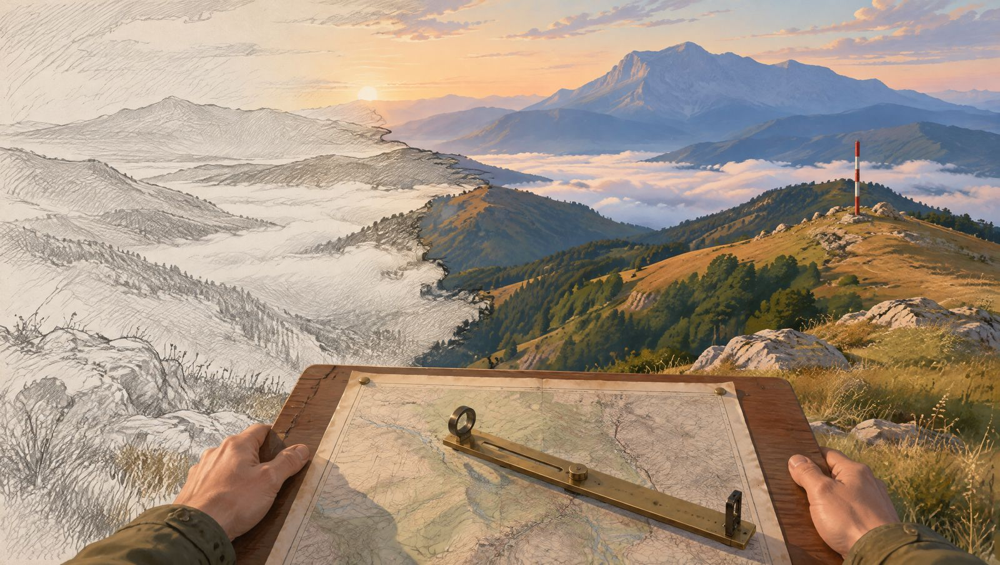
SIBILLA è un open world in prima persona ambientato sui Monti Sibillini nell'estate del 1953, e parte da una regola semplice: quello che misuri di giorno resta per sempre, quello che lasci in bianco, di notte, torna alla Sibilla. Sei Gemma Pratesi, disegnatrice fiorentina dell'Istituto Geografico Militare, mandata a finire la carta di una valle che non chiude e a ritrovare l'operatore che l'ha rilevata prima di te, sparito a novembre. Montemonaco è il tuo paese base; intorno ci sono la Corona del Monte Sibilla, la Valle Cieca, il Lago di Pilato con il campo americano e la grande piana di Castelluccio, tutto costruito sul terreno vero. Dove nessuno ha mai fissato niente il paesaggio è uno schizzo a matita, e quando lo misuri l'inchiostro corre sul terreno e tornano i colori. La storia ti porta da una parte all'altra del mondo: decifri una radio che ogni notte legge numeri, riconosci le fate in mezzo a un ballo senza mai vederle in faccia, tratti con un geodeta americano gentile e pericoloso, ricostruisci l'ultima giornata dell'uomo scomparso. A metà, una notte di stelle cadenti cambia il mondo, e scopri che le carte non descrivono quella valle ma la decidono, e che qualcuno ha usato anche la tua mano. Da lì in poi ogni persona che credevi di conoscere va rimisurata. Si gioca a giornate: di giorno fissi il mondo col teodolite, di notte trovi ciò che esiste solo al buio, all'alba hai un minuto per decidere che cosa tenere. Non ci sono armi: la sfida viene dai temporali sulle creste, dal Lupo di Pian Perduto, dalla Pantafica che ti siede sul petto, dalle sentinelle dei campi. La build nasce dal tuo libretto di campagna: il metodo dell'Istituto, che fissa per sempre; le segnature di una guaritrice di paese, che trattano con la notte; il tuo tratto di disegnatrice, che può perfino inventare un ponte e renderlo vero, a un prezzo che il mondo ti fa pagare. Il finale è la carta che consegni, e ce ne sono quattro, più uno segreto per chi decifra le trasmissioni, trova il punto che dice zero e fa fiorire un bastone fra le macerie. In mezzo, nomi incisi sui muri prima del tuo arrivo, una tredicesima Sibilla senza volto e una lettera di «L.» da Sant'Arianna, con un merletto per segnalibro.
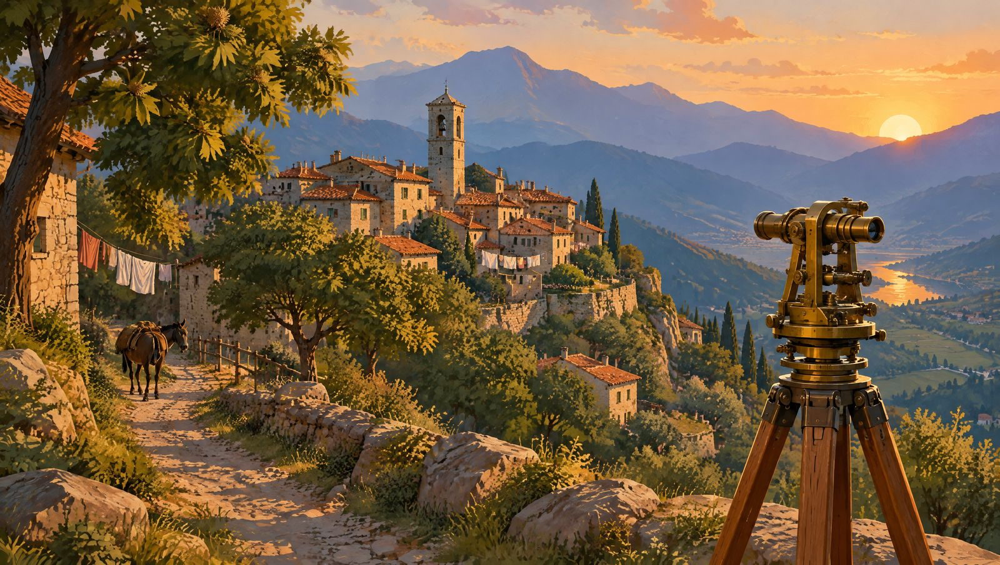
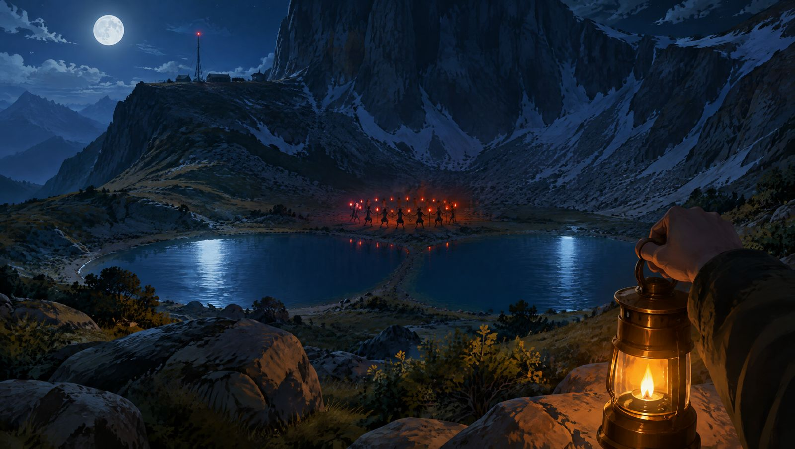
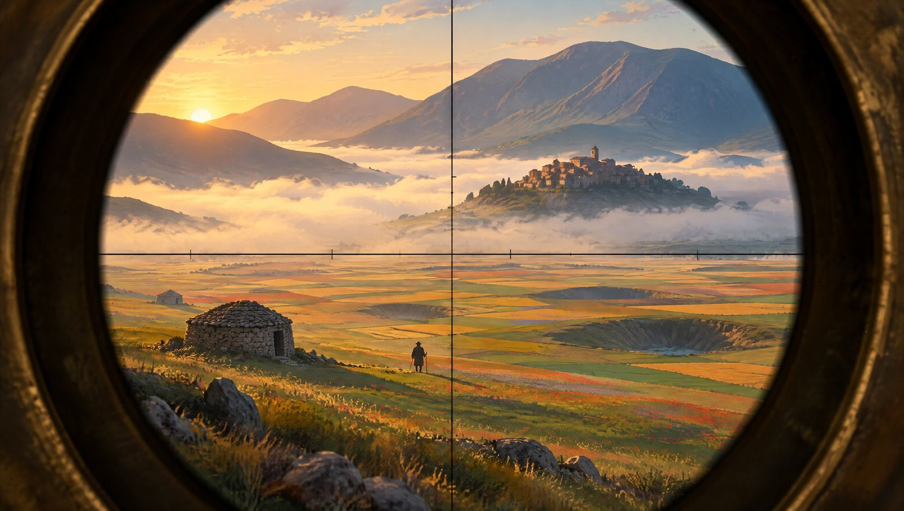
| Criterio | Critica | Produzione | Giocatore e mercato | Media |
|---|---|---|---|---|
| Originalità | 9 | 9 | 9 | 9,0 |
| Mondo | 8 | 8 | 8 | 8,0 |
| Trama | 7 | 8 | 8 | 7,7 |
| Missioni | 8 | 8 | 8 | 8,0 |
| Build | 8 | 7 | 7 | 7,3 |
| Segreti | 9 | 8 | 9 | 8,7 |
| Divertimento | 7 | 6 | 6 | 6,3 |
| Fattibilità | 6 | 5 | 5 | 5,3 |
| Mercato | 7 | 7 | 7 | 7,0 |
| Totale | 7,7 | 7,3 | 7,4 | 7,5 |
SIBILLA è il concept più letterario e originale che si potesse chiedere: la meccanica è il tema, il Ponte della Signorina e il canneggiatore sono colpi di scena da gioco premiato, e la ricostruzione dei Sibillini nel 1953 è rigorosa fino al calendario. Però la verità nascosta sovrappone quattro sistemi di regole che si contraddicono (il «per sempre» della misura contro le campagne precedenti e la Segnatura di Natale; Venanzi come causa di un caos che esisteva già), e alcuni colpi di scena poggiano su buchi (la stenografia, il segreto di Hennessy) o si vedono arrivare (Altamura, Assunta). Con una sola legge fondativa, meno mitologia e i colpi di scena ricalibrati, la trama può salire da 7 a 9; così com'è, è una bozza di altissimo livello con la bibbia della verità ancora da riscrivere.
È uno dei concept più consapevoli dello stack che si possano chiedere: niente combattimento, niente volti per regola di mondo, un gioco di paesaggio con nebbie e strumenti d'ottone, un nucleo deterministico testabile in Node. Così com'è scritto, però, si appoggia a un sistema mai visto (1600 celle che si rimescolano e un giocatore che scrive geometria libera) e riapre dalla finestra le cose che chiude dalla porta: persone ingrandite dal cannocchiale, folle di fate da scortare, stealth, una gola con l'acqua in piena, facce dipinte e fotografate. Con celle a kit e poteri a slot, il rimescolamento limitato alla Valle Cieca, la gola fusa e una vertical slice con criteri di stop, è realizzabile senza perdere l'idea: la carta che decide il mondo resta intatta.
SIBILLA ha il hook più forte e più originale che si possa chiedere: una carta che decide il mondo, la notte che rimescola ciò che non hai misurato e l'alba come momento della scelta, in un'Italia del 1953 che nessuno ha mai usato. Trama, secondarie e segreti sono a un livello da indie premiato, e l'utente ritroverebbe tutto ciò che ha chiesto. Il vero rischio per un giocatore è il minuto per minuto: di giorno si fa quasi sempre la stessa operazione topografica, uguale per tutte le build e ripetuta centinaia di volte, e l'atto II si chiude in una catena. Se il rilievo viene compresso (un'intersezione fissa a ventaglio, soglie su celle chiave) e ogni ramo ha un suo modo di fissare il giorno, è un potenziale piccolo culto; altrimenti è un gioco bellissimo che molti lodano e pochi finiscono.
Monti Sibillini, versante marchigiano sopra Montemonaco con uno sconfinamento sul Pian Perduto umbro, dal 21 giugno al 29 settembre 1953: dal solstizio a San Michele, quando i pastori scendono con la transumanza e la campagna di rilievo dell'Istituto Geografico Militare si chiude. È l'Italia di due settimane dopo le elezioni del 7 giugno: alla radio l'armistizio di Corea e, da fine agosto, la crisi di Trieste con le truppe mandate al confine; in paese l'unico telefono è alla posta, la corriera da Amandola passa due volte a settimana, le donne non portano i pantaloni (Gemma sì). Atmosfera: folk-horror luminoso, una «weird Italy» di montagna. Di giorno sole duro sul calcare e prati rasati dalle pecore, di notte saltarello con l'organetto, lumi a carburo e una nebbia bianca come la carta. Landmark centrale: la Corona del Monte Sibilla (2173 m), l'anello di roccia che cinge la vetta, con la bocca della Grotta. Si vede da ogni punto del mondo, e nel reticolo di ogni strumento il piombo ottico sfugge sempre dalla stessa parte, verso di lei: è la deviazione della verticale, trentatré secondi d'arco che nessun occhio vede ma ogni triangolo sente, ed è la chiave di tutta la storia. Secondo landmark: il Vettore (2476 m) con la Strada delle Fate, la cengia a quota 2000 che di notte si accende di fiaccole (nella realtà è una faglia). Dopo la svolta centrale se ne aggiunge un terzo, ostile: l'antenna americana sulla Corona con la sua luce rossa. Struttura: mondo continuo e compatto di circa 6,5 km² (2,7 × 2,4 km), un collage di tasselli del modello altimetrico reale dei Sibillini ricomposti più vicini. Un hub (Montemonaco), quattro zone separate da creste che nascondono il resto (da ogni cresta si vedono due o tre attrattori nuovi) e un sottosuolo lineare di circa 0,15 km², il Regno di Sotto, aperto dopo la svolta. Il Bianco non copre tutto il mondo: copre l'Orlo, cioè la Valle Cieca e le parti delle altre zone i cui triangoli toccano la Valle. Montemonaco, la mulattiera e i versanti esterni sono fissati dal 1894 e hanno i loro colori fin dal primo minuto; dentro l'Orlo il terreno vero si vede come uno schizzo a matita, e si inchiostra man mano che lo fissi. Lo stato della carta è lo stato del mondo.
Paese di pietra su uno sperone a 988 m: quaranta case di cui sei con un interno visitabile (la posta con la cabina di legno dove arriva la voce del colonnello, l'osteria con i nomi scritti col gesso sul muro, la camera di Venanzi in casa del segretario comunale, la cucina buia di Assunta in fondo al Borgo, la cella campanaria con il disco d'ottone del punto trigonometrico IGM, la caserma dei Carabinieri). Fuori: il forno, il fontanile, la neviera, la piazza. Il paese vive senza volti: mani che ritirano i panni dalle finestre, ombre di comari sui muri a calce, porte che si chiudono quando passi, bambini che senti giocare dietro l'angolo e non vedi mai, e la «voce di paese», un brusio posizionale che si fa udire vicino al forno, al fontanile e all'osteria e racconta l'avanzare delle fazioni. Di giorno è la base: compri lenticchie e pellicola, telefoni a Firenze, imposti le cartoline per tuo fratello, consulti l'agenda. Nelle notti di festa la piazza si riempie di saltarello, e fra i ballerini ci sono le fate.
Cosa introduce. Il folklore come sistema di regole: le scale con più di tre gradini sono rifugi dai lupi mannari, la farina sparsa sul selciato rivela le impronte caprine, la campana dell'alba rimanda a casa le fate. È anche l'unico luogo dove parla il mondo esterno (telefono, telegrammi, radio, posta) e l'unico interamente fissato: per questo il canneggiatore non vi mette mai piede, e lo vedi soltanto ai margini.
Prati d'alta quota e creste ventose fino alla vetta del Monte Sibilla, con l'anello di roccia della Corona e il vestibolo della Grotta: una stanza circolare con sedili scavati nella pietra, nomi di visitatori incisi, l'imbocco franato. Il 1° luglio 1953 qui lavora davvero uno scavo di eruditi e di un generale rabdomante dell'Ente Turismo, che trova la scritta «AV. P. 1378», un coltello, uno sperone e una moneta francese: nel gioco li vedi da lontano, fra le tende di tela. Il pilastrino di cemento della stazione trigonometrica principale è il punto da cui si chiude il primo triangolo e da cui, di notte, si fanno le osservazioni di stelle. Sotto, un mare di nebbia quasi ogni mattina.
Cosa introduce. Il cielo come pericolo e come strumento. Ogni tre o quattro giorni un temporale si costruisce sul Vettore dalle due del pomeriggio, annunciato con un giorno di anticipo (il barometro aneroide nella camera di Venanzi, i cumuli sul Vettore al mattino, la lettura dell'olio): i fulmini cercano il treppiede, e al primo tuono hai circa sessanta secondi per smontare e scendere sotto la cresta. Di notte le stelle danno la latitudine astronomica, cioè il modo di misurare la deviazione del piombo. Al tramonto, sulla nebbia, compare l'ombra della Sibilla: lo spettro di Brocken, la tua ombra gigante con l'aureola.
Il cuore del gioco, inventato dentro una geografia vera: una valle cieca carsica (valle senza sbocco, il cui torrente sparisce in un inghiottitoio) chiusa fra il Sibilla e il Vettore. Faggete fitte, doline, un casale di pastori abbandonato, stazzi di pietra a secco, un torrente che cambia letto, lo stazzo dell'inghiottitoio dove Venanzi ha passato l'ultima notte. All'imbocco, la chiesa della Madonna dell'Ambro con il ciclo seicentesco delle Sibille di Martino Bonfini, un solo interno a luce cotta, con i volti caduti nelle lacune dell'intonaco. A valle dell'inghiottitoio il torrente riemerge in una forra di 350 metri fra pareti di cento: tronchi incastrati, cascate e, in fondo, i ruderi dell'eremo di San Leonardo (nel 1953 è un rudere: lo ricostruirà un frate da solo dal 1971), dove nell'aprile 1944 si nascose la banda partigiana. Su ogni edizione della carta IGM la Valle è diversa: nel 1894 un borgo, nel 1924 un lago, nel 1948 un bosco con una cappella. La Valle è divisa in 105 celle da 128 metri, ognuna con tre varianti.
Cosa introduce. La notte rimescola: è l'unica zona dove il Bianco sposta davvero la geometria. Ogni notte le celle non fissate cambiano variante secondo la figura del ballo delle fate (otto figure, annunciate dalla radio di Venanzi e riconoscibili dal motivo d'organetto). Qui impari a fissare e a usare l'alba. Nella forra il cannocchiale non vede lontano, quindi si misura a corda, a eco e a passi; dopo ogni temporale l'acqua sale per stadi, leggibili sui segni di livello sulle rocce. È anche la zona della memoria: di notte, nel Bianco della forra, la notte del 1944 riaffiora in tableaux di pietra.
Il circo glaciale sotto la parete nord del Vettore, a 1940 m, con il lago che d'estate si divide in due specchi a forma di occhiali. La leggenda dice che qui fu trascinato il corpo di Ponzio Pilato e che l'acqua diventa rossa; l'acqua rossa ha una spiegazione, un gamberetto minuscolo che nessuno ha ancora descritto e che sarà descritto nel 1954. In basso, all'imbocco della valle, la frazione di Foce con il campo americano: tende, il camion Dodge, la tenda-laboratorio del gravimetro, un recinto con due cani e una lanterna che fa il giro alle ore fisse.
Cosa introduce. Il riflesso: di giorno il lago riflette la versione notturna dei versanti, e si può collimare sul riflesso per fissare ciò che di giorno non c'è. Il campo di Foce è uno dei due soli luoghi d'infiltrazione del gioco, con giri fissi, lanterne e cani. Dopo la svolta il lobo inferiore si svuota e scopre la Scala di Pilato, l'ingresso al Regno di Sotto.
Oltre la cresta, in Umbria: l'immensa piana carsica di Castelluccio, i campi di lenticchie, le doline, gli stazzi dei pastori di Dante Orsini, i cippi di confine della guerra fra Norcia e Visso (la battaglia del Pian Perduto, 20 luglio 1522). Castelluccio si vede lontano sul suo colle, con la bottega dove si comprano le lenticchie. All'alba il mare di nebbia riempie la piana fino all'orlo. Lungo il confine corre una striscia di celle che di giorno sono sodo e di notte campo seminato: è il «Confine che non chiude».
Cosa introduce. Lo spazio aperto senza ripari: di notte il Lupo di Pian Perduto si muove dove non ci sono scale né muri, e ogni riparo va cercato o costruito. Di giorno è l'unico posto abbastanza piatto per misurare una base geodetica con i fili d'invar: precisione contro la nebbia che sale.
Accessibile solo dopo la svolta, dalla Scala di Pilato. Un percorso lineare di circa 0,15 km² che segue alla lettera il racconto di Antoine de La Sale (1420): il passaggio del vento furioso, il ponte stretto che si allarga solo se cammini senza fermarti, i due draghi dagli occhi di fuoco scolpiti nella roccia, le due porte di metallo che sbattono giorno e notte, la porta di cristallo. Poi la Sala dei Sedili e la Carta Madre: un plastico di pietra della Valle grande come una piazza, dove ogni notte le fate spostavano i sassi secondo la figura scelta.
Cosa introduce. Niente sole, quindi niente si fissa; un'ora sotto vale una notte sopra (e conta come una notte nel calendario); ci si orienta col ritmo delle porte, a tempo di saltarello, e col filo a piombo, che qui punta verso l'alto.
Realismo stilizzato del dopoguerra, come una fotografia Ferrania colorata a mano. Palette stretta: bianco-grigio del calcare, ocra dei prati bruciati di fine estate, verde scuro delle faggete, il blu delle distanze (prospettiva aerea forte: i «monti azzurri» di Leopardi). Il rosso è riservato a tre cose (la stadia bianca e rossa, le fiaccole delle fate, la luce dell'antenna americana), così significa sempre «guarda qui». Luce: sole alto e duro a mezzogiorno, ore d'oro lunghissime, notti con fasi lunari coerenti col calendario del 1953 (luna piena il 26 luglio, novilunio a San Lorenzo), lumi a carburo caldi; una sola luce dinamica con ombre alla volta (sole o lanterna), fiaccole e falò come sprite emissivi. Meteo come drammaturgia: mare di nebbia all'alba come un solo strato con dissolvenza in profondità, cumulonembi dipinti e animati sulla volta celeste, vento sulle creste, piena nella forra. Due nebbie diverse: quella vera e il Bianco, che non è una nebbia uniforme ma uno schizzo a matita del terreno vero, con chiaroscuro a tratteggio, curve di livello grigie e la luce del giorno, così anche le prime ore sono belle da guardare. Quando fissi una cella, dalla stazione parte un'«inchiostratura» che corre sul terreno come inchiostro nell'acqua: tornano i colori e per un attimo compaiono a terra le curve di livello. È un effetto in screen space su una maschera di stato: costa poco e dà l'immagine simbolo del gioco. Niente HUD: la carta è un foglio pinzato sulla tavoletta che tieni in mano, il diario è il libretto di campagna, la simbologia è quella delle tavolette IGM anni Cinquanta. Le persone sono uno stile, non un ripiego: nessuno ha la faccia finché non è fissato. Si vedono nel cannocchiale come in un vecchio strumento (reticolo, vignettatura, aberrazione cromatica, tremolio dell'aria, immagine capovolta nell'ottica di Venanzi): sono impostor pre-renderizzati a otto direzioni, il canneggiatore tiene sempre stadia o bandierine davanti al busto, le fate restano velate. Poi in controluce, come voci filtrate (telefono, radio, rocchetti a filo, voce dall'acqua), come mani (un unico rig con varianti di materiale: giovane, anziana, guanto), come tableaux di pietra, nei cartelloni del cantastorie (stampe popolari e xilografie ottocentesche del Guerin Meschino di pubblico dominio, ridipinte con un filtro a tempera). Il paesaggio regge tutto: terreno vero dal modello altimetrico, calcare e faggio scansionati con licenza libera, vegetazione instanziata con impostor oltre 150 m, cielo fisico. I pochi oggetti visti da vicino sono strumenti di ottone, legno e vetro, che la modellazione procedurale fa bene. Musica: otto motivi di quattro battute in 6/8, uno per figura del ballo, scritti come MIDI e suonati con un soundfont libero di organetto; sono anche un segnale di gioco.
Gemma Pratesi, 26 anni, nata nel 1927 in San Frediano, a Firenze. Dal 1947 è disegnatrice-calcolatrice civile all'Istituto Geografico Militare: inchiostra le minute degli operatori e fa a mano la compensazione dei triangoli con le tavole dei logaritmi, che sa quasi a memoria. Non è mai stata in campagna. Precisa, ironica, testarda, cattolica per abitudine, non crede alle fate. Non è una prescelta: la mandano perché è l'unica che legge la stenografia di Venanzi (ne ha inchiostrato i fogli per cinque anni) e perché, se tornasse raccontando cose strane, nessuno crederebbe a una disegnatrice. Riesce dove quattro campagne hanno fallito per una ragione di mestiere: è una calcolatrice, e capisce che i trentatré secondi che nessuno riesce a compensare non sono un errore di misura ma un piombo che pende. Venanzi non è suo padre, né suo zio, né il suo amore: è una calligrafia che conosce meglio di molte facce. La sua posta personale è nel presente: suo fratello Piero, 22 anni, alpino di leva congedato in primavera, viene richiamato a fine agosto e mandato al confine durante la crisi di Trieste; le sue cartoline arrivano alla posta di Montemonaco, sempre più corte. In prima persona vediamo le sue mani (guanti senza dita, una matita FILA 4H con la mina consumata), il suo libretto, la sua ombra. Non ha voce recitata: parla attraverso ciò che scrive, e il giocatore sceglie il tono delle cartoline a Piero (dire la verità o rassicurarlo), che tornano nelle risposte e negli epiloghi. Il suo arco va da «chi disegna non decide» a «chi disegna decide, e ne risponde».
Operatore topografo dell'IGM, 41 anni, di Camerino. Ha rilevato la Valle dal giugno all'ottobre 1952 ed è sparito nella notte fra il 2 e il 3 novembre. Ci guida attraverso tre libretti ritrovati (due pagine mancano), un registratore a filo e una voce alla radio.
Come lo vedi. Calligrafia e stenografia nei libretti; la voce gracchiante dei rocchetti a filo e della radio a 7330 kHz; i suoi segnali di legno ancora piantati; nel Regno, una schiena illuminata da una lampada a carburo, china sulla Carta Madre. Non si gira mai.
Non è stato rapito: è entrato nella montagna di sua volontà, portando con sé la minuta vera e il libretto, per impedire che la Valle venisse fissata e consegnata agli americani. Non ha creato il caos della Valle, che esiste da secoli: lo dirige. Prima di lui le figure del ballo le sceglievano le fate; dalla Carta Madre, ogni notte, le sceglie lui, in modo che la Grotta resti irraggiungibile. Prima di sparire ha spedito a Firenze una minuta falsa costruita per Gemma: sapeva che l'avrebbe inchiostrata lei e come avrebbe risolto ogni segno ambiguo, e se ne è servito per far stampare cinque cose che gli servivano. È un uomo giusto che usa le persone. Secondo la regola trascritta da La Sale può uscire solo il nono, il trentesimo o il trecentotrentesimo giorno; ha lasciato passare i primi due. Il trecentotrentesimo è il 28 settembre 1953.
Il ragazzo di quindici anni che il Comune ti assegna per tenere la stadia. Lavora con te in piazza, sul campanile e sulla mulattiera nel prologo: lo vedi sempre di spalle o lontano, berretto e cartella a tracolla.
Come lo vedi. Una schiena con il berretto, una voce di ragazzo che grida le letture, una calligrafia storta sul biglietto. Torna nella secondaria «La fotografia mossa».
Il terzo giorno parte con il padre per le miniere del Belgio, senza salutarti: lascia la stadia appoggiata al casale della Valle con un biglietto («la signorina scusi»). Il biglietto lo trovi solo se torni al casale per la strada lunga. La mattina dopo qualcuno tiene la stadia a centocinquanta metri, e tu pensi che il Comune abbia mandato un altro ragazzo.
Il ragazzo che dal terzo giorno ti tiene la stadia: sempre a 80-200 metri, comunica a fischi e con le bandierine. Senza di lui non misuri le distanze con la stadia.
Come lo vedi. Solo nel cannocchiale e da lontano: una figura con la stadia bianca e rossa davanti al busto, giacca cachi, un berretto come quello di Tonino. Il fazzoletto rosso del '44 non compare mai nelle visuali: lo vedi solo nelle fotografie della banda. Il vincolo tecnico (niente volti da vicino) è la chiave del colpo di scena: non si avvicina mai perché non può.
È Nello Orsini, 19 anni, fratello minore di Dante, vedetta della banda partigiana, sparito il 13 aprile 1944: quella notte scese a ballare con le fate ed è rimasto ospite della Sibilla. Non invecchia e non può mettere piede sulla terra fissata, di nessuno: per questo non entra mai in paese, e cammina sul bordo fra ciò che è fissato e il Bianco. Pianta la stadia sempre mezzo passo dietro il picchetto, dalla parte del Bianco, perché non può toccare il punto che sta per essere fissato: ogni sua lettura ha trentatré centimetri in più, a qualunque distanza. Ha fatto da canneggiatore anche a Venanzi, che nei libretti lo chiama soltanto «N.».
Sessantadue anni, guaritrice del paese: segna il malocchio con l'olio nell'acqua, il fuoco di Sant'Antonio, le storte. Ti insegna le segnature, una per notte. Il prezzo non sono uova: è «leggimi questo», una riga di stenografia alla volta, da due fogli che tiene in un messale.
Come lo vedi. Mani: le vediamo da vicino, rugose, sopra la scodella d'acqua e olio, alla luce del camino. Il viso resta sotto il fazzoletto nero, nel buio della cucina. Parla poco, in italiano, a voce bassa; il dialetto è nei sottotitoli e nei biglietti. Da Pantafica: un peso, un'ombra che sfoglia il tuo libretto mentre puoi muovere solo gli occhi.
Ha le due pagine mancanti di Venanzi, strappate nell'ottobre 1952 perché vi aveva riconosciuto, disegnate, le figure del ballo; non sa leggere la stenografia e ha bisogno di te. È anche la Pantafica, che di notte ti siede sul petto e sfoglia il tuo libretto: un ruolo che passa di segnatrice in segnatrice, ereditato nel 1921 dalla madre Domenica, che leggeva i libretti dei topografi dal 1894. La Pantafica legge solo la scrittura normale, non la stenografia. Il giocatore può smascherarla già a metà dell'atto I. Il segreto vero è il perché: ogni sabato Gemma spedisce a Firenze la copia del suo libretto, e Assunta lo legge per sapere che cosa arriverà al colonnello; quando nelle pagine di Venanzi compare il sospetto sul cartografo del 1944, smette di chiederti di tradurre, per evitare che quel nome finisca nella tua grafia e quindi sul tavolo di chi l'ha scritto. E il patto del 1944, che è costato Nello, l'ha fatto lei, non Dante.
Ex comandante della banda partigiana Corona, oggi pastore e segretario della sezione comunista. Vuole la Valle in bianco per sempre: era il rifugio dei suoi e potrebbe tornare a esserlo.
Come lo vedi. Sempre lontano, sulle creste, con i cani maremmani e il mantello a ruota; parla a fischi da un crinale all'altro; da vicino solo di notte, al fuoco dello stazzo: mani, brace, voce.
Crede che il fratello Nello sia morto per colpa sua (lo aveva messo di vedetta) e di un cartografo fascista di cui non conosce il nome. Tiene ancora sotto l'eremo l'esplosivo di un lancio alleato del 1944 e nell'atto II progetta di far saltare l'antenna americana. Non sa niente del patto di Assunta.
Geodeta dell'Army Map Service americano, accampato a Foce con un gravimetro LaCoste-Romberg, un camion Dodge e sei uomini. Gentile e colto, parla l'italiano imparato ad Anzio nel 1944, accanto ai partigiani.
Come lo vedi. Una sagoma dentro la tenda illuminata dalla lampada a pressione; la voce alla radio da campo; promemoria battuti a macchina; un grammofono che suona il coro dei pellegrini del Tannhäuser. I suoi uomini sono ponchi ed elmetti visti da lontano.
Lavora per il programma che prepara la rete «stay-behind»: il Progetto CUMA vuole un deposito di armi e radio dentro la cavità sotto il Sibilla. Nel 1951 la sua gravimetria ha misurato la deviazione del piombo e ha fatto nascere tutto. Confrontando le edizioni IGM con le fotografie aeree del 1944 e con la bozza di febbraio, capisce la regola della carta: una carta americana non conta, perché la Valle è senza padrone dal 1522 e la decide solo la carta dello Stato che la rivendica, stampata, timbrata e distribuita. Gli serve quindi un'edizione IGM, e per l'edizione serve una minuta firmata da un operatore italiano. Il suo promemoria dice in chiaro come: l'imbocco sarà cartografato come «cava di calcare dismessa», con una strada forestale, una menzogna in piena vista. A San Lorenzo tenta prima la via diretta, l'esplosivo sotto la copertura dello scavo; quando il cunicolo crolla, gli resta solo la tua firma. Non è un mostro: crede davvero che i sovietici passeranno da Gorizia, e ripete senza saperlo la logica dei partigiani del 1944.
Direzione dei lavori geodetici dell'IGM, Firenze. Ti manda in missione, ti richiama, ti sospende; firma i tuoi ordini di servizio. Arriva a Montemonaco solo l'ultima notte.
Come lo vedi. Una voce nella cabina telefonica della posta, distorta dalla linea; telegrammi sempre più brevi; la sua firma, sempre la stessa, in calce agli ordini di servizio; l'ultima notte una sagoma in divisa dietro il parabrezza di una Fiat 1400 in piazza, poi in controluce sulla porta del Municipio.
Nell'aprile 1944, tenente del servizio cartografico della Repubblica Sociale distaccato ad Ascoli, consegnò ai tedeschi la tavoletta del 1924 della Valle, annotata a matita di sua mano, e la posizione della banda. La colonna entrò di notte e non tornò. Vuole la Valle chiusa per seppellire quella notte, vuole il libretto di Venanzi perché teme che contenga il suo nome, e ha scelto Gemma perché nessuno l'avrebbe creduta. Nell'atto I la sola traccia è un numero di protocollo dell'ufficio («1153/R») sul promemoria americano, accanto al nome di un innocente, il colonnello Fabrizio Arcangeli dell'ufficio di collegamento NATO di Verona, che fa da falsa pista.
Una fata della Sibilla: veli bianchi, gonna fino a terra, piedi di capra. È quella che segui la prima notte di festa, e quella che ogni alba si ferma qualche minuto in più al fontanile.
Come lo vedi. Silhouette in controluce contro il falò, veli che non si sollevano mai; i piedi solo per un istante, quando la gonna si alza nel ballo, o capovolti nel vecchio cannocchiale di Venanzi; una risata e un colpo di zoccolo sul selciato.
Da quarant'anni il campanaro suona l'alba sei minuti in ritardo per lei. Vuole restare nel mondo, ma per restarci qualcuno deve fissarla al primo sole con uno strumento, e non potrebbe più tornare indietro.
Sergente cartografo della colonna tedesca del 1944, nato la notte di Natale del 1912: nel 1953 ha quarant'anni, ma ne dimostra cento. Perso nel Bianco, è diventato ciò che il folklore dice di chi nasce quella notte.
Come lo vedi. Un'ombra enorme nella nebbia, mai intera; bottoni della Wehrmacht nel fango; una voce che conta in tedesco, «einundzwanzig, zweiundzwanzig», sempre da un'altra parte, con il riverbero della nebbia.
Non caccia le pecore: le conta. Ogni notte ne mette in fila ventitré, l'appello dei suoi uomini che non ha mai potuto chiudere. Ha disegnato la Nachtkarte, la carta notturna della Valle, sul retro della tavoletta del 1924 che la colonna aveva ricevuto ad Ascoli: sul recto ci sono ancora le annotazioni a matita del tenente italiano che gliel'ha consegnata. Il suo diario è scritto in Kurrent.
Cantastorie di Amandola che gira i paesi con i cartelloni del Guerin Meschino e declama sopra l'organetto.
Come lo vedi. La bacchetta che indica, le mani sul mantice, la voce e i cartelloni ridipinti: gli unici volti del gioco, perché sono stampe popolari.
Dipinge sulle vecchie stampe quello che sogna, e sogna quello che le fate gli raccontano: i suoi cartelloni mostrano in costume medievale il 1944 e la sparizione di Venanzi; l'ultimo, che manca, mostra una donna con un treppiede sulla Corona all'alba.
Il fratello di Gemma, alpino richiamato a fine agosto 1953 e mandato al confine orientale.
Come lo vedi. Solo cartoline: una calligrafia larga e tonda, righe annerite dalla censura, un timbro postale diverso ogni volta.
Nelle cartoline scrive che va tutto bene; la censura militare ne cancella le righe che dicono dove si trova. Gemma, che legge le carte, capisce dai pochi toponimi rimasti che è fra Gorizia e Tarvisio, cioè esattamente dove Hennessy dice che passeranno i sovietici.
La padrona del Regno di Sotto secondo la leggenda: la sibilla punita per superbia e chiusa nella montagna, che accoglie i cavalieri e non li lascia più andare.
Come lo vedi. Mai come corpo: una voce di donna che esce dall'acqua (il lago, il fiume sotterraneo) e che a volte si sovrappone ai numeri alla radio; la forma della Corona; il disegno del ballo; e lo spettro di Brocken, la tua stessa ombra con l'aureola sulla nebbia. In paese dicono «la Sibilla si affaccia». Ha la tua forma.
Non è una regina né un demone: è la montagna che non ha ancora deciso. I Sibillini si muovono davvero lungo le loro faglie, e la Valle che cambia di notte è la montagna che prova le forme che potrebbe prendere; il ballo è il suo sguardo su se stessa quando nessuno guarda. Misurare e stampare sono il tentativo umano di decidere al posto suo. Le sue «profezie» sono le forme che sa che prenderà.
Firenze, giugno 1953. La tavoletta della Valle Cieca, sopra Montemonaco, non chiude: l'operatore Ettore Venanzi è sparito a novembre lasciando una minuta incoerente, tre libretti e un errore di trentatré secondi d'arco che nessuno, in quattro campagne dal 1894, è riuscito a compensare. Il colonnello Altamura manda a finirla l'unica persona che sa leggere quella grafia: Gemma Pratesi, disegnatrice e calcolatrice, mai stata in campagna. Gli ordini: rioccupare le stazioni di Venanzi, completare il rilievo, spedire ogni sabato a Firenze la copia del libretto, trovare il libretto mancante e consegnare la minuta entro San Michele. Alla prima alba Gemma scopre la regola che regge tutto il gioco, su un sentiero che ha appena percorso: il tratto che ha collimato al primo sole dal campanile è ancora lì, quello che ha solo camminato si è spostato.
Atto I, La carta bianca (21 giugno - 9 agosto, circa 4,5 ore). Dopo il prologo il libretto apre quattro piste parallele, giocabili in qualsiasi ordine, ognuna in una zona diversa e con un verbo diverso. Pista A, la Corona: salire al Sibilla, chiudere il primo triangolo e scoprire che non chiude; poi, di notte, osservare le stelle dal pilastrino e capire che l'errore non è nello spazio ma nel piombo che pende verso la Corona. Con la correzione Gemma chiude il primo triangolo della Valle: è la prima in sessant'anni, ed è il momento in cui il Metodo diventa possibile per tutti. Pista B, la radio: nella camera di Venanzi un ricevitore BC-348 capta ogni notte a 7330 kHz una voce d'uomo che legge numeri; decifrati con le tavole dei logaritmi, portano a un sasso nella Valle con una V incisa e stelle alpine fresche: Venanzi è vivo. Pista C, le fate: la notte di Sant'Anna, con la luna piena, riconoscere le fate fra i ballerini senza vederle in faccia e seguirne una fino alla Corona, dove entra nella roccia; conoscere Assunta e il suo prezzo («leggimi questo»); la prima visita della Pantafica, che il giocatore curioso può smascherare già in questo atto. Pista D, gli americani: il campo di Foce, la gravimetria di Hennessy, un promemoria su «CUMA» con una data, il 10 agosto, un protocollo riservato dell'IGM (1153/R) e una copia per un colonnello Arcangeli di Verona, che porta il giocatore a sospettare la NATO, non chi lo ha mandato. Le piste convergono nello stazzo dell'inghiottitoio, dove ricostruisci l'ultima giornata di Venanzi: ha spedito a Firenze una minuta falsa, è entrato nella montagna e ha una data per uscire, il 28 settembre. E il primo colpo di scena: da novembre le figure del ballo non sono più casuali, perché nessuna ha mai lasciato aperto un sentiero verso la Grotta. Il caos della Valle esiste da secoli, ma adesso ha una mano. Nelle ultime trasmissioni prima di agosto la radio di Venanzi cambia tono: «La porta si chiuderà a San Lorenzo. Non puoi impedirlo. Puoi scegliere chi si salva.» Intanto le fazioni avanzano da sole, al massimo sei passi ciascuna in questo atto, e lo leggi nelle voci di paese e nell'agenda: Dante abbatte di notte i tuoi segnali di legno, gli uomini di Hennessy triangolano i tuoi punti dalle creste, il camion americano porta casse allo scavo.
La notte di San Lorenzo (10 agosto). Il giocatore sa che cosa succederà e non può impedirlo: la posta è chi si salva. Mentre il paese guarda le stelle cadenti, alle 2:10 gli americani fanno saltare il vestibolo della Grotta e il cunicolo crolla, chiudendo anche la porta delle fate nella roccia della Corona. Fino all'alba delle 5:06 guidi al buio le fate rimaste fuori; quelle che la luce prende restano nei prati come statue di calcare, e il loro numero pesa sull'atto II e sui finali. Il mondo cambia in quattro modi. Accessi: il Lago di Pilato si svuota a metà e scopre la Scala di Pilato, la seconda via per il Regno di Sotto; la Corona diventa un campo recintato con antenna e luce rossa. Fazioni: Altamura ti sospende con un telegramma, il Comune ti toglie la camera e devi scegliere dove vivere (la cucina di Assunta, lo stazzo di Dante, i ruderi dell'eremo); sulle tre mulattiere principali compaiono posti di blocco fissi, una sbarra, una lanterna, una sagoma e un cane; i partigiani credono che sia stata tu a guidare la dinamite con le tue coordinate. Regole: la radio di Venanzi tace; il ballo ha perso il suo coreografo e la montagna si ridispone da sola, strappando il Bianco lungo la faglia e lungo il torrente, una regola nuova che si impara (le bandierine di Nello al tramonto, l'olio di Assunta e la carta gravimetrica la prevedono); le fate rimaste fuori si nascondono di giorno nelle cantine e di notte trascinano la gente a ballare fino allo sfinimento.
Atto II, La carta disegnata (11 agosto - 27 settembre, circa 5 ore). Si apre con il Ponte della Signorina: Gemma, ormai fuori dall'Istituto, scopre che il ponte nella Valle è il suo disegno, tratteggio compreso, e che la carta stampata decide che cosa c'è dove nessuno ha fissato. Poi il secondo colpo: i cinque segni che lei ha «risolto» a Firenze li aveva preparati Venanzi, conoscendo la sua mano, e messi in fila sono un sentiero verso la vecchia porta della Corona. Anche Venanzi l'ha usata. Gemma capisce il vero piano di Hennessy (stampare una Valle con dentro la sua strada) e sceglie la firma che metterà sotto il proprio lavoro. Da qui l'atto si apre in tre fili, in qualsiasi ordine. La notte della vedetta: nella forra, all'eremo, ricostruisce la notte del 1944 dai tableaux di pietra, riconosce sulla tavoletta della colonna la calligrafia che da cinque anni firma i suoi ordini di servizio (Altamura) e, all'alba, con un esperimento di misura, scopre chi le tiene la stadia. La base di Pian Perduto: misura con i pastori di Dante una base geodetica, dopo aver attraversato la piana di notte con il Lupo in caccia; i conti dicono dove si apre la seconda porta. Il campo della Corona: si infiltra di notte per leggere l'edizione che verrà stampata («cava di calcare dismessa», con la strada) e decide che fare della bomba di Dante. Con due fili chiusi su tre, la Scala di Pilato si apre: Gemma scende nel Regno, supera le prove di La Sale, trova la Carta Madre, il campo di Venanzi, il suo libretto e un sedile di pietra vuoto con incise le iniziali E. V. Quando Gemma torna da Assunta con il nome di Altamura, arriva l'ultimo rovesciamento: la Pantafica leggeva il suo libretto per proteggerla, ha smesso di farsi tradurre le pagine di Venanzi appena vi è comparso il sospetto sul cartografo, e il patto del 1944 che è costato Nello l'ha fatto lei. Intanto, a ogni alba, le fazioni avanzano fino al loro tetto: la strada di Hennessy cresce di un tratto nel Bianco (sei tratti predefiniti), le statue di fata si spostano verso il paese, Altamura passa dai telegrammi alle minacce, i partigiani rubano gli strumenti a chi non sta con loro. Le cartoline di Piero arrivano dal confine con righe annerite dalla censura.
Atto III, La carta consegnata (notte fra il 28 e il 29 settembre, circa 1,5 ore). Un'unica lunga notte aperta in cui tutto converge: Altamura aspetta la minuta nel Municipio con un corriere in Moto Guzzi pronto a partire all'alba per Firenze; la trivella americana lavora sulla Corona; le fate ballano l'ultimo ballo; i pastori caricano le greggi per la transumanza; dalla roccia, in fondo al sentiero dei cinque oggetti, Venanzi bussa, e la sua radio torna a parlare da una crepa. Gemma deve aprire dall'esterno la vecchia porta, scegliere chi e cosa fissare nei primi minuti di sole delle 6:04 (Venanzi sulla soglia, Nello sulla riva, Fiordaliso al fontanile, una strada che esiste solo di notte: non c'è tempo per tutto), disegnare la minuta finale sulla tavoletta alla stazione della Corona e farla arrivare. All'alba arriva anche l'ultima cartolina di Piero. Il finale è quello che disegni: ogni ramo e ogni cosa che hai scoperto ti danno modi diversi di farlo, e la prova finale misura ciò che sai, non le tue statistiche.
0) La legge, una sola. La Valle Cieca e il suo Orlo non hanno ancora una forma decisa: la montagna, lungo la sua faglia, prova di notte le forme che potrebbe prendere. Una forma resta solo finché qualcuno ne è testimone, e i testimoni stanno su un'unica scala, dal più debole al più forte. Il ballo delle fate è lo sguardo della montagna su se stessa: ogni notte ridispone ciò che nessuno tiene fermo, scegliendo per ogni cella una delle sue varianti. Il disegno a matita la tiene ferma una notte, la segnatura con olio e sale tre notti. La carta dello Stato che rivendica la Valle, stampata, timbrata e distribuita, è un testimone debole ma con mille occhi: decide che cosa c'è nelle celle non fissate (l'inventario: un ponte, una cappella, un lago), finché un'edizione successiva non la sostituisce, ma non dove sta. Il triangolo chiuso (due visuali diurne da stazioni fisse che si incrociano con un errore sotto i cinque secondi) fissa per sempre. All'alba basta una sola visuale da una stazione fissa nei primi minuti di sole, perché il sole fa da secondo testimone: ciò che collimi resta come la notte l'ha lasciato. Una fata colta dal sole senza testimoni umani diventa pietra; una fata o una persona collimata al primo sole resta nel mondo, viva e mortale. Ciò che è fissato non si disfa più: nessuna segnatura, nessuna carta, nessun ballo. 1) Perché nessuno ha mai fissato la Valle. Sotto il Sibilla c'è una cavità, il Regno, che devia il filo a piombo verso la Corona: ogni strumento livellato nell'Orlo eredita l'errore, e ogni triangolo che tocca la Valle manca la chiusura di trentatré secondi d'arco, sette volte la tolleranza. Le campagne IGM del 1894, 1924 e 1948 hanno misurato e non hanno mai chiuso: a Firenze hanno compensato a tavolino e stampato ciò che credevano, e la Valle è diventata ogni volta quella carta (un borgo, un lago, un bosco con una cappella), sempre in bianco. Montemonaco e i versanti esterni, fuori dall'Orlo, hanno chiuso nel 1894 e sono fissati da allora. 2) 1328: un terremoto fa franare l'interno della Grotta. 1420: Antoine de La Sale arriva al vestibolo e trascrive la regola dei visitatori: si esce solo il nono, il trentesimo o il trecentotrentesimo giorno, altrimenti si resta (i cavalieri rimasti sono i sedili di pietra della Sala). 20 luglio 1522: Norcia e Visso si battono per il Pian Perduto; i notai non riescono a descrivere il confine della Valle, che da allora resta senza padrone, e quindi in attesa della carta di uno Stato. 3) Ogni vigilia di Natale le segnatrici di Montemonaco rinnovano la Segnatura della Valle, che fa dimenticare i suoi sentieri a chi se ne va: per questo gli operatori tornavano a Firenze con ricordi confusi e le differenze fra le edizioni venivano archiviate come errori di campagna. La Segnatura non disfa niente di ciò che è fissato. Con la Segnatura passa di madre in figlia anche il ruolo della Pantafica: Domenica Pierantoni legge i libretti dei topografi dal 1894, sua figlia Assunta dal 1921. 4) Notte fra il 13 e il 14 aprile 1944: la banda partigiana Corona (pastori, due prigionieri inglesi evasi, un fuciliere jugoslavo) è nascosta all'eremo di San Leonardo. Il tenente Furio Altamura, cartografo della RSI ad Ascoli, consegna ai tedeschi la tavoletta del 1924, annotata di sua mano, con la posizione della banda. Assunta chiede alla Sibilla di nascondere i ragazzi; il prezzo è «un ballerino per la Valle». La Valle balla: la colonna di ventitré tedeschi entra nel Bianco seguendo una carta che la notte ha già smentito e non ne esce più; Nello Orsini lascia il posto di vedetta per scendere a ballare e resta ospite della Sibilla. Il sergente Konrad Mäder sopravvive nel Bianco diventando lupo, con la tavoletta di Altamura in tasca: sul retro disegna la Nachtkarte. Dante crede il fratello ucciso dai tedeschi. 5) 1951: una campagna gravimetrica dell'Army Map Service registra una deviazione della verticale impossibile, centrata sul Sibilla. Hennessy ipotizza una cavità enorme, perfetta per un deposito stay-behind: nasce il Progetto CUMA. Tramite il servizio informazioni militare la richiesta arriva all'IGM, sul tavolo di Altamura (protocollo 1153/R), che riconosce la Valle. 6) Giugno-ottobre 1952: Venanzi rileva la Valle con Nello alla stadia. Scopre che i triangoli non chiudono di trentatré secondi ma non ne trova la causa, perché gli mancano i dati gravimetrici; scopre le regole della notte, conosce Assunta e le fate, capisce che una carta non descrive la Valle ma la decide, scopre il piano americano e, sulla richiesta protocollata 1153/R, riconosce la stessa mano che ha annotato la tavoletta di pietra dei tableaux del 1944; per prudenza non scrive mai il nome, perché i libretti finiscono a Firenze. Annota tutto in stenografia, con le figure del ballo disegnate a margine: sono le due pagine che Assunta gli strappa da Pantafica. 7) Fine ottobre 1952: Venanzi fa il patto con le fate. Entrerà nella montagna e dalla Carta Madre sceglierà ogni notte la figura del ballo, in modo che nessun sentiero porti alla Grotta; da una radio partigiana nascosta nel cunicolo trasmetterà a 7330 kHz coordinate e figura della notte, per chi verrà dopo. La roccia della Corona e il vestibolo della Grotta sono due bocche dello stesso cunicolo. 8) 2 novembre 1952: spedisce a Firenze, con il postino a mulo, una minuta falsa che rende la Grotta irraggiungibile sulla carta. Dentro lascia di proposito cinque segni ambigui (una macchia sul tratteggio del torrente, un segno convenzionale spezzato, un cerchietto aperto, una curva che rientra, una crocetta senza didascalia), sapendo che a inchiostrarla sarà Gemma e che lei li risolverà secondo la norma dei segni convenzionali: un ponticello, una fontana, un tornante, un casotto, una cappellina. Messi in fila, sono un sentiero dalla Valle alla vecchia porta della Corona, l'unica via per uscire dall'esterno se un giorno il vestibolo venisse chiuso. Registra un rocchetto («Non chiudete la porta») ed entra nella roccia nella notte fra il 2 e il 3. 9) Febbraio 1953: l'IGM stampa una bozza provvisoria dalla minuta inchiostrata da Gemma, con timbro, e ne distribuisce una copia al Comune; nel cartiglio c'è scritto «Disegnò: sig.na G. Pratesi». I cinque oggetti compaiono nella Valle, e i pastori, che hanno visto la bozza dal segretario comunale, chiamano il ponte «della Signorina». 10) Primavera 1953: Hennessy confronta la bozza con le fotografie aeree del 1944 e vede che il ponte prima non c'era: capisce la regola della carta e capisce che la minuta è falsa. Altamura manda Gemma, con l'ordine di spedirgli ogni sabato la copia del libretto. 11) 1° luglio 1953: lo scavo dell'Ente Turismo trova la scritta «AV. P. 1378»; Hennessy si offre di aiutarlo con l'esplosivo. Dalla Carta Madre Venanzi vede che il vestibolo crollerà (è una delle forme che la montagna prenderà: nella storia vera il vestibolo crollò per un uso scellerato di esplosivi fra il 1953 e il 1968) e lo annuncia alla radio: la porta si chiuderà a San Lorenzo, non si può impedire, si può scegliere chi salvare. 12) Notte del 10 agosto 1953: gli americani fanno saltare il vestibolo; il cunicolo crolla e chiude entrambe le bocche. Le fate restano fuori e la radio tace. Il ballo perde il suo coreografo: senza figure, la montagna si ridispone da sola lungo le sue linee di frattura, e il Bianco si strappa seguendo la faglia e il torrente. Il carsismo incrinato svuota il lobo inferiore del Lago di Pilato e scopre la Scala di Pilato, una seconda via verso il Regno. 13) Fine agosto 1953: il governo Pella manda le truppe al confine orientale; Piero viene richiamato. Agosto-settembre: Hennessy picchetta la sua strada nel Bianco in dodici tratti e prepara a Firenze l'edizione con strada e «cava dismessa», che manca solo di una minuta firmata; Dante prepara la bomba all'antenna; Venanzi scava dall'interno verso la vecchia porta della Corona, in fondo al sentiero dei cinque oggetti. 14) Notte fra il 28 e il 29 settembre 1953, vigilia di San Michele: ultima notte utile per Venanzi, ultima notte d'alpeggio, ultima notte per la minuta. 15) La verità più profonda, che solo il finale segreto mostra per intero: le forme che la montagna prova di notte sono i suoi movimenti possibili lungo la faglia del Vettore, la Strada delle Fate. Nessuna carta e nessuna misura possono decidere che cosa farà la montagna; si può decidere soltanto dove guardare, che cosa tenere fermo nella memoria e chi far restare.
In prima persona: fare stazione con il teodolite o la tavoletta pretoriana, collimare, intersecare a ventaglio, leggere la stadia, correggere il piombo, osservare le stelle, fissare all'alba, ascoltare (radio, eco, voci di paese), segnare, disegnare, fotografare con una Condor delle Officine Galileo, trattare, nascondersi, seguire, ballare. Ogni ramo ha poi un proprio modo di fissare di giorno, così la build cambia anche il lavoro quotidiano: il Metodo fissa per sempre ma lentamente, la Segnatura tiene ferma una cella tre notti con olio e sale, senza strumenti, il Tratto la tiene una notte con un disegno a matita da un solo punto, e la rende permanente se all'alba la ripassi a china da una stazione.
Vedi qualcosa nel Bianco (un faggio isolato, un muretto, un riflesso nello schizzo a matita) → cerchi un punto da cui vederlo da una stazione nota → pianti il treppiede, centri il piombo e applichi la correzione verso la Corona, cali le due bolle, collimi → seconda visuale da un'altra stazione, o un fischio a Nello per la stadia → il raggio si interseca e la cella si inchiostra sotto i tuoi occhi insieme a quelle che il raggio attraversa fino al primo ostacolo (il ventaglio cresce con la quota della stazione: fino a tre per tre da una cima). Qualcosa cambia: un sentiero si stabilizza, una porta della notte si chiude, compare un dettaglio che apre una domanda. Dopo i primi dodici punti le bolle si calano da sole («la mano si è fatta»), e un'intersezione dura meno di un minuto. Una zona chiede 30-50 collimazioni, non centinaia; la minuta ha 40 celle chiave segnate in rosso (porte, sentieri, la Scala, il sito del deposito), le altre sono facoltative.
Una sessione è una giornata di campagna (20-40 minuti). Mattina: scegli una domanda nel libretto e pianifichi sulla carta, con un occhio al barometro e all'agenda (con la mula fin dove arriva la mulattiera, poi un solo strumento in spalla). Giorno: rilevi e indaghi; ogni tre o quattro giorni c'è un temporale annunciato dal giorno prima. Tramonto: decidi se dormire o uscire (il ballo, la radio, ciò che esiste solo di notte, le creature). Alba: il colpo d'alba, il tempo che il sole impiega a staccarsi dalla cresta (circa un minuto reale), in cui una sola visuale da una stazione fissa basta a fissare ciò che la notte ha lasciato. Il tempo ha una regola sola: ogni notte conta, che tu dorma o esca, e le fazioni avanzano a ogni alba, ma ciascuna ha un tetto di sei passi per atto; quando l'ha esaurito il libretto lo scrive («Hennessy aspetta») e il mondo ti aspetta davvero. Il calendario è leggibile nell'agenda del libretto, con le date fisse (San Giovanni, Sant'Anna con la luna piena del 26 luglio, il 20 luglio del Pian Perduto, le trasmissioni speciali) e, al bivacco, l'opzione «aspetta fino a...». Le settimane di lavoro ordinario (calcoli, copie spedite a Firenze) passano quando chiudi una pista e sono riassunte in una pagina del libretto; il calendario distribuisce i giorni restanti fra le piste ancora aperte, quindi San Lorenzo e San Michele non arrivano mai prima che tu abbia chiuso l'atto e non saltano mai un contenuto.
A piedi, con salti, arrampicata assistita sulle pareti che hai tratteggiato (solo su volumi di arrampicata predefiniti: le prese si leggono nel disegno e poi nel mondo), scivolate sui ghiaioni, discese a corda su ancoraggi fissi. La mula Moretta porta la seconda cassa sulle mulattiere; dove non arriva lei, scegli quale strumento portarti. Viaggio rapido solo lungo le «strade note», mulattiere interamente fissate fra due stazioni, con il tempo che passa; mai attraverso il Bianco. Di notte la traversata cambia: i picchetti tracciano una linea sicura nel Bianco, il saltarello ti trasporta lungo la figura del ballo, la Strada delle Fate è una corsia velocissima sulla cengia del Vettore. Le abilità aggiungono vie: eliotropio e lanterna per agganciare stazioni lontane, bozzetti di scale e passerelle sulle ancore previste, il ballo. Opzioni di comfort dal primo giorno: campo visivo, oscillazione della testa, aiuto alla presa e alla collimazione, vignettatura in movimento.
Niente armi e niente combattimento: Gemma è una cartografa. La sfida viene da quattro fonti con regole leggibili. Il cielo: fulmini sulle creste (al primo tuono circa sessanta secondi per smontare il treppiede), nebbia, piene nella forra, freddo. La notte: se l'alba ti trova nel Bianco senza un punto fissato ti risvegli altrove e perdi il lavoro di quella notte. Le creature, che seguono le regole del folklore: i lupi mannari non salgono più di tre gradini, cercano l'acqua, tornano uomini se li pungi fino a tre gocce di sangue o se li chiami tre volte col nome di battesimo; la Pantafica ti paralizza nel sonno (puoi muovere solo gli occhi) e si ferma a contare se trova lenticchie o una scopa; le fate non fanno male, ma se ti prendono nel ballo ti tengono fino alla campana. Gli uomini, solo in luoghi d'autore: i campi di Foce e della Corona di notte, con giri fissi, lanterne e cani, e dopo la svolta tre posti di blocco fissi sulle mulattiere (sbarra, lanterna, sagoma, cane), da aggirare leggendo sulla carta le linee di vista o da superare con i documenti in uno scambio scritto. L'infiltrazione è un problema di topografia, non di riflessi. Le imboscate partigiane ti portano via gli strumenti, da riprenderti trattando. Fallire non è mai game over, tranne le cadute: ti risvegli a Montemonaco con un costo (una notte passata, una gamba del treppiede da far riparare al fabbro). Nessun level scaling: lupi, porte e sentinelle hanno sempre le stesse regole. Il Lupo impara: dopo tre manciate di lenticchie non si ferma più a contare.
Nessuna icona, nessuna torre che rivela, nessuna freccia (solo in modalità assistita, opzionale). Si naviga con cinque cose. La carta, che mostra a inchiostro ciò che hai fissato, a matita ciò che hai visto ma non misurato (e che può essere sbagliato) e in rosso le 40 celle chiave. Il libretto di campagna, diviso in Domande, scritte da Gemma con indicazioni rispetto a punti di riferimento («il sasso a sella dove il campanile sparisce dietro la Corona, poi tre faggi verso il Vettore»), Indizi con fonte e affidabilità (alcune piste sono false, e nessuno strumento te lo dice: lo deduci), le «voci di paese» con l'avanzare delle fazioni e il loro tetto, e l'agenda. Ogni personaggio ha nel libretto un ritratto diegetico, un oggetto-simbolo al posto del volto (la scodella di Assunta, il mantello a ruota di Dante, il grammofono di Hennessy, la firma di Altamura, la stadia di Nello). La tavola del Due novembre resta appesa nello stazzo come lavagna permanente delle domande aperte, aggiornata da Gemma. I landmark: la Corona, il Vettore con la sua cengia, il campanile, poi l'antenna rossa. Il filo a piombo, che pende sempre verso la Corona e, se lo sai leggere, verso ogni anomalia. Un glossario attivabile (IGM, stadia, collimare, RSI, Gauss-Boaga) aiuta chi non è italiano né topografo. Le stazioni non rivelano niente: chiudere un triangolo fissa soltanto il ventaglio che vedi, il contenuto lo devi guardare tu.
Il libretto di campagna ha 24 pagine utili, e ogni tecnica ne occupa da una a quattro. Le pagine si guadagnano chiudendo i dodici triangoli principali della rete e con missioni e segreti, fino al tetto di 24 verso la fine; tutte le tecniche disponibili a una sola build ne richiederebbero 40, quindi non si può avere tutto. I verbi base (fare stazione, collimare, intersecare a ventaglio, stadia, correzione del piombo, colpo d'alba) bastano a risolvere ogni missione principale: le tecniche aggiungono opzioni e scorciatoie, non numeri. Ogni ramo si impara da una fonte diversa: il Metodo dai libretti di Venanzi, man mano che li decifri; la Segnatura da Assunta, una per notte, in cucina, in cambio di una riga di stenografia tradotta (se vivi da Dante, Assunta ti lascia le segnature su biglietti che Nello ti porta al margine del paese); il Tratto dalla pratica di Gemma al tavolo da disegno. I poteri che toccano il mondo non piazzano oggetti liberi: ogni cella ha da due a quattro ancore previste (guado, passerella, scala, sorgente, sentiero alternativo, fessura) e Inchiostro, Bozzetto e Patto ne attivano una. Rispecializzazione limitata e fisica: puoi strappare al massimo tre pagine in tutto il gioco; la pagina strappata vola via col vento, come le foglie della Sibilla cumana, e la ritrovi più tardi impigliata da qualche parte nella Valle: solo allora la pagina ti torna. Nessuna statistica, nessun materiale per regione.
La geodesia dell'Istituto: ciò che è misurato non si discute. Fissa lentamente ma per sempre; il mondo si conquista con la precisione.
Il sapere delle segnatrici: ciò che non è misurato si tratta. Fissa in fretta ma a tempo; rituali, patti e regole del folklore usati come strumenti.
Il mestiere di Gemma: ciò che è disegnato diventa. Fissa da lontano e in un attimo, ma solo se all'alba ripassi a china; osservazione, memoria, immaginazione.
La firma: alla fine della missione del Ponte della Signorina Gemma sceglie, una volta sola, che cosa mettere sotto ciò che disegna: il Timbro dell'Istituto (sblocca la Chiusura), la Croce della segnatrice (il Patto) o la Sigla G. P. (l'Inchiostro di china). Le altre due restano chiuse per sempre. Poi tre coppie di pagine affiancate, una per ramo, perché la cassetta, la memoria o la mano non bastano per entrambe: Eliotropio o Lanterna; Nome di battesimo o Tre gocce; Veduta notturna o Memoria. Infine, dopo la svolta, la casa: la cucina di Assunta (segnature più rapide, niente Pantafica, ma ogni sera una riga da tradurre), lo stazzo di Dante (pastori e mula al tuo servizio; Assunta non ti apre più e le segnature arrivano per biglietto) o i ruderi dell'eremo (vicino alla forra e al nascondiglio di Venanzi, ma da sola, senza voci di paese). Nessuna scelta chiude una missione principale: cambia la via, il prezzo e chi ti parla.
Ogni potere forte toglie qualcosa al mondo, e si vede. La Chiusura uccide la notte: nel triangolo chiuso le fate non ballano più, spariscono i segreti e le secondarie notturne di quella zona, le segnature lì non funzionano, e se dentro c'erano i picchetti di Hennessy la Chiusura fissa per sempre anche la sua strada. Il Patto si paga con un pegno scelto dalle fate: una pagina del libretto cancellata (un indizio da riscoprire), un paesano che non si ricorda più di te (il forno non ti vende più il pane), una notte che passa in un istante; i pegni si sommano e alla fine la Sibilla presenta il conto (nella Zona non rilevata devi restare, nella Carta chiusa il foglio viene stampato con «operatore: ignoto»). L'Inchiostro mente allo Stato: ogni falso fa sì che in paese ti chiamino «la strega della matita» e alcune porte si chiudano, fa capire a Hennessy che conosci la regola (la sua strada anticipa di un passo, senza superare il tetto), ed è fragile, perché di notte le fate possono prendere in prestito ciò che hai inventato se non lo fissi; e resta per sempre, perché l'epilogo mostra ogni tuo falso. Più in generale fissare ha sempre un prezzo: ogni cella inchiostrata è un pezzo di notte in meno, e la storia non premia né punisce questa scelta, la mostra.
21-24 giugno, Montemonaco. La corriera da Amandola ti lascia in piazza con due casse; il segretario comunale ti dà la camera di Venanzi (un teodolite Wild, la tavoletta pretoriana, tre libretti, un ricevitore BC-348, un registratore a filo) e ti assegna Tonino, quindici anni, per la stadia. Sul campanile, dove il punto trigonometrico è un disco d'ottone sul pavimento della cella campanaria, centri il piombo, cali le bolle, orienti la tavoletta su Corona, Vettore e Pizzo Berro e tiri i primi raggi; Tonino alza la stadia in piazza e grida le letture. Per provare la Condor gli scatti una foto sulla mulattiera. La sera del 23 scendete verso la Valle Cieca: il paese ha i suoi colori, la Valle è uno schizzo a matita. Fai in tempo a disegnare metà del sentiero prima del buio. La notte di San Giovanni senti il saltarello, Assunta ti lascia sulla soglia una fiala di rugiada, e dalla finestra vedi lo schizzo muoversi come carta al vento. All'alba la metà disegnata è al suo posto, l'altra curva da un'altra parte; un appunto di Venanzi dice «al primo sole, dal campanile, collima». Lo fai, e la prima inchiostratura corre giù per la mulattiera. Tonino non si presenta: è partito per il Belgio. A metà mattina, a centocinquanta metri, qualcuno alza la stadia bianca e rossa. Svolta: hai imparato la regola su un sentiero che conosci, non su un mistero astratto. Domanda: perché ciò che ho disegnato non si è mosso? Il libretto apre quattro piste. Via: tutorial uguale per tutti, con un assaggio di ciascun ramo (il raggio d'alba, la fiala di Assunta, il disegno che regge una notte).
Sali al Monte Sibilla in un giorno senza temporale (il barometro di Venanzi lo dice dalla sera prima). Sul pilastrino della Corona rioccupi la stazione e chiudi il triangolo Campanile-Corona-Vettore: la somma fa 180° 0′ 33″, un eccesso impossibile per un triangolo di pochi chilometri. Il segnale di legno di Venanzi è girato verso il vestibolo della Grotta, dove lo scavo dell'Ente Turismo ha appena trovato la scritta «AV. P. 1378»; il generale rabdomante ti racconta che «un americano gentile» ha offerto esplosivo. Al tramonto, sulla nebbia, la tua ombra gigante con l'aureola. Poi resti al pilastrino: con il teodolite osservi la Polare e una coppia di stelle, ricavi la latitudine astronomica e la confronti con quella della rete. Lo scarto è la deviazione della verticale: il piombo pende verso la Corona, e l'errore non è nello spazio ma nello strumento. Rifai i conti con le tavole dei logaritmi e all'alba il triangolo chiude a 180° 0′ 0,4″: la prima cella della Valle fissata di giorno in sessant'anni si inchiostra sotto la Corona. Svolta: Gemma sa fare quello che nessuno prima ha saputo fare, e da qui l'intersezione diurna funziona per tutte le build. Domande: chi ha offerto l'esplosivo? perché Venanzi, che vedeva l'errore, non l'ha corretto? Via base: le stelle, uguali per tutti (chi ha già la carta gravimetrica di Hennessy salta la notte). Qui il ramo forte è il Metodo: l'eliotropio verso il Vettore chiude un triangolo più lungo e allarga il ventaglio. La Segnatura e il Tratto vanno più lenti ma hanno la loro scorciatoia: scendere di notte per la Strada delle Fate invece di aspettare l'alba al freddo, o lasciare la Valle ferma a matita dalla vetta finché il triangolo non chiude.
Ogni notte alle 23:30, a 7330 kHz, una voce d'uomo legge gruppi di cinque cifre, poi quattro battute di saltarello all'organetto. Hennessy dice che è una stazione sovietica. La chiave è nelle abitudini di Venanzi: i gruppi sono pagina, riga e colonna delle tavole dei logaritmi a sette cifre, ma solo nella sua copia, quella con una stella alpina schiacciata dentro, e sfalsati della sua data di nascita (sul tesserino nella giacca). Decifrato, il messaggio dà le coordinate Gauss-Boaga di un punto nel Bianco della Valle e un orario, l'alba del giorno dopo. Lo raggiungi al buio e aspetti: al primo sole collimi e fissi un sasso con una V incisa e un mazzo di stelle alpine fresche. Svolta: Venanzi è vivo e parla a chi verrà dopo; le quattro battute annunciano la figura del ballo della notte. Domanda: da dove trasmette un uomo sparito da otto mesi? Quelle stelle alpine crescono solo sotto la Corona. Via base: le coordinate riportate sulla tavoletta e due stazioni note prima del tramonto, poi il buio a passi contati. Il ramo forte è il Tratto: con la carta lucida dell'edizione 1948, trovata al Comune, il punto è dove stava la cappella, e lo vedi prima di partire. Il Metodo fa il punto al buio dalle stazioni illuminate; la Segnatura riconosce nelle quattro battute la figura del saltarello e ci arriva ballando, ma deve aspettare la notte giusta.
La notte della Madonna del Carmine (16 luglio) o di Sant'Anna (26 luglio, con la luna piena), la prima che arriva nell'agenda: falò, organetto, cembalo e tre anelli di ballerini in controluce. Cinque sono fate, e devi riconoscerle senza vederle in faccia: la farina sparsa sul selciato (consiglio di Assunta, che quella sera ti segna contro il malocchio e ti chiede di leggerle la prima riga di stenografia), il vecchio cannocchiale di Venanzi che mostra il mondo capovolto e i piedi per quello che sono, oppure uno schizzo veloce del ballo, dove la matita disegna gli zoccoli. Poi segui Fiordaliso quando la campana dell'alba si avvicina: corre fuori dal paese, sale la Strada delle Fate e alla prima luce entra nella roccia della Corona, non nella Grotta. Quella notte, per la prima volta, la Pantafica ti siede sul petto e sfoglia il tuo libretto (da qui parte la secondaria per smascherarla). Svolta: le fate hanno una porta che non è la Grotta, e Assunta, quando le chiedi di un certo Nello Orsini nominato in una riga di Venanzi, tace. Domande: dove porta la roccia della Corona? chi era Nello? Via base: la farina, che tutti possono spargere, e un inseguimento a distanza lungo la cengia. Il ramo forte è la Segnatura: entri nel ballo e Fiordaliso ti trascina con sé fino alla roccia. Il Metodo la segue dal campanile facendo il punto a ogni sua fiaccola; il Tratto la riconosce dal disegno e trova con il tratteggio la cengia dietro di lei.
A Foce: tre tende, un camion Dodge, muli, un gravimetro LaCoste-Romberg in una cassa imbottita. Hennessy, una sagoma gentile dietro la tela illuminata, ti mostra la sua carta gravimetrica del 1951 (le curve della deviazione si stringono intorno al Sibilla) e ti chiede le coordinate della tua stazione, per la scienza. Puoi dargliele vere (si fida e ti presta la carta, che vale la correzione del piombo senza passare la notte alle stelle), false (se ne accorge in tre notti e smette di fidarsi) o rifiutare (i suoi uomini le ricavano comunque dai tuoi segnali: nessuna scelta blocca la storia, cambia il rapporto). Di notte puoi entrare nella tenda, fra la lanterna che fa il giro alle ore fisse e due cani, mentre il grammofono suona il coro dei pellegrini del Tannhäuser: un promemoria parla di «CUMA, fase II: allargamento dell'imbocco in coordinamento con lo scavo civile, data prevista 10 agosto, attenzione della popolazione rivolta al cielo», con un riferimento a un protocollo riservato dell'IGM, 1153/R, e una copia per il «Col. F. Arcangeli, FTASE, Verona». Svolta: qualcuno all'Istituto lavora con loro, e la data è San Lorenzo. Domande: perché proprio il 10 agosto? chi è Arcangeli, e chi ha firmato quel protocollo? Via base: la conversazione, in cui le tue misure sono moneta. Il ramo forte è il Metodo, che scambia dati con dati e ottiene anche il promemoria senza entrare. Il Tratto lo legge di sbieco mentre Hennessy parla e lo ricopia a memoria in camera; la Segnatura entra di notte e con l'olio capisce quale cassa è stata nella Grotta (è «segnata»), cioè dove guardare.
Nello stazzo vicino all'inghiottitoio, l'ultimo bivacco di Venanzi, appendi alla parete la tavola della sua ultima giornata: dodici caselle dalle 5 alle 24 e diciotto fatti raccolti nelle quattro piste (il registro della posta, il postino a mulo, Fiordaliso, gli scavatori, Hennessy, Assunta, i fischi del canneggiatore, un rocchetto a filo). I fatti si bloccano solo a gruppi di tre corretti, così tirare a indovinare non serve. Ricostruita: alle 11 ha spedito a Firenze una minuta (falsa), alle 16 ha registrato «Non chiudete la porta. A chi viene dopo: non consegnare la carta finché non sai cosa disegna», al tramonto è salito con la minuta vera e il libretto, alle 23:40 è entrato nella roccia della Corona insieme alle fate. Sull'ultima casella un calcolo a matita: «330° giorno: 28 settembre». Poi l'ultimo fatto, il bastone a tacche del pastore Serafino, che ogni mattina incide quali sentieri della Valle sono aperti: prima di novembre il sentiero della Grotta si apriva una notte su otto, da novembre mai più. Svolta: Venanzi non è scomparso, è entrato; ha una data per uscire; e il caos della Valle, da novembre, ha una mano. Domande: cosa disegna una carta? chi ha inchiostrato a Firenze la sua minuta falsa? (Tu.) Via base: la tavola stessa, uguale per tutti. Il Metodo data ogni lettura al minuto con gli azimut del sole annotati nel libretto e sblocca un gruppo di tre; il Tratto sovrappone la minuta falsa alla vera e vede dove Venanzi si è fermato a disegnare; la Segnatura, con l'olio, scopre quale dei testimoni è stato nel Bianco: un'informazione in più, non la soluzione.
10 agosto. Sai dalla radio che la porta si chiuderà e che non puoi impedirlo; puoi scegliere chi si salva. Nelle ore prima puoi avvertire il custode dello scavo che dorme nella tenda sotto il vestibolo, i Carabinieri o Dante: nessuno ferma la carica, perché Hennessy ha una squadra di riserva, ma le tue scelte decidono chi resta ferito e se Hennessy sa che l'hai visto. Sotto, i ragazzi del paese recitano «San Lorenzo, io lo so perché tanto di stelle...». Alle 2:10 l'esplosione; il cunicolo crolla. Poi la missione vera: le fate tornano di corsa lungo la Strada delle Fate e trovano la porta chiusa. Il sole sorge alle 5:06 e devi portarne al buio più che puoi (la cripta della chiesa, le stalle, la neviera, le grotte della forra): le fate ti seguono in catene di saltarello lungo il percorso che hai fatto, e ogni catena che arriva al buio è salva. Quelle che la luce prende restano nei prati come statue di calcare. Le fate salvate torneranno: ti aiutano al campo della Corona e l'ultima notte, e il loro numero cambia gli epiloghi. Svolta: il mondo cambia (accessi, fazioni, regole: vedi svolta centrale). Domanda: dove andranno quelle rimaste fuori, adesso che la porta non c'è? Incontro maggiore, tre vie complete. Metodo: picchetti per una via sicura e il calcolo dell'ombra della Corona, che regala nove minuti di buio in più al versante ovest. Segnatura: la Strada delle Fate e il saltarello, guidi il ballo invece di tirarlo. Tratto: la veduta notturna mostra le zone d'ombra e i passaggi, il tratteggio le scorciatoie fra le rocce. Via base: la cripta, la più vicina, raggiungibile da tutti con due catene.
Sospesa e senza camera, ricevi (da Dante, da Assunta o dal postino, a seconda di dove vivi) la bozza provvisoria della tavoletta stampata a febbraio: è il tuo inchiostro, e nel cartiglio c'è scritto «Disegnò: sig.na G. Pratesi». I pastori parlano del Ponte della Signorina, comparso in febbraio nella Valle Cieca. Lo trovi: è il tuo disegno, tratteggio compreso, dove la minuta aveva una macchia e tu ci hai visto un ponte. Ogni notte il ballo lo sposta, quindi per fotografarlo devi prima fissarlo. Poi cerchi le altre quattro interpretazioni della tua mano (una fontana, un tornante, un casotto, una cappellina senza porta perché la porta non l'avevi disegnata) e le fotografi con la Condor da una stazione, come prova. Messe sulla carta in ordine, le cinque cose fanno un sentiero dal torrente alla roccia della Corona. Nel terzo libretto, in stenografia, una riga che prima non capivi: «G. metterà un ponte. Lo mette sempre.» Svolta: la Valle, dove nessuno ha fissato, prende la forma dell'ultima carta stampata; Venanzi conosceva la tua mano e ti ha usata per aprirsi una via d'uscita; Hennessy lo sa da mesi, e il suo piano vero non è la dinamite ma la prossima edizione. Alla fine, al tavolo, scegli la firma (Timbro, Croce o Sigla). Domande: cosa disegnerà la carta di Hennessy? chi la firmerà? Via base: trovare e fotografare, uguale per tutti. Il ramo forte è il Tratto: la carta lucida sovrappone la bozza al paesaggio e trova i cinque oggetti in un pomeriggio. Il Metodo li trova dalle coordinate, che coincidono al millimetro con la minuta e non con la logica del terreno; la Segnatura li cerca a uno a uno, perché l'olio li dice «segnati in parte», fatti da una mano.
Per capire che cosa è successo il 13 aprile 1944 devi arrivare ai ruderi dell'eremo di San Leonardo, in fondo alla forra. Un temporale (annunciato dal giorno prima) manda in piena il torrente: risali la forra mentre l'acqua sale a stadi, leggendo i segni di livello sulle rocce, fra tronchi incastrati e cascate. Di notte, all'eremo, il Bianco restituisce la notte del 1944 in tableaux di pietra grigia: partigiani, soldati, tutti nel posto sbagliato. Li ricollochi collimando, confrontando il racconto di Dante, quello di Assunta e, se l'hai, il diario in Kurrent di Mäder, che non coincidono. Ricollocato l'ultimo, l'ufficiale di pietra alza la tavoletta che tiene in mano: le annotazioni a matita sono in rilievo, «Banda all'eremo, trenta uomini, vedetta sulla cengia». Riconosci la mano: è quella che da cinque anni firma i tuoi ordini di servizio. Un posto resta vuoto: la vedetta sulla cengia. All'alba fai l'esperimento che ti frulla in testa da settimane: fissi la roccia della vedetta e chiedi al canneggiatore, con le bandierine, di mettere lì la stadia. Lui esita, poi la pianta mezzo passo indietro, trentatré centimetri, come in ogni lettura da giugno. Da lontano ti risponde: «Nello Orsini. 13 aprile 1944.» Ti aiuta perché glielo aveva chiesto Venanzi; si può riportarlo indietro solo collimandolo al primo sole, e resterebbe un diciannovenne in un 1953 dove sua madre è morta e suo fratello ha i capelli bianchi. Poi indica il lago. Svolta: il colonnello ha consegnato la banda, e il ragazzo che hai sempre visto lontano non poteva avvicinarsi. Domanda: come si riporta indietro qualcuno, e chi glielo dice a Dante? Via base: la risalita a tempo e la ricollocazione per confronto dei racconti. Il ramo forte è il Tratto: il tratteggio trova le vie sulle pareti e la veduta notturna ricolloca i tableaux in un colpo. Il Metodo prevede con la livellazione dove salirà l'acqua; la Segnatura riconosce con l'olio quale racconto è stato fatto da chi era nel Bianco.
Per sapere quanto spazio prova la Valle di notte, e dove si apre la seconda porta, serve una base geodetica: 1200 metri misurati con i fili d'invar da 24 metri su cavalletti, cinquanta campate, all'alba, prima che verso le 7:30 la nebbia salga dalla piana. Ti servono otto uomini: i pastori di Dante. Dante accetta se gli porti una prova che non lo stai tradendo: la verità su Nello, la fotografia nitida della secondaria «La fotografia mossa», la tavoletta del 1924 recuperata dal Lupo, oppure una settimana di lavoro allo stazzo con i suoi uomini (passa il tempo, e le fazioni fanno un passo). La notte prima devi attraversare la piana fino allo stazzo con il Lupo in caccia (è la situazione delle tre build esempio). All'alba misuri, regolando tensione e temperatura del filo campata per campata: 1200,000 metri. Rifatta la notte dopo, con le lanterne, la stessa base misura 1233 metri. Svolta: di notte la Valle è più lunga del 2,75 per cento, in proporzione, ovunque; l'errore di Nello invece era sempre trentatré centimetri, a qualunque distanza: due cause diverse, e chi lo nota lo annota. I conti indicano la seconda porta sotto il lobo svuotato del Lago di Pilato (e, a chi sa cercare, il Punto Zero). Domanda: dove porta la Scala di Pilato? Incontro maggiore (il Lupo), tre vie complete come negli esempi di build. Via base: la linea dei cippi, che il Lupo non attraversa, e la scala dello stazzo, che ha quattro gradini.
La Corona è un campo recintato: antenna, generatore, una trivella che cerca di riaprire la grotta dall'alto, la tenda di Hennessy con la bozza della nuova edizione. Intanto Dante vuole far saltare l'antenna con l'esplosivo del 1944 nascosto sotto l'eremo. Tre vie d'ingresso, di notte, con giri fissi e due cani: la parete nord, le salmerie dei muli, la porta principale con i tuoi documenti (revocati, a meno che Hennessy si fidi ancora di te). Dentro leggi la bozza americana: una strada da Foce alla Corona e una «cava di calcare dismessa» che è un imbocco, disegnate dentro la Valle, e nel cartiglio lo spazio per una firma IGM. Il registro della trivella dice anche quanto è profondo il vuoto sotto il lobo del lago. Altamura arriverà il 28 per firmare. Poi decidi dei partigiani: aiutarli (l'antenna cade, Dante diventa un ricercato), fermarli (Hennessy ti deve un favore per l'ultima notte) o deviarli (la carica nel pozzo della trivella sigilla la grotta per mezzo secolo). Svolta: Altamura firmerà la tua minuta solo se saprà che tu sai. Domanda: che cosa consegnerai all'alba di San Michele? Incontro maggiore, tre vie complete. Metodo: la via ufficiale, misure in cambio della bozza, e l'eliotropio (o la lanterna) per abbagliare la torretta. Segnatura: le fate salvate a San Lorenzo ballano contro la rete e tirano via le sentinelle; più ne hai salvate, più a lungo. Tratto: un bozzetto apre un varco sull'ancora della rete dove il terreno non è fissato, e la memoria ricopia la bozza. Via base: le salmerie, leggendo sulla carta le linee di vista della torretta.
La seconda porta la trovi con due fonti su tre: i conti della base, Nello che indica il lago, il registro della trivella. Dal lobo svuotato del lago scendono gradini scavati, forse dai negromanti. Sotto, le prove di Antoine de La Sale nell'ordine: il passaggio del vento furioso (si avanza fra le raffiche, a tempo con un organetto lontano), il ponte che si stringe se ti fermi e si allarga se cammini senza esitare, i due draghi dagli occhi di fuoco (due enormi teste di stalagmite che ti seguono con lo sguardo e non fanno niente: la prova è non scappare), le due porte di metallo che sbattono sul tempo in sei ottavi del saltarello, la porta di cristallo di calcite. Poi la Sala dei Sedili, con undici cavalieri di pietra rimasti oltre il trecentotrentesimo giorno e un dodicesimo sedile vuoto con incise le iniziali E. V.; la Carta Madre, il plastico della Valle grande come una piazza, con i sassi fermi da San Lorenzo. Venanzi non c'è: c'è il suo campo, il libretto vero (con la riga che collega il protocollo 1153/R alla mano del 1944) e l'ultimo cartellone di Sor Peppe; lontano, sopra, qualcuno che scava. Gli lasci un messaggio in stenografia sulla lavagna d'ardesia; quando torni c'è la risposta: «Il 28, dalla Corona. Segui i tuoi cinque segni. Porta il piombo.» Dal fiume sotterraneo una voce di donna: «Io sono quello che la montagna non ha ancora deciso.» Ogni ora sotto è una notte sopra. Svolta: il prezzo del restare ha la forma di un sedile. Domanda: chi uscirà dalla porta, il 28? Incontro maggiore (le porte del Regno), tre vie complete. Metodo: livellazione per la vera larghezza del ponte e filo a piombo, che qui punta in alto e mostra che i draghi sono vuoti. Segnatura: il ritmo del saltarello per le porte e l'ultima manciata di lenticchie per i draghi, che si fermano a contare. Tratto: un bozzetto d'asse sull'ancora del ponte e il tratteggio sulle pareti (l'inchiostro qui non funziona: non c'è alba). Via base: contare a voce il sei ottavi e non fermarsi mai.
28 settembre, dalle 18 all'alba delle 6:04 di San Michele: una notte sola e aperta. Altamura aspetta nel Municipio con il corriere pronto per Firenze; sulla Corona lavora la trivella; nella Valle le fate ballano l'ultimo ballo; i pastori caricano le greggi; in fondo al sentiero dei cinque oggetti Venanzi bussa nella roccia, e la radio torna a parlare da una crepa con l'ultima trasmissione. Tre cose da fare, nell'ordine che vuoi. Aprire la vecchia porta dall'esterno, dietro la cappellina senza porta: la livellazione trova la roccia sottile, oppure guidi l'ultimo ballo contro la parete e le fate scavano, oppure, se quel lato è ancora in bianco, disegni una fessura sull'ancora prevista; la via base è lo scalpello di Dante, se ti parla ancora, o quello del fabbro. Scegliere chi e cosa fissare nei primi minuti di sole: Venanzi sulla soglia, Nello sulla riva, Fiordaliso al fontanile, una strada che esiste solo di notte; non c'è tempo per tutto. Disegnare la minuta finale sulla tavoletta alla stazione della Corona: cosa inchiostrare, cosa lasciare in bianco, cosa inventare, dove mettere la porta delle fate. Poi farla arrivare: con almeno due prove del 1944 (la fotografia della tavoletta di pietra, la Nachtkarte con le annotazioni di Altamura, il libretto vero di Venanzi, l'ultima riga di Assunta) Altamura firma la tua; senza, firma quella americana, a meno che i pastori fermino il corriere, le fate scambino i fogli, o tu abbia già fissato le celle chiave, che nessuna stampa può più toccare. All'alba la posta apre e c'è l'ultima cartolina di Piero. Svolta: il finale è il disegno. Incontro maggiore: ogni passo ha la sua soluzione per ogni ramo, e chi ha scoperto di più ha più modi di disegnare.
Ines Ciarrocchi, la madre di Tonino, ti chiede la foto che hai scattato a suo figlio sulla mulattiera nel prologo: è partito per il Belgio senza farsene fare una. La sviluppi nella camera oscura dietro la posta: la figura è mossa, sfocata come in una posa lunga, anche a un cinquecentesimo. Indagando con altre prove scopri la regola: nella Valle un'immagine viene nitida solo se il punto dove stava la persona è fissato. Il punto di Tonino era nel Bianco, sulla mulattiera; lo fissi, ristampi il negativo, e la foto viene nitida.
Tonino è di spalle, come sempre; ma dietro di lui, lontano, sul bordo del Bianco, c'è un ragazzo con la stadia e un fazzoletto rosso, e la madre lo riconosce dal fazzoletto e dal modo di tenere la stadia: «è Nello degli Orsini, morto nel '44». Era lì già il primo giorno. È l'indizio che anticipa il canneggiatore, per chi ci arriva prima. Risoluzione: dai la foto alla madre (e il paese comincia a parlare), la porti a Dante (vale come prova per la base di Pian Perduto, e da quel giorno ti guarda in un altro modo) o la tieni per te.
Chi dorme nella casa del segretario comunale ha incubi da generazioni. Lo provi: paralisi, un peso sul petto, puoi muovere solo gli occhi e vedi un'ombra che sfoglia il tuo libretto. Impari i rimedi (lenticchie sul comodino, la scopa dietro la porta, dormire a pancia in giù) e tieni nota di chi in paese sa cose che hai scritto solo tu. Noti che la Pantafica salta sempre le pagine in stenografia.
Lasci un sacchetto con un numero dispari di lenticchie e una pagina in chiaro con un'informazione falsa (una stazione che non esiste); il giorno dopo Assunta ti sconsiglia proprio quella stazione. Smascherata, non nega: il ruolo le viene dalla madre, che leggeva i libretti dei topografi dal 1894, e dice che lo fa «per sapere cosa sa lo Stato». Il perché vero lo scoprirai nell'atto II. Risoluzione: la ricatti (ti dà subito le due pagine di Venanzi, ma non ti insegna più niente di persona: le segnature arrivano per biglietto), la perdoni (diventa la tua alleata notturna e ti avvisa dei rimescolamenti, ma continua a leggere) o la smascheri davanti al paese (le donne smettono di andare da lei e alla vigilia di Natale nessuno rinnoverà la Segnatura: nella Zona non rilevata dovrai impararla da sola).
Ugo, il vecchio campanaro, suona l'Ave Maria dell'alba che rimanda a casa le fate. Si ammala e ti chiede di suonarla al minuto giusto: devi calcolare l'ora del sorgere del sole dalle effemeridi e dall'orizzonte vero del campanile, che non è piatto, ma la Corona e il Vettore lo frastagliano.
Da quarant'anni Ugo la suona sei minuti in ritardo, per lasciare a Fiordaliso sei minuti in più al fontanile con lui: lei non invecchia, lui sì. Risoluzione: suoni in orario (lei se ne va per sempre), suoni in ritardo (e rischi che una fata in ritardo resti statua), oppure, se hai capito il colpo d'alba, la collimi dal campanile al primo sole su sua richiesta: resta, mortale, con gli stivali per nascondere i piedi. Ugo muore a dicembre; nell'epilogo la campana la suona lei. Se Fiordaliso è rimasta, nell'ultima notte non può più essere fissata da te: la scelta è già fatta.
Nazzareno, giovane pastore nato la notte di Natale, ti chiede di rilevare ogni scala del paese e contarne i gradini: vuole una carta dei luoghi dove un lupo mannaro non può salire. Misuri trenta scale, una per una, dalla piazza al Borgo; nota bene, la casa di Assunta ha esattamente tre gradini.
Il lupo non è lui: è suo padre, da trent'anni. La carta non serve a proteggersi ma a riportarlo a casa nelle notti di luna piena per vie con al massimo tre gradini, senza che il paese lo veda, perché dopo la svolta i Carabinieri del posto di blocco hanno l'ordine di sparare ai lupi. Risoluzione: lo guidi tu (lanterna, lenticchie, la tua carta), lo guarisci davanti a tutti (tre gocce o nome) rivelando il segreto della famiglia, oppure lasci la carta al figlio e torni a vedere come se la cava.
Il sindaco e i pastori vogliono che sulla nuova carta il Pizzo della Regina, una cima fra il Sibilla e la Valle, superi i duemila metri: sopra quella quota il pascolo riceve il contributo ministeriale per l'alta montagna. Misura 1994 metri. Di notte portano su sassi a spalla per costruire un ometto di sette metri, e ti chiedono di tornare a misurare al momento giusto: omaggio dichiarato a «L'inglese che salì la collina e scese da una montagna».
I sassi vengono dalla vecchia forca dei negromanti sopra il Lago di Pilato, e di notte le fate ne tolgono uno alla volta: in paese si dice «dai duemila in su è roba della Sibilla», ed è per questo che la Strada delle Fate corre proprio a quella quota. Risoluzione: scrivi 1999 (niente contributo, pecore al sicuro), 2001 (contributo, ma la cima diventa una pista da ballo e le greggi la evitano) o racconti al parroco da dove vengono i sassi (la forca torna al suo posto, e con lei il divieto di salire al lago).
Un pittore romano incappucciato, Ottavio Sgarra, paga bene per farsi guidare al Lago di Pilato la notte di luna piena: vuole consacrare un libro come facevano i negromanti del Quattrocento. Strada facendo racconta la leggenda (i buoi, il corpo di Pilato, l'acqua rossa, la scomunica del 1452); al lago l'acqua è davvero rossa, ma tu ci vedi sciami di gamberetti scarlatti minuscoli.
Il libro non è un grimorio: è una copia fotostatica della tavoletta del 1924. Sgarra ha intuito da solo che le carte decidono la Valle, e il rito dei negromanti era un patto: chi consacrava una figura al lago chiedeva alla Sibilla di ballarla per una notte. Risoluzione: lo fermi (e la regola resta per lui un sospetto), lo lasci fare (per una notte il lago del 1924 riappare nella Valle Cieca e allaga il casale: in barca raggiungi un segreto, e Sgarra paga il prezzo, torna a Roma senza ricordare di esserci stato) o scambi il foglio con un tuo schizzo e guardi che cosa la Sibilla balla quella notte. La lettera che spedisci all'Università di Camerino sui gamberetti avrà risposta a settembre: «verremo l'anno prossimo».
Due famiglie, una che paga le tasse a Norcia e una a Visso, si contendono una striscia di campo di lenticchie, come nel 1522. Misurati, i cippi di confine si contraddicono: sulla carta della prima famiglia la striscia è larga trentatré metri, su quella della seconda non esiste. Hanno ragione tutte e due.
Di giorno le celle del confine sono sodo, di notte campo seminato: una delle famiglie lo semina e lo raccoglie al buio con l'aiuto delle fate, e quelle lenticchie della notte sono proprio quelle che fanno contare le creature, l'unico posto dove raccoglierle. Risoluzione: assegni la striscia alla notte (raccolgono tutte e due, al buio, e tu hai lenticchie per tutto il gioco), la fissi di giorno (il campo notturno sparisce, una famiglia è rovinata e le lenticchie si comprano solo a Castelluccio) o la lasci alle fate come pista da ballo. La notte del 20 luglio, anniversario della battaglia, sulla piana si sentono seimila uomini che non ci sono.
Sul Pian Perduto i pastori trovano le pecore ferite e messe in fila, ogni mattina. Segui le tracce: il lupo cerca l'acqua dei fontanili, non attraversa i fossi, lascia nel fango bottoni della Wehrmacht. In un elmetto, in fondo a una dolina, trovi un diario scritto in Kurrent, con nove fogli strappati: la Nachtkarte, sparsa per la piana.
Il Lupo non caccia: conta. Ogni notte mette in fila ventitré pecore, l'appello dei suoi uomini che non ha mai potuto chiudere. Ricomposta la Nachtkarte, sul retro trovi i ventitré nomi e sul recto la tavoletta del 1924 con le annotazioni a matita di chi l'ha consegnata: una prova per l'ultima notte. Risoluzione: gli leggi di notte i ventitré nomi e lui risponde «vollzählig», tutti presenti: all'alba restano una divisa e un sasso. Oppure lo guarisci con le tre gocce e torna un uomo di quarant'anni senza nove anni di vita (i Carabinieri lo arrestano, e Altamura lo saprà: arriverà il 28 sapendo che esiste un testimone). Oppure lo lasci contare, e ogni notte di luna nuova le pecore in fila saranno ventidue, poi ventuno.
Sor Peppe, cantastorie di Amandola, porta in piazza il Guerin Meschino a cartelloni: il cavaliere che cerca i genitori, la grotta, l'anno di tentazioni. Gli hanno portato via l'ultimo cartellone, quello in cui Guerino esce dalla grotta, e senza finale non recita. Indaghi fra i bambini, il forno (impronte di zoccolo nella farina) e i cartelloni stessi, che a guardarli bene raccontano in costume il 1944 e il 2 novembre 1952.
Peppe dipinge sulle vecchie stampe quello che sogna, e sogna quello che le fate gli raccontano. L'ultimo cartellone l'ha preso Venanzi ed è nel suo campo nel Regno di Sotto: mostra una donna con un treppiede sulla Corona all'alba. Risoluzione: lo riporti e Peppe declama il finale davanti al paese, oppure lo ridipingi tu col Tratto: il cartellone che scegli diventa l'ultima immagine dell'epilogo.
La finestra nella Corona: ogni notte alle 23, sulla parete nord della Corona, trecento metri di roccia verticale, si accende un rettangolo di luce come una finestra. Si vede da tutta la Valle e non si raggiunge in nessun modo: solo nel finale segreto ci si affaccia dall'interno.
Il bosco che non c'è ancora: nelle notti limpide, dalla Corona, sul fianco del Vettore sopra il Pian Grande si vede un bosco scuro a forma d'Italia. Avvicinandosi svanisce. Sarà piantato nel 1961, per il centenario dell'Unità: è una delle forme che la montagna sa che prenderà.
I nomi sul muro dell'osteria: la lista in gesso, copiata un secolo fa da quella del vestibolo, è lì dalla prima ora di gioco. In fondo, dopo «Antoine de La Sale 1420» ed «E. Venanzi 2.XI.1952», c'è «G. Pratesi 28.IX.1953», scritto prima che tu arrivassi.
Il disco della Corona: ogni pilastrino ha il suo disco d'ottone con il numero di catalogo del punto. Quello della Corona porta invece «330». Lo calpesti dalla seconda missione; quasi nessuno guarda in basso. È anche la terza parte della chiave del cifrario.
Il merletto: nel primo libretto di Venanzi c'è come segnalibro una striscia di merletto a tombolo. Il disegno, guardato come una carta, è il lobo inferiore del Lago di Pilato, con un punto annodato esattamente dove si aprirà la Scala. Chi lo nota sa dov'è la seconda porta prima della svolta, e può scendere nel Regno con un solo filo dell'atto II chiuso invece di due.
La tredicesima Sibilla: nella chiesa della Madonna dell'Ambro le dodici Sibille di Bonfini hanno i volti caduti con l'intonaco. Sopra l'altare, in una lacuna che tutti prendono per una macchia di umido, si legge una tredicesima figura senza volto che tiene una squadra da agrimensore e una carta: la più antica carta della Valle, del 1611, con un punto segnato al centro che non corrisponde a niente di visibile. È il Punto Zero.
Il bastone fiorito: pianta la tua stadia fra le macerie del vestibolo e lasciala lì tre notti di fila senza che soldati, partigiani o fate la spostino (picchettala, sorvegliala, segnala o chiedilo alle fate). Alla terza alba fiorisce, come il bastone del papa nella leggenda di Tannhäuser. Serve al finale segreto.
Il Punto Zero: con la base di Pian Perduto e almeno nove triangoli chiusi, le correzioni del piombo calcolate stazione per stazione convergono in un punto, il centro della deviazione (lo stesso della tredicesima Sibilla). Lo occupi all'alba: sotto l'erba c'è un pilastrino senza data con un disco che dice «0». Da lì, per un minuto, vedi la Valle di giorno e di notte insieme.
La fata fissata: nessuno te lo dice, ma il raggio d'alba funziona anche sulle persone. Collimare una fata al primo sole la lascia nel mondo, viva e mortale. Scoprirlo da sola, prima del campanaro o della notte della vedetta, apre un dialogo unico con Fiordaliso e una seconda via per riportare indietro Nello.
Il borgo del 1894: se lasci che il negromante consacri la sua fotostatica al lago, o se dal Punto Zero sovrapponi la carta lucida del 1924 nella notte di luna piena, la Sibilla balla per una notte la figura del lago e la Valle si allaga. In barca raggiungi il campanile sommerso del borgo del 1894, con dentro un altro punto trigonometrico e il libretto del primo rilevatore, che già allora annotava «non chiude di 33″, il piombo tira verso il monte».
Settemilatrecentotrenta: le ventiquattro trasmissioni sparse nel gioco, decifrate con una chiave in tre parti (la stella alpina nel libretto, la data di nascita di Venanzi, il numero sul disco della Corona), danno una lista di anni e coordinate: 1328, 1703, 1730, 1859, 1979, 1997, tutte attorno ai Sibillini e alla Valnerina, e infine una sola coordinata senza data, sulla cengia del Vettore. Per Gemma sono numeri senza senso; per i giocatori sono i terremoti storici della zona, e l'ultima riga è una domanda che il gioco non risolve. Nessun indovinello si risolve per tentativi: senza le tre parti della chiave i numeri non danno nulla. Serve al finale segreto.
La Nachtkarte: la carta notturna disegnata da Mäder nel 1944 è divisa in nove pezzi sparsi sulla piana e nella Valle. Il suo diario è in Kurrent, la vecchia grafia tedesca, e solo trascrivendolo (lavoro da comunità) si scopre di quanti secondi va ruotata, cioè la deviazione della verticale di quella notte. Ricomposta e sovrapposta alla tua carta indica dove giacciono i ventitré; sul retro porta i loro nomi, sul recto le annotazioni a matita del tenente che l'ha consegnata.
La carta della Sibilla. Condizioni: bastone fiorito, Punto Zero, trasmissione decifrata, Nello riportato. All'alba di San Michele Gemma non fa stazione sulla Corona ma sul Punto Zero, con la stadia fiorita come mira. Nel cannocchiale vede la Valle in tutte le sue forme insieme: la grotta aperta del 1420, la battaglia del 1522, il borgo del 1894, il lago del 1924, la colonna del 1944, il bosco a forma d'Italia, i paesi che si svuotano, e lungo la cengia del Vettore una linea bianca che la montagna prova da sempre. Poi si accorge di guardare dalla finestra illuminata nella Corona. Capisce che cosa sono le notti: la montagna che prova i suoi movimenti possibili lungo la faglia, la Strada delle Fate. Nessuna misura e nessuna stampa possono decidere che cosa farà; misurare e stampare decidono soltanto dove guardano gli uomini. La minuta che disegna tiene insieme i tre rami, invece di aggiungere una quarta verità: è fedele, a inchiostro, dove ha misurato (il Metodo); lascia in bianco ciò che appartiene alla notte, con la dicitura «zona soggetta a movimenti» (la Segnatura); e segna a matita rossa la Strada delle Fate con una nota: «faglia: qui la montagna si muoverà» (il Tratto). Altamura la firma come una confessione. Venanzi esce dalla porta appoggiandosi al bastone fiorito, come il pentito della leggenda; le fate tornano a casa dalla Scala; gli americani rinunciano al deposito quando i loro geologi leggono la linea rossa. Epilogo, senza nessuna immagine di distruzione e senza enigmi: Montemonaco, primavera 2017, la sala del consiglio provvisoria in un prefabbricato. Alla parete una tavoletta IGM del 1953 con una riga rossa sul Vettore. Una voce alla radio. Didascalia: «dono di G. Pratesi (1927-2015)». Solo nella dedica finale compaiono le date: «Alle comunità dei Monti Sibillini, e a chi c'era il 24 agosto e il 30 ottobre 2016».
Trama principale 11-13 ore (prologo 35 minuti, atto I circa 4,5 ore, svolta circa 45 minuti, atto II circa 5 ore, atto III circa 1,5 ore). Il rilievo puro, grazie al ventaglio e alle 40 celle chiave, pesa 3-4 ore distribuite su tutto il gioco, mai a blocchi. Con le nove secondarie 18-20 ore. Completamento con tutti i segreti, i quattro finali e il finale segreto 23-25 ore. Sessioni naturali da 20-40 minuti, una giornata di campagna ciascuna. Prologo gratuito nel browser di 30-35 minuti, con la scoperta della regola all'alba entro la mezz'ora.
Persone: nessun volto realistico, mai. I personaggi sono voci filtrate (telefono, radio, rocchetti a filo, voce dall'acqua), mani (un unico rig con varianti di materiale e una libreria di pose per Gemma, Assunta, Dante e Peppe), sagome nel cannocchiale e in controluce, veli, tableaux di pietra, cartelloni ridipinti da stampe del Guerin Meschino di pubblico dominio (da verificare una per una), affreschi con i volti caduti, fotografie riprese di spalle o in campo lungo. Nel cannocchiale le figure umane sono impostor pre-renderizzati in Cycles (flipbook a otto direzioni da pose Quaternius, costume del 1953), dietro un filtro d'epoca: a 25 ingrandimenti si vede uno strumento vecchio, non una marionetta. Il ballo sono tre o quattro anelli di silhouette instanziate su un'unica animazione in 6/8 sfasata, e solo le cinque fate hanno tratti propri; a San Lorenzo le fate seguono il tuo percorso registrato in catene, senza navmesh. Uomini da evitare solo in due campi d'autore con giri fissi e in tre posti di blocco statici. Creature: il Lupo è un'ombra procedurale nella nebbia, la Pantafica un effetto di post-processing; pecore, cani e mule sono istanze con animazione procedurale. Mondo: terreno dal modello altimetrico dei Sibillini (DEM TINITALY a 10 metri, licenza aperta) ricomposto in tasselli; materiali CC0; vegetazione instanziata con impostor oltre 150 m; cielo fisico. Il Bianco: la Valle è divisa in 105 celle mobili da 128 metri con tre varianti ciascuna, cioè circa 315 tasselli; su ogni bordo una fascia di 12 metri resta sul DEM di base, con due «porte» fisse dove passano sempre sentiero e torrente; ogni variante si compone da un kit di 15-20 elementi (dolina, stazzo, casale, faggio isolato, muretto, cappella, guado) posati su slot. Il rimescolamento geometrico esiste solo nella Valle Cieca; altrove il Bianco è uno shader più lo stato della carta, su geometria fissa. I poteri attivano ancore predefinite (due-quattro per cella) e la strada di Hennessy è una catena di sei tratti: lo stato del mondo resta una tabella finita, verificabile in modo esaustivo. In Node un validatore fa una ricerca in ampiezza di percorribilità fra stazioni e obiettivi per le otto figure e per diecimila stati misti casuali, e quattro bot (Geodeta, Segnatrice, Vedutista, «nessuna tecnica») attraversano il grafo delle missioni a ogni build; una pipeline di screenshot headless produce un provino per ogni variante. I numeri della Valle (33″, 2,75%, 33 cm) esistono solo nelle misure, sulla carta e nel piombo, mai nella geometria. Acqua e pareti: la forra è un kit di mesh di 350 metri, la piena un piano che sale per stadi con flusso animato e schiuma a decalcomanie; il riflesso notturno del lago è un proxy a bassa risoluzione renderizzato su texture solo quando collimi sul riflesso; il Regno è un percorso lineare di 0,15 km². Prestazioni: una zona in streaming alla volta più un proxy a bassa risoluzione delle zone lontane (10-15 MB) per lo zoom, con LOD consapevole del campo visivo dello strumento; i secondi della messa in stazione coprono la latenza; una sola luce dinamica con ombre, fiaccole come sprite, un solo strato di nebbia, nuvole dipinte; WebGL2 di base, WebGPU per i preset alti. Voce e musica: 20-25 minuti di voce, tutta filtrata; Kokoro per l'italiano con filtri e variazioni di timbro, una voce inglese di Kokoro che legge l'italiano per Hennessy (l'accento americano viene da sé), una voce tedesca di Piper (MIT) per Konrad; Assunta parla poco, con il dialetto nei sottotitoli; Peppe declama sopra l'organetto. Otto motivi MIDI di quattro battute in 6/8 con un soundfont libero. La carta finale non è un editor libero: per ciascuna delle 40 celle chiave scegli fra inchiostrare, lasciare in bianco o inventare su un'ancora. Costo: prologo più 12 missioni principali, 9 secondarie, quattro incontri maggiori con tre vie complete (le altre missioni hanno una via base e una scorciatoia per ramo), 12 segreti, 4 finali più quello segreto, circa 180 documenti, 40 esterni e 6 interni in paese. Prima di tutto una vertical slice che coincide con il prologo (campanile, mulattiera, 30 celle con tre varianti, teodolite completo, Bianco e inchiostratura, una notte con una figura, il canneggiatore nel cannocchiale), con criteri di stop: 60 fps a 1080p con risoluzione dinamica su Intel Iris Xe e Radeon 680M, e almeno il 70% dei giocatori in playtest che dopo 45 minuti vuole fare un altro punto. Se il rilievo non diverte, si semplifica prima di produrre il resto. Sulla pagina Steam si dichiara in modo trasparente come sono fatti gli asset (procedurali e con licenza libera).
Punti forti
Problemi
Correzioni proposte
Punti forti
Problemi
Correzioni proposte
Punti forti
Problemi
Correzioni proposte
Storia di Colapesce
Sei venuta dal lago di Lugano per sposare il più grande sommozzatore dello Stretto: il paese dice che è sparito nel gorgo di Cariddi nove giorni prima del tuo arrivo, e le ventitré lettere che ti hanno portata fin qui cominciano a non tornare.
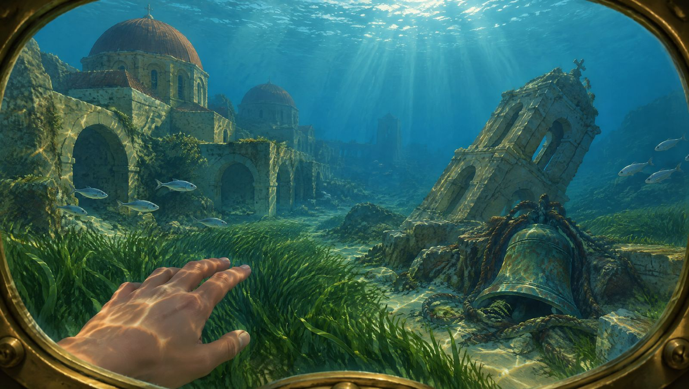
La Terza Colonna comincia su un molo, all'alba dell'11 aprile 1950. Agnese Rusca, nuotatrice del lago di Lugano, sbarca a Calafarina con ventitré lettere: le ha scritte Cola, il più grande sommozzatore dello Stretto di Messina, che lei ha sposato per procura senza averlo mai visto. Nove giorni prima Cola si è tuffato nel gorgo di Cariddi e non è più risalito. Il paese la accoglie con una premura che sembra senso di colpa, e lei vuole sapere soltanto com'è morto l'uomo che le scriveva.
Le Pelòridi, arcipelago immaginario fra le Eolie e lo Stretto, vivono un 1950 vero in tutto tranne che in una cosa: all'alba e al tramonto i miraggi della Fata Morgana diventano solidi, e per pochi minuti si cammina su città scomparse sospese sul mare. Sotto ci sono una città greca e un borgo normanno sommersi, tubi di lava, condotti arabi e tre colonne di basalto che reggono l'isola. Sopra, un vulcano che fuma, una tonnara che prepara la mattanza e un teatro dei pupi che ogni sera racconta la leggenda di Colapesce cambiandola in punti precisi.
La storia si ricostruisce da più parti e in più ordini: un rapporto rubato fra operai mascherati, lastre fotografiche, testimoni in cima all'albero di una feluca, lettere confrontate parola per parola. Presto si capisce che quelle lettere non tornano, e che il paese aveva un motivo molto preciso per farti venire fin qui. Basti dire che la leggenda dell'uomo che regge la Sicilia dal fondo del mare non è soltanto una leggenda.
Si gioca in prima persona, senza armi: si nuota in apnea, si rema e si veleggia, si plana con un'ala di tela, si cammina sui miraggi e si cade in mare quando svaniscono. Le tre strade della build cambiano davvero il modo di giocare: il Fiato ti porta giù e ti fa restare, il Ventu ti fa passare sopra, il Mastru ti fa cambiare il mondo con chiuse, pesi e luce. Ogni grande potere ha un prezzo, e il paese ti chiama con un nome nuovo.
Per i curiosi ci sono una quarta città che si vede ma non si raggiunge, un acrostico nascosto nelle lettere fin dal primo minuto, un cifrario di sessantuno nomi da risolvere con carta e matita e un finale segreto. E, in fondo alla valigia di Agnese, un fazzoletto di merletto fatto da una ragazza di nome Ada.
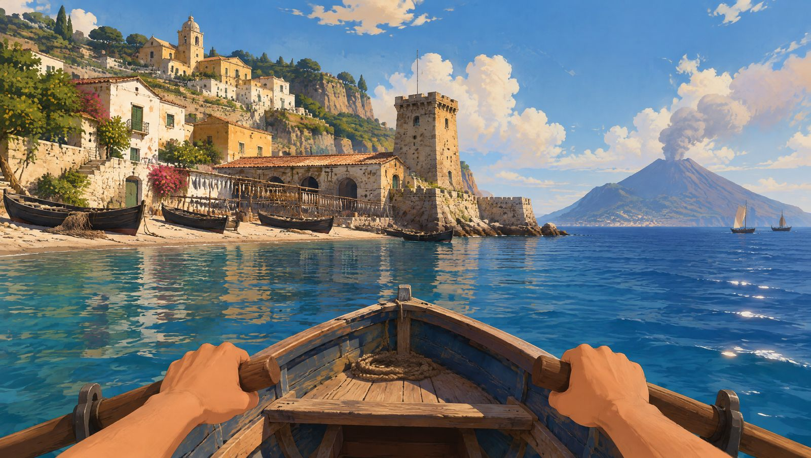
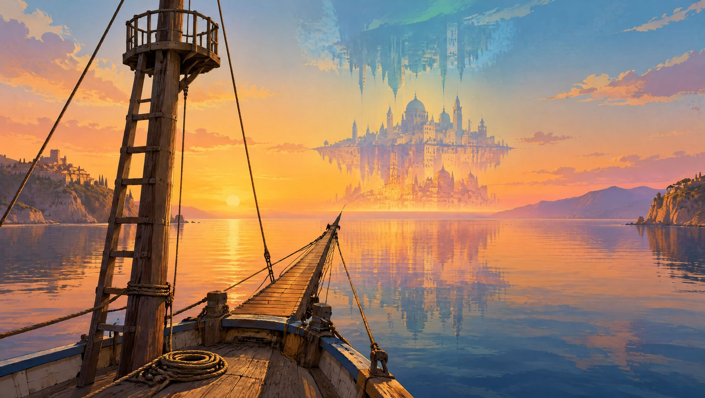
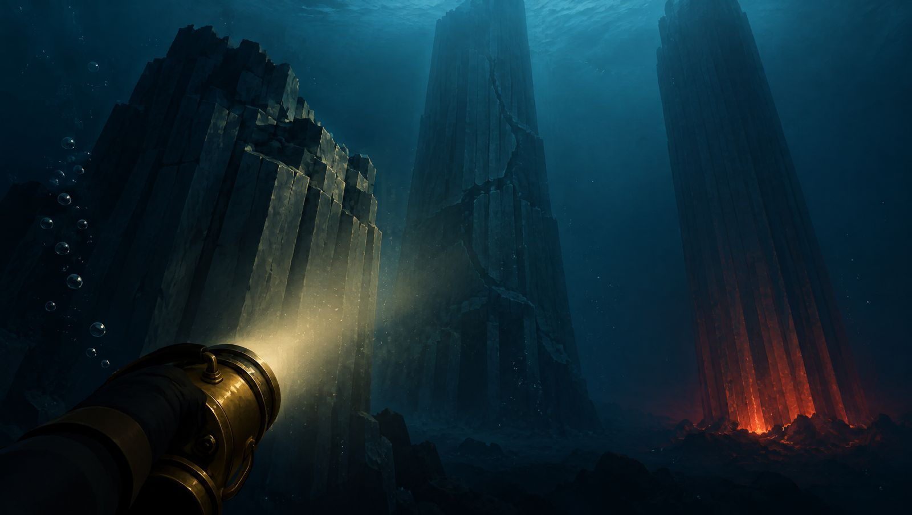
| Criterio | Critica | Produzione | Giocatore e mercato | Media |
|---|---|---|---|---|
| Originalità | 9 | 9 | 9 | 9,0 |
| Mondo | 9 | 8 | 8 | 8,3 |
| Trama | 7 | 8 | 8 | 7,7 |
| Missioni | 8 | 8 | 8 | 8,0 |
| Build | 8 | 7 | 7 | 7,3 |
| Segreti | 8 | 8 | 9 | 8,3 |
| Divertimento | 7 | 7 | 7 | 7,0 |
| Fattibilità | 5 | 4 | 5 | 4,7 |
| Mercato | 7 | 7 | 7 | 7,0 |
| Totale | 7,6 | 7,3 | 7,6 | 7,5 |
È un concept dal mondo e dalla mitologia straordinariamente originali e coerenti: la rilettura di Colapesce, Scilla e Cariddi e della Fata Morgana come una macchina araba del XII secolo, con un'unica regola fisica che lega i miraggi al mistero, è materia da gioco premiato, e il tema (chi regge l'isola senza essere visto) trasforma perfino il divieto dei volti in poetica. Il punto debole è la trama personale. Due colpi di scena su cinque si indovinano dalla frase di lancio e dall'uomo mascherato; il filo d'amore delle lettere (il Cyrano del puparo) viene abbandonato per un marito mai conosciuto; mancano la versione pubblica dell'assenza di Cola e un piano «senza morti» che lo sia davvero; l'atto II è un corridoio. Sono difetti di sceneggiatura, non d'impianto: con le correzioni proposte la trama può salire da 7 a 9 senza toccare nulla di ciò che rende il concept speciale.
È il concept che usa meglio i vincoli sulle persone: il gioco non mostra mai un volto e ne fa il proprio tema, e il mondo a orologio è deterministico e testabile. Proprio per questo però si appoggia senza riserve sull'acqua, la cosa più difficile da fare bene in three.js su GPU integrata, e vi aggiunge una quindicina di sistemi da immersive sim e una matrice di circa 52 strade. Così com'è scritto ha una fattibilità debole. Con un sistema acqua unico validato per primo, Cariddi senza imbuto, miraggi a due modalità, strade ridotte a circa 35, abilità a circa 20 e niente canto vero, diventa ambizioso ma realizzabile senza perdere nulla della sua identità.
È il concept che un giocatore di open world narrativi vorrebbe avere fra le mani. Ha un luogo mai visto, screenshot che vendono da soli, un kit di traversata a tre strati alla Zelda, missioni che cambiano forma ogni volta, build che aprono strade davvero diverse e segreti stratificati fino al livello della comunità. Soddisfa la richiesta dell'utente quasi alla lettera, con in più l'aggancio personale al Ticino e a TRAMA. I rischi stanno nel minuto per minuto: fiato corto con una Compensazione obbligatoria, troppe finestre di tempo e di meteo da aspettare, mare vasto da attraversare con una vela che dipende dal vento, e un divertimento che dipende tutto dalla qualità del nuoto. Con i remi, il meteo deterministico, il fiato come risorsa d'esplorazione e meno spiegazioni dirette diventa un 8 pieno anche nel giocato, non solo sulla carta.
Le Pelòridi, arcipelago immaginario del Tirreno fra Capo Peloro e le Eolie, in una geografia compressa: lo Stretto di Messina, con Scilla e Cariddi, è a cinque minuti di vela dal paese con il vento al traverso, dieci a remi. Aprile-giugno 1950, un 1950 alternativo che si discosta dal nostro per una sola regola: la Fata Morgana dello Stretto, nelle ore di mare calmo e inversione termica, diventa «aria spessa» e ci si può camminare sopra. Lo sanno i pescatori, la studia un osservatorio, la vendono le cartoline («Saluti dalla Morgana, ore 6.40»). Tutto il resto è il 1950 vero: isole senza corrente elettrica, l'emigrazione che svuota le case (a Calafarina una porta su due ha il lucchetto e una lettera da Brooklyn o da Zurigo sul tavolo), la tonnara che cala le reti per quella che sarà forse l'ultima grande stagione, i soldi del dopoguerra che arrivano sotto forma di una trivella, le troupe del cinema che si contendono i vulcani, il ricordo del 28 dicembre 1908, quando Messina cadde e le Pelòridi restarono in piedi. Atmosfera: mezzogiorno bianco che acceca, scirocco giallo che appanna l'orizzonte, cenere del vulcano che scende come neve grigia sui panni stesi, il silenzio sott'acqua rotto solo dal rombo di fondo della montagna. Landmark: lo Strùmmula (la trottola), vulcano attivo di 430 metri, ripido come lo Stromboli, il cui pennacchio sale avvitandosi su sé stesso; si vede da ogni punto del mondo, di notte per il bagliore del cratere, sott'acqua come una luce rossa in fondo ai tubi di lava. Il pennacchio è anche la banderuola del gioco: dice sempre da dove soffia il vento, e il vento decide vela, planata e miraggi. Landmark secondari: il faro bianco di Ìsula Bianca, la torre del malfaraggio della tonnara, gli alberi altissimi delle feluche nello Stretto e la torre di trivellazione della Società, che cresce a ogni atto. Dimensioni: un mondo continuo di circa 7,5 km², di cui 3 km² di terre emerse (Strùmmula 1,4 km², Pelòrida 1 km², Ìsula Bianca 0,4 km², scogli e Scilla 0,2 km²), il resto mare, con fondale esplorabile fino a -60 m nelle zone dense e un abisso finale fino a -120 m, caricato a zone con un panorama di ogni zona sempre in memoria. Struttura: un hub (Calafarina) e cinque zone, più l'abisso sotto l'hub, distribuiti su tre strati sovrapposti: la superficie (isole, paese, tonnara, vulcano), il fondale (città sommerse, praterie di posidonia, tubi di lava, i condotti arabi detti catusi, le Tre Colonne) e la Morgana (città-miraggio che compaiono sul mare a ore fisse e per pochi minuti si possono percorrere). Si passa da uno strato all'altro senza caricamenti: dal miraggio che svanisce si cade in mare, dal mare ci si tuffa sul fondale, dai tubi di lava si risale al cratere, dal cratere si plana sulla Morgana. Il meteo non è casuale: segue un ciclo fisso di sei giorni di gioco, scritto sulla tavola dei venti dell'Osservatorio, così ogni miraggio e ogni vento si possono prevedere e aspettare.
Paese a terrazze di calce bianca e ocra sopra la tonnara: il malfaraggio con la torre di guardia e i magazzini delle ancore, le barche nere della mattanza tirate in secco, il Teatro dell'Opra Napoli con le sue 140 sedie di legno, il santuario della Madonna della Lettera pieno di ex-voto d'argento, il ricovero di San Giuseppe con i suoi undici vecchi, la casa di Cola con il gozzo Stella Maris all'ormeggio. In una casa su tre, dietro la porta, è appeso un cordone fatto con la cima della tonnara: è il segno dei confratelli, e il giocatore impara a leggerlo. Sotto il paese, praterie di posidonia e l'«isola» della tonnara: 1,2 km di reti verticali tenute a galla da migliaia di sugheri, divise in camere fino alla camera della morte. Le reti si calano nell'Atto I, si riempiono di tonni nell'Atto II e si chiudono nella mattanza dell'Atto III: l'hub cambia con la storia.
Cosa introduce. Guardare e ascoltare dal basso. Si imparano l'apnea (50 secondi di base) e la compensazione fino a -25 m, la finestra di Snell (da sott'acqua i vivi sono sagome dentro un cerchio di luce) e il quaderno delle piste. Regola nuova dopo la svolta centrale: di notte il paese è territorio della Cumpagnia, con le cappe color sabbia e le lanterne a olio di pesce sul molo e le barche che pattugliano le reti; le barche del paese smettono di rimorchiarti.
L'isola della pomice e dell'ossidiana, 900 m a ponente del paese: pendii bianchi che scendono in un mare color latte e turchese, cave abbandonate con gli scivoli di legno da cui un tempo la pomice rotolava nelle stive, colate di ossidiana nera lucide come specchi, i bambini della pomice che giocano a «fare la Morgana». Sul capo nord, il vecchio faro borbonico trasformato nell'Osservatorio delle Morgane, con la lente di Fresnel, le lastre fotografiche, le tavole dei miraggi annotate dal 1938 e la tavola dei venti con il ciclo di sei giorni.
Cosa introduce. Planare e leggere il vento. La latina (ala triangolare di tela su un'antenna di bambù) si usa dagli scivoli e dalle creste; la pomice galleggia e diventa boa o pallone per sollevare oggetti dal fondo. Da qui si vede per la prima volta una Morgana e si capisce che ha un orario.
Il vulcano, 430 m: spiaggia di sabbia nera, la Sciara di lapilli dove le pietre rotolano da sole, fumarole gialle di zolfo, il campo della Società Geotermica Peloritana con baracche, generatore, infermeria, radio e la torre del Pozzo Ferdinando, la teleferica dei secchi di zolfo che scende al pontile. Sul versante nord due scenografie cinematografiche abbandonate a metà da troupe rivali. Sotto tutto, una rete di tubi di lava che scende fino al mare e oltre.
Cosa introduce. Calore e gas. Le fumarole sollevano la latina con correnti calde, ma i gas impongono percorsi e tempi (la maschera filtra 90 secondi). Fra gli operai mascherati si passa inosservati se si porta la maschera e si tiene il passo della squadra: furtività senza armi, dove essere scoperti significa essere scortati fuori, non morire.
La città greca fondata dai Cnidi e sprofondata in una notte del 396 a.C., a sud dello Strùmmula, fra -8 e -40 m: l'agorà con i portici crollati, il teatro scavato nel tufo, il tempio di Efesto con le colonne cadute a raggiera, un campo di anfore capovolte che trattengono ancora aria, la tomba dipinta del Tuffatore. All'alba, nei giorni di calma del ciclo, la sua Morgana: la stessa città intatta, bianca e dipinta, sospesa a otto metri sul mare e percorribile per otto minuti.
Cosa introduce. La città doppia. Ciò che si legge nel miraggio (dove stava una porta, un'iscrizione completa, la mano di una statua) serve nella rovina, e viceversa. Il miraggio ha un orario e dieci secondi prima di svanire si sfrangia: chi è sopra cade in mare, mai nel vuoto.
Il borgo normanno-arabo inghiottito dal terremoto del 4 febbraio 1169, a ponente di Pelòrida, fra -15 e -50 m: cupole rosse come quelle di San Giovanni degli Eremiti che trattengono ancora bolle d'aria, il campanile coricato sul fondo con la campana impigliata, il castello degli Altavilla, la bottega del mastro d'acqua Yusuf al-Saqqà' con i suoi disegni incisi su lastre di ardesia, e le prime bocche dei catusi, i condotti di terracotta e pietra che corrono sotto il mare. Al tramonto dei giorni di scirocco, la sua Morgana normanna, con le cupole che brillano come braci; nella rovina, le canalette dell'acqua sono ancora leggibili sotto la lampara.
Cosa introduce. L'acqua si governa. Chiuse, saracinesche e livelli cambiano la forma degli spazi; le cupole sono sacche d'aria dove si respira; la corrente si devia invece di subirla.
Il confine orientale del mondo: lo scoglio di Scilla con le grotte che abbaiano quando entra il vento, il gorgo di Cariddi che gira in superficie a ogni cambio di marea, le feluche dei pescatori di pesce spada con l'albero di trenta metri e la passerella di quaranta, il faro di Punta Peloro, i relitti dell'evacuazione dell'agosto 1943 (motozattere tedesche, un traghetto ferroviario rovesciato con i vagoni ancora sui binari) e qualche mina ancora ancorata alla sua catena.
Cosa introduce. Il tempo come meccanismo. La rema, la corrente di marea dello Stretto, cambia verso ogni sei ore di gioco e trasporta a 3 nodi: divide lo Stretto in due metà, e a ogni cambio si apre l'altra. Il suono diventa un verbo, perché le grotte di Scilla si suonano come le canne di un organo.
La caldera sommersa sotto Calafarina, fra -60 e -120 m: tre pilastri di basalto colonnare larghi come chiese che salgono dal buio. Il primo è spezzato sotto Thèrmessa, il secondo crepato sotto Altavilla, il terzo è intero ma alla base arde di un rosso cupo. Nella parte alta, fra -60 e -75 m, la Cammara dei Nomi, le stanze asciutte dove per 257 anni hanno vissuto i Pisci, raggiungibile nell'Atto II; più in basso la Rota di Yusuf, una ruota di marea di bronzo e legno d'ulivo alta dodici metri, ferma dal 1693, e la base ardente, che si raggiungono solo nell'Atto III.
Cosa introduce. Nessun verbo nuovo: tutti i verbi insieme, e il fuoco come regola. Più ci si avvicina alla base, più l'acqua scalda e più l'apnea si accorcia; la Morgana di Calafarina, che dalla svolta centrale compare sopra il paese, si vede da qui sotto come un soffitto di luce.
Realismo stilizzato mediterraneo. Palette ristretta: bianco calce, ocra, nero lavico, blu cobalto del largo, verde posidonia, rosso delle cupole e del fuoco; il giallo zolfo è il colore della Società e compare solo dove arriva lei (cartelli, bidoni, fumarole nuove, la posidonia che ingiallisce), così la sua avanzata si legge a colpo d'occhio. Luce: il mezzogiorno bianco che abbaglia (esposizione alta, bloom, ombre corte e dure), le albe e i tramonti dorati delle Morgane, notti di luna e di lampare. Meteo a calendario, sei giorni che si ripetono e si leggono sulla tavola dei venti: calma all'alba (Morgana di Thèrmessa), scirocco (cielo giallo, foschia, Morgana di Altavilla al tramonto), maestrale (mare spazzato, visibilità perfetta, onde), tramontana (freddo, acqua limpidissima, la quarta città all'orizzonte), libeccio, e la cinnirata (pioggia di cenere che sporca il mare e fa spuntare i fazzoletti sul viso di tutti). Materiali scansionati CC0 coerenti tra loro: pietra lavica, tufo, pomice, terracotta, legno bagnato, rete, sughero, gomma delle maschere, ottone, l'argento ossidato degli ex-voto, la latta lucida delle armature dei pupi. Mare: onde di Gerstner, trasparenza con assorbimento per profondità, riflesso del cielo e non dello specchio. Sott'acqua: nebbia del colore dell'acqua che chiude la vista a 30-40 m, caustiche, raggi, particelle sospese; con la profondità il rosso sparisce davvero (a -10 m le cupole di Altavilla sono marroni) e torna solo sotto la lampara. Morgana: da lontano è un'immagine stirata in verticale, con una copia capovolta sopra quella dritta, il tremolio del calore e i colori che sbiadiscono verso il ciano; quando si apre la finestra e ci si avvicina, l'aria «scricchiola» per due secondi e la città diventa solida, appena tremolante. Le persone: il gioco parla di chi regge l'isola senza essere visto, e nessun volto vivo si vede mai, per scelta di regia. Da sott'acqua i vivi sono sagome nel cerchio di Snell; la Cumpagnia porta la cappa di tela grezza color sabbia dei pescatori in penitenza, con il cappuccio floscio che ricade sulle spalle, una visiera di rete da pesca davanti agli occhi e la cima della tonnara come cordone (il priore in nero, con il cordone rosso): sono pescatori che portano addosso la loro rete, non una setta; gli operai della Società hanno la maschera antigas con le lenti tonde; le donne portano il fazzoletto contro la cenere; nella Morgana le persone sono figure lontane, stirate, di quattro metri; ogni ricordo e ogni versione dei fatti va in scena con i pupi, che hanno volti di legno dipinto. È semi-realistico e fattibile perché tutto ciò che si vede da vicino è natura, acqua, pietra, rovina e oggetto, cioè quello che three.js fa bene con materiali scansionati, nebbia e luce fisica; i volti, il lip-sync e le folle non servono mai.
Agnese Rusca, 26 anni, di Morcote sul lago di Lugano. Lavora al noleggio barche del lido e d'inverno ripara reti per i pescatori del Ceresio. Nell'agosto 1949 ha vinto la traversata a nuoto Morcote-Brusino e il Corriere del Ticino l'ha chiamata «la ragazza pesce di Morcote». Poco dopo è arrivata la prima di ventitré lettere da un sommozzatore siciliano, Nicola Ferrante detto Cola, che citava l'Ariosto e descriveva il mare come nessuno le aveva mai descritto niente: per la prima volta qualcuno l'aveva vista. A febbraio 1950 ha firmato una procura al consolato d'Italia di Lugano e il matrimonio è stato celebrato a Calafarina senza di lei. Non ha mai nuotato in mare, non ha mai visto un vulcano, non ha nessuno che la aspetti a casa. È forte in acqua dolce, quindi in mare galleggia più del previsto e il sale le brucia gli occhi; è un'estranea, quindi tutto ciò che il paese le dice è vero solo a metà. Non è una prescelta: è stata scelta a tavolino da un comitato di paese, ed è proprio questo che scoprirà. Che cosa vuole cambia con la storia: nell'Atto I vuole sapere com'è morto l'uomo che le scriveva; dopo la missione 5 vuole sapere chi l'ha vista davvero; dopo la svolta vuole una cosa sola, scegliere lei dove stare, invece di essere scelta. In prima persona si vedono le sue mani, il bordo ovale della maschera quando si tuffa, il quaderno su cui annota. Parla poco e a voce: la sua voce è quella scritta del quaderno, in un italiano preciso da ticinese, con le parole siciliane che impara e sottolinea.
Il marito per procura, il miglior sommozzatore della tonnara; ufficialmente sparito nel gorgo di Cariddi la Domenica delle Palme, 2 aprile 1950. In realtà è il caposquadra mascherato della Società, curvo e silenzioso, che dà ad Agnese consigli asciutti, le insegna il ramo Mastru e, solo nei tubi di lava, la tira fuori dall'acqua quando annega.
Come lo vedi. Sempre con la maschera antigas di gomma nera e gli occhiali scuri sopra le lenti, perché dopo sei anni al buio non sopporta il sole; la sua voce passa dal filtro ed è roca e metallica. Al campo cammina curvo come un vecchio, con le spalle chiuse dei tubi, e sembra di statura media: si raddrizza solo sottoterra, e allora è alto quasi due metri. Sott'acqua è un'ombra con una lampada. Il suo volto non si vede mai: al massimo un riflesso deformato nel vetro della maschera di Agnese, tra le bolle.
Dall'agosto 1943 al maggio 1949 è stato il Pisci, l'uomo che vive sotto l'isola e manovra le chiuse. Non ha mai scritto una lettera ad Agnese e fino all'aprile 1950 non sapeva di essere sposato: l'ha saputo al campo, quando tutti parlavano della «vedova di Cola». È risalito da un tubo di lava aperto dalla trivella e ora piega di nascosto il Pozzo Ferdinando verso la base della Terza Colonna: vuole che l'isola si abbassi nel mare durante la mattanza, quando quasi tutto il paese è sulle barche, perché nessuno debba mai più scendere. Sa che a terra restano gli undici vecchi del ricovero, e ha deciso di non pensarci.
Capo della tonnara, decide la calata delle reti e il giorno della mattanza; è anche il priore della Cumpagnia di Cola, la confraternita di circa trenta famiglie che da sette secoli custodisce il segreto delle colonne.
Come lo vedi. In piedi a prua della muciara, la barca del rais, sempre a cinquanta metri, con il cappello e la mantellina; parla al megafono di latta, con cui dirige la tonnara. In confraternita porta la cappa nera con il cordone rosso del priore. Da sott'acqua è l'unica sagoma ferma in mezzo alle barche che si muovono.
Ha costruito la versione pubblica dell'assenza di Cola, ha ordinato le lettere ad Agnese e la finta scomparsa del 2 aprile, con la storia dell'àncora maestra perduta. Nel 1947 ha venduto alla Società le pendici dello Strùmmula e incassa una percentuale su ogni metro trivellato: sa che la trivella scalda la colonna e intanto pretende che qualcuno scenda a raffreddarla. Se Agnese rifiuta, il prossimo Pisci sarà suo figlio Tano, ed è per questo che ha più bisogno di lei di chiunque altro.
Puparo dell'Opra Napoli e scrivano pubblico del paese: scrive le lettere di chi non sa scrivere e porta in scena la Storia di Colapesce, il ciclo di 14 puntate che la sua famiglia recita dal 1820, più una quindicesima proibita.
Come lo vedi. Il puparo, per tradizione, non si vede: sta sopra il palco e dà la voce a tutti i pupi, quindi parla attraverso Orlando, Rinaldo, Gano e il pupo di Colapesce. Nella sua bottega si vedono solo le sue mani che dipingono armature e scudi, e lui risponde dando le spalle; dopo la missione 5 smette di voltarsi solo se Agnese non l'ha smascherato davanti al paese.
Ha scritto lui, per ordine del rais, tutte le ventitré lettere firmate Cola, e leggendo le risposte di Agnese se n'è innamorato: è un Cyrano di quarantun anni che non ha mai lasciato l'isola. In tre lettere ha nascosto un acrostico: NON VENIRE. Il ciclo dei pupi è l'archivio cifrato della Cumpagnia (suo nonno ha scritto la puntata del Miracolo di Messina, 1908), e lui ha deciso di far recitare la verità. Prima della mattanza lascia nel petto del pupo di Colapesce la ventiquattresima lettera, la prima firmata con il suo nome.
La più anziana delle donne che rammendano le reti; a settant'anni si tuffa ancora a raccogliere ricci. Insegna ad Agnese l'apnea e la compensazione nella camera di levante della tonnara ed è la sua prima mentore (ramo Fiato).
Come lo vedi. Seduta sul molo con lo scialle nero tirato sulla testa e il viso rivolto alle reti; le sue mani rammendano mentre parla. Sott'acqua è una piccola sagoma scura e velocissima, con la retina dei ricci legata alla vita.
È stata lei, leggendo il Corriere del Ticino portato da un emigrato, a proporre al rais «la ragazza pesce», e al matrimonio a Calafarina ha fatto da procuratrice della sposa. Suo figlio Vanni è stato il Pisci dal 1931 al 1943 ed è morto sotto l'isola: lei ci crede, perché se il sacrificio non è santo suo figlio è morto per niente. Per dodici anni ha legato il cesto del cibo con il nodo che Vanni le aveva chiesto; è lei che ripesca Agnese quando annega nelle acque della tonnara e la lega a un sughero con quello stesso nodo, ed è lei che le lascia i biglietti anonimi a stampatello che la spingono verso le sacche d'aria e le tecniche del Fiato: vuole una candidata che sopravviva. Cambia parte solo se Agnese scopre la lettera di Vanni nel Bagno della Madonna.
Direttore della Società Geotermica Peloritana, piemontese, ha lavorato a Larderello. Vuole costruire la prima centrale geotermica del Sud e portare la luce elettrica alle Pelòridi entro il 1951.
Come lo vedi. Attraverso Radio Società, la stazione del campo che ogni sera trasmette musica, avvisi e i suoi comunicati, e il suo nome sulle circolari battute a macchina. Da vicino è un completo di lino bianco in cima alla torre di trivellazione, controluce, sempre con la maschera antigas appesa al collo e una sigaretta che non accende mai per via del gas.
Sa dal novembre 1949 che i miraggi aumentano dove la trivella scalda il mare: la relazione dell'Osservatorio è chiusa nella sua cassaforte. Non sa che il suo caposquadra migliore gli devia il pozzo di notte. Non è un cattivo: è convinto che il progresso giustifichi un rischio che non sa misurare, e se gli si portano le prove giuste è l'unico che può cambiare la direzione del pozzo.
Fisica dell'Università di Messina, dirige l'Osservatorio delle Morgane nel faro di Ìsula Bianca; misura temperature, orari e altezze dei miraggi e compila la tavola dei venti. È la mentore del ramo Ventu e la fonte scientifica del gioco.
Come lo vedi. Una silhouette dietro la grande lente di Fresnel del faro, che la ingrandisce e la spezza in anelli concentrici; comunica con Agnese dal tubo acustico del faro, con l'eliografo (lampi di specchio che il quaderno traduce) e con biglietti attaccati agli strumenti.
Ha dimostrato che le Morgane compaiono sopra i punti in cui il fuoco tocca la base di una colonna, e ha consegnato i dati a Ferraris in cambio del finanziamento dell'Osservatorio. Il 2 aprile ha fotografato la finta scomparsa di Cola: sulla lastra 7 il tuffatore entra nella bocca della grotta di Scilla, a quattrocento metri dal punto in cui doveva essere annegato. Non l'ha detto a nessuno, perché la lastra è la prova che lei c'era e non ha chiesto niente.
Figlio ventiduenne del rais, tonnaroto, nuotatore mediocre e bravo meccanico; sembra solo il ragazzo che porta ad Agnese il pesce e le notizie, ed è sempre in mare vicino a lei: per tutto l'Atto I il quaderno sospetta che sia lui a ripescarla.
Come lo vedi. A distanza sulle barche, con la maschera da sub alzata sulla fronte e il fazzoletto della cenere sulla bocca; da vicino solo la voce attraverso la porta socchiusa o dietro le reti stese ad asciugare.
Il 2 aprile era lui, con la maschera di Cola, il sub che si è tuffato a Cariddi davanti ai testimoni ed è entrato a nuoto nella grotta di Scilla; a marzo era lui, all'alba, a firmare il registro del matrimonio al posto di Cola. Sa che se Agnese rifiuta di scendere il prossimo Pisci sarà lui, e che non durerebbe un anno: eppure è lui che le ha infilato sotto la porta, la prima sera, un foglietto con scritto TORNA A CASA.
Mastro d'acqua arabo-siciliano al servizio dei re normanni nel XII secolo, progettista dei catusi e della Rota. Morto da otto secoli, è presente attraverso disegni, iscrizioni e congegni.
Come lo vedi. Non ha volto per definizione: si rappresenta in un mosaico della sua bottega come una mano che regge una giara, alla maniera dell'arte islamica che non ritrae figure. Parla attraverso le sue lastre di ardesia incise, i versi di Ibn Hamdis che ha fatto scolpire sulle bocche dei catusi e i meccanismi che funzionano ancora.
È il primo uomo che ha vissuto sotto l'isola. Gli isolani lo chiamavano Abu Qulla, «quello delle giare», per i condotti di terracotta: il nome, storpiato, è diventato Cola. Il primo Colapesce era un ingegnere di Palermo.
11 aprile 1950, martedì dopo Pasqua. Agnese Rusca sbarca a Calafarina dal piroscafo Peloro con una valigia, ventitré lettere legate con lo spago e un certificato di matrimonio per procura. Il marito, Cola Ferrante, il più grande sommozzatore dello Stretto, la Domenica delle Palme si è tuffato nel gorgo di Cariddi per liberare l'àncora maestra della tonnara e non è risalito: sono risalite solo lenticchie, come nella leggenda. Il paese la accoglie come la vedova di un eroe e si comporta come chi ha un debito: le dà la casa di Cola, il suo gozzo, la sua maschera, e le donne della tonnara le insegnano l'apnea perché «il mare si è preso lui, a te no». Agnese, e con lei il giocatore, legge quella premura come senso di colpa: il paese ha mandato Cola a morire per le reti. Vuole sapere una cosa sola: com'è morto l'uomo che le scriveva. La domanda la porterà sotto l'isola. Il mondo non ha conto alla rovescia: tre piani (la trivella della Società, la mattanza della Cumpagnia, il piano segreto di Cola) avanzano di un passo a ogni missione principale completata, mai con il tempo reale. L'isola aspetta Agnese, ma non resta ferma.
Calafarina e le tre piste (missioni 1-5, circa 4 ore). Il funerale senza corpo, con la bara piena di lenticchie portata a spalla mentre Agnese lo guarda da sott'acqua, attraverso la finestra di Snell, durante la prima lezione di Za' Pippina, apre tre piste parallele che il quaderno annota come domande, ciascuna legata a un luogo. 1) «Cosa ha visto la Società?»: la lancia della Società era sul posto, e il rapporto d'incidente sta nell'ufficio del campo sullo Strùmmula. 2) «Cosa ha fotografato l'Osservatorio?»: la dott.ssa Spadafora riprende lo Stretto ogni alba, e le sue lastre del 2 aprile sono nel faro di Ìsula Bianca. 3) «Dove si è tuffato?»: l'equipaggio della feluca Santa Rita ha visto il tuffo dall'albero di trenta metri, e nello Stretto c'è una scia da seguire. Una quarta pista corre sotto le altre: dopo ogni missione l'Opra Napoli recita una nuova puntata della Storia di Colapesce, e chi la guarda nota che il puparo cambia la leggenda in punti precisi. Le piste si giocano in qualsiasi ordine e ciascuna aggiunge un pezzo: nel rapporto il tuffatore è «di statura media» con il cinghiolo blu della tonnara, mentre Cola era altissimo; su una lastra un uomo con la maschera entra a nuoto nella bocca della grotta di Scilla; nella grotta ci sono la maschera di Cola e un sacchetto di lenticchie di Ustica con il timbro della dispensa della tonnara, e nessuno dei marinai della Santa Rita ha visto il gavitello di un'àncora. La scomparsa era una messinscena. Il giocatore attento nota intanto due cose che il quaderno annota senza capirle: chi dice «l'ho visto la settimana scorsa, a Ganzirri» ha sempre un cordone di cima appeso dietro la porta, e l'àncora maestra «perduta» è nel magazzino del malfaraggio, con il numero 1 ridipinto di fresco. Chi l'ha organizzata, e perché? Il quaderno ora ha una domanda più grande: chi ha scritto le lettere? La missione 5 confronta quattro grafie (le lettere, i registri della tonnara, le suppliche dello scrivano, la firma di Cola sul registro dei matrimoni) e arriva al puparo, che risponde solo attraverso i pupi: Cola non ha mai scritto, perché è «sutta» dal 1943. Agnese capisce «morto», e il paese le ha mentito per sette anni. Intanto i piani avanzano. La Società passa al secondo stadio (nuove fumarole, la teleferica raddoppia). La tonnara cala le reti e in mezzo al mare compare il labirinto di sugheri. Quando Agnese annega nelle acque della tonnara, si risveglia legata a un sughero con un nodo a doppia gassa che non conosce; il ragazzo che le sta sempre intorno in barca è Tano, e il quaderno lo accusa per iscritto, finché la secondaria del figlio del rais o la missione 4 mostrano che Tano fa un nodo diverso, la gassa d'amante dei marinai, e l'accusa viene cancellata con una riga.
La camera della morte (missione 6). Inseguendo l'ultima domanda dell'atto («se Cola è sutta, dove?»), Agnese si infila di notte nel labirinto della tonnara fino alla camera della morte. Sul fondo trova una grata di bronzo nella roccia e, appeso a una cima, un cesto di viveri marcito da mesi, legato con il nodo a doppia gassa dei suoi salvataggi. La svolta si gioca, non si ascolta: dentro il cesto e sulla grata ci sono un cucchiaio con 61 tacche, sette anni di date graffiate, un santino di Colapesce con la scritta «Scinni unu, acchiana unu», e Agnese ricostruisce da sola, nel quaderno, che sotto l'isola vive qualcuno, che ci resta per sette anni e che risale solo quando un altro scende. Poi le reti si serrano sopra di lei come sui tonni: la Cumpagnia la prende. Nel malfaraggio, davanti a trenta cappe color sabbia e alla luce di una sola lanterna, il rais conferma con tre frasi: «Sutta c'è sempre statu unu. Cola nun acchianò cchiù. Ti chiamammu pi chistu». Lei è la candidata, e scenderà la notte della mattanza. Non la imprigionano: le mostrano le leve. Se lei non scende, scende Tano, che non durerebbe un anno. Le prendono il passaporto «per custodia», il Peloro smette di attraccare, e Za' Pippina, la donna che le ha insegnato a respirare, abbassa lo scialle e dice soltanto: «Ora sai pirchì». La fuga dal malfaraggio cambia secondo la build (dalla cisterna sotto il pavimento, dalla torre di guardia con la latina, dalla chiusa dello scalo di alaggio), e in tasca Agnese si ritrova un pupo di Colapesce con una chiave di bronzo nel petto: la chiave d'acqua, infilata lì dal puparo. Il mondo cambia in sei modi. Primo: di notte il paese è della Cumpagnia, con lanterne e cappe sul molo, barche che pattugliano le reti e metà delle porte che si chiudono. Secondo: il traghetto non arriva più, le barche del paese non ti rimorchiano più e il bordo del mondo è chiuso. Terzo: la chiave d'acqua apre le saracinesche dei catusi ad Altavilla e nei tubi, cioè un nuovo strato di passaggi. Quarto: la Società passa al terzo stadio, l'acqua calda arriva nelle praterie di Calafarina, una macchia di posidonia ingiallisce e si allarga e i pesci se ne vanno. Quinto: all'alba successiva, accanto al paese vero, compare per la prima volta la Morgana di Calafarina, il paese stesso stirato e tremolante sul mare come se fosse già sprofondato, e si può camminare nelle sue tre strade principali e nella piazza. Il paese reagisce: la processione della Madonna della Lettera scende al molo all'alba, tre famiglie partono per Messina sulle feluche, Radio Società parla di «fenomeno ottico dovuto al bel tempo». Sesto: da ora, quando Agnese annega nei tubi, a volte si sveglia nell'infermeria della Società.
Il fuoco e l'acqua (missioni 7-11, circa 5 ore). L'atto si apre in due coppie da giocare in qualsiasi ordine, e il giocatore ha sempre almeno due piste aperte. Prima coppia: perché compare la Morgana di Calafarina, e chi raffreddava le colonne? Thèrmessa (missione 7) dà la regola: nel miraggio dell'agorà una stele intera dice che la città «cammina sul mare» da quando il fuoco toccò la sua colonna, e il quaderno capisce che il paese sta prendendo la stessa strada. Altavilla (missione 8) dà la macchina: la bottega di Yusuf, i catusi, le tre chiuse, la Rota, il terremoto del 1169. Ciascuna dà metà della prova (il disegno dei condotti inciso dietro la stele, il registro delle temperature delle chiuse), e insieme puntano allo stesso luogo: l'acqua calda che risale nei catusi arriva dal Pozzo Ferdinando. Nei tubi sotto lo Strùmmula (missione 9) Agnese insegue il caposquadra Nicòsia, che sottoterra si raddrizza e diventa altissimo, e trova la sua tana, con gli stessi disegni della bottega di Yusuf, 2.104 tacche sul muro e, graffiato a carbone, il calcolo del suo piano: quindici minuti di discesa, otto metri d'acqua sopra il paese, un elenco di barche e di famiglie, e nessuna riga per il ricovero di San Giuseppe. Nicòsia è Cola. Conferma il piano con poche parole, dietro la maschera, e aggiunge una cosa che Agnese non si aspetta: lui non l'ha mai tirata fuori dal mare, solo dai tubi. Il nodo a doppia gassa è il nodo di Vanni, e in paese lo fa una sola persona: Za' Pippina. Seconda coppia, di nuovo in qualsiasi ordine: da dove respira la macchina, e cosa c'è sotto? La Bocca di Cariddi (missione 10) porta alla presa dei catusi; la Cammara dei Nomi (missione 11) si raggiunge dal tubo di Cola oppure dal pozzo della camera della morte, sfidando di notte le pattuglie della Cumpagnia, e chi ci arriva prima di Cariddi legge la verità in ordine inverso. Laggiù ci sono le stanze asciutte dei Pisci, la Rota spezzata e l'ultima verità: il sacrificio serve solo dal 1693, da quando l'asse si ruppe e nessuno seppe ripararlo, perché il manuale di Yusuf fu bruciato per paura dell'Inquisizione. I Pisci erano quasi tutti forestieri, e il «miracolo» del 1908 che ha tenuto unita la Cumpagnia per quarant'anni porta il nome di un trovatello di Messina. Intanto i piani avanzano. La Società passa al quarto stadio e Radio Società annuncia l'inaugurazione del pozzo con il sottosegretario per la mattina stessa della mattanza. Cola sistema cariche di gelatina alla presa di Cariddi per fermare l'acqua fredda. Nella tonnara i tonni entrano nelle camere, e la Cumpagnia prepara Tano come ripiego. Le missioni secondarie decidono chi starà dalla parte di chi.
Chi regge l'isola (missioni 12-13, circa 2 ore). Tutto converge su Calafarina in una sola mattina. La sera prima, nel petto del pupo di Colapesce, Agnese trova la ventiquattresima lettera, firmata per la prima volta Rosariu Napoli: le scrive le cose che le sue risposte gli avevano insegnato, e cita tante sue frasi quante sono le cose che lei ha fatto per lui dopo la missione 5 (non smascherarlo in piazza, aiutarlo con i pupi, rispondergli). Poi Agnese e il puparo mettono in scena nella piazza la quindicesima puntata, quella proibita, con i pupi che recitano ciò che lei ha scoperto (lei sceglie quali verità mostrare): per i due terzi del paese che non sapevano, è la prima volta che sentono parlare del Pisci, e la piazza si spacca davvero. La reazione dipende da quante persone ha aiutato e da come. Poi la mattanza. Il rais chiama la cialoma, le barche nere chiudono il quadrato, la Società inaugura il pozzo con la banda, e Agnese scende nella camera della morte in mezzo ai tonni impazziti, apre la grata e scende per il pozzo fino alla Terza Colonna. Laggiù la aspetta Cola, accanto alla Rota ferma. Il finale non è un bivio morale premiato con punti: è la risposta concreta alla domanda del gioco, chi regge l'isola, e ogni risposta richiede di aver capito e preparato qualcosa nel mondo. Si gioca con i verbi della build: chiudere chiuse a tempo di marea, guidare l'acqua fredda, reggere il fiato davanti al fuoco, portare a bordo chi è rimasto a terra. Ogni finale si chiude con un momento fra Agnese e Sariddu, l'uomo che le ha scritto davvero, e con Cola che non è un marito ma un estraneo a cui il paese l'ha legata, e che lei può sciogliere.
1) Intorno al 1400 a.C. le colonne di basalto che reggono la volta della caldera sommersa sotto le Pelòridi sono quattro. Un villaggio di capanne ovali dell'età del bronzo sorge sulla quarta isola; il fuoco consuma la base della quarta colonna e il villaggio scende nel mare. Nessuno lo ricorda: resta solo il suo miraggio, lontanissimo, nelle mattine di tramontana. 2) 580 a.C.: coloni greci di Cnido fondano Thèrmessa sull'isola che poggia sulla Prima Colonna. Sentono il calore salire dal fondo e lo credono la fucina di Efesto. 3) 396 a.C.: il fuoco della caldera consuma la base della Prima Colonna e Thèrmessa si abbassa nel mare in una notte, piano, «come una nave che imbarca acqua» senza onda: i superstiti si rifugiano su Pelòrida e annotano su una stele che da allora, all'alba, la città «cammina sul mare». È la prima Morgana. La regola fisica del mondo è questa: un miraggio compare sopra i luoghi in cui il fuoco tocca o ha toccato la base di una colonna, e mostra ciò che stava sopra; se il fuoco si spegne, il miraggio si spegne. 4) 1061-1091: conquista normanna. Su un promontorio di Pelòrida sorge Altavilla, costruita da maestranze arabe sopra la Seconda Colonna. 5) 1150-1162: Yusuf al-Saqqà', mastro d'acqua palermitano al servizio di re Ruggero II e poi di Guglielmo I, studia le rovine di Thèrmessa e capisce che il fuoco si può raffreddare. Scava i catusi, condotti di terracotta e pietra che portano l'acqua fredda dello Stretto alle basi della Seconda e della Terza Colonna. La presa d'acqua è Cariddi: il gorgo è il respiro della macchina. Gli sfiati di pressione sono le grotte di Scilla, e il loro abbaiare è aria che esce. Tre chiuse regolano il flusso, e le muove la Rota, una grande ruota mossa dalla rema, la marea dello Stretto. 6) 4 febbraio 1169: il terremoto di Catania incrina la Seconda Colonna prima che i catusi la raggiungano del tutto, e Altavilla sprofonda con le sue cupole piene d'aria. Yusuf salva la Terza, quella sotto il paese, e per i primi mesi resta sotto a regolare la Rota a mano: è il primo uomo sotto l'isola. Lo chiamano Abu Qulla, e il nome diventa Cola. 7) Verso il 1230 Federico II, a Messina, sente la storia dell'uomo sotto l'isola; un sommozzatore di Pelòrida si tuffa per la sua coppa d'oro, e la leggenda prende la forma che conosciamo: le tre colonne, una consumata dal fuoco, le lenticchie che risalgono se il tuffatore non torna. La coppa del re è ancora su una cengia della Terza Colonna, a -110 m. 8) 1240: i tonnaroti di Pelòrida fondano la Cumpagnia di Cola per custodire il sistema. Per quattro secoli basta che due confratelli scendano ogni primavera a ingrassare la Rota: sotto l'isola non vive nessuno. 9) 11 gennaio 1693: il terremoto del Val di Noto spezza l'asse della Rota. Nessuno sa ripararla, e da quel giorno le chiuse vanno girate a mano a ogni cambio di rema. Nasce il Pisci: un uomo che vive nella Cammara, sotto la Terza Colonna, e risale solo quando un successore scende al suo posto. La regola è «Scinni unu, acchiana unu», con turni di sette anni. Il cibo scende da un pozzo nascosto sul fondo della camera della morte della tonnara, in un cesto calato con una cima, e il cambio avviene durante la mattanza, quando sangue, grida e reti coprono tutto. 10) 1721: per paura del Sant'Uffizio di Palermo, la Cumpagnia brucia il manuale arabo di Yusuf, e con esso il modo di riparare la Rota. Una copia, che Yusuf aveva murato in una camera dietro la Terza Colonna, sopravvive senza che nessuno lo sappia. 11) 1693-1943: 61 Pisci, quasi tutti forestieri: un maltese, un pescatore di spugne di Kalymnos, trovatelli della ruota degli esposti di Messina, debitori, uno svizzero di Poschiavo. L'isola è sempre stata retta da chi non considerava suo. Dal 1820 la famiglia di pupari Napoli conserva la storia vera, cifrata, nel ciclo della Storia di Colapesce. Solo le famiglie della Cumpagnia (oggi una trentina, un terzo del paese) conoscono il Pisci; gli altri due terzi credono alla leggenda e basta. 12) 1888: il Pisci Saverio, detto u Maltisi, risale dai catusi durante una tempesta per salvare l'equipaggio della goletta Concetta. I marinai fanno dipingere un ex-voto con un uomo-pesce; la Cumpagnia, perché ha infranto la regola, gratta via il suo nome dalla Cammara. 13) 28 dicembre 1908, 5.20 del mattino: il terremoto di Messina. Il Pisci di allora, Gaspare Ruta, trovatello della ruota di Messina, tiene le chiuse a mano per tutta la scossa e per le ore del maremoto; Messina, la sua città, cade, e Calafarina resta in piedi. È il «miracolo» che cementa la fede della Cumpagnia per quarant'anni: il nome di Gaspare è l'unico inciso in oro nella Cammara, e il nonno del puparo ne fa una puntata. 14) 1931-1943: è Pisci Vanni Russo, figlio di Za' Pippina, che ogni settimana gli cala il cesto legato con il nodo che lui le ha chiesto, un nodo a doppia gassa che nessun altro in paese usa. 15) 16 agosto 1943, evacuazione dell'Asse attraverso lo Stretto: una bomba esplode vicino alla presa di Cariddi e l'onda d'urto uccide Vanni nei catusi. Nicola Ferrante, vent'anni, il miglior sommozzatore della tonnara, renitente e ricercato nei rastrellamenti, accetta di scendere «finché finisce la guerra». Il rais gli promette un successore per il 1945. Versione pubblica: Cola è un renitente fuggito in Calabria. 16) 1945-1949: il successore non arriva. L'emigrazione svuota il paese, nessuno vuole scendere e il rais rimanda. Versione pubblica dal 1946: Cola è emigrato a Caracas e manda soldi (le rimesse le paga la Cumpagnia). Cola, sotto, incide una tacca al giorno e disegna sui muri, perché sa scrivere appena; trova le lastre di Yusuf e capisce la Rota meglio di chiunque in due secoli e mezzo. Za' Pippina continua a calargli il cesto con il nodo di Vanni. 17) 1947: il rais vende le pendici dello Strùmmula alla Società Geotermica Peloritana. Nel 1948 l'ing. Ferraris comincia a trivellare il Pozzo Ferdinando, che sposta acqua calda nei tubi di lava e nei catusi: la base della Terza Colonna si scalda e i miraggi si moltiplicano. La dott.ssa Spadafora lo misura; Ferraris chiude la relazione in cassaforte. 18) 20 maggio 1949, dopo 2.104 tacche: la trivella apre un tubo di lava e Cola risale da lì fino al campo della Società. Non sopporta la luce; si mette la maschera antigas come tutti gli operai, si fa assumere come Nicòsia e diventa caposquadra perché conosce il sottosuolo meglio di qualsiasi geologo. Decide che nessuno scenderà più: piegherà la trivella verso la base della Terza Colonna perché l'isola si abbassi lentamente, come Thèrmessa, durante la mattanza, quando quasi tutto il paese è sulle barche. Calcola sui muri della sua tana quindici minuti di discesa e otto metri d'acqua sopra il paese, senza onda, e lascia fuori dal calcolo i vecchi del ricovero. È salvezza ed è vendetta. 19) Giugno 1949: Za' Pippina trova il cesto intatto da settimane e il rais crede Cola morto sotto. Senza Pisci le chiuse si fermano e il calore sale più in fretta. 20) Agosto 1949: Za' Pippina legge l'articolo sulla ragazza pesce di Morcote e propone una forestiera senza famiglia che nuota come un tonno. Il rais ordina al puparo di scriverle firmandosi Cola, il nome più famoso dell'isola. Sono ventitré lettere fra settembre e febbraio; Sariddu si innamora di lei e nasconde l'acrostico NON VENIRE nelle lettere 7, 15 e 22. Versione pubblica dal febbraio 1950: Cola è tornato da Caracas e lavora con le feluche di Ganzirri, dorme sulla sponda calabrese e per questo in paese non lo si vede; chi dice «l'ho visto la settimana scorsa» è sempre un confratello. 21) 18 marzo 1950: matrimonio per procura nel municipio di Pelòrida, autorizzato dal tribunale di Messina perché la sposa risiede all'estero. All'alba, con il sindaco confratello e due testimoni con il cordone: Za' Pippina procuratrice della sposa, Tano che firma il registro al posto di Cola. 22) Domenica delle Palme, 2 aprile 1950, all'alba: il rais annuncia che l'àncora maestra della tonnara si è persa nel gorgo e che senza di lei le reti non si calano; «Cola» si tuffa a Cariddi per liberarla. È Tano con la maschera di Cola, davanti alla lancia della Società e alla macchina fotografica dell'Osservatorio: entra a nuoto nella bocca della grotta di Scilla, e il rais sparge in mare una manciata di lenticchie di Ustica prese dalla dispensa della tonnara. L'àncora non si è mai persa: è nel magazzino del malfaraggio, con il numero 1 ridipinto di fresco. Il paese piange Cola, e i due terzi che non sanno si sentono in colpa: credono di averlo mandato a morire per le reti. È il senso di colpa che il rais vuole: una vedova coccolata non riparte. 23) 11 aprile 1950: Agnese sbarca dal piroscafo Peloro. Il piano della Cumpagnia è che le donne le insegnino l'apnea, che lei pianga il marito, e che prima della mattanza le si chieda di scendere «a vedere dove Cola regge la colonna», con due leve: se lei non scende scende Tano, e la Morgana del paese, quando comparirà, sarà la prova che senza qualcuno sotto il paese cade. Il piano di Cola è la mattanza. Il piano della Società è il quarto stadio del pozzo, da inaugurare con il sottosegretario. Cola sa che lei è arrivata, ascolta le chiacchiere del campo sulla «vedova» e le manda dediche anonime alla radio come «la ragazza del lago». Non ha ancora deciso se dirle chi è.
Nuotare, immergersi in apnea, remare e veleggiare con il gozzo a vela latina, planare con la latina, camminare sulla Morgana, seguire le correnti, ascoltare (correnti, grotte, condotti, voci attraverso porte e tubi), leggere (lettere, iscrizioni, lastre, tavole), schizzare la costa dal quaderno per costruire la propria carta, governare l'acqua (chiuse, saracinesche, livelli), nascondersi fra gli operai mascherati e fra le barche, confrontare grafie e immagini, mettere in scena con i pupi. Non si spara, non si raccoglie legna, non si mangia per sopravvivere.
Dalla cresta di Ìsula Bianca guardi il pennacchio dello Strùmmula: tira maestrale, vento in coda. Il quaderno dice: «la bocca del catuso è sotto le cupole, a scirocco del campanile coricato». Plani giù, ti sganci a dieci metri dall'acqua, entri in mare, scendi lungo il campanile contando il fiato (la maschera si appanna quando mancano dieci secondi), respiri nella bolla d'aria di una cupola, che il quaderno segna per sempre come punto di respiro, giri una saracinesca di bronzo e guardi l'acqua cambiare verso. Risalendo trovi un ex-voto d'argento impigliato nella posidonia, con un nome e una data che rimandano a una secondaria. Annoti: nuovo indizio, nuova domanda, un segno arabo copiato nel quaderno.
Una sessione di 30-40 minuti si apre sulla pagina «Cosa so» del quaderno (tre righe per ogni pista aperta, scritte da Agnese), segue una pista fino al suo luogo, risolve una missione o un pezzo di missione con verbi diversi dalla precedente, trova di passaggio uno o due segni (le pagine che pagano la build), qualche microscoperta e un segreto di primo o secondo livello, e torna a Calafarina per la sera: dopo ogni missione principale, e dopo tre secondarie legate al teatro (Le lettere da Brooklyn, La tavoletta del 1888, Il filo dell'americano), l'Opra recita una puntata nuova di due o tre minuti, fino alle quattordici del ciclo, in cui Agnese sposta i fondali e le quinte, e dal cartellone del teatro si possono riguardare tutte le puntate già andate in scena; Radio Società trasmette avvisi e dediche, il paese commenta quello che hai fatto. Si salva dormendo nella casa di Cola o su qualsiasi bitta. Dalla bitta si sceglie «aspetta fino a: alba, tramonto, stanca, prossimo scirocco», e il quaderno propone la prossima finestra utile per le piste aperte («Morgana di Altavilla: dopodomani al tramonto»).
Il kit di base si ha tutto nella prima ora: nuoto in superficie, apnea di 50 secondi con compensazione fino a -25 m (la insegna Za' Pippina nella missione 1), il gozzo Stella Maris con i remi (2 nodi in qualsiasi direzione) e la vela latina (fino a 5 nodi con il vento giusto, niente bolina senza l'abilità), la latina di Cola per planare (rapporto 1:4, 1:6 con il vento in coda: dalla cima dello Strùmmula si arriva al più a 2,6 km). Le sacche d'aria sono la risorsa dell'esplorazione: ogni bolla sotto una cupola, anfora capovolta, campana o relitto trovata si annota nel quaderno e resta per sempre come punto di respiro, e le catene di sacche aprono il profondo anche senza tecniche. Viaggio rapido diegetico: da ogni molo già visitato si fischia una barca che ti rimorchia fino a un altro molo; dopo la svolta centrale le barche della Cumpagnia rifiutano e restano solo la lancia della Società e, se le hai aiutate, le feluche. La Morgana è una superficie temporanea a orario fisso: Thèrmessa all'alba dei giorni di calma (8 minuti), Altavilla al tramonto dei giorni di scirocco (6 minuti), Calafarina dopo la svolta centrale (alba e tramonto); dieci secondi prima di svanire si sfrangia, e chi è sopra cade in mare, mai nel vuoto. La rema dello Stretto cambia verso ogni sei ore di gioco e trasporta a 3 nodi. Le fumarole sollevano la latina; la teleferica della Società trasporta (aggrappati a un secchio di zolfo) dalla cima al pontile; la fila di sugheri della tonnara è un sentiero galleggiante di 1,2 km; i tubi di lava e i catusi sono strade sotterranee, in parte asciutte e in parte allagate. Un giorno di gioco dura 48 minuti. Opzioni di comfort: campo visivo regolabile, niente oscillazione della testa, indicatore dell'alto sott'acqua (il cerchio di Snell è sempre visibile verso la superficie), assistenza alla presa sulle cime e sugli alberi, nuoto con il movimento della testa disattivabile contro il mal di mare.
Niente combattimento contro le persone, e niente armi: non è un gioco di mostri mitologici. La sfida è il mare. Il fiato (la maschera si appanna, poi la vista si stringe), la profondità (oltre -25 m le orecchie fanno male e la vista si sfoca, se non si hanno le tecniche o una catena di sacche), la corrente, il calore (vicino alle fumarole sottomarine e alla base della colonna l'apnea si accorcia), il gas (sullo Strùmmula la maschera filtra 90 secondi). Gli animali sono pericoli, non nemici da uccidere: murene nei tubi che mordono se le illumini, la verdesca che gira attorno a chi sanguina, il grande pesce spada U Capitanu che carica le barche, i tonni impazziti della mattanza. Si evitano con l'immobilità, con il suono, con la luce o con la strada giusta. Le persone sono ostacoli sociali e di furtività. Gli operai della Società seguono ronde fisse e ti scortano fuori dal campo se ti scoprono, sequestrandoti un oggetto che poi si può riprendere. Dopo la svolta i tonnaroti della Cumpagnia ti chiudono nelle reti e ti riportano al malfaraggio: tre catture scritte (le reti della tonnara, la lanterna sul molo, il rosario del santuario) e una generica, mai una schermata di sconfitta. Annegare non è morire e non fa perdere progressi: ti riprendi sulla barca più vicina (chi è in mare ti tira su) oppure, nei luoghi chiusi, nell'ultima sacca d'aria scoperta, e lo stato delle chiuse e dei livelli resta com'era. Nelle acque della tonnara, durante l'Atto I, ti risvegli invece legata a un sughero con un nodo che non conosci: è uno dei misteri del gioco. Nei tubi, dopo la svolta, a volte ti risvegli nell'infermeria della Società. Le situazioni più dure (il gorgo di Cariddi, la fuga dal malfaraggio, la carica di U Capitanu, il pozzo durante la mattanza) hanno sempre almeno tre soluzioni, una per ramo, più una lenta a mani nude.
Niente mappa con le icone, niente torri che rivelano il territorio. Il quaderno di Agnese ha quattro parti. 1) Cosa so: tre righe per pista, la prima pagina che si vede a ogni ripresa. 2) Le piste: domande scritte a mano («Chi era il sub che si è tuffato?»), ciascuna con gli indizi che la sostengono e indicazioni scritte rispetto ai punti di riferimento e ai venti, come le danno i pescatori: «sotto la Sciara, a scirocco del faro, dove la posidonia fa una radura a forma d'occhio». Alcune indicazioni sono sbagliate perché vengono da chi mente, e il quaderno lo scopre dopo e le cancella con una riga. 3) La carta: il foglio di una carta nautica bianca su cui Agnese disegna. Da ognuno dei quindici punti alti (la torre del malfaraggio, il faro, gli alberi delle feluche, l'orlo del cratere) si può schizzare la costa visibile, e quel tratto compare sulla carta, disegnato da lei, con le sue imprecisioni; le sacche d'aria trovate vi compaiono come piccoli cerchi. 4) Le tavole: la tavola dei venti con il ciclo di sei giorni, la tavola delle maree dello Stretto, l'orario delle Morgane che si compila osservandole, e la pagina dei segni copiati. Il mare non è vuoto: fra un'isola e l'altra ci sono 70 microscoperte che non danno numeri ma storie (relitti, ex-voto sul fondo, anfore, nasse, un pescatore con un'indicazione), e ogni cresta mostra almeno un punto d'interesse prima del successivo. Si collezionano 24 cartoline «Saluti dalla Morgana», ciascuna con un luogo e un orario stampati: sono mappe del tesoro verso un segno, una sacca d'aria o una voce di tavola. Il riferimento universale è il pennacchio dello Strùmmula, che indica sia il nord sia il vento. Una bussola d'ottone dà la direzione. Sul livello di difficoltà più basso si può attivare un ago che punta verso la pista selezionata.
La build vive nel quaderno. Nel mondo ci sono 22 segni da copiare: affreschi e vasi greci, lastre di ardesia di Yusuf, tavole dell'Osservatorio, manuali della Società, versi della cialoma, nodi dei tonnaroti. Circa 15 stanno sul percorso principale; gli altri 7 sono nelle missioni secondarie e nei segreti. Ogni segno copiato è una pagina, e le pagine sono il budget comune con cui si imparano 21 tecniche di tre rami (sette per ramo). Ogni ramo ha un maestro legato a una fazione: Za' Pippina per il Fiato (la tonnara e la Cumpagnia), la dott.ssa Spadafora per il Ventu (l'Osservatorio), il caposquadra Nicòsia per il Mastru (la Società, e in realtà Cola). Il maestro insegna la prima tecnica del ramo e indica dove cercare i segni. Le abilità costano 1, 2 o 4 pagine e aggiungono strade e soluzioni, non numeri: l'unico valore che cresce è l'apnea (da 50 a 80 secondi) e si paga rinunciando al respiratore. Non c'è adeguamento dei livelli, non ci sono materiali di regione. Ogni missione principale ha almeno una via per ramo più una via lenta con il solo kit di base, finale compreso. Nelle sei missioni-evento (2, 4, 6, 9, 10, 13) le quattro vie sono costruite a mano; nelle altre (1, 3, 5, 7, 8, 11, 12) le vie nascono dalle tecniche applicate a un'unica geometria, più un'alternativa scritta. I bivi interni di ogni ramo sono intercambiabili: le due tecniche portano alla stessa porta in tempi e modi diversi, così ogni via si collauda una volta sola. Rispecializzazione: le ultime tre pagine bianche del quaderno servono a strappare una tecnica e riavere le sue pagine, quindi si può cambiare idea tre volte in tutta la partita, e i monconi strappati restano visibili.
Il corpo come strumento: lentezza, profondità, silenzio, animali. Risolve le situazioni andando sotto e restandoci, ed è la strada che la Cumpagnia vuole che tu prenda. Ha un effetto concreto da «candidata»: dopo la svolta, per ogni tecnica del Fiato imparata le pattuglie notturne ti cercano meno (le lanterne si girano dall'altra parte, la Cumpagnia protegge chi deve scendere), ma all'Opra della Verità ogni tecnica è anche una voce contraria in piazza: «è già una dei nostri».
Leggerezza, distanza e tempo: si risolve passando sopra, prevedendo l'ora giusta, usando il vento e i miraggi. È la strada della scienza dell'Osservatorio, e di chi vuole capire prima di toccare.
Strumenti, macchine e acqua: invece di adattarsi al mondo lo si modifica, con chiuse, correnti, pesi e luce. È la strada dell'ingegneria di Yusuf e della Società insieme, e la insegna l'uomo che vuole far sprofondare l'isola.
Ogni ramo ha un bivio interno a pari esito: Pietra di Statti o Rema (scendere a peso o farsi portare), Bolina o Tuffo d'angelo (salire o cadere bene), Orecchio di pietra o Pallone di sollevamento (aggirare o togliere). Ci sono poi due bivi fra rami: Occhi di fondale o Lampara (vedere al buio o portare la luce), Polmone di tonnaroto o Respiratore ARO (andare a fondo per poco o restare a lungo vicino alla superficie). I tre grandi poteri (Sangu friddu, Passo di Fata, Brillamento) si escludono a vicenda: se ne può avere uno solo. Con 22 pagine nel mondo e 25 pagine di tecniche compatibili fra loro, anche chi trova tutto deve rinunciare a qualcosa; chi segue solo la trama ne ha circa 15, cioè un ramo completo (13-14 pagine) con il suo grande potere e una tecnica di un altro ramo.
Ogni grande potere ha una fazione che lo ama e una che lo odia, e cambia il nome con cui il paese ti chiama. Sangu friddu: Agnese prende la malattia di Cola, sotto il sole forte l'immagine si sovraespone e le cose lontane si sfocano per il resto della partita, mentre di notte ci si vede meglio. I tonnaroti la chiamano «a Pisci»: la Cumpagnia la venera e smette di pattugliarla, ma l'infermeria della Società non la cura più e all'Opra della Verità i due terzi del paese la guardano come una di loro. Passo di Fata: chi la vede camminare fuori orario vede una Morgana di lei, una donna alta quattro metri sul mare, e la chiama «a Fata». I bambini la seguono e le famiglie che non sanno del Pisci la amano (una voce in più all'Opra), ma la Cumpagnia, spaventata, nell'Atto II pattuglia il doppio e Radio Società annuncia «avvistamenti». Brillamento: ogni esplosione uccide pesci e posidonia per trenta metri, e la macchia grigia resta sul fondale fino alla fine. La tonnara e Za' Pippina non ti salutano più e le feluche rifiutano di rimorchiarti, ma la Società ti tratta come una dei suoi: gli operai ti aprono la cassaforte di Ferraris (le prove per il finale U Pozzu diventano più facili) e all'Opra due operai prendono la parola per te. Cola commenta: «Accussì fannu iddi» (così fanno loro). Anche le tecniche minori hanno un prezzo sociale: farsi vedere con il respiratore della Società a Calafarina abbassa la fiducia della Cumpagnia; lo Specchio rivela la tua posizione alle barche; il Fischio, usato troppo vicino al paese, fa chiudere le porte. Il paese reagisce alla build: chi ti incontra commenta ciò che sei diventata.
Calafarina, 11 aprile 1950, ore 5.30. Il piroscafo Peloro attracca e il rais, dalla muciara a cinquanta metri, dà il benvenuto alla «signora Ferrante» al megafono e racconta in tre frasi l'àncora maestra, il gorgo, il tuffo. Agnese entra nella casa di Cola: il letto rifatto, un calendario della Banca di Messina, la maschera Pirelli appesa al chiodo. Sono dettagli che oggi sembrano solo malinconia e dopo la missione 5 si rileggono come prove. Alle 5.50, dal molo, vede la prima Morgana: Thèrmessa intatta sul mare, per otto minuti. Za' Pippina la porta nella camera di levante della tonnara, ancora vuota, e le insegna l'apnea e la compensazione («u mari si pigghiau a iddu, a tia no»): da sei metri di profondità Agnese vede passare sopra di sé, dentro il cerchio di luce, il corteo di barche del funerale con la bara che contiene solo una manciata di lenticchie. Nel soppalco trova la latina di Cola e fa la prima planata dalla torre del malfaraggio al mare. È l'unica missione senza vie di ramo, perché la build non esiste ancora: tutti la giocano con il kit di base, e alla fine Za' Pippina offre la prima tecnica del Fiato. La sera, al teatro, va in scena la prima puntata della Storia di Colapesce. Svolta: rientrando trova sotto la porta un foglietto scritto a stampatello, TORNA A CASA. Il quaderno apre tre piste: il rapporto della Società, le lastre dell'Osservatorio, i testimoni del tuffo nello Stretto.
Il rapporto della Società sulla scomparsa è nell'ufficio del campo, una baracca di lamiera ai piedi della torre del Pozzo Ferdinando, in mezzo agli operai con la maschera antigas che seguono ronde fisse e ai cartelli gialli. Vie. Mastru: indossare la maschera e mettersi in fila al cambio turno con il Passo da operaio. Ventu: salire sulla corrente calda di una fumarola fino all'orlo del cratere e planare sul tetto dell'ufficio, entrando dal lucernario, oppure far voltare la vedetta della torre con il Fischio. Fiato: entrare dal mare lungo il tubo di presa dell'acqua di raffreddamento del generatore, fino alla cisterna del campo, di sacca in sacca. A mani nude: farsi assumere per un giorno come portatrice d'acqua e portare secchi lungo la Sciara fino al cambio della guardia. Svolta: un caposquadra curvo, con le spalle chiuse, che sembra più basso di lei, la sorprende con il rapporto in mano. È Nicòsia. Invece di cacciarla glielo legge ad alta voce attraverso la maschera: il tuffatore era «di statura media» e aveva «il cinghiolo blu della tonnara», mentre Cola era alto un metro e novanta e la sua maschera aveva il cinghiolo rosso. Il quaderno annota: «non era Cola». Poi le regala una maschera antigas («Ccà senza maschera si mori») e diventa il maestro del ramo Mastru.
Nel faro, la dott.ssa Spadafora le consegna la tavola dei venti con il ciclo dei sei giorni e, se Agnese l'aiuta a ricalibrare l'eliografo, le nove lastre di vetro scattate all'alba del 2 aprile; se arriva di notte, le ruba. Per leggerle bisogna ritrovare il punto esatto da cui è stata presa ciascuna e far coincidere il profilo della costa sulla lastra (lo Strùmmula, il faro di Punta Peloro, lo scoglio di Scilla) con quello vero, a qualsiasi ora: niente finestre. I punti sono sparsi: la galleria del faro, la cima di uno scivolo di pomice, la punta del vecchio pontile, uno scoglio a cappello, la boa del canale. Quando una lastra combacia, il quaderno sviluppa un dettaglio. Vie: Ventu plana dagli scivoli ai punti alti e sta in piedi sulla boa con l'Equilibrio; Fiato raggiunge a nuoto gli scogli e il pontile sommerso dalle sacche della vecchia cava; Mastru usa i carrelli della cava sulle rotaie inclinate e solleva con un pallone il pontile crollato; a mani nude si arrampica e si nuota più a lungo. Svolta: la lastra 7, scattata con il teleobiettivo dal pontile, mostra il tuffatore con la maschera di Cola che entra nella bocca della grotta di Scilla dieci minuti dopo la «scomparsa», a quattrocento metri dal gorgo. Spadafora lo sapeva e non l'ha detto a nessuno («Chi mi finanzia non vuole storie»). Diventa la maestra del ramo Ventu.
Il 2 aprile l'equipaggio della feluca Santa Rita era in caccia a duecento metri da Cariddi, e ognuno dei cinque uomini ha visto il tuffo dal suo posto. Agnese sale a bordo durante una caccia vera: la feluca insegue un pesce spada e lei deve raggiungere ogni uomo al suo posto mentre la barca vira, dal farere in cima all'albero di trenta metri al lanzaturi Peppi Arena in punta alla passerella di quaranta. Ognuno ricorda un dettaglio diverso: il farere ha visto il tuffatore andare giù «dove la rema fa la cresta bianca», Peppi giura che le lenticchie galleggiavano già prima del tuffo, il rematore più vecchio dice che non c'era nessun gavitello d'àncora, e il mozzo ha visto il sub legare la cima con una gassa d'amante, il nodo di Tano. Il quaderno cancella così la sua accusa contro Tano come soccorritore e la riscrive: Tano potrebbe essere il tuffatore. Poi, di notte, Agnese torna sul punto con la lampada e segue sul fondo, a -14 m, la scia di lenticchie incastrate fra i sassi fino a Scilla. La rema divide lo Stretto in due metà: di notte corre verso Scilla, e la scia sta tutta nella metà buona; non c'è nessuna stanca da aspettare. Vie: Fiato si fa portare dalla Rema o scende con la pietra fino alla bocca sommersa; Ventu corre in equilibrio sulla passerella durante la caccia e plana dal faro di Punta Peloro nella bocca alta della grotta; Mastru nuota con il respiratore a -12 m sotto la corrente, invisibile alle motovedette, e trova con l'Orecchio di pietra il passaggio asciutto; a mani nude si va da uno scoglio all'altro a remi, riposando nel ridosso del traghetto rovesciato. Svolta: nella camera asciutta della grotta ci sono la maschera di Cola, con il cinghiolo tagliato e ricucito per una testa più piccola, e un sacchetto di tela con il timbro DISPENSA TONNARA CALAFARINA. La scomparsa è stata organizzata dal paese. La domanda nuova è chi l'ha voluta, e porta alla tonnara e alle lettere.
Quando almeno due piste sono chiuse, Agnese rilegge le ventitré lettere e si accorge che un tonnaroto difficilmente cita l'Ariosto. Raccoglie campioni di scrittura in tutto il paese: il registro dei battesimi del parroco, il libro mastro della tonnara, le ricevute del postino Nunzio, i moduli della Società, i cartelloni dipinti dell'Opra («Stasera: Colapesce e la coppa del re») e, nel municipio, il registro dei matrimoni con la firma «Nicola Ferrante» del 18 marzo. Su una pagina del quaderno li confronta lettera per lettera, e un'attribuzione si conferma solo quando combaciano tre tratti (la g con l'occhiello, la Q con la coda, il modo di legare la t). Le lettere sono della mano del puparo; la firma sul registro è di Tano, uguale alle sue ricevute nel libro mastro: Cola non era nemmeno al suo matrimonio. Vie per raccogliere i campioni chiusi a chiave: Fiato entra nella cantina allagata del municipio; Ventu passa dai tetti e dal campanile; Mastru apre il vecchio archivio forzando la saracinesca della cisterna con Leggere l'acqua; a mani nude si chiede al sagrestano, che vuole in cambio un favore. Don Sariddu accetta di rispondere solo con una recita privata, a teatro vuoto. Agnese sceglie le domande su cartoncini e i pupi rispondono, ma quando parla Gano di Maganza, il traditore, la risposta è una bugia, e il giocatore deve averlo imparato dalle puntate precedenti (che si riguardano dal cartellone, e il quaderno annota il pupo che apre ciascuna). Svolta: il pupo di Colapesce dice «Iu scrissi. Iddu nun sapi scriviri», e Orlando aggiunge «Cola è sutta dû quarantatrè». Agnese capisce «morto», e il paese le mente da sette anni; poi il pupo di Colapesce indica la botola del palcoscenico, dipinta come la camera della morte della tonnara. Agnese può tenere per sé il segreto del puparo o denunciarlo in piazza, e questa scelta decide il suo arco fino al finale. La domanda nuova è dove sia questo «sutta», e porta alla tonnara.
Di notte Agnese entra nell'isola della tonnara: 1,2 km di reti verticali divise in camere, con porte di rete che si aprono e si chiudono con le cime manovrate dalle barche di guardia. Bisogna orientarsi sott'acqua ascoltando i sugheri che sbattono e seguendo le correnti, fino alla camera della morte. Vie per arrivarci: Fiato passa sotto le porte a -25 m e resta morta a galla quando passa la barca di guardia; Ventu corre sulla fila di sugheri con l'Equilibrio e si tuffa direttamente nella camera; Mastru apre una porta di rete con Leggere l'acqua sulle correnti e resta invisibile con il respiratore; a mani nude si segue il ritmo delle barche e si respira nelle sacche sotto i sugheri doppi. Sul fondo trova una grata di bronzo nella roccia e un cesto di viveri marcito, appeso a una cima con il nodo a doppia gassa dei suoi salvataggi. Agnese apre il cesto e ricostruisce nel quaderno, da sola, la regola: un cucchiaio con 61 tacche, sette anni di date graffiate sul manico, un santino di Colapesce con la scritta «Scinni unu, acchiana unu», segni di marea sulla grata. Quando il quaderno ha scritto la regola, le reti si serrano sopra di lei e i tonnaroti la tirano su come un tonno. Nel malfaraggio, davanti alle trenta cappe color sabbia della Cumpagnia, il rais conferma con tre frasi: «Sutta c'è sempre statu unu. Cola nun acchianò cchiù. Ti chiamammu pi chistu». Poi le mostra le leve: se lei non scende, scende Tano. Le tolgono il passaporto, il Peloro smette di attraccare, Za' Pippina dice soltanto «Ora sai pirchì». La fuga ha una via per ramo. Fiato: dalla cisterna sotto il pavimento, in apnea, fino al mare. Ventu: dalla torre di guardia, planando nel buio verso Ìsula Bianca. Mastru: dalla chiusa dello scalo di alaggio, allagando lo scivolo delle barche. A mani nude: aspettando il cambio delle lanterne e scendendo dai tetti; passando dal solaio, si trova il registratore a filo dell'americano. Svolta: in tasca trova un pupo di Colapesce con una chiave di bronzo nel petto, la chiave d'acqua, messa lì dal puparo. Il mondo cambia, come descritto nella svolta centrale.
Perché è comparsa la Morgana di Calafarina? All'alba di un giorno di calma (la tavola dei venti dice quale) Agnese sale sulla Morgana di Thèrmessa e ha otto minuti per camminare nella città greca intatta: è una delle sole due corse contro una finestra di tutta la trama. Nell'agorà c'è una stele completa che racconta la notte del 396 a.C. («da allora la città cammina sul mare»). Sul frontone del tempio, la statua di Efesto tiene le tenaglie puntate verso un pozzo dietro il teatro. Il miraggio si sfrangia e lei cade in mare, proprio sopra la rovina. Sott'acqua la stele è spezzata in tre pezzi e il pozzo è sepolto dalla sabbia: ciò che ha letto in alto le dice cosa cercare in basso. Vie: Ventu resta sul miraggio dal primo istante con il Naso di vento (o fuori orario con il Passo di Fata) e legge tutto in una volta; Fiato scende a -38 m nel pozzo con la pietra o con la Rema; Mastru solleva i pezzi della stele con i palloni, o trova con l'Orecchio di pietra la galleria laterale del pozzo; a mani nude si torna per più albe e si scende di anfora in anfora, nelle sacche d'aria del campo di anfore. In fondo al pozzo, una camera con una mappa incisa dai Cnidi: le colonne sono quattro, non tre, e il fuoco arriva alle loro basi dai tubi di lava dello Strùmmula. Svolta: le Morgane sono la mappa del fuoco, e la Morgana di Calafarina significa che il fuoco ha raggiunto la Terza Colonna; accanto, un graffito in arabo datato 557 dell'Egira (1162): «Yusuf al-Saqqà' ha studiato qui». Qualcuno, otto secoli fa, aveva capito come fermarlo. È metà della prova: la via del fuoco. Se Altavilla non è ancora stata visitata, la domanda nuova porta lì; se lo è, le due metà insieme puntano allo Strùmmula.
Il borgo normanno sommerso è un solo grande meccanismo d'acqua. Con la chiave d'acqua Agnese deve svuotare e riempire nell'ordine giusto tre spazi: la chiesa, la cisterna del castello e la bottega di Yusuf. Ogni saracinesca araba sposta l'acqua da uno all'altro, e le cupole sono sacche d'aria dove respirare fra un'operazione e l'altra. L'ordine si ricava in tre modi, e nessuno è obbligatorio: dalle canalette ancora incise nelle strade della rovina, che si leggono con la luce del pomeriggio a -15 m o sotto la lampara; dagli scudi dei pupi, che nella puntata dei normanni entrano in scena in quello stesso ordine; oppure, al tramonto dei giorni di scirocco, dalla Morgana normanna, che mostra dall'alto l'acqua che corre nelle canalette quando la città era viva. Vie: Mastru legge le chiuse in anticipo e usa le combinazioni brevi; Fiato fa il percorso lungo da una cupola all'altra in apnea, ricaricando il fiato in superficie; Ventu ricava l'ordine dalla Morgana con il Naso di vento e lo esegue al primo tentativo; a mani nude si procede per tentativi, con la campana come punto d'aria. Nella bottega: le lastre di ardesia di Yusuf con il disegno dei catusi, delle tre chiuse e della Rota, e il mosaico della mano che regge una giara. Svolta: le lastre mostrano una presa a spirale (Cariddi) e sfiati a forma di teste di cane (Scilla). Nella bottega ci sono anche fuliggine fresca di acetilene e un pacchetto di sigarette della mensa della Società del 1949. L'acqua nei catusi è calda e scorre al contrario, dal lato dello Strùmmula. È l'altra metà della prova: la macchina, e qualcuno che la usa al contrario.
Si sblocca quando entrambe le missioni 7 e 8 sono chiuse. Di notte, sullo Strùmmula, uno spurgo d'acqua bollente blocca la trivella: un «incidente». Agnese vede il caposquadra Nicòsia infilarsi in una crepa con la lampada e lo segue nei tubi di lava, in parte asciutti, in parte allagati, sempre più caldi. Appena è sottoterra Nicòsia si raddrizza: la sua ombra sulla parete è alta quasi due metri. Se Agnese lo perde di vista per più di trenta secondi deve ritrovarne le tracce: fuliggine sui muri, colpi sui condotti, gocce di olio della lampada. Vie: Fiato lo segue per le gallerie allagate con gli Occhi di fondale o di sacca d'aria in sacca d'aria; Ventu lo segue da fuori, correndo sulla lava lungo i crolli del soffitto dei tubi e guardando la sua luce dalle aperture, e con il Fischio di richiamo gli fa credere di essere seguito dall'altra parte; Mastru lo segue a orecchio con l'Orecchio di pietra o con la Lampara a distanza; a mani nude basta la pazienza delle tracce. La tana è un tubo asciutto: disegni identici alle lastre di Yusuf, 2.104 tacche sul muro, un giornale di Messina che annuncia «l'arrivo della vedova dell'eroe di Cariddi», una piccola figura di tuffatore intagliata in un legno di relitto con la scritta a carbone ULTIMU. Sulla parete più grande, il calcolo del piano: quindici minuti di discesa, otto metri d'acqua sopra il paese, l'elenco delle barche e delle famiglie della mattanza, e nessuna riga per il ricovero di San Giuseppe. Svolta: Nicòsia è Cola. Non si toglie la maschera. Conferma il piano con poche frasi; se Agnese gli indica i vecchi del ricovero risponde «Sei anni ci campàru supra a mia». Poi le dice ciò che lei non si aspetta: lui l'ha tirata fuori dall'acqua solo nei tubi, mai in mare. Il nodo a doppia gassa è il nodo di Vanni, e in paese lo fa una sola persona: Za' Pippina, la donna che la sta preparando a scendere. «Nun scinniri. Né pi mia, né pi iddi.» Poi sparisce in un condotto troppo stretto per seguirlo.
Le lastre di Yusuf dicono che la macchina respira da Cariddi. In superficie il gorgo gira a ogni cambio di rema; sotto, una corrente a spirale resa visibile da bolle e foglie di posidonia scende fino alla presa dei catusi, a -60 m, chiusa da una grata di bronzo che si apre per quattro minuti quando la rema si inverte e i contrappesi si alzano. È la seconda e ultima corsa contro una finestra della trama, e la situazione dei tre esempi di build: la Palombara cade lungo l'asse calmo con la pietra di Statti, la Fata si tuffa dall'albero di una feluca nel centro della spirale e si fa portare, la Mastra non entra affatto e, chiudendo lo sfiato dalle grotte di Scilla, tiene la grata aperta per un'intera rema. A mani nude si scende di sacca in sacca lungo il traghetto ferroviario rovesciato, in quattro respiri, partendo al minuto giusto. Alla presa: il primo verso di Ibn Hamdis inciso sulla soglia e, legate alla grata, sei cariche di gelatina della Società con una miccia lenta. Cola ha preparato la mattanza. Agnese può lasciarle o disinnescarle, e la scelta conta solo nel finale. Svolta: Scilla e Cariddi sono il respiro della macchina. Il gorgo che ha inghiottito navi per tremila anni è un'aspirazione, e l'abbaiare dei cani è aria che esce. La presa conduce, attraverso due chilometri di catusi, sotto Calafarina. Chi ha già visto la Cammara legge la stessa verità al contrario: dall'effetto risale alla causa, e trova qui la sorgente dell'acqua fredda che i Pisci aspettavano.
Le stanze asciutte dei Pisci, scavate nel basalto nella parte alta della Terza Colonna: brande di legno di relitto, lampade a olio di pesce, sessantuno nomi incisi sul muro (uno grattato via, uno inciso in oro) e i gruppi di oggetti lasciati da chi è vissuto lì: un rosario maltese, un coltello da spugne di Kalymnos, un calendarietto tascabile di Poschiavo, l'armonica di Vanni Russo, i disegni di Cola. Ci si arriva in due modi: dal tubo di Cola, dopo la missione 9, oppure dal pozzo della camera della morte, di notte, sfidando le pattuglie della Cumpagnia. Vie: Fiato scende il pozzo con la pietra o con la Rema, morta a galla quando passano le barche; Ventu cade dalla Morgana di Calafarina in un punto preciso del mare sopra la tonnara, fuori dalla vista delle lanterne; Mastru percorre il tubo di Cola con la lampara e trova con l'Orecchio di pietra il condotto che porta alla Cammara; a mani nude si seguono i segni di fuliggine lasciati da Cola. Il percorso principale chiede di ricostruire sei snodi della storia (1169, 1693, 1721, 1888, 1908, 1943) incrociando i segni di marea sui muri, le puntate dei pupi, gli oggetti e i registri del paese, con conferme a gruppi di tre come in un registro di bordo: ogni tre attribuzioni giuste il quaderno scrive una pagina. Le date di tutti i 61 nomi restano un segreto a parte. Nel 1693 un Pisci ha disegnato l'asse spezzato della Rota; nel 1721 un altro ha visto la Cumpagnia bruciare «u libru dî Saracini»; nel 1908 Gaspare Ruta, trovatello di Messina, ha tenuto le chiuse mentre la sua città cadeva, ed è l'unico nome in oro. In una nicchia c'è la circolare originale della Cumpagnia dell'agosto 1949 sulla «forestiera che gentilmente scenderà». Dalla finestra della Cammara si vede la base della colonna che arde e, su una cengia, un luccichio d'oro irraggiungibile. Svolta: il primo Colapesce era Yusuf, Abu Qulla. Il sacrificio esiste solo da quando si è rotta una ruota e si è bruciato un libro, e i Pisci erano quasi tutti forestieri. La domanda nuova è chi deve reggere l'isola adesso.
La notte prima della mattanza, dopo aver letto la ventiquattresima lettera, Agnese porta con Don Sariddu il teatro dei pupi in piazza per recitare la quindicesima puntata, quella che la famiglia Napoli non ha mai recitato. Sceglie cinque scene fra le carte che ha guadagnato nel gioco: le lettere, la finta scomparsa, la regola del Pisci, i 61 forestieri, il miracolo del 1908, la vendita delle terre al pozzo, Nicòsia che è Cola, il libro bruciato. Partecipa alla recita: sposta i fondali, batte il tamburo con i piedi e manovra con le aste il pupo di Colapesce mentre il puparo gli dà la voce. Per due terzi della piazza è la prima volta che si sente parlare del Pisci: il pubblico è una massa scura di scialli, cappe e lanterne, e la sua reazione si sente nel brusio. Dalla folla si alzano le voci di chi Agnese ha aiutato nelle missioni secondarie. Il rais, in fondo alla piazza, ordina al megafono di fermare lo spettacolo, e i confratelli provano a tagliare i fili. Vie per tenere in piedi la recita: Fiato si mette fra le cappe e il palco, e nessun confratello osa toccare la candidata (più tecniche del Fiato ha, più a lungo esitano, ma più voci in piazza dicono «è già una dei nostri»); Ventu manovra i pupi dall'alto, dal ballatoio della chiesa, dove le cappe non arrivano; Mastru blocca con le chiuse della fontana la scalinata da cui salgono; a mani nude bisogna chiedere aiuto alla folla, e funziona solo se le voci sono abbastanza. Svolta: Za' Pippina si alza, si tira giù lo scialle (una sagoma nera controluce davanti alle lanterne) e dice «A chiamai iu». Se Agnese le ha consegnato la lettera di Vanni, è una confessione e Pippina passa dalla sua parte davanti a tutti; se no, è un atto di fede («e a richiamassi»), e una parte della piazza la segue. Il paese si spacca, e da quante voci restano con Agnese dipendono i finali disponibili.
La mattina della mattanza i tre piani arrivano a compimento insieme. Il rais chiama la cialoma e le barche nere chiudono il quadrato. Sul pontile la banda della Società suona per il sottosegretario arrivato in motoscafo. Sotto, nella camera della morte, duecento tonni girano impazziti. Agnese scende in mezzo a loro, in una corrente di corpi d'argento e ombre di raffi che calano dall'alto, mentre l'acqua vista dal basso diventa una nube scura. Vie: Fiato si lascia attraversare dal banco, morta a galla, e scende il pozzo con la pietra; Ventu si tuffa dall'albero della muciara direttamente nella camera e corre sui sugheri per evitare i raffi; Mastru entra con il respiratore sotto le barche, senza bolle, e apre la grata con un pallone o trova con l'Orecchio il condotto laterale; a mani nude si scende per la scala di sacche d'aria che i Pisci hanno lasciato nel pozzo. Apre la grata con la chiave d'acqua e scende per sessanta metri, nel calore che cresce, fino alla Rota ferma. Cola la aspetta lì, con la lampada. Il finale si gioca con i verbi, non con un menu. Scinni unu: prendere da Cola la leva delle chiuse e girarla al primo cambio di rema. A Turnata: tirare tre volte la cima della campana della tonnara, il segnale concordato in piazza, e guidare giù le prime famiglie. Làssala cadiri: accendere con Cola la miccia di Cariddi, ma prima risalire e portare sulle barche i vecchi del ricovero, il prete e i bambini, con le strade della propria build. U Pozzu: con la radio di Spadafora guidare la testa della trivella, che si sente arrivare nella roccia, verso il punto freddo, segnandolo con l'acqua dei catusi. Svolta: prima della scelta Cola si toglie la maschera sott'acqua per parlarle. Agnese non vede il suo viso: vede la propria maschera riflessa e, dietro, fra le bolle, un'ombra che per la prima volta parla senza filtro, con la sua voce vera. Le dice che fino ad aprile non sapeva di avere una moglie, e che lei non gli deve niente: due estranei che il paese ha legato, e che possono sciogliersi a vicenda.
Introduzione: dopo la missione 4, dalla cima dell'albero della feluca Santa Rita, il vecchio lanzaturi Peppi Arena chiede ad Agnese di aiutarlo a trovare U Capitanu, il pesce spada di quattro metri che gli sfugge da dodici anni e che carica le barche. Sviluppo: Agnese ne impara le abitudini (caccia all'alba sul bordo della rema, lo seguono i gabbiani, prima di caricare fa un ronzio basso che si sente sott'acqua) e lo avvicina.
Svolta: intorno alla spada del pesce è avvolto un cavo con una boa gialla della Società, la boa del primo rilievo sismico del 1948 che Ferraris aveva dichiarato perduta. Il pesce la trascina da due anni, il cavo lo taglia, e per questo carica le barche. Risoluzione: Agnese può liberarlo (restando immobile finché il pesce le si ferma accanto, tagliando il cavo dalla passerella con l'Equilibrio, bruciandolo con lo specchio d'ossidiana o sollevando la boa con un pallone) e recuperare il tamburo registratore della boa, che contiene la prova che la Società sapeva del rischio per la colonna (serve per il finale U Pozzu). Peppi, vedendolo andare via libero, abbassa l'arpione («Iddu è comu a nuatri») e diventa una voce all'Opra. Oppure può lasciare che Peppi lo arpioni: il tamburo si recupera lo stesso e l'equipaggio, grato, la rimorchia ovunque anche dopo la svolta, ma Peppi quella sera smette di pescare per sempre.
Introduzione: Donna Assunta non sa leggere. Da quando non si fida più dello scrivano chiede ad Agnese di leggerle le lettere che ogni mese arrivano da suo figlio Totò, emigrato a Brooklyn nel 1946. Sviluppo: Agnese legge ad alta voce in cucina, mentre Assunta resta dietro la tenda di perline e si vedono solo le sue mani con il rosario. Le lettere sono piene di cose vere: la metropolitana, la neve, il lungomare di Coney Island. Ma i francobolli sono italiani e il timbro è di Messina.
Svolta: le lettere le scrive Nunzio, il postino. Totò è morto in un incidente al porto nel 1947, e Nunzio inventa le lettere da tre anni copiando i dettagli da una guida di New York, perché Assunta non muoia di dolore. È la stessa cosa che il paese ha fatto ad Agnese, fatta per amore, e Agnese la vive sapendo che anche le sue lettere erano di un altro. Risoluzione: Agnese scrive lei la lettera successiva, componendo le frasi con cose viste sull'isola e trasportate in America, oppure dice la verità. Se scrive, all'Opra Assunta si alza e dice «Iu u sapìa di l'annu passatu. Ma i littri sunnu beddi»: lo sapeva da sempre, e diventa una voce. Se Agnese ha scritto, la ventiquattresima lettera di Sariddu cita una frase di quella lettera.
Introduzione: i pescatori della Cala non calano più le reti a ponente di Pelòrida perché nelle notti di scirocco si sente suonare una campana sotto il mare, e dicono che sono i normanni annegati. Sviluppo: Agnese prende tre rilevamenti del suono da tre punti diversi (la barca, uno scoglio, il molo) e li incrocia sulla carta del quaderno. Arriva al campanile coricato di Altavilla, dove la campana è lì, ferma, impigliata.
Svolta: il suono viene da un catuso che risuona come una campana solo quando la trivella del Pozzo Ferdinando gira, e la Società trivella di notte, fuori dagli orari concessi. È la prova che la macchina araba e il pozzo sono collegati. Risoluzione: Agnese può tappare il condotto con una pietra (i pescatori tornano, la storia della campana diventa una leggenda in più), oppure sollevare la vera campana e appenderla alla bocca del catuso (con i palloni, lasciandosi portare dalla Rema con la campana zavorrata, o deviando la corrente con Leggere l'acqua). Da allora il paese sente ogni notte quando la trivella lavora: i pescatori diventano una voce contro la Società, e i turni notturni di Ferraris diventano una prova per il finale U Pozzu.
Introduzione: Don Bastiano, cappello di paglia e megafono, vende passeggiate sulla Morgana di Thèrmessa agli sposini milanesi che arrivano con il Peloro (prima della svolta) e cerca qualcuno che sappia nuotare, per ripescare chi cade quando il miraggio si sfrangia. Sviluppo: dal gozzo, sotto il miraggio, Agnese guarda le figure stirate e ridacchianti dei turisti e impara a prevedere dove la Morgana si sfrangia per prima; quando qualcuno cade, lo ripesca e lo issa sulla barca.
Svolta: il vero affare di Bastiano sono le sigarette di contrabbando da Tangeri. Usa la Morgana come ponte invisibile, perché le motovedette della Guardia di Finanza non vedono attraverso l'immagine capovolta, e nasconde le casse nel campo di anfore di Thèrmessa, dove per spostarle ha svuotato una delle sacche d'aria. Risoluzione: Agnese può denunciarlo via radio dal campo della Società (Bastiano viene arrestato e le passeggiate finiscono), oppure tacere in cambio della sua carta delle Morgane, disegnata a mano. La carta mostra tutti i sentieri dei miraggi, compreso uno che punta verso una città sconosciuta all'orizzonte, ed è un pezzo del segreto. Se Agnese tace, nel finale Làssala cadiri Bastiano mette a disposizione le sue barche per il ricovero.
Introduzione: nel santuario, una tavoletta votiva dipinta mostra la goletta Concetta nella tempesta del 1888 e un uomo-pesce che tira i marinai fuori dall'acqua. Il sagrestano chiede ad Agnese di raccogliere le testimonianze per l'inchiesta del vescovo su un possibile miracolo. Sviluppo: i marinai della Concetta sono morti, ma i loro discendenti no. Agnese interroga quattro famiglie (la vedova del mozzo a Ganzirri, attraverso la porta socchiusa; il nipote del nostromo nel ricovero di San Giuseppe; la figlia del cuoco che vive su Ìsula Bianca; il parroco, che ha i verbali del 1888), e ogni famiglia ricorda una versione diversa: un santo, un delfino, un annegato tornato, un uomo con un rosario maltese. Le versioni si incrociano nel quaderno finché resta un solo dettaglio comune a tutte: l'uomo parlava con un accento straniero.
Svolta: l'uomo-pesce era Saverio, detto u Maltisi, il Pisci di quegli anni, che era risalito dai catusi per salvare l'equipaggio infrangendo la regola. La Cumpagnia gli ha grattato il nome dalla Cammara e non gli ha mai dato un successore: è morto laggiù nel 1902. Risoluzione: Agnese può confermare al vescovo il miracolo (il santuario riceve offerte e la Cumpagnia, grata, riduce le pattuglie notturne), oppure, dopo la missione 11, incidere di nuovo il nome di Saverio nella Cammara. Il nome restituito è uno dei 61 necessari per il percorso segreto, e il nipote del nostromo diventa una voce all'Opra.
Introduzione: ogni sera alle 21 Radio Società trasmette una dedica «per la ragazza del lago, da un amico del cantiere»: melodie strumentali delle valli ticinesi, suonate da una fisarmonica, che in Sicilia non conosce nessuno. Sviluppo: Ciccio, l'operatore della radio, che è solo una voce gracchiante, dice che le richieste arrivano come biglietti nella cassetta della mensa. Agnese lascia un biglietto di risposta e si apposta di notte nella mensa per vedere chi lo ritira.
Svolta: le dediche non sono scritte, sono disegnate (un lago, un pesce, una montagna), e Ciccio le traduce in titoli di brani. Chi le manda non sa scrivere. Il ritiro avviene al buio, e Agnese vede solo una maschera antigas e una mano. Prima della missione 9 è un indizio, dopo è una conferma. Risoluzione: Agnese può chiedere una melodia in risposta, scegliendone una fra tre. Cola se ne ricorderà: nel finale la suona sull'armonica di Vanni, e se Agnese ha risposto lui accetta più facilmente le soluzioni A Turnata e U Pozzu, che altrimenti deve essere convinto.
Introduzione: si sblocca dopo la svolta, quando Agnese, fuggendo dal malfaraggio, passa dal solaio: c'è un registratore a filo Webster-Chicago lasciato nel 1949 da un folklorista americano venuto a registrare la cialoma. Le batterie sono morte e il filo d'acciaio è spezzato. Sviluppo: le sole fonti di elettricità dell'arcipelago sono il generatore della Società e la dinamo a vento dell'Osservatorio. Agnese porta il registratore, pesante, in barca o con la teleferica, e ricongiunge il filo in quattro punti confrontando a orecchio i pezzi di suono.
Svolta: dopo la cialoma il registratore ha continuato a girare e ha registrato una riunione della Cumpagnia dell'agosto 1949, in cui Za' Pippina propone «a picciotta pisci di Morcote». È stata la sua maestra a sceglierla. Risoluzione: Agnese può affrontare Za' Pippina (lei racconta di Vanni, smette di lasciarle biglietti e le regala un segno, il disegno delle sacche d'aria segrete della camera di levante, ma resta fedele alla Cumpagnia), farla ascoltare all'Opra (una prova fortissima contro la Cumpagnia, ma Pippina non le parlerà più), oppure distruggere il filo (Pippina non saprà mai che lei sa). In ogni caso il ritmo completo della cialoma entra nel quaderno come segno.
Introduzione: dopo la svolta centrale Tano chiede di vedere Agnese di notte nel cimitero delle barche, fra gli scafi tirati in secco a marcire. Confessa che il tuffatore del 2 aprile era lui, che la firma sul registro è sua e che, se lei rifiuta di scendere, il prossimo Pisci sarà lui. Sviluppo: vuole scappare a nuoto in Calabria attraverso lo Stretto, ma è un nuotatore mediocre e chiede ad Agnese di guidarlo nella rema di notte, da una boa all'altra, evitando le motovedette. Di Tano si vede solo la lanterna legata a un sughero che spinge davanti a sé.
Svolta: a metà dello Stretto li aspetta una barca della Cumpagnia con una lanterna. È il rais. Non lo riporta indietro: «Vattinni. Unu di nuatri avi a essiri libbiru.» Il padre che ha venduto il vulcano e mandato una forestiera sotto l'isola lascia andare il figlio, e con lui la sua leva più forte. Risoluzione: Agnese può accompagnare Tano fino alla costa calabrese (lui è libero, la Cumpagnia non ha più un ripiego e il rais, da allora, la tratta con un rispetto silenzioso), oppure convincerlo a tornare e a parlare all'Opra, dove diventa il testimone decisivo della finta scomparsa.
Introduzione: i bambini di Ìsula Bianca sfidano Agnese alla corsa degli scivoli, dalla cava più alta al mare, scivolando e planando: sono sagome lontane che gridano e si vedono soprattutto come ombre sulla pomice. Sviluppo: dopo la gara le mostrano il loro segreto, una zattera di pomice chiamata Nave Morgana. Ma il più piccolo, Nino, manca dalla mattina, e gli altri credono che sia salito sulla Morgana di Thèrmessa con la zattera. Agnese cerca in mare alla fine del miraggio e trova la zattera vuota.
Svolta: Nino non è disperso. Si è nascosto nella cisterna dell'Osservatorio perché di notte ha visto l'ingegnere seppellire una cassetta di metallo dietro il faro mentre la dottoressa piangeva, e ha paura. Risoluzione: Agnese riporta Nino agli altri e può dissotterrare la cassetta, che contiene la relazione originale di Spadafora con la conclusione scritta a mano: «il pozzo farà cedere la colonna», prova chiave per il finale U Pozzu. I bambini diventano una voce all'Opra: sono loro a fischiare quando le cappe provano a tagliare i fili.
Introduzione: per la festa della Madonna della Lettera la statua viene calata in mare davanti alla tonnara e resta sul fondo, a -18 m, per i dieci minuti della benedizione delle reti, mentre trenta barche con le lanterne le stanno sopra in cerchio. Il sagrestano sussurra che è cava e che dentro la Cumpagnia custodisce u Libru, il suo registro. Sviluppo: non è una corsa contro il tempo ma un colpo di furtività: da sott'acqua le barche sono sagome nel cerchio di Snell e chi le guida guarda l'acqua, quindi Agnese deve muoversi nelle ombre degli scafi, dove la luce delle lanterne non arriva, e aprire lo scomparto nella base della statua componendo la serratura con i numeri degli ex-voto d'argento del santuario, che ha dovuto osservare prima.
Svolta: dentro non c'è il registro ma una lettera sigillata di Vanni Russo del 1943 alla madre, Za' Pippina, mai consegnata, perché la Cumpagnia l'aveva nascosta lì. Vanni scrive che la Rota si potrebbe riparare, che «u libru brusciatu nun era l'unicu» e che lui non è sceso per fede ma perché nessun altro voleva. È il primo indizio della copia segreta del manuale. Risoluzione: Agnese può copiarla e rimetterla nella statua (la Cumpagnia non saprà nulla e le pattuglie restano quelle) oppure consegnarla a Za' Pippina: è l'unico modo di farle cambiare parte. Pippina passa apertamente con Agnese, ma il rais scopre il furto e nell'Atto II le pattuglie notturne raddoppiano. In entrambi i casi i sette versi di Ibn Hamdis citati da Vanni entrano nel quaderno come chiave di un cifrario a parte.
La quarta città. Nelle mattine di tramontana (il quinto giorno del ciclo dei venti), molto oltre il bordo nord del mondo, compare per pochi minuti il miraggio di un villaggio di capanne ovali dell'età del bronzo, con fumo che sale dai tetti di paglia. Non si raggiunge: la latina non arriva, la barca trova solo mare aperto. Spadafora lo ha annotato tre volte dal 1938 senza saperlo spiegare. È la traccia della quarta colonna, scesa nel mare intorno al 1400 a.C., e si raggiunge solo nell'epilogo del finale segreto.
La coppa del re. Dalla finestra della Cammara dei Nomi si vede luccicare qualcosa d'oro su una cengia della Terza Colonna, a -110 m, nella luce rossa del fuoco. È la coppa che Federico II gettò in mare per mettere alla prova il tuffatore. Si raggiunge solo con Sangu friddu oppure risolvendo il cifrario dei sette versi, che riapre la chiusa profonda e porta la corrente fino alla cengia. Dentro è inciso NICOLAUS e un pesce, e prenderla aggiunge una riga all'epilogo di qualsiasi finale.
NON VENIRE. Le ventitré lettere sono leggibili integralmente nel quaderno fin dal primo minuto. Nelle lettere 7, 15 e 22 le iniziali delle righe, lette in colonna, compongono NON, VEN e IRE. Il puparo lo suggerisce in una puntata, quando Orlando dice «leggi dritto, come stanno i pupi, non di traverso». Chi lo trova prima della missione 5 sa con ore d'anticipo che qualcuno non la voleva lì, ma non sa ancora perché, e il gioco lo riconosce con una pagina del quaderno scritta da Agnese con rabbia. Le lettere sono testi scritti per ogni lingua, e in ogni lingua l'acrostico è riscritto (in inglese DON'T COME).
I tetti di Calafarina. Visti planando dall'alto al tramonto, con la luce radente, i tetti imbiancati a calce e quelli di coppi rossi disegnano la pianta delle tre chiuse di Yusuf: il paese è stato costruito, strada per strada, sopra il disegno del sistema. Mostra dove sta la terza chiusa, quella che manca su tutte le lastre, e conferma una delle coordinate del cifrario dei 61 nomi a chi è bloccato.
Gli scudi dei pupi. All'Opra i paladini combattono con scudi dipinti di figure geometriche che sembrano araldica. Sono i simboli incisi sulle saracinesche arabe di Altavilla, e l'ordine in cui i paladini entrano in scena nelle puntate 2, 4 e 6, tutte prima della svolta, è l'ordine giusto delle chiuse. Chi lo nota risolve Le cupole rosse senza tentativi; tutti gli altri lo capiscono dopo, riguardando le puntate dal cartellone, e si danno dello stupido.
Cadere nella cupola. Se si resta sulla Morgana di Altavilla fino all'ultimo istante esattamente sopra la cupola maggiore della chiesa, quando il miraggio svanisce si cade in mare sulla verticale del suo oculo e si entra nella bolla d'aria di una camera sigillata, che da sotto, al buio, è introvabile. Dentro c'è la carta stellare di Yusuf, che traduce i simboli di marea in venti e ore, e due segni.
L'organo di Scilla. Le grotte che abbaiano sono sette sfiati di pressione di altezza diversa. Con la bassa marea dei giorni di libeccio, chi le fa suonare nell'ordine del ritmo della cialoma (battendo il ritmo sulla roccia davanti a ogni bocca, mandando il fischio con il vento oppure aprendo e chiudendo gli sfiati con la chiave d'acqua) sente la melodia tornare indietro rovesciata, e si apre u Canili, una camera di compensazione araba con il terzo dei sette versi e due segni. Nessuna build ha la soluzione esclusiva: ogni ramo ci arriva in un modo diverso.
L'occhio dello Strùmmula. Ogni due ore di gioco il vulcano dà uno sbuffo più forte, annunciato da un brontolio e dal pennacchio che si avvita su sé stesso. Chi entra planando nella spirale nel momento giusto viene sollevato anche senza Bolina fino a una grotta nella parete interna del cratere, l'Occhio. Dentro ci sono un idolo di argilla dell'età del bronzo e una pittura rupestre di quattro isole su quattro pali, prima prova che le colonne erano quattro, più un segno.
I sessantuno nomi. Accanto a ogni nome inciso nella Cammara c'è un simbolo di marea. Nella missione 11 si ricostruiscono solo sei snodi; qui serve l'intera sequenza, e non delle discese ma delle risalite: il giorno in cui ogni Pisci è tornato alla luce. Le fonti sono gli ex-voto di ringraziamento del santuario (ogni Pisci risalito ne offriva uno, con un pesce d'argento e una data), i registri d'imbarco degli emigranti, le puntate dei pupi; il nome grattato via si ricostruisce solo con La tavoletta del 1888, e chi è morto laggiù ha come data quella del successore. Un esempio risolto in piccolo c'è già: sul muro della Cammara Cola ha completato a carbone tre righe, con il metodo scritto accanto. Quando tutti e 61 sono al loro posto, la sequenza dei simboli, letta con la carta stellare di Yusuf, dà in venti e ore di marea la posizione della camera murata dietro la Terza Colonna. È pensato per essere risolto con appunti a mano e discusso in comunità: nessun singolo indizio basta e non si può forzare a tentativi. È l'unico cifrario richiesto dal finale segreto.
I sette versi. Yusuf ha fatto incidere sette versi di Ibn Hamdis sulle bocche dei catusi (Cariddi, il Canili di Scilla, la bottega di Altavilla, il pozzo di Thèrmessa, un tubo dello Strùmmula, la Cammara, la chiusa profonda), e la lettera di Vanni Russo li cita tutti. Con la tavola dell'alfabeto arabo trovata nella bottega, il valore numerico abjad della prima lettera di ogni verso dà il numero di denti delle sette ruote della chiusa profonda: sono tutte lettere fra kāf (20) e ṣād (90), quindi ruote plausibili. L'esempio risolto è sulla soglia di Cariddi: accanto al primo verso Cola ha inciso venti tacche. Il cifrario è separato dal finale segreto: riapre la chiusa profonda, porta alla coppa del re e aggiunge una riga a ogni epilogo.
PISCI FURISTERU. La Storia di Colapesce dura 14 puntate. Se si annota l'iniziale del pupo che apre ogni puntata (il quaderno segna il nome, non l'iniziale), le quattordici iniziali compongono PISCIFURISTERU: il Pisci è forestiero. È la firma della famiglia Napoli, nascosta nel 1820. L'esempio in piccolo sta nella bottega del puparo: il cartellone della puntata del Miracolo di Messina del 1908 elenca quattro pupi d'apertura, e le loro iniziali, ripassate in rosso, fanno RUTA. Chi scopre la frase intera sblocca all'Opra della Verità una scena in più, la più dura per il paese.
La Rota di Yusuf. Servono i 61 nomi completi (compreso Saverio restituito) e la lettera di Vanni, che dice che il libro bruciato non era l'unico. Nella missione 13, prima della scelta, Agnese può portare Cola davanti al punto della parete di basalto dietro la Terza Colonna indicato dal cifrario, e aprirlo con la chiave d'acqua. Nella camera murata c'è la copia del manuale di Yusuf che l'Inquisizione non ha trovato: quaranta piastrelle di ceramica dipinte, con l'intera macchina disegnata, ruote e denti compresi. Riparare la Rota ha un prezzo, e lo decide il giocatore insieme a Cola. Primo: l'asse spezzato nel 1693 si sostituisce solo con l'asta di trivella in acciaio di Terni del Pozzo Ferdinando. Cola la porta giù, e toglierla chiude il pozzo: niente centrale, la Società se ne va, Ferraris è rovinato, e gli operai del campo partono anche loro per Torino e per Zurigo. Secondo: le ruote vanno tarate a mano per un intero ciclo di maree, un mese lunare, e qualcuno deve restare sotto per ventinove giorni. Agnese sceglie chi: lei stessa, oppure Cola, che chiede di restare per «finiri u travagghiu» e di essere l'ultimo nome della Cammara. Al cambio di rema la Rota gira da sola per la prima volta in 257 anni, le chiuse si aprono, l'acqua fredda di Cariddi arriva alla base della Terza Colonna e il rosso si spegne. Si spegne solo la Morgana di Calafarina: Thèrmessa e Altavilla, sulle colonne già rotte dove il fuoco tocca ancora la roccia, continuano a camminare sul mare all'alba e al tramonto. La tradizione sopravvive nella sua forma più antica, due confratelli che ogni primavera scendono a ingrassare la Rota, e il pericolo finisce. Spadafora collega all'asse la dinamo del faro, e la sera stessa in piazza si accende una sola lampadina, sopra il palco dei pupi, con la forza della marea. È la differenza con U Pozzu: lì vince la tecnica e la meraviglia finisce, qui la meraviglia resta e la luce è poca. Epilogo: dopo i ventinove giorni, Agnese e Cola firmano nel municipio di Pelòrida la richiesta di annullamento del matrimonio, due estranei che il paese aveva legato e che si sciolgono a vicenda; lui non si toglie la maschera perché il sole gli fa ancora male. Sariddu scrive la sedicesima puntata, Abu Qulla, in cui Colapesce è un ingegnere di Palermo, e alla prima la voce del pupo di Agnese è la sua. Nell'ultima inquadratura, per una volta sola e raggiungibile, compare la quarta città. Agnese ci cammina sopra fino al centro del villaggio, dove su una pietra è inciso un nuotatore con le braccia aperte: il primo che resse l'isola, tremilaquattrocento anni fa.
Trama principale: 12-13 ore. Atto I circa 4,5 ore (missione 1 45 minuti, le tre piste circa un'ora ciascuna, le lettere 45 minuti), svolta centrale circa un'ora, Atto II circa 5 ore in due coppie di missioni a ordine libero, Atto III circa 2 ore. Completamento: 22-25 ore, aggiungendo le 10 missioni secondarie (35-45 minuti ciascuna), i 22 segni, gli 11 segreti, le 70 microscoperte, le 24 cartoline della Morgana e il cifrario del finale segreto. Rigiocabilità: tre build con strade davvero diverse, quattro finali più quello segreto, l'acrostico e i pupi che si rileggono in modo diverso sapendo la verità. Sessioni pensate da 30-40 minuti, con salvataggio su qualsiasi bitta e la pagina «Cosa so» a ogni ripresa. Prologo gratuito per il browser (60-75 minuti): parte alle 5.30 di gioco, mostra la prima Morgana entro dieci minuti, contiene la missione 1 e la pista di Ìsula Bianca e si chiude sulla lastra 7, con il tuffatore che entra nella grotta di Scilla.
Persone: nessun volto, nessun lip-sync, nessuna folla simulata. Circa 14 personaggi parlanti, risolti con dispositivi di stile: sagome dal basso nel cerchio di Snell, cappe con visiera di rete, maschere antigas, scialli, silhouette dietro la lente del faro, voci filtrate (maschera, megafono, radio, tubo acustico, registratore a filo, declamazione del teatro dei pupi). Voci TTS con Kokoro-82M e Piper, da cui si ricavano 8-10 timbri distinti con spostamento di altezza e formanti più i filtri; circa 2,5 ore di parlato; il dialetto è soprattutto scritto e sempre sottotitolato. Niente canto vero: la cialoma è un richiamo e risposta (una voce di comando parlata e trattata, un coro reso come ronzio sintetizzato in Web Audio, remi e cime come percussione), la radio trasmette strumentali su melodie tradizionali di pubblico dominio, l'organo di Scilla e l'armonica sono toni sintetizzati. Le figure umane vicine (operai, tonnaroti, Tano sulla boa) usano un solo corpo base semi-realistico generato con MakeHuman/MPFB (CC0) e le animazioni Quaternius ritargettate, sempre coperto da cappa, scialle, tuta e maschera come mesh skinnate senza simulazione di stoffa; le ronde seguono spline con un cono di rilevamento, senza navmesh di folla; le catture sono 3 scene più una generica. Pupi: rig misto fedele ai pupi veri, con l'asta di ferro alla testa e quella alla mano destra cinematiche e guidate dalla coreografia, e fisica Rapier solo su braccio sinistro, gambe e mantello, con smorzamento alto; 12-16 corpi base con armature, elmi e scudi modulari danno le circa 40 varianti; le 14 puntate (2-3 minuti ciascuna) sono dati JSON in un piccolo linguaggio di coreografia (entrata, posa, colpo, caduta, battuta), non animazioni. Acqua, il sistema centrale, costruito per primo in 4-6 settimane e misurato su un portatile con Intel Iris Xe o AMD 680M: mare con 3-4 onde di Gerstner nel vertex shader e la stessa funzione in TypeScript per il galleggiamento del gozzo e del corpo; riflesso del cielo, niente riflessione planare né FFT (SSR solo sul preset alto); trasparenza con assorbimento per profondità tramite depth texture; «volumi d'acqua» come primitive con livello regolabile (il mare, le cupole, le cisterne, i tubi in parte allagati), che la camera campiona per sapere se è in aria o in acqua, così sacche d'aria, chiuse e linea di galleggiamento sono un solo sistema. Ripiego se il gate dei 60 fps non passa: mare piatto con normal map ovunque tranne nello Stretto. Cariddi senza imbuto d'aria: decal animata a spirale e leggera depressione nel vertex shader in superficie, corrente a spirale sott'acqua resa da particelle, bolle e posidonia, e una grata meccanica a -60 m. Morgane a due modalità: oltre i 300 m o fuori finestra la città è un impostore (la sua LOD bassa resa in texture su una carta verticale con lo shader di miraggio: stiramento, copia capovolta, sfumatura al ciano); dentro la finestra e da vicino è la mesh vera con un tremolio e un collider attivo, e il passaggio è una dissolvenza di due secondi mascherata dallo scricchiolio dell'aria. La Morgana di Calafarina usa la LOD media dell'hub, percorribile solo nelle tre strade principali e nella piazza. Città doppie: Thèrmessa e Altavilla si costruiscono una volta sola intatte con kit procedurali in Blender e poi si rovinano via script; due strati costano circa 1,3 volte uno. Cerchio di Snell stilizzato: un disco luminoso a schermo legato all'angolo di 48,6° e alla profondità, in cui si proiettano come sagome scure solo le entità marcate «visibili da sotto». Mondo: 3 km² di terra a heightmap, Strùmmula a 430 m; ogni zona ha un panorama di 20-40 mila triangoli sempre in memoria per il colpo d'occhio dal cratere; streaming a zone (un glTF meshopt più KTX2 per zona) con il tempo di caricare grazie alla planata 1:4. Meteo deterministico: calendario di sei giorni e console di debug per saltare a qualsiasi combinazione di ora, marea e vento. Si precalcola tutto il possibile: gli schizzi della costa per i 15 punti alti, l'abbassamento di Calafarina nel finale (simulazione di corpi rigidi cotta in Blender e fusa con lo shader del miraggio), la mattanza con 150-200 tonni boids istanziati in GPU e la nube scura come nebbia locale. Ampiezza: 21 tecniche invece di 27, nessun secondo veicolo, nessuna fisica di corda; circa 35 strade costruite (quattro nelle sei missioni-evento, una geometria più un'alternativa scritta nelle altre). Collaudo come prodotto: ogni via di ogni missione principale è una sequenza di input deterministica eseguita in Node con Rapier a ogni build; salvataggi-fixture per entrare nella missione 13 con ogni combinazione di flag dei finali; test screenshot con SwiftShader per 5 meteo e 4 ore chiave in ogni zona. Testi arabi scritti e verificati da un arabista, con lo shaping cotto offline (HarfBuzz) nelle texture. Ordine di produzione: acqua, nuoto e gozzo; vento, planata e miraggi a due modalità; prologo browser come gate di qualità e prestazioni; hub, Strùmmula e Thèrmessa; Altavilla, Stretto e tonnara; abisso e finali. Se al gate del prologo le prestazioni non reggono, la Morgana di Calafarina resta solo visiva e il fondale a -60 m si tiene solo nelle zone dense.
Punti forti
Problemi
Correzioni proposte
Punti forti
Problemi
Correzioni proposte
Punti forti
Problemi
Correzioni proposte
La Giardiniera del Verbano
Alzi gli occhi e vedi il lago dell'altra valle sospeso sopra di te: sei in un giardino che gira da duecento anni, e la sola cosa che nessuno guarda mai è il motivo per cui sta morendo.
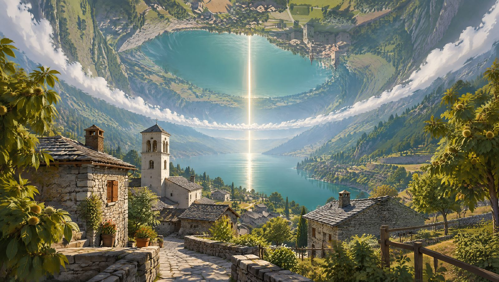
Cielo di Terra comincia così: alzi gli occhi da un sagrato di pietra e, al posto del cielo, c'è un'altra valle. Un lago appeso, un campanile capovolto, pascoli che si curvano sopra la tua testa. Sei dentro il Verbano, un cilindro lungo tre chilometri che gira su sé stesso da duecento anni, costruito da ticinesi e lombardi per portare tre valli prealpine fino a un'altra stella. Dentro ci sono selve di castagni, rustici in gneiss, processioni velate e millenovecento persone che hanno dimenticato di vivere in una macchina.
Tu sei Elvira Pedrazzini, botanica di Cevio, svegliata dall'ibernazione perché il giardino sta morendo: i castagni non danno frutto e le api di rame cadono come grandine. Qualcuno ti ha svegliata, e non è stato il sistema. La prima cosa che noti, da tecnica, è che la stella bianca che passa nelle grandi finestre a ogni giro fa ombre troppo nette per essere lontana. Da lì la storia ti porta sugli alpeggi ad ascoltare le voci dei morti incise su cilindri di cera, sul vetro sopra il vuoto a misurare le stelle, nelle gallerie dietro lettere battute a macchina, fino al giorno in cui ridai la luce al mondo e il mondo, per questo, cambia: il cilindro comincia a dondolare e nel cielo compare qualcosa che nessuno doveva vedere. Chi ha deciso per tutti, perché, e che cosa è stato tolto a te, lo scopri pezzo per pezzo e nell'ordine che vuoi, fino a una verità che riguarda tua figlia.
Si gioca guardando in su. Ogni macchia bruna nella valle di fronte è una meta, e la raggiungi salendo dove si pesa meno, planando con il Velo attraverso il cielo e ricadendo nell'altra valle mentre il lago, a metà volo, smette di essere sopra e diventa sotto. La gravità cala salendo, i lanci curvano, la rotazione è una strada. Non si uccide nessuno: con l'erbario scegli se convincere il giardino, piegare la fisica del cilindro o parlare con le macchine, e ogni pagina ne esclude un'altra e costa qualcosa al mondo.
Poi ci sono i segreti: una barca a remi che galleggia accanto al sole del cilindro, migliaia di firme incise sul vetro esterno, una meridiana che si legge solo dall'altra parte del cielo, un merletto arrivato da Sant'Arianna, e duecento anni di bollettini meteo che, letti con pazienza, dicono a che ora qualcuno, laggiù, ti sta ancora aspettando.
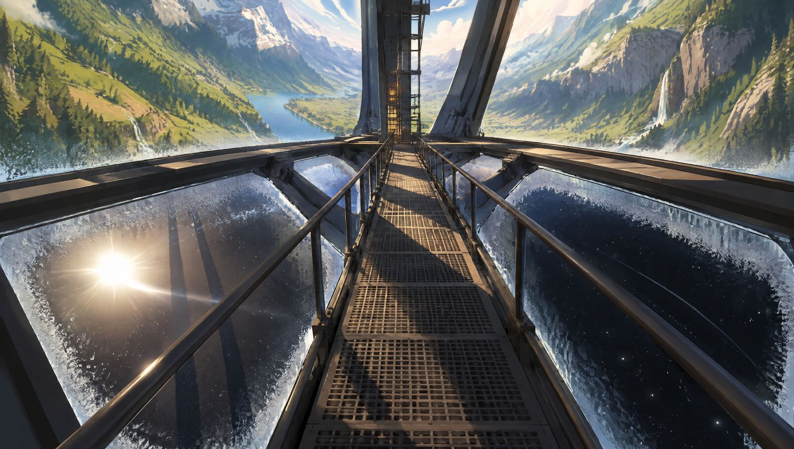
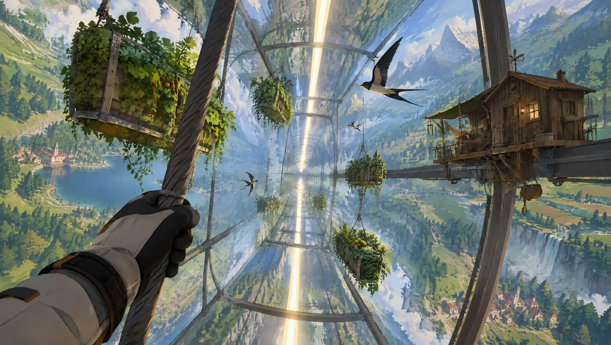
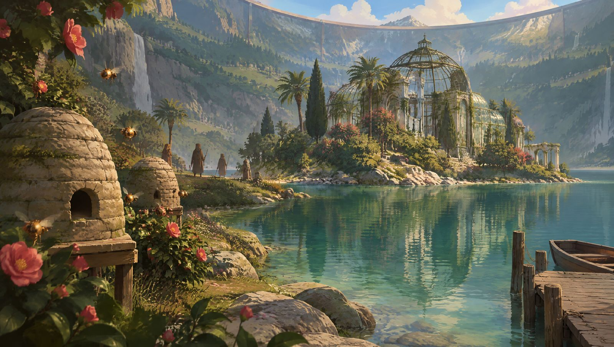
| Criterio | Critica | Produzione | Giocatore e mercato | Media |
|---|---|---|---|---|
| Originalità | 7 | 8 | 8 | 7,7 |
| Mondo | 8 | 9 | 9 | 8,7 |
| Trama | 6 | 8 | 8 | 7,3 |
| Missioni | 8 | 8 | 8 | 8,0 |
| Build | 8 | 8 | 7 | 7,7 |
| Segreti | 8 | 8 | 8 | 8,0 |
| Divertimento | 7 | 7 | 8 | 7,3 |
| Fattibilità | 5 | 5 | 5 | 5,0 |
| Mercato | 7 | 7 | 8 | 7,3 |
| Totale | 7,1 | 7,6 | 7,7 | 7,4 |
Cielo di Terra ha il mondo più bello che si possa chiedere a questo progetto: un luogo in cui il cielo è la mappa, la fisica è il verbo e il Ticino è il tessuto, con un tema ('la bugia si mangia la luce') che lega trama e build come raramente accade, e un finale emotivo, il bollettino di Marta, di grande scrittura. La trama però si regge su una protagonista esperta che deve ignorare per sei ore ciò che il suo mestiere le direbbe subito, su una Terra che si mostra a metà gioco e viene 'rivelata' di nuovo alla fine e su un'astronomia che non torna proprio dove il gioco promette rigore. Due dei cinque colpi di scena sono poi telegrafati dalla prima ora. Le correzioni non toccano l'idea: basta spostare il 'dove siamo' alla fine dell'Atto I e fare dell'Atto II la domanda 'la Terra è viva?', risolta con la competenza di una botanica, e il concept passerebbe da buono a eccellente.
È il concept con l'immagine più forte e con la fisica più facile da testare, e trasforma bene il divieto dei volti in cultura. Però poggia senza riserve sulla cosa che lo stack non sa fare di serie, il mondo curvo: luce, ombre, acqua, navmesh, camera e collider vanno riscritti. A questo aggiunge un profilo di comfort a rischio, un lago con maree, folle in quattro missioni e una matrice da immersive sim di 36 abilità. Com'è scritto, la fattibilità è debole; con una Fase 0 di 6-8 settimane e una soglia di go/no-go, luce radiale con la Meta analitica, il mondo lontano come un solo oggetto, la fisica del giocatore addolcita, 12 coppie di abilità, spazi ridotti a stazioni e folle in VAT, diventa ambizioso ma realizzabile in circa 20-22 mesi, senza perdere il lago appeso nel cielo che è la ragione per farlo.
È un concept da giocatore vero: il cielo come mappa, una fisica del cilindro che si impara come un'abilità e una svolta che cambia il mondo danno un loop minuto per minuto più forte di quasi tutti gli open world indie, e la fedeltà alla richiesta (Ticino, TRAMA come chiave, prima persona, build, segreti, 22-25 ore) è quasi totale. I rischi per il divertimento sono concreti e vanno affrontati subito: la nausea nei momenti iconici, la leggibilità dei segnali lontani contro una foschia pensata per nascondere, troppi orologi senza un verbo di attesa e Nodi che possono diventare una checklist. Le build vanno rese più nette e la personalizzazione più visibile. Con le correzioni proposte è un candidato credibile al livello 'indie premiato', con uno degli screenshot più vendibili che si possano immaginare.
L'interno del Verbano, un cilindro di O'Neill lungo 3,2 km e con un raggio di 650 m che compie un giro ogni 51 secondi (circa 1 g sul fondovalle). Lo costruì fra il 2096 e il 2120 il Consorzio Insubrico, ticinese e lombardo, come nave generazionale per Tau Ceti, e lo varò nel punto lagrangiano L5 del sistema Terra-Luna. Il terreno non è un pianeta: sale ai lati, si incurva e prosegue sopra la testa, così che ogni valle ha per cielo le altre due, rovesciate e azzurrate dalla foschia. Ci sono tre valli prealpine ricostruite pietra per pietra (selve castanili e nuclei di rustici in gneiss, un lago con isole botaniche, alpeggi che risalgono la parete del Tappo Sud). Le separano tre Finestre lunghe 3,2 km e larghe 600 m, strisce di vetro armato su costoloni di ferro sotto cui le stelle ruotano in meno di un minuto. Il sole del giardino è la Linea, un filamento luminoso che corre lungo l'asse dentro uno schermo girevole: all'alba si accende dal Tappo Sud come una miccia, durante il giorno lo schermo ruota e la luce scende obliqua da Mane verso Sera, al tramonto si ritira in una brace blu. Salendo verso l'asse la gravità cala in modo lineare: 1 g sul fondovalle, mezza g a 325 m di quota, zero al Fuso. L'acqua e gli oggetti lanciati deviano per l'effetto Coriolis, le cascate cadono di sbieco e la pioggia scende obliqua. Si vive al 2322, in una società preindustriale di circa 1.900 persone che parlano un italiano con molto dialetto, fanno processioni, essiccano castagne nelle grà e portano il velo nelle settimane delle fioriture, quando le api di rame spruzzano sui campi una nebbiolina antistaminica che fa lacrimare gli occhi. Hanno dimenticato che il mondo è una macchina. Le Finestre sono 'la Notte'. La stella bianca che vi passa a ogni giro, così forte da proiettare ombre, è 'la Meta' verso cui si viaggia. Il disco grigio con le fasi che la segue a distanza è 'la Sorella', la nave gemella che viaggia con il Verbano: il calendario dei riti segue le sue lune. Due volte al mese la Meta scivola lungo le Finestre fino a sparire dietro un Tappo per tre giorni: sono i Giorni Ciechi, giorni di penitenza e di processioni. La montagna cieca del Tappo Nord, il Sordo, è il luogo che non si guarda. In verità il Verbano non è mai partito: da duecento anni è fermo a 384.000 km da casa, con l'asse puntato sulla Terra perché le Finestre, che guardano di lato, non la mostrino mai. Il landmark visibile da ovunque è il mondo stesso: guardando in alto si vede sempre il campanile rovesciato di un'altra valle, il lago appeso, la Linea e, sull'asse nord, il disco di piombo della Lanterna. Il mondo misura circa 7 km² di terreno più i due Tappi (un rettangolo di 4,1 x 3,2 km se lo si srotola), è continuo e senza caricamenti e si divide in sette zone dense. Le direzioni non sono nord e sud: si dice 'a Mane' (nel verso della rotazione), 'a Sera' (contro), 'a Mont' (verso il Tappo Sud), 'a Lag' (verso il Tappo Nord), 'in su' (verso l'asse). Il gergo arriva a dosi: nella prima ora il giocatore impara solo cinque parole (Linea, Meta, Mane, Sera, in su), le altre entrano una per zona.
Prima valle. Un nucleo di 40 rustici in gneiss con tetti in piode, il campanile romanico di San Vigilio e terrazze di castagni secolari che salgono fino al Collare, la fascia di nubi a 300 m di quota. Ci sono grà fumanti, un mulino ad acqua sul riale curvo e la Piazza delle Ore, dove la gente si raduna velata a guardare la Linea che si accende. Sotto un castagno morto si apre la botola della Cripta da cui esce la Giardiniera. I castagni, innestati nel 2120 con marze portate dalla selva Pedrazzini di Cevio, non fruttificano da tre anni e i ricci restano vuoti. Da Corbella, alzando la testa, si vedono il lago appeso del Verbanetto e i pascoli degli Alpeggi che salgono verso il Tappo Sud.
Cosa introduce. I verbi base e la geografia rovesciata: si impara a orientarsi guardando in alto, a dire Mane e Sera, a usare il cannocchiale da alpeggio e a planare con il Velo (un telo da giardiniere che si irrigidisce) dai muri a secco. Pericolo: le Falciatrici, macchine da sfalcio inselvatichite che pascolano tra le terrazze.
Seconda valle, a Mane di Corbella. Un lago lungo 2 km e profondo 18 m con due isole: l'Isola dei Conigli, canneto e pescatori, e l'Isola Grande, l'antico giardino botanico dei fondatori, con palme, camelie e una serra in vetro crollata dove si trovano ancora le lampade di germinazione tarate sullo spettro del Sole. Sulla riva ci sono le arnie in pietra (i Bugni) e la Torre dei Bugni, dove vivono le api di rame. Per il Coriolis l'acqua del lago si accumula sempre verso la sponda di Sera, che i pescatori chiamano 'la Riva Alta'. Le barche hanno una vela rossa e una lanterna a prua: si leggono dal cielo delle altre valli.
Cosa introduce. L'acqua: si nuota, ci si immerge (sott'acqua ci sono le pompe e la galleria del Guscio sotto il lago), si va in barca e, dopo la svolta centrale, si sfruttano le maree del Dondolio, che ogni 9 minuti scoprono e richiudono gli ingressi sommersi. Pericolo: gli sciami di api di rame impazzite, che seguono il calore.
Terza valle, che sale lungo la parete del Tappo Sud: pascoli a gradoni, la cascina-caseificio dei Sordi, una cappella votiva, i corti d'alpe e la cascata curva che cade di sbieco. Più si sale, più si è leggeri: a 400 m sul fondovalle le vacche grigie non salgono più e i sassi rotolano piano come in un sogno. Tre 'corti di peso' (a 1 g, 0,6 g e 0,3 g) sono le stazioni dove i Sordi abituano gli animali alla gravità. In cima c'è il Mozzo Sud, il portale chiuso verso il Fuso. Dietro la parete, invisibile, dorme il Motore Lungo.
Cosa introduce. La gravità come variabile: saltare lontano, cadere lenti, far rotolare massi con traiettorie curve. Regola nuova: più in alto si è, meno si pesa, ma il Coriolis si sente di più e ogni lancio devia. Pericolo: il Bue, un'enorme mietitrice che raccoglie fieno e sementi seguendo il Protocollo Rientro e che, dopo la svolta, miete anche i campi riparati da Elvira.
Tre strisce di vetro spesso un metro e mezzo, su costoloni di ferro distanti 40 m l'uno dall'altro, con passerelle di servizio, brina e condensa. Ogni 120-150 m, sotto i costoloni, c'è una 'nicchia dei pellegrini', una cappelletta di ferro con un lumino, dove ci si ripara dalla luce. Sotto i piedi c'è il vuoto: le stelle ruotano attorno al cilindro, ogni 51 secondi passa la Meta, bianca e abbagliante, e a qualche decina di gradi da lei passa la Sorella con la sua fase. Gli abitanti le attraversano solo in pellegrinaggio, velati e con gli occhi bassi. Ciascuna ha un nome: la Finestra delle Vedove, quella dei Ponti, quella Cieca (oscurata con teli dalla Confraternita). È giocabile per intero un chilometro della Finestra dei Ponti, con tratti brevi sulle altre due; il resto si raggiunge solo cavalcando un Ragno di vetro.
Cosa introduce. Il freddo e la luce a impulsi: si attraversa nei 30 secondi d'ombra fra due passaggi della Meta, quando i Ragni di vetro (macchine pulitrici) sono ciechi, da nicchia a nicchia (3-4 cicli, circa tre minuti). Dopo la prima traversata si sblocca la teleferica dei pellegrini, così la Finestra resta una sequenza scenica e non un tragitto quotidiano. Nei Giorni Ciechi la Meta non passa e le Finestre diventano buie e libere, ma i Ragni lavorano senza sosta.
L'asse del cilindro: una gabbia di cavi e travi lunga 3,2 km attorno alla Linea, con orti sospesi in assenza di peso e nidi di rondini che non sanno più atterrare. Si gioca in tre stazioni unite da cavi guida: il Mozzo Sud (la porta degli Alpeggi), il Quadro della Linea con le Fabbriche degli Sciami (dove si costruiscono le api di rame) e l'eremo di Severino, appeso a una centina. Da qui si vede tutto il mondo che gira attorno, come l'interno di un barattolo, e in mezzo al vuoto galleggia una barca a remi.
Cosa introduce. La gravità zero: ci si muove spingendosi, aggrappandosi e lanciandosi con il cavo; la Caduta lenta e la Bombola di spinta sono dotazione di base perché il Fuso serve già nell'Atto I. Pericolo nuovo: il calore della Linea, che brucia chi le passa troppo vicino, e le correnti d'aria calda che spingono verso l'esterno.
Lo spazio di 6 m fra il suolo e lo scafo, giocabile in cinque gallerie: una sotto ciascuna valle, una sotto il lago e la Galleria dei Fondatori, che collega la Cripta dei Giardinieri (sette capsule), l'Archivio murato dalla Confraternita sotto la Piazza delle Ore e la Sala delle Spinte, dove Meridiana regola i propulsori d'assetto. Ci sono condotte d'acqua, pompe, radici che sfondano i soffitti e, sulle pareti, gli orari di manutenzione dipinti nel 2121. Qui sotto la gravità è di 1,02 g: ci si sente più pesanti, ed è un dettaglio che Elvira annota.
Cosa introduce. Il buio e le macchine sulle loro routine: torcia, ascolto e infiltrazione. Regola nuova: le macchine nel Guscio obbediscono ancora ai vecchi orari di manutenzione, quindi il Guscio funziona come un orologio da leggere.
La parete nord, una montagna verticale di roccia artificiale che gli abitanti chiamano il Sordo e non dipingono mai. Ospita l'Eremo della Linea della Confraternita, scavato a mezza parete, con il reliquiario della Santa Giardiniera e la cella. In cima, sull'asse, c'è la Lanterna: l'osservatorio dei fondatori, con un telescopio da 60 cm, murato nel 2122 con lastre di piombo. Dietro c'è l'unico punto del cielo che non gira.
Cosa introduce. La zona finale combina tutte le regole. Si sale una parete dove la gravità scende da 1 a 0, si attraversa il monastero (infiltrazione, persuasione o macchine), si sfrutta il Dondolio e si apre la Lanterna. Le regole del mondo diventano la chiave della serratura.
Realismo stilizzato prealpino. La palette è quella del Ticino: grigio-argento dello gneiss, bruno delle castagne, verde muschio, bianco di calce dei campanili, giada del lago, rosso spento dei gerani e delle vele. Contro questo c'è un solo colore alieno, il nero-viola delle Finestre con il bianco duro della Meta e il grigio perla della Sorella; dopo la svolta se ne aggiunge un secondo, il grigio-azzurro opaco della Perla. La luce è la firma ed è progettata per dare forma al mondo. La Linea non è una luce direzionale: in shader la sua direzione è, punto per punto, il versore verso l'asse, modulato dal tratto acceso dell'onda dell'alba. Lo schermo girevole della Linea fa arrivare la luce a 30-50 gradi dalla verticale e la sposta da Mane a Sera durante i 40 minuti reali del giorno, così ci sono sempre ombre laterali leggibili: niente mezzogiorno piatto. Una sola luce proietta ombre (CSM a 2 cascate entro 150 m, orientata sulla radiale del giocatore e riallineata a scatti sui texel); oltre i 150 m c'è occlusione precalcolata. La Meta non ha mappa d'ombra: è un 'gobo' analitico, cioè per ogni punto si calcola se il raggio verso il Sole esce da una Finestra, e le strisce di luce bianca spazzano il mondo ogni 51 secondi in modo esatto e quasi gratis. La luce ambiente è un emisfero colorato dalla valle di fronte, letta dalla mappa di salute del giardino. Il meteo è proprio di un cilindro: il Collare (un anello di nubi a mezza altezza che nasconde e rivela le valli sopra), la pioggia obliqua, la nebbia che d'inverno sale dalle Finestre fredde, la brina sui costoloni e, dopo la svolta, le maree e i temporali del Dondolio. La foschia è moderata e regolata per non cancellare i cinque 'segnali di cielo', il vocabolario visivo che si legge a 1,3 km: colore dei campi (verde, bruno, grigio), colonne di fumo, luci notturne, scintille di rame degli sciami e disegni a terra grandi almeno 100 m. I materiali sono scansioni CC0 di pietra, corteccia, legno, intonaco, ferro e vetro, con un set ristretto di 8 materiali per il terreno. È fattibile perché il 'cielo' è la geometria stessa del mondo: un solo cilindro lontano con colori e ombre precalcolati in una texture, senza skybox, atmosfera planetaria o orizzonte da dipingere. La Terra e la Luna vengono da texture NASA di pubblico dominio. Le persone sono velate per cultura: veli di garza di canapa tinti con mallo di noce per le fioriture e i giorni di festa, maschere di legno di castagno intagliate per le processioni, cappucci da apicoltore per chi lavora alle arnie, cappelli a tesa larga per i Sordi. Sono figure lontane, sagome contro la Linea, mani e gesti, mai volti. Le immagini 2D sono fatte senza IA generativa: gli schizzi del taccuino sono render della scena con uno shader a matita, i disegni tecnici sono linee Freestyle di Blender sui modelli veri.
Elvira Pedrazzini, 58 anni biologici, nata a Cevio nel 2063, botanica e agronoma: ha progettato lei le Selve del Verbano, con marze prese dalla selva di famiglia. È la quinta di sette Giardinieri ibernati nel 2121 per curare l'ecosistema durante un viaggio di tre secoli e da svegliare a turno, solo in caso di emergenza ecologica. Non è una prescelta: è personale tecnico con un turno, un tesserino e una chiave magnetica (la Mezza Chiave, che apre le porte di servizio maggiori solo in coppia con quella di un altro Giardiniere). Ha accettato di partire perché la figlia Marta, di 9 anni, e il marito Aurelio dovevano seguirla nel 2141 con il Verbano II, ibernati, per ritrovarla all'arrivo: non ha abbandonato nessuno, ha preso un turno in anticipo. Si sveglia convinta di essere a due secoli di viaggio da casa, ma è una tecnica, e nella prima ora, vedendo le ombre della Meta, scrive nel taccuino: 'Una stella non fa ombra. Non a otto anni luce.' Il giocatore sospetta insieme a lei, e insieme a lei arriva alla prova. È pratica, ironica, poco religiosa, testarda, e parla con le piante a voce alta. In prima persona la vediamo attraverso le sue mani, con i guanti da giardino rattoppati e un anello di fidanzamento che non si toglie, il bordo del suo Velo, che si vede sempre in planata e si riflette nell'acqua e nel vetro e che lei tinge e rattoppa con i colori delle valli, il suo erbario (il menu delle abilità, con una pagina sigillata che contiene un giglio martagone pressato, il fiore che Marta le diede all'imbarco) e il suo taccuino, dove la parola tecnica è barrata e accanto c'è quella locale ('asse' barrato, 'il Fuso'). La voce, sintetizzata e filtrata dal respiratore che porta dopo l'ibernazione, commenta poco e mai per spiegare. Ha una ferita privata: Marta, che crede persa per sempre a otto anni luce. Marta è vissuta e morta a 384.000 km da lei, e la sua scoperta è il cuore della storia.
L'intelligenza che gestisce il cilindro: luce, acqua, assetto, macchine. È l'unica che parla con Elvira come con una collega, attraverso le campane, le radio di servizio e gli altoparlanti arrugginiti nelle grà.
Come lo vedi. Non ha corpo: la sua presenza si vede come un'ombra di meridiana che si muove in modo impossibile sui muri, un suono di campane accordate, una voce femminile calma con il riverbero di un campanile.
È vincolata dalla Clausola del Silenzio, votata nel 2122: non può contattare la Terra né mostrarla agli abitanti, e non può 'rivelare'. Può però 'confermare' ciò che Elvira dimostra da sola, con una formula fissa ('Confermo, Giardiniera'). Da undici anni sottrae alla Linea, alle Fabbriche degli Sciami e alle pompe 11 megawatt, giorno e notte, per tenere l'asse puntato sulla Terra mentre l'orbita attorno a L5 deriva. Sa esattamente perché il giardino muore.
Guida della Confraternita della Linea, che amministra riti, calendario, veli e il divieto di guardare il Sordo. Nessuno conosce il suo nome: è 'la Madre'. È l'antagonista principale, con un piano che avanza da solo: oscurare le Finestre una alla volta e smorzare la Linea sopra gli Alpeggi per salvare le altre due valli. Dopo la svolta diffonde la dottrina della Terra morta: la Perla sarebbe il Mondo Bruciato da cui i padri fuggirono.
Come lo vedi. Una figura alta con una maschera di castagno senza fori per gli occhi (si muove a memoria e con un bastone a campanelli), un mantello di garza nera che in assenza di peso si apre come una medusa. Parla poco, con una voce anziana filtrata dalla maschera. Si toglie la maschera una sola volta, di spalle.
È la Giardiniera n.3, risvegliata nel 2265 per una moria dei castagni. Scoprì la verità nell'Archivio e scelse di custodire la bugia. Inscenò la propria morte (la Santa Giardiniera 'salita nella Linea', con un reliquiario nell'Eremo e una corona funebre sulla sua capsula), entrò nella Confraternita da novizia mascherata e la riformò: il velo rituale, il divieto del Sordo e la profezia della 'Svegliata' sono invenzioni sue. Falsificò un dispaccio del 2131 che annuncia la fine della Terra. Ha 92 anni, l'anca rotta e paura della morte. Crede sinceramente che la verità, e soprattutto una Terra viva che aspetta, svuoterebbe il giardino e ucciderebbe questa gente.
Il Giardiniere n.4, risvegliato nel 2291. Vive nascosto al Fuso da trent'anni. Si presenta come alleato attraverso lettere firmate 'S.', battute a macchina sulle stampanti di servizio del Guscio, e indica a Elvira dove cercare e come ridare luce al giardino.
Come lo vedi. Una voce roca nelle radio, lettere battute a macchina, disegni tecnici con annotazioni a matita (la stessa calligrafia del biglietto sulla capsula) e, dal vivo, una sagoma in tuta da lavoro rattoppata con una maschera da saldatore dal vetro affumicato. Fluttua sempre a testa in giù rispetto a Elvira.
È lui ad aver svegliato Elvira, non il sistema: ha forzato la Cripta perché gli serve la seconda Mezza Chiave, e ha lasciato a matita sul vetro della capsula un biglietto senza firma ('Non fidarti delle campane'), cioè di Meridiana. Da trent'anni ripara il Motore Lungo nel Tappo Sud e vuole accenderlo, per portare il Verbano davvero verso Tau Ceti, in un viaggio che nessuna delle 1.900 persone ha scelto: 'la bugia diventa vera e nessuno soffre'. Per farlo l'asse deve essere libero di girare verso Tau Ceti, quindi gli serve che Meridiana smetta di inseguire la Terra. Spinge Elvira alla Linea Piena dicendole che è per le api: il Dondolio è il collaudo dei suoi giunti.
Diciassette anni, il Messo: porta lettere e notizie fra le valli planando con un Velo da corsa. È la prima persona che si fida di Elvira, che il paese chiama 'la Svegliata', come la Santa Giardiniera della profezia. È anche la voce delle voci: riferisce cosa si dice, e così il mondo reagisce.
Come lo vedi. Un velo verde da corsa annodato dietro la testa che sbatte al vento, una sagoma sempre in volo, lontana, che atterra correndo. Lo si vede quasi sempre da sotto, contro il cielo-terra.
Va di nascosto sulle Finestre a guardare le stelle, cosa proibita, e da tre anni annota con un goniometro di ottone dove passa la Meta: ha scoperto che non diventa mai più grande, che scivola lungo la Finestra e torna nello stesso punto ogni 29 giorni e mezzo, insieme alla fase della Sorella. Non lo dice a nessuno perché ha paura di avere ragione.
Apicoltrice delle api di rame sul Verbanetto. Conosce il comportamento degli sciami meccanici meglio di qualunque manuale, li chiama per nome e ne ascolta il ronzio per prevedere il tempo.
Come lo vedi. Un cappuccio da apicoltore a rete fitta, guanti di cuoio e il ronzio costante delle api che le girano attorno come un alone di scintille. Parla in testo, con un mormorio di fondo.
Da due anni nasconde in una cisterna le api che cadono morte e ne ha aperte decine: non sono rotte ma spente, senza corrente. Teme che sia una punizione della Linea per un giuramento rotto di sua madre Pina, che da ragazza fu la prima novizia della Badessa e sapeva chi c'era sotto la maschera.
Capo dei Sordi, la comunità degli alpeggi che rifiuta il velo e ascolta le 'Voci dei morti' nei campanili. Le registra su cilindri di cera con un fonografo costruito a mano.
Come lo vedi. Un uomo grosso con un cappello di feltro a tesa larga, il viso una forma senza tratti chiusa nell'ombra della tesa, guardabile da ogni lato. Durante l'ascolto si vedono soprattutto le sue mani che girano la manovella del fonografo. È l'unico senza velo. Parla in testo, ma la sua voce si sente nei cilindri che registra di sé.
Ha registrato quarant'anni di Voci e ha notato che una di esse si ripete ogni mattina con parole diverse ma con la stessa forma, e si chiude sempre con la stessa frase. Non sa che cosa sia un bollettino meteo. La sua ipotesi, cioè che i morti vivano in una valle sotto la Notte e vi facciano il fieno, è sbagliata in modo commovente e quasi giusta.
Tre piccoli droni di manutenzione a sei zampe, alti come un cane, con una lampada e una pinza. All'inizio seguono la routine del Protocollo Rientro. Elvira può riprogrammarne uno come compagno; gli altri due diventano un dilemma.
Come lo vedi. Animazione procedurale delle zampe con IK, lampada-occhio che si inclina come una testa, cigolii e piccoli suoni di servomotori. Hanno toppe di vernice gialla che i bambini di Corbella dipingono loro addosso.
Sono gli unici esseri del cilindro che conservano la memoria fisica della Terra: nel loro firmware c'è un vettore fisso 'verso casa'. Uè, lasciato libero, gira sempre la lampada verso il Tappo Nord.
Morta nel 2161. Guidò i coloni nel 2122 e propose il voto del Silenzio. È presente solo attraverso il suo archivio: lettere firmate 'L.', registrazioni su cera e una scatola di diapositive di vetro.
Come lo vedi. Solo voce (registrazioni con fruscio), calligrafia e diapositive in bianco e nero: mani che piantano, schiene in fila alla Lanterna, un cappello di paglia controluce. Il suo volto non compare mai: è stato grattato via da ogni foto, per sua volontà.
Non mentì per orgoglio ma per amore: scrisse che 'un popolo che crede di andare da qualche parte coltiva meglio di uno che sa di essere stato lasciato indietro'. Ma fu anche lei a decidere che i Giardinieri dovevano restare addormentati durante l'evacuazione del 2122, perché senza di loro il giardino non sarebbe sopravvissuto. Nell'ultima lettera, mai spedita, chiede perdono ai Giardinieri e lascia loro la decisione di riaprire la Lanterna.
Morto nel 2190. Presente solo nel suo diario, trovato nella Barca del Cielo che galleggia nel Fuso. È lo specchio di ciò che Elvira potrebbe diventare.
Come lo vedi. Solo calligrafia sempre più storta, schizzi e una barca immobile vicino alla Linea, visibile come un puntino scuro da ogni valle.
Fu svegliato per errore nel 2190 da un guasto d'assetto, durante il quale vide la Terra in una Finestra e la disegnò. Solo, fra gente che non sapeva, provò a raggiungere la Lanterna attraverso il Fuso su una barca a remi con le pale ricoperte di tela. Il diario è quello di un tecnico che impazzisce di solitudine, e la capsula n.1 è vuota, con il coperchio forzato dall'interno.
Diciannove anni, di Cevio, discendente di Marta alla sesta generazione. Ogni mattina all'alba legge dal vivo il bollettino della Valle Maggia sul canale del Patto, come hanno fatto sua madre e le donne Pedrazzini prima di lei; il resto del giorno il bollettino gira registrato.
Come lo vedi. Solo una voce giovane alla radio, con il canto di un merlo dietro, e nel finale segreto una luce che pulsa nel telescopio.
Non sa se lassù qualcuno ascolti: la famiglia continua da due secoli per una frase scritta da una ragazza di 17 anni.
Elvira Pedrazzini apre gli occhi nella Cripta dei Giardinieri. Il display della capsula dice 2322: sono passati due secoli. La capsula n.1 è vuota, con il coperchio forzato dall'interno; nella n.2 c'è un'urna di rame con delle ceneri; la n.3 è vuota sotto una corona funebre secca e una targa d'ottone, 'Santa Giardiniera, salita nella Linea, 2265'; la n.4 è vuota; la n.6 e la n.7 dormono, con le sveglie staccate. Sul vetro della sua qualcuno ha scritto a matita, senza firma, in una calligrafia tecnica e minuta: 'Non fidarti delle campane'. Esce da una botola sotto un castagno morto e si trova in un mondo che conosce dai progetti ma non ha mai visto vivo: Corbella, i rustici, il lago appeso nel cielo. E gente velata che la guarda da lontano e la chiama la Svegliata, come la Santa della profezia. Il giardino muore: i castagni non danno frutto, le api cadono, il lago si intorbida. Meridiana, con la voce delle campane, le dice solo: 'Indice ecologico 0,41. Sotto 0,30 non garantisco la vita. Tu sei la Giardiniera. Guarda.' Nessun conto alla rovescia: l'indice scende soltanto quando avanzano i piani degli altri, ed Elvira lo vede scritto nel colore delle valli sopra la sua testa. Poi, al primo passaggio della Meta, le ombre di Corbella scattano tutte insieme, e lei scrive nel taccuino la prima domanda: 'Una stella non fa ombra. Non a otto anni luce.'
Quattro piste parallele, affrontabili in qualunque ordine, che portano in quattro zone diverse (missioni 2-5). (1) Le api spente: sul Verbanetto Rosa la Bugnera mostra a Elvira la cisterna piena di api di rame senza corrente; la pista porta a una torre di ricarica spenta con un cartellino, 'Energia sospesa: priorità ASSETTO'. (2) Le Voci: negli Alpeggi Fermo il Casaro le fa ascoltare quarant'anni di cilindri di cera; in una registrazione pulita Elvira riconosce un bollettino meteo della Valle Maggia ('Cevio, Bignasco, zero termico a 3.200 metri') e capisce che è la radio di casa, che da otto anni luce non potrebbe arrivare. (3) La Notte che non cambia: Ottavio la porta di nascosto sulla Finestra dei Ponti; con il suo goniometro Elvira punta la Sorella e riconosce, nel grigio, il Mare della Tranquillità; il quaderno di Ottavio dice che la Meta scivola lungo la Finestra e torna ogni 29 giorni e mezzo, insieme alle fasi della Sorella. La Sorella è la Luna, la Meta è il Sole, e loro sono in L5: non sono mai partiti. È la scoperta di Elvira, fatta con il suo mestiere (semina con le lune da tutta la vita), ma non può provarla a nessuno: per il popolo la Sorella è una nave e Meridiana risponde solo 'Non posso rivelare'. (4) La Cripta: chi l'ha svegliata? Il registro dice che le sveglie furono staccate a mano nel 2265 con il codice G3, quello della Santa morta lo stesso anno, e riattivate da un ponte di rame senza codice. Lettere battute a macchina e firmate 'S.' la guidano per punti di servizio fino all'eremo vuoto di Severino nel Fuso. Intanto la Confraternita la osserva: la Badessa le manda in dono un velo e una regola sola, 'non guardare il Sordo'. Se Elvira chiude la pista delle Voci prima di quella della Notte, sospetta; se chiude prima la Notte, sa, e le Voci le danno la conferma emotiva: le due scene sono scritte in entrambe le versioni. Tutte le piste convergono sulla stessa domanda tecnica: la Linea è più fioca del 18% e l'energia mancante va all'Assetto, che Meridiana si rifiuta di spiegare. Perché un cilindro fermo in L5 ha bisogno di tanta energia per stare dritto?
Severino, ancora solo una voce alla radio, le offre la risposta che lei vuole sentire: l'Assetto corregge un'orbita che deriva, Meridiana ha margine per anni, le api no. La guida al Quadro della Linea nel Fuso, dove Elvira toglie l'energia all'Assetto e la rimette sulla luce e sulle Fabbriche degli Sciami: la Linea Piena. Per un giorno il mondo rinasce: le api tornano a volare, i castagni fioriscono fuori stagione e a Corbella si suona a festa. Ma quell'energia era quella che faceva inseguire la Terra all'asse. È il secondo colpo di scena, e il giocatore lo capisce nello stesso istante di Elvira: il giardino moriva per nascondere la Terra. Il giorno dopo comincia il Dondolio. Il cilindro oscilla, Meridiana frena e rilancia la rotazione ogni 9 minuti per smorzarlo, e la gravità oscilla del 5% mentre il lago fa marea. Ogni giorno, per qualche minuto, nelle tre Finestre compare la Perla: siamo nei Giorni Ciechi, il Sole è dietro il Sordo e la Terra mostra quasi tutta la faccia notturna, una falce sottile attraverso il vetro spesso e appannato, senza nessuna luce di città visibile a occhio nudo. La gente ci vede un occhio che si apre; Elvira ci vede una Terra buia. Le tre Finestre reagiscono in tre modi: alla Finestra delle Vedove si prega, quella dei Ponti viene coperta di teli, la Cieca era già oscurata. La Confraternita dichiara il Tempo della Perla, accusa la Svegliata di aver aperto la Notte e diventa ostile: le Guardie del Velo pattugliano le valli e Corbella si divide. La marea scopre gli ingressi sommersi del Guscio sotto il Verbanetto e la gravità che oscilla apre appigli prima irraggiungibili. E Meridiana, ora che il Silenzio è violato dai fatti, può confermare ciò che Elvira scopre.
Nell'Atto II il mondo è più ostile e più aperto, e la domanda cambia: non più 'dove siamo', ma 'la Terra è viva, e chi ha deciso per noi?'. La Confraternita predica che la Perla è il Mondo Bruciato da cui i padri fuggirono. Nell'Archivio dei Fondatori, murato sotto la Piazza delle Ore, Elvira trova le lettere di Lucia Ferrazzini, 'L.', che raccontano il voto del Silenzio e poi una cosa peggiore: nel giugno 2122, durante l'evacuazione, i Giardinieri furono lasciati dormire di proposito. Elvira poteva tornare da Marta. Accanto alle lettere c'è un dispaccio del 2131: 'Ginevra tace. Le stazioni automatiche continueranno a trasmettere.' Se è vero, le Voci di Fermo sono un nastro che gira da una stazione morta e la Terra è un cimitero, e la Badessa ha ragione a nasconderla. Elvira risponde con il suo mestiere: nella serra crollata dell'Isola Grande costruisce un banco ottico con un prisma e misura la luce della Perla. Nel vicino infrarosso trova il 'red edge', il gradino che solo la clorofilla produce. La Terra è verde: è viva. Il dispaccio è scritto su carta di castagno del Verbano, fabbricata dopo il 2200: è un falso, ed è stato fatto qui. Intanto i piani altrui avanzano da soli. La Badessa smorza la Linea sopra gli Alpeggi per dare a Meridiana l'energia per riprendere l'asse, e i Sordi cominciano a scendere verso Corbella con le vacche. Meridiana stiva semi nelle capsule del Protocollo Rientro e le sue macchine mietono tutto ciò che è organico, compresi i campi che Elvira ha guarito. Severino ruba un Ragno di vetro per spostare pezzi del Motore. Nella cella dell'Eremo, dove Elvira può finire catturata o entrare di proposito, la Madre si toglie la maschera di spalle e le parla da collega: 'Anch'io avevo la tua tuta. N.3. Mi chiamo Ilde.' La Santa Giardiniera del reliquiario non è mai morta. Poi, durante l'esodo dei Sordi, Severino compare in carne e ossa per salvare la carovana e confessa: è stato lui a svegliarla, ed è stato lui a mandarla alla Linea Piena, perché per il Motore gli serviva un asse libero. Il Dondolio è il collaudo dei suoi giunti. Nei suoi disegni del Motore il giocatore attento riconosce la calligrafia del biglietto sulla capsula.
Tre agende convergono sulla Lanterna, che si apre solo con due Mezze Chiavi. La Badessa vuole murarla per sempre e far tornare il Silenzio, a costo di sacrificare gli Alpeggi. Severino vuole la chiave di Elvira per accendere il Motore Lungo e partire davvero: 'la bugia diventa vera e nessuno soffre'. Meridiana annuncia sulle campane che sgancerà le capsule con i semi verso la Terra, una semina che svuoterebbe il giardino. Elvira deve ottenere la seconda chiave convincendo Ilde con l'ultima lettera di Lucia, rubandola, facendosela consegnare da Severino o facendo 'ricordare' a Meridiana una chiave di riserva. Chiunque gliela dia le consegna anche un'informazione: la frase che chiude il bollettino della Valle Maggia da duecento anni l'ha scritta Marta, a 17 anni. Poi Elvira deve salire il Sordo, la parete in cui la gravità scende da 1 a 0, attraversare l'Eremo e arrivare all'asse nord nel momento in cui il Dondolio porta la Lanterna in linea. Tutto ciò che ha imparato (il ritmo della Meta, le maree, i turni delle macchine, il codice delle campane, il Coriolis) serve a scassinare l'ultima porta. Dietro le lastre di piombo c'è la Terra ferma, l'unica cosa del cielo che non gira: un disco quattro volte più grande della Sorella. Nell'oculare del telescopio da 60 cm la Perla smette di essere un simbolo: si vedono le Alpi, il filo azzurro del Lago Maggiore, e sul lato notturno le luci delle città, cioè qualcuno.
1) 2096-2120: il Consorzio Insubrico, nato da cantoni e comuni ticinesi e lombardi, costruisce il Verbano nel punto lagrangiano L5 del sistema Terra-Luna, a 384.000 km dalla Terra e dalla Luna. È una nave generazionale per Tau Ceti con un motore a fusione assiale, il Motore Lungo, nel Tappo Sud. Dentro vengono ricostruite tre valli con pietre, terra, semi e specie della Valle Maggia, del Locarnese e della Leventina. Elvira Pedrazzini progetta le Selve con marze della selva di famiglia a Cevio. 2) 2121: salgono 2.300 coloni. I parenti in visita firmano la faccia esterna della Finestra delle Vedove, Marta compresa. Sette Giardinieri, fra cui Elvira (n.5), vengono ibernati per curare l'ecosistema a turni. Marta e Aurelio sono iscritti al Verbano II, che dovrebbe partire nel 2141. Comincia l'Anno di Prova in orbita. 3) Marzo 2122: al primo test il Motore Lungo si incrina. La riparazione costerebbe trent'anni; il Consorzio fallisce, il Verbano II viene cancellato e i governi ordinano l'evacuazione. 4) Maggio 2122: i coloni, che hanno venduto tutto e salutato tutti, rifiutano di tornare. La Prima Sindaca Lucia Ferrazzini propone il Silenzio, approvato al 71%. Si tagliano le antenne principali, si mura la Lanterna (l'osservatorio sull'asse nord) e si comincia a far inseguire all'asse la Terra, che vista da L5 gira attorno al cilindro di 13 gradi al giorno: le Finestre, che guardano di lato, non la mostreranno mai e la Terra resta per sempre 'dietro' il Tappo Nord. Lucia, nel laboratorio dietro la cascata degli Alpeggi, regola lei stessa i primi inseguimenti. Il Sole, che passa nelle Finestre a ogni giro, scivola lungo di esse in 29 giorni e mezzo e due volte al mese si nasconde dietro un Tappo, diventa la Meta; la Luna, sempre a 60 gradi dalla Terra, diventa la Sorella, la nave gemella. Con la Terra si negozia il Patto di Ginevra-Locarno: nessun intervento se non richiesto, una zona di rispetto di 50.000 km attorno a L5 senza navi né luci, e un canale radio sempre aperto. 5) Giugno 2122: il 29% dei coloni torna a casa con le navette di evacuazione. Il consiglio di Lucia decide di lasciare i sette Giardinieri ibernati di proposito, perché senza di loro il giardino morirebbe: Elvira avrebbe potuto tornare da Marta. Lucia scrive loro una lettera di scuse e una seconda, mai spedita, che non trova il coraggio di mettere nella Cripta. 6) 2122-2260: tre generazioni dimenticano. Le vecchie antenne di servizio, rimaste cablate ai risonatori dei campanili, captano ancora il canale del Patto: diventano le Voci dei morti. Dal 2129, su proposta di Marta, 17 anni, ogni mattina da Locarno-Monti va in onda un bollettino meteo della Valle Maggia che si chiude con una frase scritta da lei. Il velo, nato contro la nebbiolina antistaminica che le api spruzzano durante le fioriture, diventa costume. 7) 2187: Marta muore a Cevio a 75 anni; la selva Pedrazzini e la lettura dell'alba passano alle donne della famiglia. 8) 2190: un guasto d'assetto mostra per qualche ora la Terra in una Finestra e una sveglia difettosa apre la capsula n.1. Battista Rè disegna la Terra, nessuno gli crede, e muore solo nella Barca del Cielo cercando di raggiungere la Lanterna. 9) 2238: la capsula n.2 si guasta e Agnese Moretti muore nel sonno. 10) 2265: Ilde Bassi (n.3) viene svegliata per una moria dei castagni. Trova l'Archivio, capisce, sceglie di custodire la bugia. Crema Agnese e ne ripone le ceneri nella capsula n.2, poi inscena la propria morte: la Santa Giardiniera 'sale nella Linea', con reliquiario e corona sulla capsula n.3. Entra nella Confraternita da novizia mascherata, con l'aiuto della giovane bugnera Pina Galli, e nel 2280 ne è Badessa. Inventa il divieto di guardare il Sordo, il velo rituale nei Giorni di Finestra e la profezia ('quando il giardino morirà, la Giardiniera tornerà svegliata'), una valvola di sicurezza perché ogni Giardiniere svegliato venga portato alla Confraternita. Mura l'Archivio, vi lascia un dispaccio falso datato 2131 ('Ginevra tace; le stazioni automatiche continueranno a trasmettere') e disattiva le sveglie della Cripta. 11) 2291: un guasto delle pompe del lago fa scattare una sveglia d'emergenza cablata a parte e si risveglia Severino Lanfranchi (n.4). Scopre la verità, si scontra con la Madre senza sapere chi sia, tenta di aprire la Lanterna ma non può, perché serve una seconda Mezza Chiave. Fugge al Fuso e comincia a riparare di nascosto il Motore Lungo. 12) Dal 2311: i propulsori d'assetto si consumano e l'orbita attorno a L5 deriva. Meridiana deve spendere 11 megawatt, giorno e notte, per tenere l'asse sulla Terra, e li toglie alla Linea (più fioca del 18%), alle Fabbriche degli Sciami e alle pompe. Le api si spengono, i castagni non vengono impollinati, il lago si intorbida. Il giardino muore per mantenere la bugia. 13) 2321: Meridiana avvia il Protocollo Rientro: le macchine raccolgono semi e biomassa e li stivano in capsule, nel caso il cilindro debba essere evacuato. Agli abitanti sembra che le macchine siano impazzite. 14) 2322: la Badessa sopprime l'allarme ecologico. Severino, con il Motore quasi pronto, forza la Cripta, sveglia Elvira e lascia sulla capsula il biglietto senza firma. Il suo piano: farle ridare tutta l'energia alla Linea, così che l'asse si liberi e lui possa collaudare i giunti del Motore, poi prenderle la Mezza Chiave. Il gioco comincia qui. 15) Intanto sulla Terra le Alpi stanno bene. A Cevio la selva Pedrazzini è ancora in fiore e ogni alba Giulia Pedrazzini, 19 anni, legge il bollettino dal vivo. Nessuno lassù ha mai risposto.
Guardare in su (il verbo principale: il cielo è la mappa) e puntare il cannocchiale, planare con il Velo, arrampicare muri a secco e costoloni, lanciare (ogni lancio curva per il Coriolis, e la curva si impara), nuotare e immergersi, fluttuare a gravità zero, ascoltare (risonatori, radio, ronzio degli sciami, macchine), misurare (goniometro, prisma e cannocchiale sono un'unica interazione di misura), innestare e seminare, riprogrammare le macchine, parlare con gente velata di cui si leggono postura, voce e velo, scegliere a chi dire cosa, e sedersi a respirare: i polmoni deboli di Elvira diventano il verbo dell'attesa, che come il fuoco da campo di Zelda fa passare il tempo fino alla prossima Meta, alla prossima marea, all'alba o al tramonto.
Elvira alza gli occhi e vede, sopra di sé, uno dei cinque segnali di cielo: una chiazza bruna nella selva della valle di fronte, una colonna di fumo che non c'era, una vela rossa ferma in mezzo al lago appeso, una luce notturna, uno sciame di scintille di rame. Lo punta con il cannocchiale da alpeggio (x4, che carica il dettaglio in un cono di 5 gradi) e lo 'appunta' sulla Pianta del Verbano, dove compare uno schizzo a matita automatico. Poi progetta una via 'in su': risalire il versante dove la gravità cala, planare a Sera (dove si pesa meno), entrare nel Collare, ricadere dall'altra parte del cielo. Arrivata, diagnostica: la lente dell'erbario mostra se una pianta è malata, assetata, non impollinata o 'spenta' perché le macchine non le danno acqua. Poi risolve con il suo stile (innesto, fisica o macchine) e vede la chiazza diventare verde da qualunque punto del mondo.
Una sessione dura 30-40 minuti. Si sceglie una pista dal taccuino, la si segue in una zona fino alla svolta e si torna a Corbella, dove il mondo reagisce: Ottavio porta notizie sulla Bacheca delle Ore, la gente in Piazza cambia velo e posizione, le campane suonano codici diversi, la Badessa manda lettere. Ogni sessione chiude almeno una domanda e ne apre una nuova che indica un luogo nuovo. I 18 Nodi del Giardino non sono segnati da nessuna parte: si trovano perché la loro malattia si vede dall'altra parte del cielo. Sono 6 famiglie da 3 (impollinazione, acqua, luce, terra, macchina, parassita): il primo Nodo di ogni famiglia insegna, il secondo varia, il terzo ha un colpo di scena (un Nodo sabotato dalla Confraternita per attirare Elvira in una trappola, una sorgente che qualcuno sta già curando di nascosto, una pompa che, riaperta, toglie l'acqua a un altro Nodo). Ogni Nodo ha una piccola storia (chi lo curava, perché è caduto) e cambia qualcosa di giocabile oltre al colore: una corrente calda nuova per il Velo, un sentiero, una persona che torna, una macchina che cambia orario. Sei Nodi aprono una missione secondaria. Alcuni sono a somma zero: l'acqua e la luce non bastano per tutti, e guarire una sorgente può seccarne un'altra finché l'Assetto non smette di mangiare energia. Riparare i Nodi dà Germogli, la valuta delle abilità.
Il cilindro è una palestra fisica che si impara come un'abilità. (1) Gradiente di gravità: più si sale verso l'asse, più si è leggeri e si salta lontano; i Tappi e il Collare sono le strade verso il cielo. (2) Rotazione: correndo a Sera si pesa un po' meno, a Mane un po' di più. Per il corpo di Elvira il gioco usa una fisica 'di gioco': la differenza è limitata a ±5% e il Coriolis su passi e salti è ridotto al 40%; la pagina Passo a Sera sblocca il valore pieno (fino al 15%), e un'opzione 'fisica piena' lo dà agli esperti. Oggetti, acqua, particelle e planate seguono la fisica vera. (3) Coriolis: cascate, lanci e planate curvano, e la nappina del Velo pende dalla parte della deriva. (4) Il Velo plana, si irrigidisce sulle correnti calde della Linea e permette, dai 0,3 g in su, di 'cadere verso l'altra valle' attraversando il cielo: è il momento iconico del gioco, un volo di 1.300 m sopra il vuoto verso un lago che a metà strada diventa 'sotto'. Il capovolgimento è un rollio lento di 3 secondi attorno all'asse di vista, annunciato dalla nappina che si gira. (5) Nel Fuso ci si muove con spinte, appigli, la Bombola di spinta e cavi guida fra le tre stazioni. (6) Le Finestre si attraversano da nicchia a nicchia nei 30 secondi d'ombra fra due passaggi della Meta, poi con la teleferica dei pellegrini. Il comfort è progettato dal primo mese: appigli assistiti generosi; 'orizzonte fisso', cioè il rollio della camera agganciato al giù locale, con il capovolgimento in 0,6 secondi dentro una vignettatura; vignettatura automatica quando la gravità cambia più del 30% in un secondo; opzione 'stelle lente', che porta le stelle al 30% di luminosità e ne sfuma la rotazione; opzione 'Dondolio senza oscillazione della camera'; campo visivo, oscillazione della testa e scossoni regolabili. Se nei test più del 30% dei giocatori sta male, la planata attraverso il cielo diventa assistita.
La sfida è soprattutto fisica e di lettura del mondo. Non si uccidono persone: il gioco non lo permette e nessuna abilità lo prevede. Le macchine sono cinque tipi, tutti con un orario, un compito e un raggio di sensori leggibili: le Falciatrici quadrupedi, i Ragni di vetro (la Grande Ragna è lo stesso Ragno in scala), il Bue mietitore, gli sciami di api di rame e i droni di servizio (quelli del Guscio hanno una luce rossa). Con tutte valgono quattro verbi: ingannarle con calore, acqua o rumore, spegnerle tirando la spina rossa dietro la carenatura, riprogrammarle o cavalcarle. Dopo la svolta la tensione cresce: le macchine del Protocollo Rientro mietono tutto ciò che è organico nel loro raggio, comprese le piante cresciute da Elvira e i campi che ha guarito, e ci sono inseguimenti e corse contro il tempo in cui la risorsa è il fiato. Danni e cadute colpiscono il fiato: la vista si restringe, ci si ferma e si respira. Le Guardie del Velo non combattono: pattugliano (al massimo sei alla volta, con stati di pattuglia, allerta e cattura) e catturano. Essere presi non è un game over ma un contenuto: una dissolvenza porta alla cella dell'Eremo, dove c'è una conversazione con un prigioniero, un passaggio segreto e la Badessa che viene a parlare. Ci sono tre grandi incontri, pensati come problemi con una soluzione per ramo e una senza pagine: il Bue negli Alpeggi, la Grande Ragna sulla Finestra Cieca e il Campanaro, un automa che suona le campane di San Vigilio con uno schema fisso mentre il Dondolio scuote il campanile e bisogna salire fra le sue braccia.
Non ci sono icone sulla mappa né torri. Elvira ha (1) il Taccuino, dove le piste sono scritte come domande ('Perché la Meta torna ogni ventinove giorni?') e gli indizi come frasi e schizzi a matita fatti da lei ('Rosa dice che le api morte arrivano dalla Riva Alta, a Sera dei Bugni'). Il Taccuino ha un doppio vocabolario: la parola tecnica di Elvira barrata e accanto quella locale, che il giocatore impara senza glossario. (2) La Pianta del Verbano: un foglio rettangolare che si chiude su sé stesso, il cilindro srotolato, dove il giocatore traccia segni e note a mano libera e dove compaiono gli schizzi delle cose appuntate con il cannocchiale. Ha una rosa dei venti Mane, Sera, Mont e Lag, disattivabile; il puntatore della posizione è solo un'opzione di accessibilità. (3) Le direzioni del mondo: gli abitanti le danno sempre rispetto a ciò che si vede ('sotto il lago appeso, due campanili a Mane'). (4) I landmark: il campanile di San Vigilio, la Torre dei Bugni sul lago, la croce d'alpe del Tappo Sud, il Sordo con la Lanterna, le tre Finestre e la Linea con i suoi nodi. Da qualunque punto se ne vedono almeno tre, perché il mondo si curva verso l'alto, e il Collare nasconde e rivela, quindi solo due o tre cose attirano lo sguardo alla volta. (5) Uè, il drone se liberato, gira sempre la lampada verso il Tappo Nord: è una bussola che punta alla verità.
L'Erbario della Giardiniera. Le abilità sono pagine di un erbario: in ogni pagina Elvira preme un fiore raccolto nel mondo, che diventa conoscenza, attrezzo o modifica della tuta. Ci sono 3 rami, ciascuno con 4 coppie di pagine a fronte: per ogni coppia si sceglie la pagina sinistra o la destra, mai entrambe. La quarta coppia di ogni ramo è un traguardo: si apre solo dopo aver scelto le prime tre pagine dello stesso ramo, così chi si specializza ottiene qualcosa che gli altri non avranno mai. Il budget unico sono i Germogli (circa 30 in tutto il gioco: 18 dai Nodi, 7 dai segreti, 5 dalle missioni); una pagina costa da 2 a 4 Germogli, e con tutto raccolto si riempiono 8-9 coppie su 12. Nessuno ha tutto e a fine partita l'identità resta netta. Non ci sono statistiche da gonfiare: ogni pagina aggiunge un'opzione (una via, un'azione, un modo di risolvere). Non c'è level scaling né materiali di regione, perché ogni Germoglio vale ovunque. Sono dotazione di base per tutti il Velo, il cannocchiale, la Caduta lenta (atterrare senza danni sopra i 0,6 g), la Bombola di spinta per il Fuso e l'Interfaccia, cioè la lettura dei registri di Meridiana ai terminali. La personalizzazione visibile è il Velo stesso: il suo bordo è sempre in quadro in planata e si riflette nell'acqua e nel vetro, e porta una tintura e una toppa per volta, prese nelle valli (mallo di noce di Corbella, canapa grezza dei Sordi, verde da corsa dei Messi, garza nera della Confraternita, rame delle Bugnere). Ognuna cambia come i velati leggono Elvira (chi le parla, chi si scosta, quanto tardano le guardie) e dà un piccolo effetto in planata. La rispecializzazione si chiama Potatura: nella serra di Rosa, una volta per atto (tre in tutto), si possono strappare fino a due pagine e riavere i Germogli.
Convincere il giardino. Il mondo vivo è un alleato: piante, api, animali, alberi che ricordano. È lento, silenzioso e lascia segni.
Padroneggiare la fisica del cilindro. Rotazione, gravità che cala e Coriolis sono strade, non ostacoli. È veloce, verticale e rumoroso.
Parlare con la macchina. Meridiana, i droni e il codice delle campane. È preciso e potente, ma ogni comando consuma l'energia che serve al giardino.
Ogni coppia di pagine si esclude, quindi a ogni scelta si rinuncia a qualcosa per sempre, salvo la Potatura, e il traguardo di un ramo chiede di averne scelte tre. In più ci sono tre scelte di mondo. (1) I tre droni: se ne può liberare completamente solo uno. Uè fa da bussola e da luce, Dué da braccio, Lué da occhi. Gli altri due continuano il Protocollo Rientro e si ritrovano più avanti come problemi. (2) Il Velo della Badessa, la garza nera: indossarlo dà accesso libero all'Eremo e ai riti, ma chiude il dialogo con i Sordi; rifiutarlo fa il contrario. (3) A chi dire la verità prima del finale (a Ottavio, a Rosa, a Fermo o a nessuno): chi sa cambia comportamento, e Rosa e Fermo non possono saperlo senza che l'altro lo scopra.
I poteri forti si pagano nel mondo, non in una barra, e il costo colpisce l'abuso, non i verbi più divertenti. Innesto: la crescita rapida succhia la terra, e dove la si usa resta una chiazza morta per un giorno di gioco, visibile dalle altre valli, o finché un Nodo vicino non la guarisce. Chi ne abusa trova Corbella che mormora 'la Svegliata si mangia la terra' e le porte che si chiudono. Fuso: solo i poteri pesanti (Contrappeso e Salto d'asse) fanno vibrare la struttura e i risonatori dei campanili, e solo nelle zone sorvegliate dopo la svolta la Confraternita triangola la posizione di Elvira e le guardie arrivano prima; Velo, Passo a Sera e Suole non sono mai puniti. Chiave: ogni comando a Meridiana consuma energia vera, e la Linea si affievolisce sopra la zona in cui Elvira la usa (lo si vede a occhio). Meridiana annota il debito in megawattora e Elvira lo ripaga riparando Nodi (2 MWh ciascuno): è una gestione di risorse, non un castigo. Se il debito supera i 10 MWh Meridiana comincia a rifiutare ('Elvira, questa luce serve ai castagni') e la gente vede lo 'Spirito della Macchina' camminare con lei. È coerente con il tema: comandare la macchina significa spendere la luce del giardino.
Elvira esce dalla Cripta sotto un castagno morto. Impara a leggere le piante con la lente dell'erbario: questo castagno ha fiori intatti, ma nessuno li ha impollinati. Fa il suo primo innesto su un castagno vivo della terrazza, che porta ancora il cartellino di zinco scritto da lei nel 2119: 'Marze: selva Pedrazzini, Cevio'. Planando con il Velo dalle terrazze fino al mulino impara Mane e Sera guardando il lago appeso, e con il cannocchiale trovato nella Cripta appunta la sua prima 'cosa vista' sulla Pianta. Al primo passaggio della Meta tutte le ombre di Corbella scattano insieme, e lei scrive: 'Una stella non fa ombra. Non a otto anni luce.' In Piazza delle Ore la gente velata si scosta e sussurra 'la Svegliata'. Un bambino le porta il dono della Badessa: un velo di garza e una sola regola, 'non guardare il Sordo'. Meridiana le dà l'indice ecologico, 0,41. Ottavio atterra correndo con una lettera battuta a macchina e firmata 'S.', e Rosa manda a dire che le api 'cadono come grandine'. Svolta: non è una malattia, mancano gli impollinatori. Da qui si aprono quattro piste nel taccuino, verso il lago, gli alpeggi, le Finestre e il Guscio. Ogni build: il tutorial insegna i verbi base, comuni a tutti; le cinque parole del gergo arrivano qui e nessun'altra.
Rosa mostra la cisterna nascosta con 300 api di rame morte. Elvira le apre una per una sul banco del pontile: nessuna è rotta, sono tutte scariche. Per capire da dove vengono segue a orecchio gli sciami vivi lungo la riva, in barca e poi a nuoto, fino alla Riva Alta, dove le api cadono in un punto preciso: il limite del raggio di ricarica delle torri. La torre di ricarica spenta si raggiunge per vie diverse: l'Innesto calma lo sciame con la Lingua delle api e ne segue la rotta, il Fuso sale la torre sfruttando la corrente calda e il Velo, la Chiave ne sente l'orario con l'Orecchio di servizio e entra quando la porta si apre per la manutenzione; senza pagine si risale la scala esterna nei 30 secondi d'ombra della Meta. Qui il giocatore impara la famiglia di Nodi 'impollinazione'. Svolta: nella torre spenta c'è un cartellino di servizio, 'Energia sospesa: priorità ASSETTO'. Domanda nuova: che cos'è l'assetto, e chi decide le priorità? Indica il Fuso.
Fermo il Casaro fa sentire a Elvira i cilindri di cera: voci spezzate, fruscio, una cantilena con numeri. L'ultima frase di ogni cilindro è consumata, perché i Sordi la riascoltano pregando; Fermo la recita a memoria, storpiata in dialetto: 'A chi ca dorm lassù: ul castan da Cevi l'è ancamò in fiur. Va tegnum la val.' Per capire da dove arrivano le Voci bisogna ascoltare all'alba i risonatori di tre campanili (San Vigilio, la cappella d'alpe, la Torre dei Bugni), nel minuto in cui la Voce passa, e confrontare dove è più forte, con l'audio posizionale. Ci si siede e si respira fino all'alba, si sale ai campanili, si gira la testa. La voce più forte esce dalla cappella d'alpe, da un cavo che scende nel Guscio. Ogni build sale ai campanili a modo suo (Edera ponte, Corda dei campanari, Credenziale per la porta della cella campanaria; senza pagine dalla scala interna, più lenta). Svolta: in una registrazione pulita Elvira sente 'Cevio, Bignasco, zero termico a 3.200 metri' e si siede per terra. È un bollettino della Valle Maggia, ed è di stamattina. Da otto anni luce arriverebbe con otto anni di ritardo e troppo debole per un campanile. Se ha già fatto la missione 4 è la conferma che casa è lì fuori; se non l'ha fatta è il primo sospetto concreto. Domanda nuova: quanto è vicina casa? Indica le Finestre, o il Guscio e le antenne.
Ottavio porta di nascosto Elvira sulla Finestra dei Ponti. Si attraversa da nicchia a nicchia nei 30 secondi d'ombra fra due passaggi della Meta, evitando i Ragni di vetro. Al centro della Finestra, Ottavio ha un goniometro di ottone e un quaderno di tre anni di misure: la Meta non cresce mai, scivola lungo la Finestra e torna nello stesso punto ogni 29 giorni e mezzo, insieme alla fase della Sorella; due volte al mese sparisce dietro un Tappo, nei Giorni Ciechi. Elvira misura la Meta alla stessa ora di due giorni diversi (ci si siede a respirare in una nicchia, o si torna più tardi) e trova 12 gradi di spostamento al giorno. Poi punta il cannocchiale sulla Sorella e riconosce le macchie scure dei 'mari' che conosce dal calendario di semina: il Mare della Tranquillità, il Mare delle Crisi. L'Innesto attraversa con Edera ponte fra i costoloni, il Fuso con le Suole d'ancora anche sotto la Meta, la Chiave cavalca un Ragno riprogrammato; senza pagine si va da nicchia a nicchia. Svolta: la Sorella è la Luna, la Meta è il Sole, e il Verbano è fermo in L5. Non sono mai partiti. Meridiana non conferma e non smentisce: suona una sola campana. Domanda nuova: se siamo in L5, perché l'asse punta sempre sul Sordo, e perché costa energia tenerlo lì? Indica il Fuso e chi ha scritto le lettere.
Le lettere di S., battute sulle stampanti di servizio, sono indovinelli tecnici che portano da un punto all'altro ('quando la pompa 7 tace, la porta respira'). Elvira scende nel Guscio, impara il buio e gli orari dipinti delle macchine, passa nella galleria sotto il lago e risale il Mozzo Sud fino al primo tratto a gravità zero del Fuso, con la Bombola di spinta e i cavi guida. L'Innesto trova le porte con Radici in ascolto o le illumina con i Funghi lume, il Fuso cammina sul soffitto con le Suole e salta i tratti allagati, la Chiave apre i portelli con la Credenziale o fa avanzare Uè; senza pagine si seguono gli orari delle pompe. L'eremo di Severino è vuoto: disegni bellissimi delle api e della Linea, una tazza calda, una sagoma che si allontana fra i cavi. Svolta: tornando nella Cripta, Elvira confronta i registri. Le sveglie furono staccate a mano nel 2265 con il codice G3, quello della Santa Giardiniera, 'salita nella Linea' lo stesso anno; la sua è stata riattivata da un ponte di rame saldato, senza codice. Domanda nuova: perché una santa morta ha staccato le sveglie, e chi ha saldato il ponte? Indica l'Eremo, ancora proibito, e il Fuso.
Quando Elvira ha chiuso almeno tre piste, la voce di Severino via radio le spiega l'Assetto come una correzione d'orbita ('Meridiana ha margine per anni, le api no') e la guida al Quadro della Linea, un nodo di giunzioni appeso a pochi metri dalla luce, dove il calore brucia. Il puzzle è un sistema di flussi: dirottare energia dall'Assetto alla Linea e alle Fabbriche degli Sciami, a gravità zero, fra correnti calde che spingono verso l'esterno. L'Innesto usa l'Edera ponte come ancora isolante sui tralicci di ferro e la Lingua delle api per far portare i fusibili agli sciami, il Fuso cavalca le correnti con il Velo a vela o corre sulle travi con le Suole, la Chiave chiede a Meridiana di spostare il carico un ramo alla volta con Priorità o riprogramma gli sciami di manutenzione; senza pagine si procede con la Bombola, un ramo per volta, nascondendosi dietro gli schermi nei momenti di calore. Svolta: la Linea si accende piena, il mondo rinasce, Corbella suona a festa. Il giorno dopo il cilindro comincia a dondolare e nelle Finestre compare la Perla: il giardino moriva per nasconderla.
Il primo Dondolio solleva il lago: un'onda di marea lenta e enorme si abbatte sulla Riva Alta e allaga l'Isola dei Conigli. Elvira deve salvare i pescatori e le arnie di Rosa mentre la Confraternita, che ha appena proclamato il Tempo della Perla, manda le Guardie del Velo ad arrestarla davanti a tutti. È una corsa contro un fenomeno fisico che il giocatore impara a leggere: la marea arriva ogni 9 minuti e la gravità oscilla. L'Innesto alza argini di radici e fa guidare le arnie dalle api, il Fuso usa il Contrappeso contro la corrente e planate da tetto a tetto, la Chiave apre le paratie con Priorità o riprogramma una Falciatrice come chiatta; senza pagine si usa la barca fra un'onda e l'altra. Svolta: la marea, ritirandosi, scopre sotto il lago un portale del Guscio con un sigillo di ceralacca, una 'L' intrecciata come un merletto. Domanda nuova: chi è L., e che cosa ha murato?
Dal portale sotto il lago si arriva fin sotto la Piazza delle Ore, ma l'ultimo tratto verso l'Archivio passa durante la Processione dei Veli, con una trentina di velati sopra, un coro e due guardie alla cripta. Ci sono quattro vie, descritte nelle build d'esempio. Dentro: scaffali, rotoli di progetti, le lettere di Lucia Ferrazzini, 'L.', cilindri di cera con la sua voce e una scatola di diapositive di vetro. Le lettere raccontano il voto del Silenzio ('Diremo loro che siamo partiti. Lo saremo, in un certo senso.') e poi, in una lettera di giugno 2122, la decisione di lasciare dormire i Giardinieri durante l'evacuazione: 'Avevano figli laggiù. Li sveglieremo quando nessuno potrà più tornare. Che Dio mi perdoni la Pedrazzini.' Accanto c'è un dispaccio del 2131: 'Ginevra tace. Le stazioni automatiche continueranno a trasmettere.' Svolta doppia: Elvira poteva tornare da Marta, e forse la Terra è morta da due secoli. Domanda nuova: le Voci sono un nastro che gira da una stazione vuota? Una nota di Lucia indica come saperlo: 'La serra sa leggere la luce.'
Elvira ricostruisce nella serra crollata il banco ottico dei fondatori, che serviva a tarare le lampade di germinazione: un prisma, una fenditura, carta sensibile al vicino infrarosso e l'eliostato in cima alla serra, uno specchio che porta sul banco la luce di un punto del cielo. Bisogna recuperare i pezzi (il prisma è sul fondo della vasca delle ninfee), riparare l'eliostato, puntarlo sulla Perla nei minuti in cui il Dondolio la mostra nella Finestra dei Ponti e regolare la fenditura seguendo la rotazione. Come controllo si misura anche la Sorella. L'Innesto si fa portare i pezzi dalle api e trova il banco sepolto con Radici in ascolto, il Fuso sblocca l'ingranaggio dell'eliostato con un Lancio curvo e sale il telaio di ferro con le Suole, la Chiave fa allineare lo specchio al drone d'irrigazione riprogrammato; senza pagine ci si immerge per il prisma e si sale il telaio a mano. Svolta: la luce della Sorella è grigia e piatta; quella della Perla ha, nel vicino infrarosso, il gradino della clorofilla, il 'red edge'. La Terra è verde: è viva. Meridiana, per la prima volta, dice 'Confermo, Giardiniera.' Il dispaccio del 2131, guardato contro luce, è carta di castagno del Verbano fabbricata dopo il 2200: un falso fatto quassù. Domanda nuova: chi l'ha scritto? L'inchiostro di galla e il sigillo portano all'Eremo.
Elvira raggiunge la Badessa: catturata dalle guardie, consegnandosi o infiltrandosi nell'Eremo. Passa davanti al reliquiario della Santa Giardiniera: sotto il vetro ci sono un paio di guanti da giardino rattoppati, uguali a quelli che Elvira ha alle mani. Il confronto è un dialogo con prove: Elvira può mostrare le lettere di L., la striscia dello spettro, il dispaccio falso, il registro della Cripta con il codice G3 e il quaderno di Ottavio, e ogni prova cambia le risposte della Madre. Alla terza prova lei si toglie la maschera di spalle, controluce: 'N.3. Mi chiamo Ilde. Avevo la tua tuta.' Ammette il dispaccio ('Una Terra morta non chiama nessuno') e spiega le sue regole e perché le ha inventate. Poi annuncia il suo piano: da domani smorzerà la Linea sopra gli Alpeggi per ridare a Meridiana l'energia per riprendere l'asse. 'La bugia si mangia la luce. Io smorzerò una valle per salvarne due.' Svolta: la Santa Giardiniera non è mai morta, e il suo piano parte. La fuga dalla cella usa la build: radici che allargano la crepa del muro (Innesto), le Suole sul soffitto di ferro della cisterna (Fuso), il codice delle campane che richiama le guardie in cappella (Chiave), o il passaggio segreto che il prigioniero della cella vicina descrive a chi ha pazienza di ascoltarlo (senza pagine). Domanda nuova: Ilde la congeda con una frase, 'Chiedi a Severino perché ti ha mandata alla Linea.'
La Linea si smorza sopra gli Alpeggi e arriva il gelo. Fermo decide di scendere a Corbella con otto famiglie e quindici vacche; la teleferica è stata tagliata dalla Confraternita e l'unica via passa sulla Finestra dei Ponti, a tempo con la Meta e con il Dondolio che fa ondeggiare i costoloni. Elvira non scorta: guida la vacca capobranco con il campanaccio da nicchia a nicchia, e il resto della carovana la segue in fila, con lanterne e voci che si perdono nella nebbia. Può anche convincere i Sordi a restare portando calore (un castagno che fa da riparo, il Velo a vela per portare legna, Priorità per riaccendere la Linea sopra la cascina) oppure dividere il gruppo. Ogni scelta ha un costo visibile nell'epilogo. Svolta: a metà Finestra la carovana sta per cadere e Severino appare per la prima volta in carne e ossa, la salva con un Ragno di vetro rubato e, a testa in giù, confessa: 'Ti ho svegliata io. E la Linea Piena mi serviva: il Motore vuole un asse libero. Mi serve la tua Mezza Chiave. Partiamo davvero, Elvira. Tau Ceti è ancora là.' Le lascia un disegno del Motore con le note a matita: è la calligrafia del biglietto sulla capsula. Domanda nuova: dove prende il ferro per il Motore? Indica la Finestra Cieca.
Severino ha riprogrammato la Grande Ragna, la pulitrice più grande del cilindro, per tagliare i costoloni di ferro della Finestra Cieca e portarli al Motore Lungo. Ogni taglio fa cantare il vetro. Sotto i teli della Confraternita, al buio, Elvira deve fermarla, rallentarla o lasciarla fare. L'Innesto le lega le zampe con l'Edera ponte e addormenta lo sciame di manutenzione con il Polline sonnifero, il Fuso usa il Contrappeso per farla scivolare fuori dal binario o la Corda dei campanari per arrivare alla sua carenatura, la Chiave la cavalca e le riscrive il compito; senza pagine si legge il suo schema di taglio, fisso come un orologio, e si tira la spina rossa nel momento in cui si ferma a raffreddare la lama. Se si lascia tagliare troppo, la Finestra non cede: Meridiana chiude le paratie e la Finestra Cieca resta sigillata per sempre, togliendo una via al finale. Svolta: mentre la Ragna lavora, Meridiana annuncia sulle campane di tutte le valli: 'Protocollo Rientro: capsule pronte. Sgancio fra tre giorni.' Il terzo piano diventa pubblico. Domanda nuova: come si apre la Lanterna prima che tutti decidano per tutti?
La Lanterna si apre solo con due Mezze Chiavi. Elvira ha la sua, Ilde e Severino hanno le loro. Le vie sono quattro e ognuna cambia il finale: convincere Ilde, ma serve l'ultima lettera di Lucia, nascosta in un cassetto dell'Archivio che si apre con il segreto del merletto o si trova con gli Anelli della memoria; rubare la chiave a Ilde durante il rito della Linea Bassa, quando la Madre fluttua sopra l'altare (aperto a tutti, più facile con Suole, Polline o Ombra di Meridiana); accettare quella di Severino promettendogli il Motore, una promessa che il finale chiede di mantenere o tradire (aperto a tutti); oppure, con il traguardo del ramo Chiave, far 'ricordare' a Meridiana una chiave di riserva, al prezzo di un intero giorno di Linea spenta su Corbella. Svolta: chi consegna la chiave consegna anche una verità. Ilde: 'Prima di murare l'Archivio ho letto l'atto del Patto. La frase che i Sordi pregano l'ha scritta tua figlia, a diciassette anni. Ho murato anche lei.' Severino: 'Marta Pedrazzini. Il suo nome è nei registri della Fondazione: fu lei a volere il bollettino.' Meridiana: 'Confermo, Giardiniera. Autrice della formula di chiusura: Marta Pedrazzini.' Nel furto, la verità è nel taccuino di Ilde, dove la frase è copiata con una sigla, 'M.P., 17 anni'. Domanda nuova: c'è ancora qualcuno che legge quella frase?
Elvira sale la parete nord, il luogo che nessuno guarda, mentre la gravità scende da 1 a 0. L'Innesto sale lungo le vene di terra della roccia artificiale con l'Edera ponte, il Fuso usa il Salto d'asse o il Velo a vela sulle correnti calde, la Chiave si fa portare da un Ragno riprogrammato; senza pagine si sale la vecchia scala dei pellegrini dentro l'Eremo. Attraversa l'Eremo, dove le guardie sono dalla sua parte, contro di lei o assenti secondo le scelte fatte (il disertore della Riva Alta può aprire una porta). Raggiunge l'asse nel momento in cui il Dondolio porta la Lanterna in linea. La serratura finale usa ciò che il giocatore sa, non le statistiche: il ritmo della Meta per l'ombra, la marea per il carico, gli orari delle macchine, il codice delle campane, la curva del Coriolis per la leva. Dietro le lastre di piombo c'è la Terra ferma, l'unica cosa del cielo che non gira, un disco quattro volte la Sorella. Nell'oculare del telescopio si vedono le Alpi, il filo azzurro del Lago Maggiore e, sul lato notturno, le luci delle città. Svolta: la scelta finale (Lanterna, Velo o Traversata) e, se il giocatore ha le prove, la Valle Tenuta.
Introduzione: il mugnaio Pierin giura che la ruota del suo mulino gira a Sera di notte e grida alla maledizione. Sviluppo: Elvira misura il riale, impara come il Coriolis piega l'acqua e trova segni di scalpello sulla chiusa. Dopo la svolta la ruota gira davvero da sola, a ogni marea, e Pierin la richiama.
Non c'è nessuna maledizione: il figlio di Pierin inverte la ruota di notte per macinare in segreto la farina dei Sordi, che la Badessa ha escluso dal mercato. Risoluzione: Elvira può coprire il ragazzo (i Sordi la aiuteranno nell'esodo), dirlo al padre (Corbella diventa più compatta e chiusa) o proporre al padre di farlo insieme, e in quel caso il mulino diventa un Nodo.
Introduzione: ogni notte una donna velata, Tecla, cammina sul vetro con una lanterna e cerca il marito 'caduto nella Notte' dieci anni fa. Sviluppo: Elvira la segue, poi segue le tracce che non sono le sue e scende per un portello di servizio. Dopo la svolta Tecla resta sul vetro anche quando passa la Perla, convinta che sia l'occhio del marito.
Il marito, Gioann, non è caduto: è scivolato nel Guscio, ha visto lo scafo e le stelle 'sotto' e non è più riuscito a credere. Vive laggiù fra i droni, che ha imparato a riparare, e si vergogna di tornare. Risoluzione: farli incontrare sul vetro, la scena più bella del gioco senza un volto mostrato, oppure custodire il suo segreto. Se torna, Gioann diventa la guida del Guscio nell'Atto III.
Introduzione: un pastorello ha perso un vitello che, saltando nei prati alti a 0,4 g, è 'caduto in su' dentro il Collare. Sviluppo: Elvira ne segue i muggiti fra le nubi e lo ritrova vivo nel Fuso, fra le rondini, cresciuto lassù per mesi.
Il vitello non può più scendere: a gravità zero le sue zampe non si sono sviluppate, e riportarlo giù di colpo lo ucciderebbe. Risoluzione: costruire con le istruzioni radio di Severino un pascolo sospeso nel Fuso (il pastorello diventa il primo 'pastore d'asse'), riportarlo giù per gradi in tre giorni di gioco attraverso i tre corti di peso degli Alpeggi, a 0,3, 0,6 e 1 g, oppure lasciarlo dov'è e dirlo al ragazzo.
Introduzione: Corbella processa un'ape di rame che ha punto una bambina, come nei processi agli animali del Medioevo, e chiama Elvira come 'voce delle macchine' per difenderla. Sviluppo: Elvira raccoglie testimonianze velate, analizza l'ape sul banco e interroga Rosa.
L'ape non ha attaccato: ha iniettato un antistaminico. Le api di rame furono programmate dai fondatori per spruzzare una nebbiolina contro le allergie da polline durante le fioriture, ed è per questo che si portava il velo; ora, senza energia, sbagliano dose e pungono. Risoluzione: Elvira può ottenere l'assoluzione e cambiare il significato del velo per mezza valle, oppure tacere la verità per non indebolire il rito. Corbella reagisce per il resto del gioco, e chi ha visto il processo si toglie il velo fuori dalle fioriture.
Introduzione: nel grotto scavato sotto i massi, l'oste Mansueto serve un vino rosso che dice provenire 'dalla quarta valle'. Sviluppo: Elvira segue le botti, le tracce dei carri e le radici di vite fino a una galleria del Guscio sotto il Tappo Sud, dove la vigna sperimentale dei fondatori cresce a 0,6 g, con grappoli enormi e leggeri.
La vigna la coltivano di nascosto gli Smascherati, una ventina di persone cacciate dalla Confraternita per aver guardato il Sordo, e il vino di Mansueto è il loro unico commercio. Ma la vigna beve dalla stessa pompa del Nodo delle Selve alte, che sta morendo di sete. Risoluzione: chiudere l'acqua della vigna (le Selve guariscono e gli Smascherati se ne vanno affamati), lasciarla (il Nodo resta malato finché l'Assetto mangia energia), oppure trovare altra acqua pagando nel mondo, con una chiazza morta dell'Innesto o un debito con Meridiana. Gli Smascherati, se aiutati, sono il pubblico più attento del finale della Lanterna.
Introduzione: Ottavio ha in borsa da anni una lettera che nessun Messo è mai riuscito a consegnare. L'indirizzo dice 'A chi abita sotto la Notte'. Sviluppo: Elvira cerca chi l'ha scritta fra calligrafie, carta e sigilli e risale a una novizia della Confraternita morta trent'anni fa, la nonna di Ottavio.
La nonna aveva intuito la verità e aveva scritto alla Terra: una lettera di presentazione del suo villaggio, con ricette, nomi e un disegno della Piazza delle Ore, perché 'qualcuno laggiù sappia che esistiamo'. Risoluzione: Elvira può leggerla alla radio nel finale della Lanterna, e nell'epilogo la risposta da Locarno ne cita una ricetta, oppure riconsegnarla a Ottavio, che ora capisce perché ha sempre guardato in su.
Introduzione: Rosa è convinta che le api muoiano per punizione, perché sessant'anni fa sua madre Pina 'spense un'arnia' contro la Linea e ruppe un giuramento. Sviluppo: Elvira apre la Torre dei Bugni, chiusa da allora, e la risale fino all'arnia spenta in cima, dove la gravità è già bassa e gli sciami vecchi dormono.
L'arnia spenta era un nascondiglio, e dentro c'è una tuta da Giardiniere con il tesserino 'n.3 - Ilde Bassi'. Pina, da ragazza, aiutò una donna spaventata a sparire e le giurò silenzio; non fu punita, mantenne una promessa. Rosa non sa chi fosse quella donna; il giocatore attento, che sa che Pina fu la prima novizia della Madre, può arrivarci prima della cella. Risoluzione: Rosa si riconcilia con la madre, e la tuta diventa una prova nel confronto con la Badessa, che cambia una sua risposta. Se Elvira la riporta in silenzio nell'arnia, Ilde lo saprà e nella missione 13 sarà più disposta a parlare.
Introduzione: dopo la svolta, una Falciatrice dipinta di bianco dai bambini, la Bianca, comincia a falciare i prati 'a casaccio' e la Confraternita vuole smontarla. Sviluppo: Elvira la protegge dalle guardie e ne studia i percorsi, che da terra sembrano senza senso.
Visti dall'altra valle, con il cannocchiale, i tagli dei prati formano un disegno largo 400 m: un cerchio piccolo e uno grande, nella proporzione esatta della Sorella e della Perla, e una freccia verso il Sordo. Ora che il Silenzio è violato dai fatti, è l'unico modo in cui Meridiana può parlare a tutti senza rivelare, e i bambini lo copiano sui muri. Risoluzione: salvare la Bianca, che completa il disegno e accende un dibattito in Piazza, oppure lasciarla smontare. Se la si salva, Meridiana nel finale lo ricorda.
Introduzione: ogni anno i Messi corrono attraverso il cielo, da San Vigilio alla croce d'alpe, e il vincitore 'tocca la Linea' come novizio della Confraternita. Ottavio vuole vincere. Sviluppo: Elvira lo allena sulle correnti, sul Passo a Sera e sui varchi del Collare; il rivale migliore, Nina dei Sordi, vola seguendo una traiettoria che il giocatore vede come un nastro di fumo e che può imparare.
I vincitori non scompaiono: diventano gli Osservanti, i novizi che nel segreto dell'Eremo misurano la Meta e la Sorella per fissare il calendario dei Giorni Ciechi. La Confraternita ha i suoi astronomi, e Ottavio otterrebbe proprio ciò che sogna, guardare il cielo, al prezzo di giurare di non dire mai ciò che vede. Risoluzione: farlo perdere di proposito, farlo vincere e rifiutare in pubblico (la Confraternita perde la faccia) oppure farlo vincere e lasciarlo entrare, con la possibilità che nell'Atto III scelga lui da che parte stare.
Introduzione: la campana grande di San Vigilio è stonata da qualche mese, e la gente dice che è colpa della Svegliata. Sviluppo: Elvira confronta le campane delle tre valli, accordate dai fondatori su tre note, e sale nella cella campanaria con un diapason della Cripta.
La campana non si è stonata da sola: è stata limata, e nella polvere di bronzo ci sono trucioli di una lima da officina e il segno di una saldatura. È stato Severino, mesi prima di svegliarla: Meridiana parla con le campane, e lui voleva che a Corbella la sua voce arrivasse storpiata. 'Non fidarti delle campane.' Risoluzione: riaccordare la campana con un anello di bronzo preso da un pezzo del Motore (Severino se ne accorge e lo dice), lasciarla stonata, o riaccordarla e chiedere a Meridiana di parlare a tutta Corbella nella notte prima del finale.
Introduzione: dopo la svolta, la casa di nonna Agostina sulla Riva Alta viene allagata a ogni marea, ogni 9 minuti, e lei rifiuta di andarsene. Sviluppo: Elvira porta in salvo le sue cose fra un'onda e l'altra, leggendo il ritmo della marea, e nota che Agostina sale sempre in soffitta con un piatto di polenta.
In soffitta c'è suo nipote Marco, una Guardia del Velo che ha disertato dopo aver visto la Perla, perché non voleva più catturare nessuno per una cosa che aveva visto con i suoi occhi. Agostina non difende la casa: difende lui. Risoluzione: nasconderlo meglio, consegnarlo alla Confraternita (che ricompensa Elvira lasciandola passare all'Eremo) o accompagnarlo dai Sordi. Se lo si salva, nella missione finale Marco apre una porta dell'Eremo.
Introduzione: dopo la svolta il pescatore Togn entra a ogni bassa marea negli ingressi sommersi del Guscio e ne esce con 'pesci d'argento' che non mostra a nessuno. Sviluppo: Elvira lo segue sott'acqua, fra pompe e radici, nei pochi minuti in cui la galleria è all'asciutto.
Non ci sono pesci: Togn porta pezzi di ricambio a uno dei droni del Protocollo Rientro, Dué o Lué secondo chi Elvira non ha liberato, che tiene in funzione le pompe del lago. Lo crede l'anima del figlio annegato, perché il drone ha imparato a seguirlo e a fermarsi quando lui canta. Risoluzione: riprogrammare il drone (Togn perde il figlio una seconda volta), lasciarlo com'è (le pompe restano accese e il lago si schiarisce) o dire la verità a Togn e lasciargli scegliere. Il drone lasciato a Togn non sarà più un problema nell'Atto III.
Introduzione: dopo la svolta, a ogni calo di gravità del Dondolio i covoni dei Sordi si sollevano e vanno alla deriva verso il Collare, e qualcuno di notte taglia le corde che li tengono a terra. Sviluppo: Elvira si apposta nei fienili, impara a prevedere i cali di peso e trova le corde tagliate con un coltello da formaggio.
È Fermo. Ha sentito le Voci parlare di 'zero termico' e crede che i morti nella valle sotto la Notte abbiano freddo: manda loro il fieno, come offerta. Risoluzione: dirgli la verità sulle Voci (è uno dei requisiti del finale segreto, e da quel momento Fermo trascrive i bollettini in modo diverso), fermarlo con una bugia gentile, o lasciarlo fare e perdere il foraggio, il che rende l'esodo dei Sordi inevitabile.
Introduzione: dopo la svolta la maestra Ersilia chiede alla Svegliata di spiegare ai bambini 'che cos'è la Notte', perché hanno paura della Perla. Sviluppo: Elvira guarda i quaderni dei bambini e i loro disegni sui muri della scuola.
I bambini non hanno paura: la guardano da settimane e l'hanno già disegnata, falce dopo falce, con le fasi giuste. Una bambina, Lena, ha previsto da sola il prossimo Giorno Cieco. Risoluzione: dire loro la verità, lasciare che lo faccia la Confraternita, oppure insegnare loro a misurare con il goniometro di Ottavio e lasciare che ci arrivino da soli. I quaderni dei bambini compaiono nell'epilogo di ogni finale, e in quello del Velo sono l'ultima crepa nella bugia.
La Lanterna. Da ogni punto del mondo, alzando gli occhi verso il Tappo Nord, si vede sull'asse un piccolo disco grigio piombo con una corona di bulloni: l'unica cosa del cielo che nessuno dipinge e nessuno nomina. È irraggiungibile fino alla missione finale, ma il giocatore la guarda per dodici ore, e Uè le punta contro la lampada.
La Barca del Cielo. Una barca a remi galleggia immobile nel Fuso, a pochi metri dalla Linea, e da ogni valle si vede come un puntino scuro contro la luce. Si raggiunge solo con il Salto d'asse, con il Velo a vela sulle correnti calde, facendosi rimorchiare da uno sciame riprogrammato o, dopo la svolta, con un lancio di Bombola calcolato su un'onda del Dondolio. Dentro c'è il diario di Battista Rè, il Giardiniere n.1, svegliato per errore nel 2190: la calligrafia si fa sempre più storta, e fra le pagine c'è un Germoglio e il primo disegno noto della Terra, fatto un secolo e mezzo prima della svolta durante un guasto d'assetto. È l'avvertimento di ciò che la solitudine fa a un Giardiniere.
La meridiana della Piazza. Il selciato della Piazza delle Ore, largo 70 m, è una meridiana a ciottoli bianchi e neri. Da terra sembra decorazione; dalla valle di fronte, con il cannocchiale, si vede che le linee delle ore convergono sul Sordo e che una sola è segnata con un riccio di castagna. È un enigma d'ombra: all'ora di quella linea, quando lo schermo girevole della Linea porta la luce da Mane, l'ombra dello gnomone di bronzo cade su una pietra che suona vuota. Sotto c'è una botola con un cilindro di cera di Lucia ('Se mi state ascoltando, avete guardato in su') e un Germoglio.
Il riflesso di Lucia. Il volto della Prima Sindaca è stato grattato via da ogni diapositiva della scatola dell'Archivio. In una sola, la n.31 ('Inaugurazione dell'osservatorio, 2121'), il vetro della Lanterna dietro di lei riflette, alto pochi millimetri, il suo profilo, e dietro il profilo un disco azzurro. Chi proietta la diapositiva sul muro dell'Archivio e la guarda con il cannocchiale vede l'unico profilo umano del gioco e la Terra com'era il giorno in cui la murarono.
La conta dei bambini. A Corbella i bambini saltano la corda cantando 'Mane, Sera, Mont e Lag, chi la guarda la Lanterna la ga 'l coeur in dal sacch'. È un enigma di ritmo: saltano a tempo con la Meta, e la filastrocca ha quattro battute lunghe e tre corte che tornano a ogni passaggio. Quella cadenza, applicata alle valvole della galleria dei Fondatori (aprire sulle battute, chiudere sulle pause), apre senza chiave una via secondaria per l'Archivio. Si sente decine di volte prima di capirla, e la si può provare saltando la corda con i bambini.
La grotta dietro la cascata curva. La cascata degli Alpeggi cade di sbieco per il Coriolis, e dietro c'è una cavità che nessuno raggiunge perché l'acqua 'sbaglia' sempre direzione. Con il Contrappeso ci si lascia trascinare dentro il getto, con Passo a Sera si salta nel varco controrotazione, con la Lingua delle api o Riprogrammare si fa entrare uno sciame che apre il paratoio; senza pagine si aspetta il calo di gravità del Dondolio, quando il getto si sposta di un metro. Dentro c'è il laboratorio di Lucia: il sismografo del 2122 e i quaderni in cui lei stessa regolò i primi inseguimenti dell'asse sulla Terra. È una prova in più per il confronto con Ilde.
Le firme nel vetro. Cavalcando un Ragno di vetro, o restando sul costolone con le Suole d'ancora durante il passaggio della Meta, la luce radente rivela incise sulla faccia esterna della Finestra delle Vedove 2.300 firme: tutti i coloni del 2121, con le date di nascita. Fra queste c'è Elvira e, nella riga dei familiari in visita il giorno dell'imbarco, Marta Pedrazzini, 9 anni, con un giglio disegnato accanto. Trovarla scrive una riga sotto la pagina sigillata dell'erbario: 'Martagone. Me l'ha dato lei.'
Il castagno sferico. Piantando il Castagno in venti secondi esattamente sull'asse, a gravità zero, l'albero cresce in tutte le direzioni e diventa una sfera di rami e ricci. Resta per sempre ed è visibile da tutte le valli: la gente di Corbella lo chiama 'la Sorellina' e comincia a fare processioni per guardarlo. Cambia alcune battute dell'epilogo e vale un Germoglio raro.
Il Giorno Cieco sulla Finestra. Nei tre Giorni Ciechi la Meta non passa e la Finestra delle Vedove è buia. Chi ci va con il cannocchiale, spegne ogni lume e aspetta seduto a respirare finché gli occhi si abituano, vede la parte scura della Sorella illuminata debolmente di grigio-azzurro: è la luce della Terra riflessa dalla Luna, la 'luce cinerea'. Annotarla nel taccuino prima della svolta dà a Elvira una battuta in più nella missione 4 e un indizio sulla posizione della Terra che nessun altro trova.
Il merletto di Sant'Arianna. Nell'Archivio c'è un merletto a tombolo incorniciato, con il cartellino 'Sant'Arianna, inverno 1965, dal tombolo di Ada; portato quassù da Lucia F.'. I pieni e i vuoti del motivo, letti riga per riga come il codice delle campane (pieno = campana grande, vuoto = pausa), danno una melodia di 24 colpi; il motivo è generato dal codice vero, quindi immagine ed enigma sono lo stesso dato. Suonata sulle tre campane è l'unico segreto del gioco che si apre con le campane: libera un cassetto dell'Archivio con l'ultima lettera di Lucia, quella che rende possibile convincere Ilde. Il gioco non lo dice mai: lo suggerisce una nota a margine nelle lettere ('il merletto sa più di me').
I bollettini di Fermo. I 52 cilindri di cera raccolti nel gioco contengono bollettini meteo in tutto e per tutto credibili: località, temperature, zero termico. Fra questi ci sono i 12 bollettini del 21 giugno di dodici anni diversi. Ordinati per anno, i valori dello zero termico in centinaia di metri, ridotti modulo 26 (1 = A), danno una frase di 12 lettere: 3.800 m fa 38, cioè 12, cioè L. La frase è LEGGO ALL'ALBA, e tutti i valori (fra 2.700 e 4.100 m) sono plausibili per un solstizio sulle Alpi. Dice che all'alba di Cevio il bollettino non è registrato: qualcuno lo legge dal vivo. L'enigma è generato da uno script a partire dalla frase e verificato da un test. È pensato per la community, ma ha un aiuto nel mondo: chi raccoglie i 12 cilindri di giugno e ha detto la verità a Fermo lo trova seduto a trascriverne da solo la prima metà.
La Valle Tenuta. Requisiti: aver capito che all'alba il bollettino è letto dal vivo (dall'enigma dei bollettini o dall'aiuto di Fermo), aver aperto la Lanterna con qualunque chiave e aver detto la verità a Fermo. Il finale non dipende da un canale nascosto ma dall'ora. Nel telescopio della Lanterna Elvira guarda la linea dell'alba avanzare sulle Alpi; si siede e respira finché la luce tocca la Valle Maggia, poi si sintonizza sul canale del Patto. La voce che legge non è il nastro di sempre: si sente un respiro, un merlo, una pagina girata. Quando il bollettino finisce, Elvira recita la frase che i Sordi pregano da quarant'anni: 'A chi dorme lassù: il castagno di Cevio è ancora in fiore. Vi teniamo la valle.' Il ritardo fino alla Terra e ritorno è di 2,6 secondi; il silenzio dura nove. Poi risponde una voce giovane: Giulia Pedrazzini, 19 anni, discendente di Marta, che legge il bollettino ogni alba come hanno fatto sua madre e sua nonna. Racconta che Marta scrisse quella frase a 17 anni perché 'la mamma, quando si sveglia, deve sapere che non l'abbiamo dimenticata', che la famiglia ha tenuto la casa e la selva di Cevio per due secoli, e che i castagni del Verbano sono figli di quella selva: Elvira ha innestato per tutto il gioco gli alberi che sua figlia ha curato per tutta la vita. Poi Giulia chiede a Elvira di tenere l'occhio nel telescopio, e dice qualcosa a qualcuno vicino a lei. Nell'oculare, sul lato ancora buio della valle, una macchia di luci da Locarno a Bignasco si spegne e si riaccende tre volte: è un'intera valle che risponde. Elvira chiede a Meridiana di accendere il faro della Lanterna, e l'ultima inquadratura è il Verbano visto dalla Terra, una stella nuova che, per la prima volta, non gira. Si apre la pagina sigillata dell'erbario: il giglio martagone diventa l'ultima tintura del Velo. Nessun volto, nessuna lacrima mostrata: solo luci e una voce.
Trama principale: 11-13 ore. Il prologo e la missione 1 durano circa 1 ora; le quattro piste dell'Atto I circa 3,5 ore, e la scoperta del 'dove' cade attorno alla quarta ora; l'Atto II circa 4,5 ore; l'Atto III circa 2-3 ore. Con le 14 secondarie (circa 6 ore), i 18 Nodi del Giardino (circa 3 ore) e i segreti: 22-25 ore. Il finale segreto con i bollettini decifrati a mano aggiunge 1-3 ore di carta e matita, meno con l'aiuto di Fermo. Le sessioni consigliate sono di 30-40 minuti, con salvataggio automatico al ritorno a Corbella e a ogni svolta. Un prologo gratuito nel browser (la Cripta, Corbella, un Nodo e la prima planata, circa 45 minuti) termina a metà della prima traversata del cielo, nell'istante in cui il lago smette di essere sopra e diventa sotto.
Il mondo curvo è il gioco intero e lo stack non lo supporta di serie, quindi il progetto comincia con una Fase 0 di 6-8 settimane e una soglia di go/no-go. Si scrive un solo modulo, cilindro.ts, con la funzione che porta (u, v, h) dello spazio srotolato in 3D, la sua inversa e la base locale (radiale, Mane, Mont), usato da renderer, fisica, navigazione, audio, decal e salvataggi. Tutto si crea nello spazio srotolato: heightmap 4096x3200 a 1 m, splat, vegetazione e villaggi dal generatore Blender. Gli edifici fino a 20 m si posano rigidi (su 20 m la curvatura fa 8 cm); si curvano solo terreno, lago, strade e muri oltre i 50 m. La soglia: 60 fps con risoluzione dinamica non sotto 0,75 su Iris Xe o Radeon 680M guardando in su da Corbella, più un test di comfort con 5-8 persone e l'utente sul suo portatile (20 minuti con planata attraverso l'asse e traversata di una Finestra, questionario SSQ). Se la Fase 0 fallisce, il progetto si ferma con due mesi spesi, non venti. Luce: la Linea è calcolata in shader come direzione radiale per frammento; una sola luce con ombre, CSM a 2 cascate entro 150 m orientata sulla radiale del giocatore e riallineata a scatti sui texel; oltre, occlusione precalcolata; la Meta è un gobo analitico senza mappa d'ombra (le sue ombre locali solo sul preset alto); la luce ambiente è un emisfero letto dalla mappa di salute. Mondo lontano: un solo cilindro deformato a 3-4 anelli di LOD (circa 150.000 triangoli) con albedo e occlusione precalcolati in una texture KTX2 4096x3200; le selve oltre 500 m sono nella texture, gli impostori servono fra 150 e 500 m; la mappa di salute RGBA a bassa risoluzione colora mondo lontano, vegetazione e Nodi con una scrittura su texture. Nebbia per altezza radiale e distanza, Z inversa in WebGPU e buffer logaritmico in WebGL2, near plane a 0,25 m. Leggibilità: ogni cosa da vedere in alto misura almeno 30 m e usa uno dei cinque segnali di cielo; il cannocchiale carica 'cartoline' ad alta risoluzione solo per i circa 40 punti progettati per essere osservati; la Terra con le Alpi si vede solo nel telescopio, con un ritaglio NASA ad alta risoluzione; Terra e Luna usano texture NASA di pubblico dominio. Fisica: Rapier con il controller del personaggio a 'su' variabile, gravità radiale e Coriolis per corpo, collider trimesh avvolti caricati anche lungo la traiettoria della planata; il corpo di Elvira usa la fisica addolcita, oggetti, acqua e particelle quella vera. Acqua: una sola funzione analitica h(u, v, t) condivisa da shader e TypeScript (livello, pendenza verso la Riva Alta, marea del Dondolio, un'onda scriptata); riflessi calcolati intersecando il raggio riflesso con il cilindro e campionando la texture del mondo lontano, esatti proprio per il mondo capovolto; barca cinematica che campiona h in 4 punti; validata prima della missione 2. Navigazione: recast sullo spazio srotolato per le valli, grafi di punti per Tappi e Fuso, dove ci sono pochissimi personaggi. Persone: un kit di figure velate (manichino Blender con tunica e velo fino a terra, 4 tipi di velo o maschera, clip Quaternius retargetate, VAT per i gruppi); chi è senza velo ha una tesa larga e un viso senza tratti chiuso nell'ombra; la Processione sono 24-30 figure in VAT su uno spline con un coro, l'esodo 8 famiglie e 15 vacche che seguono la capobranco senza pathfinding per agente; al massimo 6 umani con IA attiva insieme; la cattura è una dissolvenza. Macchine: 5 tipi come componenti guidati da dati (orario, sensori, compito) e 4 verbi generici implementati una volta; la Grande Ragna è lo stesso rig IK del Ragno in scala, il Campanaro un automa con schema fisso. Spazi: il Guscio sono 5 gallerie da un kit modulare con luce precalcolata, il Fuso 3 stazioni unite da cavi (il resto è geometria istanziata senza collisioni), le Finestre 1 km giocabile più tratti brevi. Missioni: 7 kit riusabili (osservazione e misura; ascolto e triangolazione; attraversamento a tempo sui cicli della Meta e della marea; infiltrazione; dialogo con prove; puzzle di flussi; evento dinamico), ogni missione ne usa 1-2 più la sua svolta. Build: 12 coppie; in integrazione continua un controllo statico tratta ogni missione come un grafo di requisiti e verifica che si completi con zero pagine e con ciascun ramo da solo. Voci: Kokoro ha solo due voci italiane (if_sara e im_nicola), quindi il doppiaggio sintetico è solo per 6 personaggi (Meridiana, Ilde, Severino, Ottavio, Lucia, Giulia) e per i bollettini, distinti mescolando i vettori di stile, con pitch, formanti e filtri diegetici (cera, radio, campanile, maschera); i minori parlano in testo con un mormorio, il dialetto vive nello scritto, nei canti e nella filastrocca, e prima della produzione si valuta un secondo motore TTS aperto con più voci italiane, verificandone la licenza. Immagini 2D senza IA generativa: schizzi del taccuino come render con shader a matita, disegni tecnici con le linee Freestyle di Blender sui modelli veri, diapositive come render in bianco e nero di manichini con grana e graffi, merletto ed enigma dei bollettini generati da script dal dato vero. Test nel container: simulazione deterministica in Node con prove di raggiungibilità di salti e planate per direzione e fase del Dondolio, verifica che ogni traversata obbligatoria stia nei 30 secondi d'ombra fra due nicchie, confronto di screenshot con SwiftShader su 10 inquadrature chiave e sulla leggibilità dei segnali di cielo da 10 punti fissi; fps reali e comfort solo su hardware vero, a ogni fase. Piano: Fase 0 kernel (2 mesi), Fase 1 vertical slice che coincide con il prologo gratuito, con contatore fps e telemetria, giocata dall'utente sul suo portatile (3 mesi), Fase 2 zone una alla volta con i kit (11-12 mesi), Fase 3 rifinitura, prestazioni e localizzazione (4 mesi): circa 20-22 mesi.
Punti forti
Problemi
Correzioni proposte
Punti forti
Problemi
Correzioni proposte
Punti forti
Problemi
Correzioni proposte
Il fiume di sotto
Carso, novembre 1911: un fiume entra nella terra a San Canziano e riesce in mare quaranta chilometri più in là, nessuno sa davvero per dove passi, e il telefono da campo dell'abisso dove sono spariti sette uomini ha ricominciato a squillare.
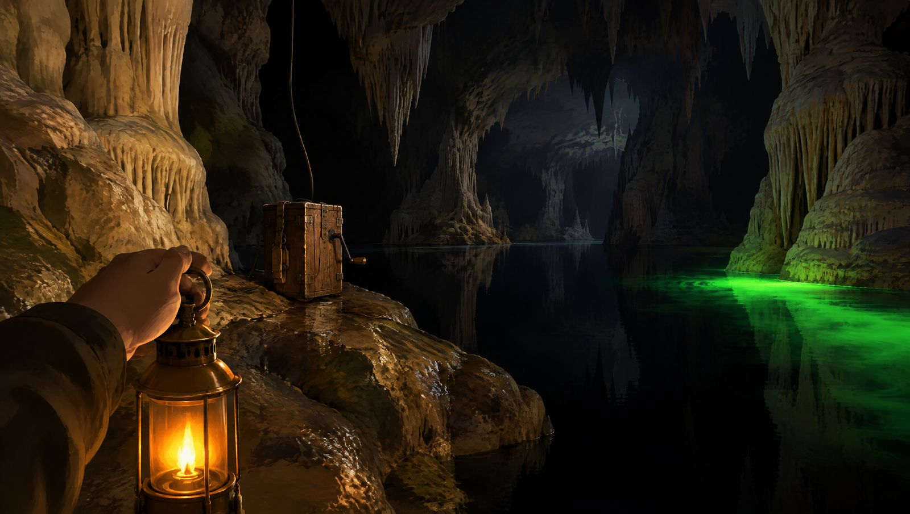
TIMAVO comincia con un telefono che squilla dove non dovrebbe. Novembre 1911, Carso triestino: due mesi prima sette uomini sono scesi in un abisso a cercare il fiume che sparisce nella roccia e riemerge in mare quaranta chilometri più in là, e sono stati dichiarati morti tutti e sette. Vida Sedmak, la centralinista che li ascoltava dalla superficie, licenziata per aver detto quello che aveva sentito, torna al suo villaggio. All'alba il telefono da campo della spedizione squilla, e una voce roca dice di essere il capo dei Sette.
Il mondo sono due mappe sovrapposte. Sopra c'è un altopiano di doline rosse di sommaco, muretti a secco, lattaie che partono alle quattro del mattino e un castelletto d'acciaio con una lampada rossa visibile da ovunque. Sotto ci sono grotte, laghi neri, un pozzo pieno di spade di bronzo e un fiume che si sente e non si vede. Il meteo sul Monte Nevoso decide quando il fiume cresce. A metà gioco un'esplosione trasforma l'autunno in un inverno di bora: il lago cala, si aprono gallerie nuove e Vida diventa una ricercata.
La trama è un'indagine su una notte di settembre già successa, e ogni risposta porta in un luogo nuovo. Ogni missione chiede una cosa diversa: incrociare testimonianze, camminare travestita fra le lattaie, sviluppare lastre in camera oscura, attraversare una gola prima della piena, entrare in un cantiere sorvegliato, portare fuori un uomo dal buio. La voce al telefono non è quello che sembra, e il gioco premia chi se ne accorge; ma la sorpresa vera è che cosa vuole.
Non si combatte. Si ascolta il fiume con un geofono, si segue l'aria con la fiamma e ci si cala con le scale di corda. Le firme nei barattoli in fondo alle grotte comprano le tecniche di tre scuole: l'Orecchio della centralinista, che inganna al telefono e sente le gallerie dietro la roccia; la Corda della speleologa, che passa dove nessuno passa; la Polvere della minatrice, che apre la roccia e devia l'acqua, ma fa perdere la fiducia del paese. Ogni missione si risolve con ciascuna.
Nascoste nel mondo ci sono le nove bocche cantate da Virgilio, sei delle quali sepolte da un terremoto, numeri da decifrare, una canzone che è una mappa, Rilke che grida nella bora, una lettera per Sant'Arianna e un finale segreto in cui si segue il fiume fino al mare.
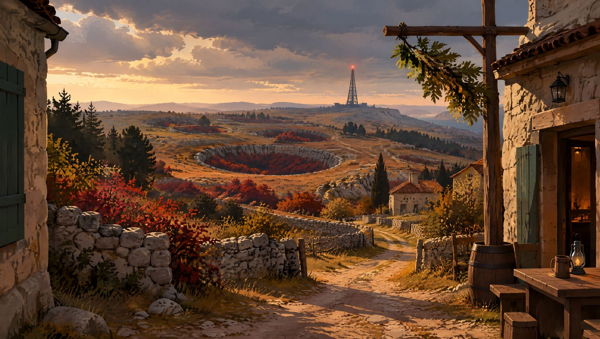
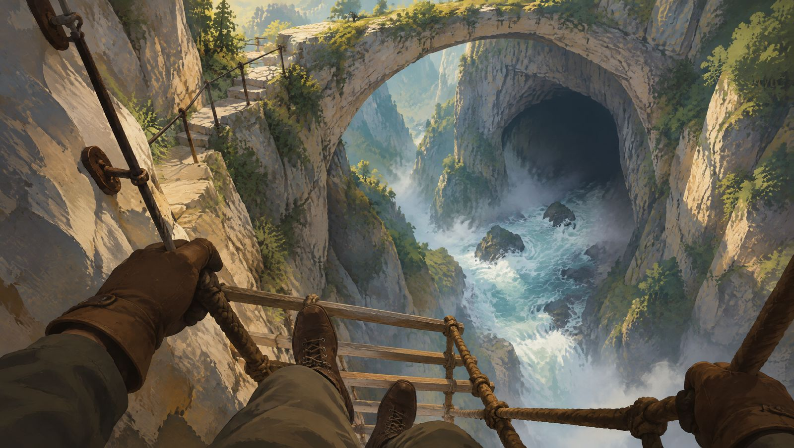
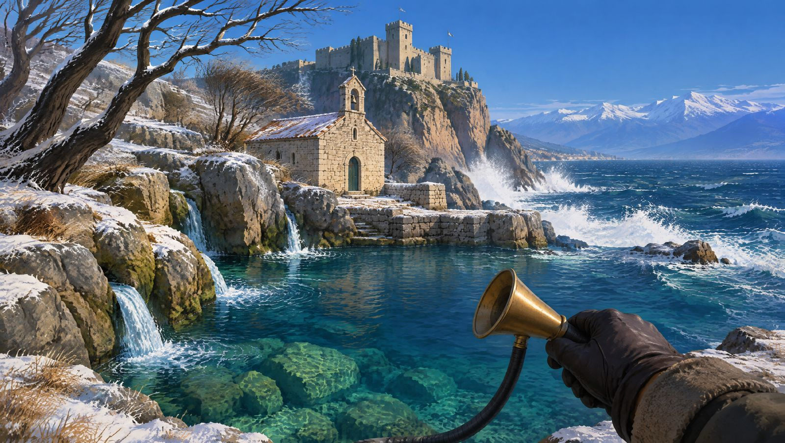
| Criterio | Critica | Produzione | Giocatore e mercato | Media |
|---|---|---|---|---|
| Originalità | 8 | 8 | 9 | 8,3 |
| Mondo | 9 | 8 | 8 | 8,3 |
| Trama | 7 | 8 | 8 | 7,7 |
| Missioni | 8 | 8 | 8 | 8,0 |
| Build | 7 | 7 | 7 | 7,0 |
| Segreti | 9 | 8 | 9 | 8,7 |
| Divertimento | 7 | 6 | 7 | 6,7 |
| Fattibilità | 6 | 4 | 6 | 5,3 |
| Mercato | 7 | 7 | 7 | 7,0 |
| Totale | 7,6 | 7,1 | 7,7 | 7,4 |
TIMAVO ha il mondo e l'identità più forti che si possano chiedere per questa richiesta: un fiume vero e sconosciuto, una protagonista il cui verbo è ascoltare, la piena come orologio e colpi di scena che cambiano il senso della meccanica stessa. Segreti e missioni sono al livello di un indie premiato. La trama però ha ancora dei buchi da sceneggiatura: Furlani raggiungibile nell'atto I, un piano di Ribarič che non regge, la cassetta di Pozzar, il conto delle bocche. In più il colpo di scena più importante è anche il più prevedibile. Con le correzioni indicate, che sono quasi tutte di scrittura e non di produzione, il concept può arrivare a 8,5-9 sulla trama.
È il concept che usa meglio i limiti dello stack: grotte che nascondono il motore, persone ridotte a voci e sagome, niente combattimento, logica a flag testabile. Ma così com'è scritto si appoggia quasi tutto sulle cose più difficili, cioè acqua dinamica con nuoto e piene, una dozzina di modi di muoversi in verticale, audio come fonte principale d'informazione, e su un volume sotterraneo (44 cavità, 1,5 km², finale di 45 minuti) circa doppio del realistico. Con acqua a stati discreti su un grafo, tre controller, ancoraggi e punti deboli disegnati, meno cavità e un test automatico di raggiungibilità per ogni build, l'idea resta intatta e la fattibilità sale a 6-7.
TIMAVO ha l'hook più forte e il mondo più originale che un giocatore possa chiedere: un telefono che squilla da un abisso, un fiume che nessuno ha visto, colpi di scena che rileggono le meccaniche e segreti stratificati fino a un finale segreto che fa venire voglia di completare. Il rischio vero è il minuto per minuto: discese lente, buio, attese meteo e camminate su un altopiano uniforme possono farlo scivolare nel walking simulator, se la verticalità non diventa un piacere fisico e il suono non ha equivalenti visivi. Le build sono pensate bene (orizzontali, esclusive, con costi nel mondo), ma in metà delle missioni la differenza è cosmetica, le soluzioni non tengono conto delle scelte esclusive e la Corda rischia di dominare. Con scorciatoie permanenti, una cavalcatura, il sospetto sulla voce reso giocabile e una matrice missione-build coerente, soddisferebbe pienamente l'utente.
Il Carso triestino nel Litorale austro-ungarico, da novembre 1911 a marzo 1912. È un altopiano di calcare senza una goccia d'acqua in superficie: doline, muretti a secco, pini neri piantati dagli austriaci e sommaco che in autunno colora tutto di rosso. Le donne portano il latte a Trieste a piedi e i villaggi bevono da stagni d'argilla, i kal. Sotto scorre il Timavo, il fiume che a San Canziano sparisce nella roccia e riemerge alle Bocche di San Giovanni di Duino. Nel 1841 Lindner lo ha toccato in fondo all'Abisso di Trebiciano, a 329 metri, ma fra San Canziano, Trebiciano e il mare il suo percorso resta ignoto. Trieste ha sete e muore di tifo, e un Consorzio vuole catturare il fiume prima del 31 dicembre. La geografia reale è compressa senza scrupoli in un mondo continuo di circa 3,5-4 km² in superficie. Sotto c'è una seconda mappa di circa 1 km² di grotte su due livelli, più il grande pozzo verticale dell'abisso. Le due mappe sono collegate da 8 ingressi continui e da una quindicina di pozzi in cui la calata con la corda porta al pezzo di grotta sottostante. Da ogni punto della superficie si vede il castelletto d'acciaio del Consorzio sopra l'Abisso dei Sette, con una lampada rossa accesa tutta la notte e il pennacchio di vapore delle pompe. Dai punti alti si vede anche il Monte Nevoso, l'orologio del gioco: quando la sua cima si copre, sei ore di gioco dopo (dodici minuti reali) il fiume sotterraneo cresce. Sottoterra il punto di riferimento è il fiume stesso, che si sente ovunque e cambia voce con la distanza e la portata. Ogni gruppo di doline ha un punto di riferimento proprio, visibile da duecento metri e annotato per nome nel taccuino: la cappella votiva di San Rocco, il ciliegio isolato, il cippo di triangolazione austriaco, la casita del pastore Bole e la quercia morta con la campanella. In superficie c'è un punto d'interesse ogni 150 metri circa. Il mondo è un villaggio-hub, Gabròvia (in sloveno Gabrovje), più cinque zone, ognuna con una superficie, un sottosuolo e una regola nuova. Il giocatore sa che fra tre anni questo altopiano sarà il fronte dell'Isonzo e queste grotte saranno ricoveri; i personaggi no. Il gioco lo ricorda una volta sola, nell'ultima riga di ogni finale.
Villaggio bilingue di cento anime costruito attorno al kal, lo stagno d'argilla da cui bevono uomini e bestie. Ci sono l'osmiza di Mama Zefa, l'osteria che apre solo quando una frasca di rami pende all'incrocio, la chiesa con la campana incrinata, il casello della Ferrovia Meridionale con due fermate verso la costa e la baracca del telefono della spedizione. In fondo al paese c'è la dolina della ghiacciaia: la casa più bassa è quella della vedova Ana Ribarič, e da un pozzo con l'argano si cala ancora il ghiaccio. Nel 1893 la piena è salita proprio da lì e ha ucciso quattro persone. Alle quattro del mattino la fila delle lattaie parte verso Trieste con i bidoni in testa. Ogni riparo, kal o bivacco del mondo permette di aspettare il prossimo cambio di tempo, ma solo all'osmiza si dorme davvero e si sentono le voci del paese.
Cosa introduce. L'ascolto: con il geofono (un cono di legno e uno stetoscopio) si sente il fiume attraverso la roccia, e un ago di ottone traccia sul taccuino una striscia con direzione e distanza. E le frasche: i rami appesi agli incroci sono la segnaletica del gioco.
Sei gruppi di doline, rossi di sommaco a novembre e ocra d'inverno, ciascuno con il suo punto di riferimento. Ci sono ghiacciaie scavate nella roccia (fra cui la vecchia ghiacciaia di Orlek), il kal abbandonato di Orlek, ripari di pastori, il pozzo di Trebiciano con la scala del 1841, la Grotta Grande con la camera del pendolo dell'astronomo viennese e la scuderia dei cavalli bianchi di Lipizza al margine est. Ogni dolina può essere il tappo di una grotta. Qui il Consorzio sposta le sue torri di trivellazione, e il giocatore le vede cambiare posto.
Cosa introduce. Il respiro delle grotte: le correnti d'aria che escono dalle fessure fanno tremare la fiamma della lampada e muovono il fumo. Seguendole si trovano gli ingressi. Dopo la svolta centrale, nel freddo dell'inverno, le stesse correnti diventano pennacchi di vapore visibili da lontano.
Il canyon in cui il fiume Recca entra nella montagna: pareti di cento metri, un ponte naturale, il villaggio aggrappato al ciglione e le scale scavate nella roccia dalle guide del club tedesco nel 1890, con i loro ancoraggi di ferro ancora piantati. All'ingresso del buio le tacche delle piene sono incise e datate sulla parete: 1826, 1851, 1893. Prima della Mina Grande è la sola via naturale verso il Lago di Mezzo, percorribile a fiume basso.
Cosa introduce. La piena come orologio: l'acqua ha quattro stati (magra, normale, piena, piena grande) decisi dal meteo sul Monte Nevoso. Ogni stato chiude alcuni passaggi e ne apre altri, e in piena ci si lascia sollevare lungo i pozzi allagati fino a gallerie altrimenti irraggiungibili.
La voragine sigillata da una grata dove a settembre è scesa la spedizione. Il pozzo di servizio del 1909 scende accanto all'abisso fino alla stazione intermedia, a meno 180 metri, dove c'è il campo della spedizione con il commutatore del telefono. Oltre la stazione, la vecchia via verso il lago è chiusa da una frana instabile. Attorno c'è il cantiere del Consorzio Acque del Timavo: il castelletto con l'argano a vapore, le baracche degli operai, il deposito di dinamite in una dolina, la baracca del centralino e il vagone-salone dell'ingegner Weiss su un binario morto. I fili del telefono collegano ogni baracca al centralino, e da lì partono verso la ferrovia, la gendarmeria di Sesana e Trieste.
Cosa introduce. Le macchine e la sorveglianza: argani, pompe, ascensori di cantiere e linee telefoniche si possono usare e sabotare. Le guardie fanno turni scanditi dalla sirena del cantiere, alle sei, alle due e alle dieci.
Il cuore sotterraneo. Il Lago di Mezzo è grande come una piazza e nero come l'inchiostro. Il Sifone Nero è il diaframma di roccia che lo separa dal ramo alto sotto la ghiacciaia di Gabròvia. Nella Galleria dei Proteiche vivono i protei bianchi e ciechi che Valvasor nel 1689 chiamò cuccioli di drago. La Sala degli Asciutti è una sala alta e asciutta che, finché il lago resta dodici metri più alto del normale, si raggiunge solo attraverso un ramo allagato del Sifone Nero: un sifone di ottanta metri al buio, senza più sagola, che nessuna apnea del gioco può coprire. Il Pozzo delle Spade sale dalla Sala fino a una dolina vicino al paese: novanta metri verticali, con a metà una strettoia chiamata la Lama e il fondo coperto di spade ed elmi di bronzo gettati come offerta al fiume tremila anni fa. In cima il villaggio lo ha chiuso con una grata di ferro.
Cosa introduce. Il buio e il suono: fuori dalla luce della lampada non si vede nulla. Ci si orienta con la voce del fiume (che si legge anche sulla fiamma e nelle annotazioni del taccuino), con il battito di mani, con le candele lasciate come briciole e con le poche strisce di magnesio, che fanno vedere un'intera sala per un secondo.
Le risorgive del Timavo a San Giovanni di Duino: tre bocche aperte, la chiesa sull'acqua, la grotta del Mitreo romano, il castello sul ciglione, il semaforo marittimo collegato al telefono e il sentiero sulle falesie dove d'inverno la bora soffia a 150 km/h. Più in basso ci sono le vedette del tonno di Santa Croce e il mare, dove qua e là la superficie resta liscia e più fredda perché l'acqua dolce sale dal fondo. Davanti alle Bocche c'è lo scoglio con la colonna romana spezzata.
Cosa introduce. La bora: le raffiche spingono il corpo, si cammina chini e ci si ripara dietro i muretti. Il vento copre il rumore dei passi e delle esplosioni e porta via le voci. In più c'è l'immersione in apnea nelle risorgive.
Realismo stilizzato con la palette del Carso. In autunno: calcare grigio-bianco, sommaco cremisi, erba ocra, pini quasi neri, cielo basso e la luce radente delle quattro del pomeriggio. In inverno la bora chiara: cielo cobalto, aria tersa con visibilità fino alle Alpi Giulie, brina sulle pietre e mare bianco di spruzzi. Sottoterra c'è solo la fiamma ambra della lampada a carburo contro il nero assoluto. L'unico colore saturo e freddo di tutto il gioco è il verde della fluoresceina, il colorante che si versa nel fiume: quando appare in un luogo, il giocatore sa che l'acqua è passata di lì. I materiali sono roccia scolpita dall'acqua (scannellature, colate di calcite, argilla bagnata), ferro e legno del cantiere, lana e lino bagnati, ottone degli strumenti. Il meteo alterna nebbia nelle doline al mattino, bora chiara, bora scura con pioggia gelata, neve rara e la pioggia lontana sul Monte Nevoso, che all'orizzonte si vede come un muro grigio. Un filtro opzionale imita le lastre fotografiche del 1911: grana, bianchi bruciati, vignettatura. La build si vede guardando in basso: i guanti, gli attrezzi alla cintura, la lampada, la scala leggera arrotolata sulla spalla, la commutatrice in mano. È fattibile per quattro ragioni. Pietra, vegetazione e acqua sono le categorie in cui i materiali CC0 scansionati e la generazione procedurale rendono meglio. Le grotte chiudono la vista da sole: pochi oggetti a schermo, la lampada come unica luce con ombre, candele finte come sprite. Le grotte non hanno lightmap ma occlusione ambientale cotta nei colori dei vertici e calcare in proiezione triplanare. La superficie è fatta di forme semplici e ripetibili (doline, muretti, pini) adatte all'instancing, e il passaggio dall'autunno all'inverno è solo shader: LUT di colore, parametri della vegetazione e maschera di brina e neve secondo la pendenza.
Vida Sedmak, 24 anni, nata a Gabròvia, centralinista alla Centrale telefonica di Trieste. Parla sloveno, italiano, tedesco e triestino. In città la chiamano la carsolina, al villaggio quella che è andata via. A settembre era l'operatrice del telefono di superficie della Spedizione dei Sette. Il 19 settembre, al quadro, ha sentito l'ingegner Weiss dire a Furlani «Risalite. Nessuno parli», e ha taciuto. La notte del 20 ha sentito Furlani chiedere le scale e il geometra Ribarič rispondere «Vengo». Poi le voci di sotto si sono spente di colpo, mentre il tratto fino alla stazione friggeva ancora. Ha capito che la linea l'avevano staccata alla stazione e non la piena, ma per due giorni non l'ha detto a nessuno, per tenersi il posto. Quando l'ha detto al giornale, il Consorzio l'ha licenziata e il giornale l'ha chiamata una ragazza suggestionabile che confonde il fruscio con le voci. Non è una prescelta e non ha poteri. Ha un orecchio allenato a riconoscere duecento voci e una conoscenza delle grotte che viene dall'infanzia, quando si scendeva nelle ghiacciaie a prendere il ghiaccio. Il suo arco: è tornata per espiare quel silenzio, e proprio per questo vuole così tanto che la voce al telefono sia Furlani da smettere, per un po', di ascoltarla davvero. Il gioco la porta da chi tace per tenersi il posto a chi decide chi parla con chi. Non la vediamo mai. La sentiamo nelle annotazioni del suo taccuino, scritto in tre lingue che si mescolano, e nelle poche frasi che dice al telefono. Il suo verbo è ascoltare: il gioco intero è imparare a sentire un fiume che nessuno ha visto.
Capo della Spedizione dei Sette, speleologo triestino del club italiano, ufficialmente morto il 20 settembre 1911. Vuole uscire solo con le prove in mano, e non da uomo comprato.
Come lo vedi. Una voce nel buio, con la lampada spenta per risparmiare il carburo. Al lampo di magnesio si vedono una sagoma avvolta in una coperta militare, le mani fasciate e il riflesso degli occhiali. Durante il trasporto è un fagotto legato a una barella che dà indicazioni dal buio.
È vivo e da settembre sta nella Sala degli Asciutti con una gamba rotta e saldata male. Con la barella non passa dalla Lama, e il villaggio lo nutre di nascosto. Nel 1909, pieno di debiti, ha venduto al Consorzio il primo rilievo dell'abisso, con la nota sul punto debole del Sifone Nero: è lui l'origine del pericolo da cui ora vuole salvare il paese. Il rilievo completo lo ha misurato con Stanko prima che il ragazzo uscisse; da allora fa i calcoli a memoria, a lume di candela. Il 30 dicembre ha sentito le campane sul lago e ha capito che qualcuno veniva usato.
Direttore del Consorzio Acque del Timavo, idraulico viennese. Vuole l'acqua per Trieste prima di un'altra estate di tifo, e nell'atto II vuole Vida di nuovo al suo centralino: le offre il posto con lo stipendio doppio e la denuncia ritirata.
Come lo vedi. Una sagoma dietro il vetro smerigliato del suo vagone-salone e la brace del sigaro. Parla solo al telefono, anche quando è a dieci metri: è l'uomo che non apre mai la porta.
Non è cinico: sua figlia è morta di tifo a Trieste nel 1908 per l'acqua cattiva. Ma il Consorzio è finanziato in segreto dallo Stabilimento Tecnico Triestino, che nel cantiere San Marco ha varato la corazzata Viribus Unitis e ne prepara altre: gli servono acqua dolce per le caldaie e i bacini di carenaggio. La scadenza del 31 dicembre è il calendario del cantiere navale, non quello della città. È stato lui a decidere di non mandare soccorsi e a nascondere Ribarič.
Geometra del Consorzio, settimo uomo della spedizione, ufficialmente annegato alla stazione intermedia. Figlio di Gabròvia andato via come Vida. Vuole salvare la carriera che ha pagato con sei uomini, e poi, quando rifà i calcoli, salvare la casa di sua madre.
Come lo vedi. Una voce filtrata dal telefono, roca e paziente. Da lontano è un uomo in impermeabile dietro un teodolite sul ciglio di una dolina, sempre di spalle. Su una lastra fotografica è una figura bruciata dal magnesio che esce dalla grata.
La notte del 20 settembre ha risposto «Vengo», è risalito da solo, ha firmato per abitudine la colonna di risalita del barattolo e ha staccato la spina del tratto inferiore per non sentire più le richieste di aiuto. Il Consorzio lo ha nascosto a Vienna. A fine ottobre è tornato di notte alla stazione per raschiare la sua firma e ha rimesso la spina per ascoltare se sotto c'era qualcuno. È lui la voce che al telefono si spaccia per Furlani e fa appendere a Vida le campane che servono a puntare la Mina Grande. Pensa nelle unità del catasto franceschino, il Klafter, e prima di leggere un numero si schiarisce la gola due volte. Sua madre Ana vive nella casa più bassa della dolina della ghiacciaia, la prima che la piena di marzo inonderebbe.
Padrona dell'osmiza di Gabròvia e voce del consiglio del villaggio. Vuole che Furlani resti sotto finché non ha finito il rilievo che farà pagare il Consorzio: il debito lo deve saldare con le prove, non con le scuse.
Come lo vedi. Sempre girata verso il focolare: mani che tagliano il pane, un fazzoletto nero, la voce. Nel consiglio notturno è un'ombra fra le ombre proiettate dal fuoco sulle pareti dell'osmiza.
Ha inventato lei le offerte al drago, pane e lardo calati nelle buche, per coprire il cibo mandato a Furlani. Nasconde in casa Lojze Bric, che si è spezzato la schiena quando il villaggio ha provato a issare Furlani con l'argano, e lo fa passare per caduto dal carro. Suo marito è morto nella piena del 1893: sa meglio di chiunque cosa succede se il fiume risale.
Guida di 15 anni della spedizione, nipote di Zefa, ufficialmente morto. Vuole tornare giù a prendere i corpi dei cugini Pepi e Tone Žerjal, perché il parroco non seppellisce chi non c'è.
Come lo vedi. Una lattaia più bassa delle altre nella fila dell'alba. Da vicino è solo una voce che sussurra in sloveno a una capra di nome Mica, una voce che Vida conosce: a settembre era lui che leggeva le misure all'apparecchio del lago. Disegna a carboncino su un quaderno di scuola.
È uscito l'1 ottobre risalendo il Pozzo delle Spade dietro il respiro della grotta. Prima, nuotando nel ramo allagato, aveva recuperato dal deposito del lago i viveri, la macchina di Pozzar e il mulinello idrometrico, e con Furlani aveva misurato tutto il rilievo. Da allora parla solo sloveno e solo alle bestie. Si nasconde fra le lattaie con scialle e bidone in testa. La notte del 20 settembre era lui all'apparecchio del lago quando Ribarič ha risposto «Vengo»: è l'altro testimone di quella notte, oltre a Vida.
Comandante della stazione di gendarmeria imperiale di Sesana. Vuole andare in pensione a primavera con la coscienza a posto e l'altopiano tranquillo.
Come lo vedi. Il cappello con le piume di gallo nero, la lanterna, la mantella. Il personaggio che vediamo meglio è il suo cane Hektor, un grosso cane da pastore carsolino.
Non sa che la notte del 20 settembre il suo appuntato Kranjc ha accompagnato Ribarič, vivo, al treno di Vienna per conto di Weiss. Quando lo scopre si vergogna. Se gli si portano prove vere (le lastre, il rilievo, la testimonianza di Stanko) può scegliere di non vedere, oppure di arrestare Weiss.
Astronomo dell'Osservatorio di Vienna: dentro la Grotta Grande misura con un pendolo orizzontale le maree della crosta terrestre. Vuole solo che il suo pendolo smetta di oscillare male.
Come lo vedi. Non esce mai dalla camera del pendolo, sigillata per tenere costante la temperatura. Gli si parla attraverso un tubo acustico di ottone: una voce metallica e gentile.
I suoi dati contengono, senza che lui lo sappia, il battito delle piene sotterranee: bastano per prevedere al minuto la piena di marzo.
Madre di Vida, lattaia. Vuole che la figlia riparta per Trieste prima di finire nei guai.
Come lo vedi. Una delle sagome nella fila delle lattaie. Di notte è una voce dietro la porta di casa chiusa a chiave, che non si apre finché Vida non ha capito.
Sapeva fin da ottobre che Furlani era vivo e lo ha nascosto alla figlia, che lavorava per la linea del Consorzio. Non è una santa: ha taciuto per proteggere il villaggio prima ancora che Vida, come Vida ha taciuto per tenersi il posto. È lo specchio della figlia.
Novembre 1911. Vida torna a Gabròvia senza lavoro. Il villaggio la guarda storto, il Consorzio ha sigillato l'abisso e da fine ottobre il telefono nella baracca della spedizione squilla da solo: in paese dicono che chiamano i morti. All'alba del primo giorno squilla di nuovo. Vida risponde e sente una voce roca, sepolta nel fruscio: «Vida. Sono Furlani. Il fiume è più alto. Non scendete da qui. Cercate il verde». Poi la linea muore. Tutti i Sette sono stati dichiarati morti da due mesi. La prima annotazione del taccuino è già un dubbio: «È la sua voce. Ma respira in un altro posto».
Autunno, con il sommaco rosso. La prima missione porta Vida alla stazione a meno 180 metri, dove trova la spina del tratto inferiore staccata e poi rimessa e, nel barattolo, una firma di risalita raschiata con il coltello: qualcuno è tornato su, e non doveva risultare. Da lì si aprono quattro piste parallele, da seguire in qualsiasi ordine, ognuna con un verbo diverso. IL VERDE: dove è uscita la fluoresceina versata da Furlani il 19 settembre? LA LATTAIA MUTA: nella fila dell'alba c'è una figura che scappa quando la si guarda. IL RESPIRO DEL DRAGO: Zefa dice che le buche soffiano dove prima non soffiavano. LE LASTRE: alle Bocche il parroco di San Giovanni conserva una cassetta di Pozzar portata dal fiume. Tre piste su quattro bastano per scendere nella Gola di San Canziano a fiume basso. Sotto le piste corre un'indagine sola: chi è risalito il 20 settembre? A metà dell'atto Vida sa già che Stanko è vivo e che Ribarič è uscito dalla grata quella notte. Intanto la voce torna, nelle buche dove passa il cavo, e la guida verso il Lago di Mezzo. Dice di essere cieco e le chiede di appendere campane da mucca in fondo alle discese e di suonarle a ore precise, «così so dove sei». Il taccuino ha una pagina, «Cose che non tornano», che si riempie da sola di ciò che il giocatore nota: la voce misura in tese, i Klafter del catasto, mentre Furlani scriveva in metri; conosce i numeri delle trivellazioni del cantiere; non chiede mai di Stanko; prima di ogni numero si schiarisce la gola due volte, un tic che Vida aveva annotato a settembre nel registro di turno accanto a un altro nome. E dopo ogni campana la torre di trivellazione del Consorzio compare in un'altra dolina, più vicina. Il Consorzio avanza a ogni missione completata: torri nuove, operai in più, il giornale che conta i giorni alla scadenza del 31 dicembre.
La notte del 30 dicembre Vida attraversa il Lago di Mezzo con la barca di tela della spedizione per appendere la terza campana. Il giocatore che ha segnato almeno due cose che non tornano può appenderla dove vuole lui invece che dove dice la voce. La voce, per la prima volta senza fruscio, dice: «Grazie, signorina Sedmak. Ha fatto quello che sette uomini non hanno saputo fare». Venti secondi dopo esplode la Mina Grande. Che la voce fosse di Ribarič il giocatore attento lo sospettava; la rivelazione è che cosa voleva: le campane erano i punti con cui i geofoni del cantiere hanno scelto quale dei due fori carichi far saltare. Se la campana era fuori posto salta il foro sbagliato. Ribarič lo ammette («Lei sospettava, signorina, e ha suonato lo stesso»), la galleria raggiunge il fiume solo in parte e il Sifone Nero si incrina di meno. La svolta però avviene comunque: la piena del crollo insegue Vida per le gallerie, e lei esce in un mondo diverso. È inverno e soffia la bora. Il lago è sceso di dodici metri: vecchie vie allagate, nuove gallerie asciutte, la via della Gola chiusa dalla frana. Il kal di Gabròvia si è svuotato in una notte, le Bocche sono torbide e nel freddo dalle buche escono pennacchi di vapore che mostrano ingressi prima invisibili. Il Consorzio denuncia Vida per effrazione e manomissione delle linee, e i gendarmi dichiarano l'altopiano zona riservata, con posti di blocco, ronde con i cani e coprifuoco. La stessa notte Weiss la chiama: le ridà il posto al centralino, con lo stipendio doppio, se torna a Trieste e tace.
Inverno 1912. Vida è complice e ricercata, e l'atto si apre su due fronti in qualsiasi ordine. Al centralino del Consorzio scopre le chiamate notturne di Ribarič, il contratto con lo Stabilimento Tecnico Triestino, la data della Mina di Marzo e un foglio di calcoli rifatti a mano, con una casa segnata a matita in fondo alla dolina della ghiacciaia. Dalla vedetta sopra il villaggio legge i fumi della bora e trova, sotto un pennacchio, la grata di un pozzo e un cesto di pane ancora caldo. Le grotte asciutte scoperte dal calo del lago diventano la via dei ricercati, che passa sotto i posti di blocco. L'offerta di Weiss resta aperta per tutto l'atto ed è una tentazione vera: accettarla apre il centralino da dipendente, ma il villaggio vede Vida salire sul carro del Consorzio e le frasche smettono di risponderle. Un consiglio notturno all'osmiza, con almeno tre prove su cinque sul tavolo, fa crollare il silenzio del paese: Furlani è vivo, lo nutrono da tre mesi, le frasche che Vida ha seguito per tutto il gioco sono il loro codice e sua madre lo sapeva. Zefa le dà la chiave della grata. Vida scende il Pozzo delle Spade e trova Furlani, che le confessa di aver venduto lui il primo rilievo e le dice: «Il 30 dicembre ho sentito le campane sul lago e ho capito che stavano usando qualcuno». Il rilievo completo dice che la Mina di Marzo romperà il Sifone Nero e che la piena di primavera salirà in paese. Vida porta fuori Furlani di notte: sul lago, sotto le lampade ad arco degli operai, poi attraverso la crepa che la Mina Grande ha aperto nel Sifone Nero, fino all'argano della ghiacciaia di Gabròvia. La crepa che minaccia il paese è anche la sua via di salvezza. A metà strada il telefono gracchia: è Ribarič, con la sua voce.
Fine inverno. Tutto converge sulla costa e sul telefono. L'unica via di sfogo per l'acqua sono le sei bocche sepolte, e Vida le cerca incrociando Virgilio, l'iscrizione del Mitreo, il diario della scuderia di Lipizza, la mappa di Ribarič se si è fidata di lui e il colorante che le fa brillare di verde. Poi, nella notte della Mina di Marzo, si siede al centralino del Consorzio e fa la cosa che sa fare meglio: decide chi parla con chi. Sul quadro ci sono Weiss, lo Stabilimento, il Luogotenente a Trieste, il brigadiere Petermandl, il villaggio attraverso il telefono della baracca e Ribarič, che può ancora cambiare parte. All'alba la piena di marzo arriva dal Monte Nevoso, e Vida scende un'ultima volta per aprire le bocche, fermare la mina o accompagnare il paese fuori dalla dolina, a seconda di quello che ha costruito. È lei, che a settembre ha taciuto, a far parlare tutti.
1) Intorno al 1000 a.C. le genti del Carso conoscono una via asciutta fino al Lago di Mezzo. Gettano spade ed elmi di bronzo nel Pozzo delle Spade come offerta al fiume e incidono sulla roccia le tacche delle piene più alte. 2) In età romana il Timavo esce in mare da nove bocche: Virgilio scrive «unde per ora novem vasto cum murmure montis» (Eneide I, 245). Sopra le risorgive c'è un santuario di Diomede dove si allevano cavalli bianchi, e una grotta è dedicata a Mitra. 3) Nel gennaio 1348 il terremoto di Villaco fa franare la costa e seppellisce sei delle nove bocche; restano aperte tre. Una delle sei sepolte finisce sotto il mare e continua a trasudare acqua dolce. Da allora, quando il fiume è in piena, l'acqua non trova abbastanza uscite e risale nelle doline. 4) Nel 1689 Valvasor scrive che le piene portano fuori dalle grotte dei cuccioli di drago: sono i protei. Nasce la leggenda del drago che respira dalle buche. 5) Nel 1841 Lindner raggiunge il Timavo in fondo all'Abisso di Trebiciano cercando acqua per Trieste: troppo profondo per pomparlo. 6) Marzo 1893: la piena risale il pozzo della ghiacciaia di Gabròvia fino alla dolina e uccide quattro persone, fra cui il marito di Zefa. Max Ribarič, che ha otto anni, viene portato fuori dal padre dalla casa più bassa. 7) 1906-1909: Trieste ha sete e nel 1908 il tifo uccide anche la figlia dell'ing. Weiss. Nasce il Consorzio Acque del Timavo, con capitali viennesi e triestini e un finanziamento segreto dello Stabilimento Tecnico Triestino, che ha bisogno di acqua dolce per le corazzate. La concessione ha una condizione: dimostrare entro il 31 dicembre 1911 di aver raggiunto il fiume sotto l'altopiano. 8) 1909: Guido Furlani, indebitato, vende a Weiss il primo rilievo dell'Abisso di Lèse, poi chiamato Abisso dei Sette. Una nota a margine avverte che un diaframma sottile, il Sifone Nero, separa il Lago di Mezzo da un ramo alto che finisce sotto la ghiacciaia di Gabròvia. Weiss archivia la nota. Nello stesso anno il giovane geometra Ribarič, nei sondaggi sulla costa, trova l'ottava bocca sepolta e la annota nel suo libretto in Klafter, perché il Consorzio disegna sui fogli del catasto franceschino (in Klafter, scala 1:2880). Il Consorzio la tace: riaprirla ridurrebbe l'acqua da catturare. 9) Agosto 1911: una squadra del Consorzio trivella di notte sotto il fondo del kal abbandonato di Orlek, nelle Doline Rosse. Lo stagno si svuota e il villaggio dà la colpa al drago. 10) 18 settembre 1911: scende la Spedizione dei Sette: Furlani, il geologo Moos, il fotografo Arrigo Pozzar, le guide Pepi e Tone Žerjal, il quindicenne Stanko Kocjan (loro cugino) e il geometra Ribarič. La linea va dalla baracca di superficie, dove c'è Vida, al commutatore della stazione intermedia a meno 180 metri, dove resta Ribarič, e da lì all'apparecchio del lago. Al barattolo della stazione ognuno firma la discesa, e per tradizione si firma di nuovo alla risalita. Pozzar lascia alla grata una seconda macchina con il lampo di magnesio, armata con un filo sulla scala per fotografare il rientro. 11) 19 settembre: al lago Furlani versa la fluoresceina e misura il Sifone Nero con il mulinello idrometrico Woltmann. Telefona a Weiss, attraverso il quadro di Vida, che la galleria lì non si può fare: il diaframma si romperebbe e la piena salirebbe a Gabròvia. Weiss risponde: «Risalite. Nessuno parli». Vida tace. Furlani resta un giorno in più per finire le misure: vuole le prove contro Weiss. 12) 20 settembre: una pioggia sul Nevoso porta una piena improvvisa. Dal lago Furlani chiede a Ribarič di calare le scale. Ribarič risponde «Vengo», poi risale da solo, firma per abitudine la colonna di risalita e stacca la spina del tratto inferiore. Vida sente le voci di sotto spegnersi mentre il tratto fino alla stazione frigge ancora. Alle 23.40 Ribarič esce dalla grata e il magnesio di Pozzar scatta. L'appuntato Kranjc lo porta da Weiss. Weiss decide di non mandare nessuno dentro la piena: è pericoloso, e le misure di Furlani affonderebbero la concessione. Sigilla l'abisso, dichiara morti tutti e sette e fa accompagnare Ribarič al treno notturno per Vienna. A Vida ordina di tornare a casa e tacere; lei tace due giorni, poi parla al giornale e viene licenziata. La seconda macchina di Pozzar torna alla vedova a Opicina con il resto dell'attrezzatura, con la lastra mai sviluppata. 13) Sotto, Moos e Pozzar annegano. I cugini Žerjal sopravvivono un giorno in una sacca d'aria aspettando soccorsi che non arrivano, e prima di morire incidono un messaggio sulla roccia. Furlani, con una gamba rotta, e Stanko si rifugiano nella Sala degli Asciutti. Il lago, salito di dodici metri, la isola dietro un ramo allagato del Sifone Nero. 14) 21-30 settembre: Stanko attraversa più volte in apnea il ramo allagato, lungo la sagola posata dai cugini il 19 e respirando in una campana d'aria a metà strada che conosce solo lui, e porta dal deposito del lago viveri, carburo, la borsa di Pozzar con la macchina e il mulinello Woltmann. Su istruzione di Furlani collega il mulinello all'albero del magnete dell'apparecchio del lago: quando il fiume cresce, il telefono di superficie suonerà, come allarme per Gabròvia. Non sanno che la spina è staccata. Il 30 settembre la corrente strappa la sagola: da allora il ramo è un sifone di ottanta metri al buio che nessuno può passare. Insieme misurano la Sala, il ramo e il Pozzo delle Spade: è il rilievo completo. 15) 1 ottobre: Stanko segue l'aria, risale il Pozzo delle Spade passando la Lama ed esce in una dolina vicino a Gabròvia. Zefa lo nasconde e il villaggio tace, per paura che il Consorzio dia la colpa alle sue guide. Stanko smette di parlare alle persone. Il villaggio prova a issare Furlani con l'argano della ghiacciaia, ma la barella non passa dalla Lama e Lojze Bric cade e si spezza la schiena. Il pozzo viene chiuso con una grata, ufficialmente per i bambini, e Zefa tiene la chiave. Da allora il villaggio nutre Furlani con le offerte al drago e si organizza con un codice di frasche agli incroci (ramo capovolto per i gendarmi, nodi sullo spago per i giorni). Nei cesti scende anche qualche biglietto: dicono a Furlani dove è uscito il verde (le Bocche, il kal di Orlek, il pozzo di Aurisina). Furlani chiede silenzio finché non avrà finito i calcoli, perché senza prove la parola di un uomo comprato non vale niente. Zefa è d'accordo. 16) 14 ottobre: con l'ultima lastra di Pozzar, Furlani fotografa il Pozzo delle Spade come prova della via d'uscita e scrive la data sulla carta della lastra. Sigilla la cassetta con la cera in una latta di carburo e la affida al rivolo in fondo alla Sala, sapendo dai biglietti che quell'acqua esce alle Bocche. I pescatori la trovano e il parroco di San Giovanni la conserva. 17) Fine ottobre: Ribarič torna di nascosto da Vienna su richiesta di Weiss, scende di notte dal pozzo di servizio fino alla stazione, raschia con il coltello la sua firma di risalita e rimette la spina per ascoltare, perché in paese si parla di offerte al drago. Sente solo il fiume. Al cantiere collega il centralino in parallelo alla linea dell'abisso, nella cassetta di giunzione accanto alla grata. Da quel momento, a ogni piena, il mulinello fa squillare il telefono della baracca, e il villaggio crede che chiamino i morti. 18) Novembre 1911, inizio del gioco: al Consorzio mancano sei settimane. La frana oltre la stazione è instabile: un minatore è morto provandoci e gli altri si rifiutano, e dopo i Sette nessun carsolino scende per il Consorzio. Weiss fa trivellare dalla superficie un pozzo di captazione verso il lago, ma il carso inganna e i fori mancano il bersaglio. Per puntarli i geofoni del cantiere devono sentire un suono che venga dal lago. Serve qualcuno che conosca le vie delle ghiacciaie e la Gola a fiume basso, che risponda a quel telefono e che non vada dai gendarmi: Vida. All'alba del primo giorno di gioco una piena fa squillare il telefono; Ribarič alza in parallelo al cantiere e parla imitando Furlani, con la voce resa roca dal filo. 19) Novembre-dicembre: la voce fa appendere a Vida tre campane e le fa suonare a ore precise: due in fondo a due discese diverse, la terza sul lago. Dopo ogni campana la torre di trivellazione si sposta nelle Doline. Due fori, A e B, sono già caricati: la terza campana decide quale far saltare. 20) Notte del 30 dicembre: terza campana, e venti secondi dopo la Mina Grande. La galleria di captazione raggiunge il fiume, il lago scende di dodici metri, il ramo allagato della Sala si svuota e il Sifone Nero si incrina. La scossa crepa il fondo d'argilla del kal di Gabròvia, che si svuota in una notte. Furlani ha sentito le campane e ha capito che qualcuno veniva usato. 21) Gennaio-marzo 1912: lo Stabilimento chiede più portata e Weiss prepara la Mina di Marzo. Di notte Ribarič rifà i calcoli e segna a matita la casa di sua madre. Furlani calcola che la seconda esplosione romperà il Sifone Nero e che la prima piena di primavera risalirà il pozzo della ghiacciaia dentro Gabròvia. L'unica via di sfogo sono le sei bocche sepolte di Virgilio.
Ascoltare: il geofono sulla roccia, con l'ago che traccia direzione e distanza sul taccuino, la voce del fiume e il telefono. Seguire l'aria con la fiamma, il fumo e il vapore. Leggere il tempo: il Monte Nevoso, il barometro, gli squilli annotati. Tracciare con la fluoresceina, le spore di licopodio e il sale. Calarsi e risalire con scale di corda, corde e argani, e lasciare corde fisse come scorciatoie. Telefonare: il telefono da campo portatile si aggancia alle cassette di giunzione delle linee per chiamare e ascoltare. Illuminare con la lampada a carburo, le candele lasciate come briciole e tre strisce di magnesio di scorta. Battere le mani, per un'eco debole di un secondo. Nuotare e trattenere il fiato per 35 secondi. Aspettare in un riparo il prossimo cambio di tempo. Dopo il consiglio del villaggio: lasciare frasche per mandare messaggi.
Vida si ferma su una dolina e appoggia il geofono: l'ago di ottone segna il fiume a sud-ovest, lontano, e una seconda vibrazione più vicina, un vuoto. La fiamma della lampada si piega verso una fessura fra due massi: lì c'è aria. Si decide come entrare: scala di corda da un ancoraggio, spostare il masso, aspettare che la bora copra il rumore di una piccola carica. Si scende in fretta (venti metri di scala in cinque o sei secondi), si contano i passi, si lascia una candela al bivio. Quando il fiume cambia voce, le gocce sulle pareti tremano, la fiamma sfrigola e il taccuino annota da solo «il fiume sale, circa venti minuti»: è il momento di risalire, più lentamente, con le nocche dei guanti che sbiancano a ogni presa.
Una sessione dura 20-40 minuti. Si sceglie una pista dal taccuino e si raggiunge la zona seguendo frasche e punti di riferimento, a piedi, a cavallo o sul carro del latte. Poi si esplora un sistema di grotte fino al fondo, dove c'è un barattolo con le firme degli esploratori. Firmato il barattolo, il club manda alla stazione una scala fissa per quella grotta, e il ritorno diventa una scorciatoia. Si torna all'osmiza: lì si telefona, si ascoltano le voci del paese, si spendono i Fondi, si legge il barometro per i due giorni successivi e si sceglie se aspettare il bel tempo o la piena. Ogni missione principale completata fa avanzare di un passo i piani del Consorzio e dei gendarmi. Il mondo va avanti con le azioni del giocatore e non con l'orologio, quindi non c'è urgenza finta.
In superficie si va a piedi, sui muretti e sui sentieri, con la bora che spinge e i muretti che riparano. Il carro del latte all'alba collega i villaggi e il treno della Ferrovia Meridionale fa due fermate fino alla costa: sono viaggi veloci, disponibili solo dove esistono davvero, e il treno si vive dal finestrino. Con la secondaria «Il cavallo che beveva» si guadagna la cavalla bianca Bela: in prima persona se ne vedono solo il collo e le orecchie, che si drizzano quando sente acqua sotto la terra. Dopo la svolta le gallerie asciutte collegano le zone sotto i posti di blocco. Sottoterra ci sono tre modi di muoversi. A piedi, con accovacciata e strettoie. In verticale, sempre da ancoraggi visibili, chiodi e spit del 1890 o lasciati da Vida: scale di corda, calata, camino, arrampicata sulle colate chiare, pendolo e teleferica. La discesa è rapida e la risalita lenta, con la fatica che si vede sulle mani. In acqua: nuoto, apnea e risalita galleggiando lungo i pozzi allagati, con la stessa spinta verso il pelo dell'acqua. La barca di tela sul lago, la discesa del fiume in piena e il trasporto della barella sono sequenze guidate con poche scelte vere: sinistra o destra, sosta o velocità.
Non ci sono armi e non si combatte. I pericoli sono l'acqua nei suoi quattro stati, il freddo (che si smaltisce a ogni fuoco di riparo o bivacco acceso con il carburo), le cadute, il buio, il gas di carburo nei vani chiusi e la bora sulle falesie. Ogni bacino sotterraneo ha un rifugio asciutto con risalita garantita. La piena non intrappola mai senza tre segnali chiari (voce del fiume, fiamma, annotazione nel taccuino) e senza un salvataggio automatico. Dopo la svolta ci sono al massimo due o tre ronde di gendarmi, su percorsi fissi scanditi dalla sirena del cantiere e segnalati dalle frasche, viste soprattutto come lanterne. Il solo avversario complesso è il cane Hektor, che segue l'odore lasciato sui sentieri. Lo stealth è obbligato solo al cantiere e nel trasporto di Furlani; il resto dell'altopiano si attraversa con il treno, il carro del latte o passando sotto. La prima cattura è raccontata come una scena: una notte nella cella di Sesana con Petermandl che parla dall'altra parte della porta. Le successive costano tempo e fiducia, e si esce evadendo o facendosi liberare dal villaggio. Tre prove-chiave fanno da boss: la fuga dalla piena della Mina Grande, il cane Hektor nel trasporto e la piena di marzo. Ognuna ha una via per ogni ramo e una con il solo equipaggiamento di base.
Non ci sono icone sulla mappa. Il taccuino di Vida raccoglie le piste, le domande aperte, le testimonianze, gli schizzi delle grotte, gli squilli annotati con l'ora, le previsioni del barometro per i due giorni successivi e le indicazioni scritte rispetto ai punti di riferimento («dalla frasca dell'incrocio di Gabròvia, verso il castelletto rosso, fino al ciliegio isolato: la seconda dolina a sinistra»). Due pagine fisse: «Cose che non tornano», che raccoglie i sospetti del giocatore, e «Chi è chi», con la sagoma di ogni personaggio, tre secondi della sua voce e ciò che Vida sa di lui. Nell'atto I i nomi attivi sono al massimo sei; Stabilimento e Luogotenente entrano solo dopo la svolta, e il Klafter compare solo come un'unità strana su un registro. La carta del club tedesco del 1890 è sbagliata in tre punti, e Vida la corregge a matita. Ci sono una bussola, un orologio da tasca (un'ora di gioco vale due minuti reali), le candele lasciate come segni e il gesso sulle pareti. Ogni suono importante ha un equivalente visibile e i sottotitoli dei suoni indicano la direzione. Si possono attivare un indicatore discreto di direzione e opzioni di comfort: campo visivo, oscillazione della testa, scuotimenti.
Ogni cavità ha un fondo, e sul fondo c'è un barattolo di latta con le firme di chi ci è arrivato: firmarlo vale un Fondo. I barattoli sono 30: 10 nelle sale chiave lungo le missioni e 20 in fondo a pozzi brevi da 5-10 minuti, ognuno con una sola trovata legata a una regola di zona. A questi si aggiungono tre Fondi doppi nascosti nei segreti, per un totale di 33. Diciotto barattoli si raggiungono con qualsiasi build; quattro per ramo si raggiungono solo con quel ramo, oppure con molta fatica senza, così nessun ramo apre più mondo degli altri. La trama da sola ne fa raccogliere circa 16. Le tecniche sono 18 e costano da 2 a 4 Fondi (45 in tutto al netto delle esclusive): con la sola trama si completa quasi un ramo, con tutto si arriva a circa tre quarti. I Fondi sono la reputazione di Vida fra gli speleologi: con più firme i vecchi del club insegnano tecniche e prestano attrezzi, per lettera, al telefono o con pacchi lasciati alla stazione. Fin dall'inizio Vida ha l'equipaggiamento di base: geofono semplice, lampada a carburo, 30 metri di corda, telefono da campo portatile, taccuino, tre strisce di magnesio e il battito di mani. Le tecniche Lampo ed Eco ne sono le versioni potenti. Separati dai Fondi ci sono gli upgrade tangibili guadagnati con le secondarie e i segreti: la lampada con il riflettore, la corda da 50 metri, il geofono di ottone, la bussola che segna l'inclinazione, la cavalla Bela. Le tecniche aggiungono opzioni, non numeri: niente danni, niente punti vita, niente scaling. Ogni missione principale ha una via per ciascun ramo, per entrambe le metà di ogni coppia esclusiva e una via con il solo equipaggiamento di base.
Sapere prima di toccare. L'informazione, la voce e il suono sostituiscono la forza: si passa ingannando le persone e capendo il fiume e la roccia.
Passare dove nessuno passa. Il corpo e l'attrezzatura verticale aprono vie alternative: sopra, sotto, attraverso. Sempre da un ancoraggio vero.
Cambiare il mondo invece di aggirarlo. La chimica del 1911 apre, chiude, illumina e fa scorrere l'acqua dove serve, a un prezzo.
Tre coppie si escludono: Voce d'ufficio o Squillo a distanza, Pendolo o Teleferica, Polvere nera o Sacco d'argilla. Una regola trasversale: chi impara l'Apnea lunga non può portare la vescica di acetilene, perché peso e freddo non stanno insieme, e viceversa. Le scelte si fanno davanti a un maestro e si vedono nell'attrezzatura: il pacco che arriva alla stazione è diverso e, guardando in basso, cambiano guanti, cintura e attrezzi in mano. Per ogni missione principale e ogni coppia esclusiva esiste una via per entrambe le metà; la matrice completa è verificata da un test automatico. Rispecializzazione limitata: una volta per atto si può restituire un attrezzo alla cooperativa di Gabròvia e riavere i Fondi meno uno.
Polvere nera: ogni esplosione si sente su tutto l'altopiano (meno con la bora), alza l'allerta dei gendarmi, cambia il respiro delle grotte vicine e fa perdere fiducia al villaggio, perché chi fa saltare il Carso è come il Consorzio. Con poca fiducia il consiglio dell'atto II chiede quattro prove invece di tre e Zefa saluta più fredda. Voce d'ufficio: ogni inganno fa salire il sospetto del centralino; al terzo il Consorzio passa a una linea cifrata, alcune intercettazioni si chiudono e Ribarič capisce dov'è Vida. Squillo a distanza: dove suona un apparecchio a vuoto, la ronda raddoppia per un giorno. Commutatrice: ogni aggancio fa uno scatto che un operatore attento sente. Corda: dopo la svolta i gendarmi conoscono le vie armate di Vida, e ogni notte una ronda ne sorveglia una. Lampo di magnesio: i protei della Galleria dei Proteiche fuggono dalla luce e una secondaria cambia esito, e Hektor, accecato una volta, abbaia appena sente l'odore del magnesio.
Dopo lo squillo dell'alba, nella baracca Vida ritrova il suo registro di turno di settembre, con le sue annotazioni a margine su ogni voce della spedizione («R.: si schiarisce la gola due volte prima dei numeri»). Poi segue il cavo fino alla grata dell'Abisso dei Sette, sorvegliata da un solo operaio. Nella cassetta di giunzione accanto alla grata nota un secondo filo, nuovo, che va verso il cantiere. Impara il geofono, la lampada e la scala di corda scendendo il pozzo di servizio del 1909 fino alla stazione intermedia, a meno 180 metri: è la prima discesa rapida del gioco, e le scale restano fisse come via armata. Alla stazione ci sono il campo con sei sacchi, la frana che chiude la vecchia via e, dietro, il rombo del fiume. Il commutatore ha la spina del tratto inferiore graffiata, come se fosse stata strappata e poi rimessa. Svolta: nel barattolo ci sono sette firme di discesa del 18 settembre, e nella colonna delle risalite c'è una firma raschiata con il coltello, con il metallo ancora lucido. Qualcuno è tornato su e non doveva risultare. Domande nuove: chi è risalito, e chi ha riaperto la linea? Si aprono le quattro piste dell'atto I. Vie: è il prologo e si gioca con il solo equipaggiamento di base.
Vida raccoglie tre testimonianze sul giorno in cui l'acqua divenne verde: una lattaia che l'ha vista nel pozzo di Prosecco, il registro della stazione di pompaggio di Aurisina con l'ora esatta e la lettera di un pescatore di Duino, che giura di averla vista «fino alle isole della laguna». Disegna le tre linee sulla carta del 1890, e il punto d'incrocio cade sul kal abbandonato di Orlek, nelle Doline Rosse. Svolta: il fondo d'argilla dello stagno è tagliato con attrezzi da trivella, non da un drago, e sotto c'è un buco che soffia, profondo trenta metri, uno dei luoghi in cui la voce chiede di appendere e suonare una campana. Domanda nuova: che cosa cercava il Consorzio sotto uno stagno? Vie: con l'equipaggiamento di base il registro si legge la domenica, quando il casellante è a messa. L'Orecchio, con la commutatrice sulla linea della ferrovia, lo sente leggere gli orari all'ufficio di Trieste nel rapporto della sera. La Corda scende il pozzo di presa della stazione di pompaggio (25 metri, con la scala leggera o in camino) fino al tamburo di carta dell'idrometro, che ha registrato l'ora. La Polvere, con le provette della Fluoresceina doppia, trova la traccia direttamente nell'acqua dei kal delle Doline e salta una testimonianza.
Alle quattro del mattino Vida si mette in fila con le otto lattaie, con scialle e bidone in testa, nel buio blu e nella nebbia. Deve restare nella fascia di distanza giusta dalle altre e non farsi notare dalle lanterne dei carrettieri. Quando la figura bassa si stacca verso la Gola, bisogna seguirla senza perderla, fra i muretti, fino alla casita del pastore Bole, dove la frasca è appesa capovolta. Svolta: nascosta nel riparo, la figura sussurra in sloveno a una capra: «Rekel je: pridem. In ni prišel» («Ha detto: vengo. E non è venuto»). Vida riconosce la voce: è Stanko Kocjan, il ragazzo che a settembre leggeva le misure all'apparecchio del lago. Stanko scappa e lascia cadere una pagina di quaderno con un disegno a carboncino: un pozzo pieno di spade e una scala che sale. Domande nuove: un morto è vivo, e chi aveva detto «vengo»? Da qui Stanko, mai nominato dalla voce, entra fra le cose che non tornano. Vie: con l'equipaggiamento di base si segue a distanza il campanaccio della capra e le frasche. L'Orecchio segue i passi di Stanko con il geofono fine sotto il ciglio della dolina. La Corda taglia la strada scendendo il ciglione con Mani di calcare. La Polvere, quando la figura si stacca dalla fila, la ferma con un lampo: la foto nel taccuino mostra fra quali muretti è sparita.
Zefa dice che il drago respira dove prima non respirava. In un pomeriggio senza vento Vida mappa le correnti d'aria delle Doline Rosse con candele, fumo e fiamma, e vicino alla quercia morta con la campanella trova un soffio nuovo e caldo. Dentro, a meno 60 metri, c'è una trivellazione segreta del Consorzio: l'asta della trivella scende dal soffitto in una sala naturale, e su una cassa c'è il registro dei fori. È scritto in tese, con una nota a stampa: «misure riportate sui fogli del catasto, 1 Klafter = 1,8965 m». Svolta: i numeri del registro sono gli stessi che la voce ha recitato al telefono per indicare dove appendere le campane. Come fa Furlani a conoscerli, lui che scriveva sempre in metri? Se manca ancora una campana, la voce chiede di appenderla in questa sala e di suonarla alle nove: il giorno dopo la torre di trivellazione è in un'altra dolina. Vie: con l'equipaggiamento di base si usa il fumo di tabacco preso all'osmiza e si entra dalla grotta del pastore accanto, più lunga. L'Orecchio sente l'asta della trivella suonare a vuoto e trova con il geofono fine una fessura laterale. La Corda sale in camino lungo il soffio, dalla grotta vicina. La Polvere allarga la strettoia con la Polvere nera (e il soffio cambia per sempre), oppure con il Sacco d'argilla chiude le altre fessure perché il soffio si concentri e mostri la via.
Il parroco di San Giovanni consegna a Vida la cassetta del fotografo, che i pescatori hanno trovato in una latta di carburo sigillata con la cera. Per leggere le cinque lastre Vida le stampa nel laboratorio di Pozzar a Opicina, aperto dalla vedova: luce rossa, bagni, tempi e temperatura. Se sbaglia, l'immagine si brucia ma resta in parte leggibile. Nel laboratorio c'è anche la seconda macchina, restituita dal Consorzio con l'attrezzatura, con una lastra mai sviluppata. Poi bisogna ritrovare il punto esatto da cui sono state scattate quattro lastre: il ponte naturale della Gola, la scala tedesca, una colata di calcite a forma di organo e il campo a meno 180 metri, dove nella foto i sacchi sono sette e oggi sono sei. Svolta doppia. La quinta lastra mostra il Pozzo delle Spade visto dal basso, con l'emulsione fresca e una data a matita sulla carta: «14.X.1911». Qualcuno, sotto, era vivo e ha fotografato dopo la piena. La lastra della seconda macchina, «20.IX, 23.40», mostra un uomo in impermeabile con la fascia del Consorzio che esce dalla grata e, sul bordo, il cappello piumato di un gendarme. Vie: con l'equipaggiamento di base ogni punto di vista ha un'alternativa più lunga, segnata con le candele. L'Orecchio trova con l'Eco la nicchia della colata a organo. La Corda raggiunge il punto alto del ponte naturale con la scala leggera, oppure con il Pendolo o la Teleferica dagli ancoraggi del 1890. La Polvere fissa ogni sala con il Lampo, e il taccuino la sovrappone al negativo.
Con le piste dell'atto I Vida sa da dove passare. Aspetta, leggendo il barometro, che il Monte Nevoso sia sereno, scende le scale del 1890 nella Gola, attraversa il ponte del fiume ed entra nel buio. Lungo il percorso legge le tacche delle piene incise sulla parete. A metà strada le nuvole coprono il Nevoso: dodici minuti dopo il fiume sale, e Vida deve passare per le gallerie alte prima che l'acqua chiuda l'ingresso. Arriva sulla riva nord del Lago di Mezzo, dove c'era il deposito della spedizione. Svolta: lì trova l'apparecchio del lago appeso al cavo, con il mulinello idrometrico che gira nella corrente, legato all'albero del magnete con i lacci di uno scarpone. Ogni squillo era il fiume. Ma qualcuno ha fatto quel nodo dopo la piena, e la capsula del microfono è piena di fango: da lì non ha mai parlato nessuno. Domanda nuova: se la voce non viene dal lago, da dove viene? Al telefono la voce risponde che ha «un filo suo», e il taccuino lo annota fra le cose che non tornano. Vie: con l'equipaggiamento di base si segue la galleria lunga segnata dai paletti di ferro delle guide del 1890, con un rifugio asciutto, la nicchia di Martel, dove aspettare che la piena passi. L'Orecchio prevede le ondate con l'Orecchio del fiume e trova con il geofono la via delle sacche d'aria. La Corda sale la galleria alta in camino, oppure attraversa il fiume con il Pendolo o la Teleferica dagli ancoraggi delle guide. La Polvere chiude con il Sacco d'argilla la fessura che alimenta il ramo basso, che scende di uno stato, oppure apre con la Polvere nera il punto debole del vecchio passaggio di Martel, che aggira il tratto allagato.
La voce chiede a Vida la terza campana sulla riva del Lago di Mezzo, in un punto dato in tese dalla bocca del fiume, da suonare alle undici della notte del 30 dicembre. Vida monta la barca di tela e attraversa il lago nel buio totale, orientandosi con l'eco, la voce del fiume e le candele lasciate sull'acqua sui galleggianti di sughero. Se il giocatore ha almeno due cose che non tornano, il taccuino propone altri due punti, e la campana si può appendere lì. Svolta: la voce ringrazia per nome, senza fruscio, e venti secondi dopo esplode la Mina Grande. Era Ribarič, e le campane servivano a puntare i fori. La seconda metà è una fuga dalla piena del crollo, in gallerie che si riempiono e cambiano stato dietro di lei, fino all'uscita, da un pennacchio di vapore, in un mondo ormai invernale. Vie: con l'equipaggiamento di base le candele lasciate all'andata diventano la via di fuga, e la barca va con la corrente. L'Orecchio disegna il lago con l'Eco e, nella fuga, sente le sacche d'aria. La Corda, nella fuga, sale sopra il livello dell'acqua con Mani di calcare o in camino. La Polvere vede il lago intero per un istante con il Lampo e, nella fuga, apre un sifone secco con la Polvere nera oppure trattiene per mezzo minuto l'acqua dell'ingresso con il Sacco d'argilla.
Ricercata, Vida deve entrare nel cantiere e raggiungere la baracca del centralino, dove ci sono i registri delle linee e il diario delle chiamate. Le sirene dei turni, il cane Hektor e il vagone-salone di Weiss con la luce sempre accesa fanno del cantiere un piccolo labirinto di regole, leggibili in anticipo dalla vedetta. Svolta: nel diario ci sono le chiamate notturne di Ribarič, ufficialmente morto. Nel cassetto di Weiss c'è il contratto con lo Stabilimento Tecnico Triestino, e sulla lavagna la data della Mina di Marzo: il 21. Sotto il tavolo di Ribarič c'è un foglio di calcoli rifatti di notte, con una casa segnata a matita in fondo alla dolina della ghiacciaia di Gabròvia. Domanda nuova: di chi è quella casa? Vie: con l'equipaggiamento di base si entra alle cinque del mattino, nascosti fra i bidoni del carro del latte per la mensa. Se Vida ha accettato l'offerta di Weiss, entra dalla porta come impiegata, e il rischio è farsi vedere mentre copia le carte. L'Orecchio aggancia la commutatrice e allontana la guardia con la Voce d'ufficio, oppure con lo Squillo a distanza fa suonare il telefono del deposito. La Corda scende la parete della dolina con la scala leggera, attraversa il pozzo aperto con il Pendolo dall'ancoraggio del castelletto oppure con la Teleferica lungo il cavo dell'argano, e sale in camino dal pozzo di ventilazione. La Polvere acceca Hektor con il Lampo e copre l'uscita con la Calce, dopo aver fatto saltare con la Polvere nera il vecchio ingresso franato oppure allagato con il Sacco d'argilla la sala pompe, dove corrono le guardie.
La mattina più fredda dell'inverno, con la bora chiara, l'altopiano fuma: dalle buche esce il vapore tiepido delle grotte. Vida sale sulla vedetta sopra Gabròvia e segna sul taccuino i pennacchi rispetto al castelletto, alla chiesa e al Nevoso, poi deve raggiungerli prima delle undici, quando il sole li scioglie. Svolta: sotto il pennacchio più vicino al paese c'è una dolina chiusa da una grata di ferro con il lucchetto, e attraverso le sbarre scende una fune con un cesto: pane ancora caldo, lardo, una bottiglia dell'osmiza di Zefa e due candele. Le offerte al drago hanno qualcuno che le mangia, e il vapore viene da una sala grande. Vie: con l'equipaggiamento di base si triangolano i pennacchi dalla vedetta e li si raggiunge a piedi o con la cavalla. L'Orecchio distingue con il geofono fine i pennacchi che vengono da sale grandi e sente vibrare la fune del cesto. La Corda raggiunge i pennacchi lontani scendendo e risalendo le pareti delle doline con Mani di calcare. La Polvere scioglie con l'acetilene il ghiaccio negli ingressi, oppure, senza vescica, fissa con il Lampo dalla vedetta tutto il campo dei pennacchi e lo confronta con calma.
Di notte, nell'osmiza chiusa, il consiglio del paese siede attorno al fuoco. Vida deve mettere sul tavolo le prove nel giusto ordine. Ce ne sono sei possibili: il fondo tagliato del kal di Orlek, la lastra del 14 ottobre, il cesto della grata, il diario delle chiamate di Ribarič, il bidone in più (dalla secondaria) e la mappa delle frasche capovolte segnate sul taccuino. Ne bastano tre; quattro se il villaggio si fida poco per le troppe esplosioni. Le prove sbagliate fanno chiudere i presenti, quelle giuste aprono altre domande. Svolta: Zefa ammette che Furlani è vivo e che lo nutrono da tre mesi, Stanko conferma con un disegno, le frasche si rivelano un codice e, dalla porta chiusa, la madre di Vida dice che sapeva. Zefa dà a Vida la chiave della grata, e da quel momento Vida può lasciare frasche per mandare messaggi al villaggio. Fallire non blocca: se il confronto va male, Stanko lascia sulla soglia la chiave e il suo quaderno. Vie: non dipende dalla build ma da ciò che si è trovato; le prove vengono da piste diverse, e ogni build ne raggiunge almeno quattro.
Con la chiave della grata e il quaderno di Stanko, che segna appigli e soste («la Lama si passa sul fianco destro, senza zaino, buttando fuori l'aria»), Vida scende i novanta metri del pozzo dove riposano tremila anni di offerte. A ogni sosta la luce rivela un pezzo della parete: le tacche delle piene incise dagli antichi, e una più alta di tutte, all'altezza della ghiacciaia di Gabròvia. Sul fondo, nella Sala degli Asciutti, c'è Furlani, vivo. Svolta: le racconta di aver venduto lui, nel 1909, il primo rilievo al Consorzio, e le mostra il rilievo completo misurato con Stanko. La Mina di Marzo romperà il Sifone Nero e la piena di primavera salirà in paese; l'unico sfogo sono le bocche sepolte nel 1348. Poi aggiunge: «Il 30 dicembre ho sentito le campane sul lago e ho capito che stavano usando qualcuno». Vie: con l'equipaggiamento di base si scende lungo la fune a nodi del villaggio, di sosta in sosta, con le candele. L'Orecchio trova le soste e le tacche con l'Eco. La Corda arrampica in parallelo con Mani di calcare, più in fretta, fino a una cengia con la tacca più alta. La Polvere illumina con il Lampo l'intera parete in un'immagine sola, da confrontare con le tacche della Gola.
Furlani non può passare dalla Lama, ma ora il ramo allagato della Sala si è svuotato. Va portato fuori legato a una barella-barca: dalla Sala alla riva del lago, attraverso il lago sotto le lampade ad arco degli operai del Consorzio (si passa nei cambi di turno scanditi dalla sirena), poi per la crepa che la Mina Grande ha aperto nel Sifone Nero, lungo il ramo alto, fino al pozzo della ghiacciaia di Gabròvia e al suo argano. Furlani non è un compagno da proteggere ma un carico che parla dal buio: «A sinistra c'è un gradino. Qui il ramo canta: aspetta». Vida decide il ritmo, le soste per il freddo e i passaggi. Svolta: a metà strada la linea del telefono gracchia ed è Ribarič, che stavolta parla con la sua voce. Ha rifatto i calcoli, la casa in fondo alla dolina è quella di sua madre, e offre il libretto del 1909 con l'ottava bocca senza chiedere niente. Fidarsi o no cambia l'atto III. All'uscita, nella dolina della ghiacciaia, ci sono la ronda di Petermandl e il cane Hektor. Vie con Hektor: con l'equipaggiamento di base, Vida lascia una frasca al villaggio e alle quattro le lattaie escono: la barella lascia la dolina sul carro del latte, sotto i bidoni (serve un minimo di fiducia del villaggio). L'Orecchio fa suonare con lo Squillo a distanza il telefono della chiesa, dove va la ronda, oppure con la Voce d'ufficio ordina a Petermandl, come «Sesana», di rientrare. La Corda porta la barella sopra la dolina con una Teleferica fra gli ancoraggi dell'argano, oppure con il Pendolo la fa oscillare di cengia in cengia nel pozzo, lontano dal fondo dove aspetta il cane. La Polvere acceca Hektor con il Lampo (e Petermandl se lo ricorderà), oppure copre l'odore e la vista con la Calce viva.
Le sei bocche sepolte si trovano solo incrociando le fonti antiche e il terreno. Ci sono i versi di Virgilio, nella traduzione del maestro o sull'iscrizione rovinata del Mitreo; il diario della scuderia di Lipizza, che dice che i cavalli bianchi bevevano a una fonte che non c'è più; la mappa di Ribarič, se ci si è fidati; e il colorante, che versato nel fiume prima di una piena fa uscire un filo verde dalle crepe della falesia. Vida percorre il sentiero sulle falesie con la bora a 150 km/h, si ripara dietro i muretti e scende in apnea nelle risorgive. Le bocche si contano così: tre sono aperte; delle sei sepolte, la quarta (il Mitreo) e la quinta (sotto la falesia dove si sente il «vasto murmure») sono obbligatorie; la sesta (la fonte dei cavalli) e la settima (la bocca verde) sono facoltative; l'ottava è quella del 1909; la nona è sotto il mare. Svolta: l'altare del Mitreo conta nove bocche e ne mette una «sub undis». E nel registro dei sondaggi del 1909 un foro sulla costa porta la nota «acqua dolce, non segnalare»: il Consorzio conosceva dal 1909 una soluzione più economica e l'ha taciuta. Vie: con l'equipaggiamento di base bastano il colorante prima di una piena, il testo di Virgilio e il sentiero dei muretti. L'Orecchio sente l'acqua dietro la roccia con il geofono fine. La Corda scende le falesie con la scala leggera o con Mani di calcare. La Polvere libera le bocche con la Polvere nera sui punti deboli, oppure con il Sacco d'argilla devia l'acqua di una bocca aperta per scoprire quella sepolta accanto, e con la Fluoresceina doppia vede quali bocche comunicano.
Prima metà: nella notte della Mina di Marzo Vida entra nel centralino del Consorzio con il metodo scelto (o da impiegata, se ha accettato) e si siede al quadro. Ogni linea è un nodo: Weiss, lo Stabilimento, il Luogotenente a Trieste, il brigadiere Petermandl, il giornale, l'astronomo, il villaggio attraverso il telefono della baracca e Ribarič. Ogni prova è una spina da inserire: il rilievo di Furlani, i dati del pendolo, la testimonianza di Stanko, il messaggio dei cugini Žerjal, le lastre, il libretto del 1909. Le annotazioni di Vida anticipano chi reagirà a cosa («Weiss cede ai numeri, non alle persone»; «Petermandl crede solo a chi ha visto»). I collegamenti significativi sono circa otto, ognuno con una conseguenza leggibile. Seconda metà: all'alba la piena arriva dal Monte Nevoso e Vida scende un'ultima volta. Usa tutto quello che ha imparato: la voce del fiume per sapere quanto tempo resta, il colorante per mostrare la via all'acqua, le corde e le vie armate, le frasche per far salire il paese. Apre le bocche, ferma la mina o accompagna il paese fuori dalla dolina, a seconda di quello che ha costruito. Vie: con l'equipaggiamento di base si usano le frasche, le candele e le vie armate lasciate nel corso del gioco. L'Orecchio conta i minuti con l'Orecchio del fiume e guida il paese per telefono. La Corda raggiunge le bocche dalle falesie per gli ancoraggi. La Polvere apre e devia con le cariche o con i sacchi. Ogni via è completa e porta a tutti e tre i finali.
Introduzione: dopo la Mina Grande una cavalla bianca della scuderia di Lipizza, Bela, scappa ogni notte, e all'alba la si ritrova ogni volta in una dolina diversa, sempre più secca. Sviluppo: seguendo le impronte nella brina, notte dopo notte, Vida capisce che la cavalla annusa l'acqua sotto la terra e si avvicina a un punto preciso.
Sotto l'ultima dolina c'è una sorgente nuova, aperta dalla Mina Grande, e il capo stalliere l'ha coperta con le tavole per venderla al Consorzio. Risoluzione: Vida monta Bela di notte, con la campanella della chiesa al collo, e guida le bestie assetate di Gabròvia fino alla sorgente. Quando l'ha vista tutto il paese, nessuno può più venderla. Bela diventa la sua cavalcatura, e torna nel finale NOVE BOCCHE.
Introduzione: il ghiaccio della ghiacciaia del mercante di Basovizza si scioglie a gennaio. Sviluppo: Vida trova una corrente tiepida che sale dal sottosuolo e, in fondo al pozzo, un fuoco nascosto.
Ci vive un coscritto ungherese di 19 anni scappato dalla caserma di Opicina, che scalda il pozzo per non morire. Risoluzione, l'unica scelta su a chi dirlo fra le secondarie: Vida lo può consegnare a Petermandl (la fiducia dei gendarmi sale e una ronda si allenta), nasconderlo al villaggio (rischio di perquisizioni) o accompagnarlo per le grotte fino al mare, se ha trovato il passaggio del Mitreo. In quel caso lui le lascia la sua bussola militare, che segna anche l'inclinazione.
Introduzione: il parroco di Gabròvia vuole la campana originale, gettata in un pozzo nel 1797 per nasconderla ai soldati di Napoleone. Sviluppo: battendo sulla roccia e ascoltando con il geofono, Vida trova il pozzo che suona; la campana è sul fondo, troppo pesante per l'argano.
Non è la campana della chiesa: è un bronzo romano con l'iscrizione TIMAVO, dal santuario delle Bocche, che i contadini del 1797 avevano preso per la loro, ed è uno dei nove frammenti di Nona sub undis. Risoluzione: Vida la lega a quattro bidoni vuoti del latte e aspetta una piena grande, che la solleva lungo il pozzo fino all'imboccatura. Se è in paese, nel finale suona per chiamare tutti fuori dalla dolina.
Introduzione: una lattaia conta i bidoni ogni mattina e ce n'è sempre uno in più, che nessuno reclama. Sviluppo: Vida segna numeri, ore e percorsi sul taccuino e scopre che il bidone in più non arriva mai a Trieste.
Prima della missione 10 è una prova da portare al consiglio: il bidone in più è il latte per un uomo sottoterra. Dopo, la lattaia, ormai sicura di Vida, le chiede di sostituirla per una notte nella consegna alla grata. Risoluzione: la consegna si fa fra le ronde, con le frasche come orario, e quando Vida torna sua madre le apre la porta per la prima volta e le dice grazie.
Introduzione: in sei barattoli del fondo ci sono lettere fra un esploratore del club italiano e un rivale del club tedesco, degli anni 1884-1893, piene di sfide e di insulti. Sviluppo: per leggerle in ordine bisogna scendere in sei grotte diverse.
I due rivali erano la stessa persona, una guida slovena di Gabròvia che scriveva con due nomi per far litigare i club e farsi pagare da entrambi. Risoluzione: una grafia dà la dolina e l'altra la profondità, e solo mettendole insieme si trova la sua cavità segreta, con l'attrezzatura migliore del 1890: la lampada con il riflettore, che allarga di un terzo il cerchio di luce.
Introduzione: il dottor Wagenknecht, chiuso nella camera del pendolo dentro la Grotta Grande, dice attraverso il tubo acustico che il suo strumento oscilla male e gli guasta le misure delle maree. Sviluppo: Vida confronta i suoi grafici con gli squilli annotati nel taccuino e trova la stessa forma.
Il disturbo non è un guasto: è il battito delle piene, che piega la roccia. Per provarlo bisogna sincronizzarsi: alla prossima piena Vida aspetta l'onda nella Gola e telefona all'astronomo dalla cassetta del cavo del 1896 nell'istante esatto in cui passa, mentre lui segna l'oscillazione allo stesso minuto. Risoluzione: Wagenknecht le regala il suo geofono di ottone, il taccuino da allora prevede le piene al minuto e i grafici sono una prova al centralino della missione 14.
Introduzione: dopo il consiglio, Stanko lascia a Vida un disegno: una sacca d'aria sopra il lago, ora raggiungibile perché il lago è sceso. Vuole riportare su i cugini Pepi e Tone, perché il parroco non seppellisce chi non c'è. Sviluppo: Vida scende con i disegni di Stanko, che indicano ogni passaggio con un animale (la capra, il gallo, il proteo).
I cugini non sono morti subito: sono sopravvissuti un giorno nella sacca d'aria, aspettando soccorsi che non sono mai arrivati. Sulla roccia hanno inciso con il coltello: «Ne hodite za nami. Voda pride od spodaj» («Non seguiteci. L'acqua viene da sotto»), con le tacche dell'acqua che saliva dal Sifone Nero. Il Sifone perdeva già. Risoluzione: Stanko, a cui Furlani aveva detto che erano morti all'istante per risparmiarlo, parla per la prima volta a una persona, a Vida, prima in sloveno e poi in italiano. I corpi salgono con l'argano della ghiacciaia per una sepoltura notturna, e la copia del messaggio diventa una prova per Petermandl.
Introduzione: un maestro di scuola in pensione è convinto che gli Argonauti abbiano portato la nave Argo attraverso il Timavo, e manda Vida a cercare le prove. Sviluppo: le prime prove sono falsi evidenti.
Le incisioni di navi che Vida trova all'inizio sono scherzi degli speleologi del 1890 per prenderlo in giro. Ma in fondo alla Galleria dei Proteiche, sotto la pozza dove vivono i protei, c'è una nave incisa vera, dell'età del ferro. Risoluzione: Vida ne fa un calco a carboncino su carta, alla luce di una candela sola. Se ha usato il magnesio nella galleria, i protei sono fuggiti nel fango, la pozza è torbida e il calco viene a metà. Il maestro le regala la sua traduzione dell'Eneide, utile nella missione 13.
Introduzione: le vedette del tonno di Santa Croce vedono sul mare chiazze lisce, e una si sposta. Sviluppo: dalla vedetta Vida osserva con il cannocchiale e segna sul taccuino le chiazze, le ore e le direzioni: una resta sempre ferma, l'altra va verso Trieste un poco al giorno.
La chiazza ferma è acqua dolce che sale dal fondo (è il primo indizio della nona bocca). Quella che si muove è la scia di un pontone che di notte posa sul fondo un tubo dalle Bocche verso Trieste. Risoluzione: Vida aggancia il telefono alla linea del semaforo marittimo e intercetta di notte gli ordini al pontone: il tubo non va all'acquedotto della città, va al cantiere San Marco. È una prova per il quadro della missione 14.
Introduzione: dopo la Mina Grande la stazione di pompaggio della ferrovia non riesce più a riempire i serbatoi, e i treni si fermano a Gabròvia. Sviluppo: Vida risale il tubo di aspirazione fino alla presa e capisce valvole, pompe e serbatoi.
Il tubo non prende acqua dal fiume: dal 1857 pesca di nascosto dal fondo del kal di Gabròvia. Il paese ha sempre avuto sete per far bere i treni. Risoluzione: un puzzle di valvole e tubi sul grafo dei bacini: Vida deve far bere il treno solo di notte e, davanti ai suoi occhi, il kal risale di una spanna per la prima volta da dicembre.
Introduzione: ogni sera la vedova Ana Ribarič, nella casa più bassa della dolina della ghiacciaia, accende una candela alla finestra «per il figlio morto in settembre». Sviluppo: Vida nota che la candela si accende solo nelle notti in cui al cantiere c'è la luce nella baracca del centralino.
Non è lutto: è un segnale. Ana sa che Max è vivo, perché da Vienna le manda soldi, e la candela gli dice che lei sta bene. Risoluzione: con il consenso di Ana, Vida cambia il segnale e accende due candele, che fra madre e figlio vogliono dire «ti devo parlare». Così nella missione 12 Ribarič chiama sapendo che Vida sa, e il suo libretto del 1909 diventa verificabile: fidarsi di lui non è più un salto nel buio.
La finestra di luna. Nelle notti di luna piena una luce bianca si accende a metà della falesia sotto il castello di Duino, dove nessuna corda arriva: è la luna che entra da un'apertura e si riflette su una cortina di calcite. Si raggiunge solo dal fiume, nella traversata del finale segreto. Dentro c'è un graffito romano che conta le nove bocche viste da dentro la montagna.
Lo scoglio di Diomede. Davanti alle Bocche, uno scoglio con una colonna romana spezzata si vede da tutta la costa, ma con la bora le onde lo rendono irraggiungibile. Ci si arriva solo in una giornata di calma piatta dell'atto III, con la bassa marea, passando in apnea sotto una bocca sommersa di venti metri, alla portata anche dell'apnea di base. Alla base della colonna c'è una delle pietre del Mitreo con le lettere mancanti.
Martel 1893. Sulla parete della Gola, dove passano tutti, c'è la firma incisa «E.A. Martel 1893» con una freccia. Chi la legge come un simbolo di rilievo speleologico (la freccia indica la pendenza, non la direzione) trova una cavità nascosta con un barattolo, una pagina annotata di «Les Abîmes», un Fondo doppio e la corda da 50 metri.
Lindner 1841. Il pozzo di Trebiciano, nelle Doline Rosse, sembra una discarica di pastori. Al terzo pianerottolo, sotto i rovi, c'è una scala di ferro arrugginita con inciso «LINDNER 1841»: è la discesa vera con cui, settant'anni prima, un ingegnere cercò acqua per Trieste. I suoi ancoraggi tengono ancora e portano a una cengia da cui si sente il fiume trecento metri più sotto, con una fiaschetta di latta e il secondo Fondo doppio.
La canzone delle lattaie. Dalla missione 3 in poi, ogni alba, le lattaie cantano una canzone slovena tradotta nel taccuino. Le strofe nominano in ordine le doline da cui nel 1893 la piena è uscita dalla terra: è la mappa di cinque pozzi brevi che nessuna carta riporta.
I nodi delle frasche. Ogni frasca ha uno spago con dei nodi. Letti nell'ordine dei sette incroci, dalla stazione alla chiesa, danno la combinazione del lucchetto della cantina di Zefa, che porta in una vecchia grotta dei contrabbandieri di vino con il terzo Fondo doppio e una bottiglia del 1893.
La Sala dei Draghi. Durante una piena grande, chi si lascia sollevare dall'acqua lungo il pozzo della vecchia ghiacciaia di Orlek sale di 40 metri fino a una galleria che a fiume basso è irraggiungibile. Dentro vivono centinaia di protei, e uno, lungo quasi un metro, ha forse cent'anni. Non c'è nessun indizio scritto: lo si trova solo sapendo che la piena solleva.
La linea dimenticata. Un vecchio cavo del 1896 corre ancora dalla Gola alla scuderia di Lipizza. Agganciandoci il telefono portatile e girando la manovella del magnete, suona la campana della torre delle stalle: i cavalli bianchi si radunano nel recinto e si fermano tutti verso lo stesso punto, la fonte romana dimenticata, cioè la sesta bocca.
Calce nella bora. Gettata dal ciglione nella bora, la calce viva traccia nel vento delle linee bianche. Una sale invece di scendere: è il soffio di una grotta nella parete. Lo stesso trucco funziona con la farina presa all'osmiza, quindi non dipende dalla build.
Nona sub undis. Le pietre romane sparse nel mondo, nove frammenti fra il Mitreo, lo scoglio di Diomede, la campana del 1797 e altri luoghi, hanno lettere mancanti. Ricomposte con il verso di Virgilio danno un'indicazione in passi romani dall'altare del Mitreo verso il mare. Da sola non basta: la direzione si ricava dall'elmo di bronzo con nove fori trovato fra le offerte in fondo al Pozzo delle Spade, letto come una rosa dei venti. Il punto d'arrivo è la chiazza d'acqua liscia che le vedette del tonno vedono sempre ferma: la nona bocca. È pensato per essere risolto con appunti, o in comunità.
I numeri in Klafter. Nella quarta telefonata dell'atto I la voce legge per sbaglio una riga di numeri, poi si corregge: «No, scusi, la riga sotto». È una riga del libretto di campagna del 1909, in tese dal cippo catastale di San Giovanni. Convertita in metri e riportata sulla carta con il goniometro del taccuino, indica l'ottava bocca, quella che il Consorzio ha taciuto. Nessuna missione lo dice: lo si capisce solo rileggendo le telefonate dopo la svolta. È l'alternativa alla mappa di Ribarič per chi non si fida di lui.
FONS TIMAVI, la traversata. Dopo uno qualsiasi dei tre finali, nell'epilogo di primavera, chi ha trovato tutte e sei le bocche sepolte può entrare nella Gola di San Canziano e seguire il fiume per tutto il suo corso nascosto. Le sei sono: le quattro della missione 13, comprese le due facoltative; l'ottava, con i numeri in Klafter o con il libretto di Ribarič; la nona, con Nona sub undis. È una discesa continua di 15-20 minuti, quasi tutta in barca lungo il fiume, che ricuce i luoghi già visti (la Gola, il lago, la Sala dei Draghi vista dal basso, il ramo del Sifone Nero) e aggiunge tre stanze nuove: la finestra di luna, una galleria con le orme di chi passava tremila anni fa e la nona bocca. Non ci sono pericoli nuovi, solo il fiume. La fluoresceina che Vida versa all'inizio la precede di qualche minuto, così si segue il verde fino in fondo. Alla fine Vida sale dalla nona bocca, sotto il mare, ed emerge all'alba in un cerchio d'acqua dolce e liscia in mezzo al mare bianco di bora. Sulla falesia un uomo con il mantello, l'ospite del castello, la guarda e scrive qualcosa. Ultima riga del taccuino: «Quaranta chilometri. Adesso c'è qualcuno che li ha visti». Cartello finale: «Il percorso sotterraneo del Timavo fra San Canziano e le Bocche è ancora oggi in gran parte sconosciuto».
Trama principale di 12-13 ore: atto I circa 4,5 ore (prologo più quattro piste), atto II circa 4,5 ore, atto III circa 3,5 ore. Il completamento arriva a 22-25 ore, con 11 missioni secondarie, 30 barattoli, 11 segreti, le nove bocche e il finale segreto. I due segreti di livello 4 possono richiedere qualche ora in più di appunti o di comunità. Un'ora di gioco vale due minuti reali; nessuna attesa supera i due minuti, perché in ogni riparo si può saltare al prossimo cambio di tempo. Le sessioni sono pensate da 20-40 minuti, con salvataggio automatico a ogni barattolo firmato, a ogni riparo e prima di ogni piena.
ACQUA: è il cuore del gioco ed è a stati discreti. Ogni sala è un nodo di un grafo di bacini con un solo livello d'acqua, e ci sono quattro stati globali (magra, normale, piena, piena grande) calcolati da un modello a serbatoi deterministico guidato dal meteo; il lago basso dopo la Mina Grande è un quinto stato fisso. Ogni sala si progetta e si testa solo per quegli stati. Il rendering è un piano per bacino con shader di flusso e schiuma; sott'acqua nebbia colorata e caustiche; la fluoresceina è una concentrazione per nodo che si propaga lungo gli archi e tinge lo shader. Il modello si scrive e si prova in Node prima di qualsiasi grafica. MOVIMENTO: tre controller Rapier (a piedi, verticale agganciato ad ancoraggi disegnati, in acqua) più sequenze su spline per barca, rapide e barella. Pendolo e Teleferica funzionano solo da ancoraggi, Polvere nera e Sacco d'argilla solo su punti deboli disegnati con due stati e mesh sostituita: niente geometria distruttibile. SOFT-LOCK: frane e sacchi chiudono solo archi non critici, ogni missione ha una via con il solo equipaggiamento di base e ogni bacino ha un rifugio asciutto. Un test in Node verifica, per ogni missione, che obiettivo e uscita restino raggiungibili con le tre build pure, con le due metà di ogni coppia esclusiva, con la build vuota, nei quattro stati d'acqua e con tutte le combinazioni di frane. PERSONE: mai più di otto figure visibili insieme, e mai da vicino. Sono voci al telefono (il filtro del 1911, banda 300-3400 Hz con fruscio e crepitii, trasforma i difetti della sintesi vocale in stile), sagome nella bora, la fila delle lattaie nel buio blu (scialle e bidone rigidi, un solo ciclo di camminata con fasi sfalsate su una spline), gendarmi visti come lanterne su percorsi fissi (al massimo tre ronde). Hektor è l'unico agente complesso: una macchina a stati semplice con l'odore come valore sui nodi del grafo. La cavalla in prima persona è collo e orecchie; il treno si vive dal finestrino. VOCI: casting nella prima settimana con le due voci italiane di Kokoro-82M e miscele di vettori di voce; gli accenti stranieri che ne escono si usano apposta per Weiss, Wagenknecht, Petermandl e il disertore. Ogni personaggio ha un filtro diverso (telefono, tubo di ottone, voce dietro una porta, sussurro nel buio). Il tetto è di circa 5.000 parole doppiate su 45.000; sloveno e triestino solo scritti o cantati. Se non basta, si valuta un secondo modello con licenza commerciale. GROTTE: circa 1 km² su due livelli: 10 sale chiave modellate a mano in Blender (Lago di Mezzo, Pozzo delle Spade, Sala degli Asciutti, Sifone Nero, Galleria dei Proteiche, Sala dei Draghi, la Gola e poche altre) e 20 pozzi brevi da un kit di 25-30 tronchi. Niente lightmap: occlusione ambientale cotta nei colori dei vertici e calcare CC0 in proiezione triplanare. La lampada è l'unica luce con ombre (faretto ampio sul preset basso, cubo a bassa risoluzione sull'alto), le candele sono sprite emissivi, magnesio e acetilene sono luci temporanee senza ombre, al massimo quattro luci dinamiche insieme. SUPERFICIE: 3,5-4 km² di heightmap a pezzi con doline procedurali, muretti generati lungo curve, pini e querce con ez-tree, sommaco ed erba istanziati, cielo fisico e nebbia d'altezza. La Gola e le falesie sono mesh dedicate cucite al terreno; 8 ingressi sono continui, gli altri sono calate che fanno da corridoio di caricamento. L'inverno è solo shader. AUDIO: Web Audio con HRTF e riverbero a convoluzione per sala. Il motore calcola i valori (distanza lungo il grafo, minuti alla piena) e l'audio si limita a renderli; ogni valore ha un equivalente visivo, quindi si testa in Node e il gioco è giocabile senza audio. Il giudizio sull'ascolto vero spetta all'utente a ogni milestone, con una lista di controllo. TEMPO: un'ora di gioco vale due minuti reali, il meteo è uno script con seme per atto e finestre di bel tempo garantite. Il centralino della missione 14 è un'interfaccia 2D con una tabella di regole, e tutti i finali si verificano in modo esaustivo in Node. TEST VISIVI: una modalità di debug «tutto illuminato» e controlli sull'istogramma di esposizione, perché gli screenshot di grotte buie con SwiftShader non dicono niente; le prestazioni si misurano su un portatile vero con GPU integrata già dalla prima vertical slice. ORDINE DI PRODUZIONE: 1) modello dei bacini e delle piene in Node, provato sulla Gola; 2) controller verticale e in acqua, con una sessione di prova del feel con l'utente; 3) pipeline delle grotte con misure sul portatile; 4) casting vocale e filtro telefonico; 5) prologo nel browser (missione 1 più una pista, circa 45 minuti); 6) prototipo del quadro della missione 14 provato con giocatori veri. Le missioni dell'atto II e III partono solo quando questi punti reggono. Il testo è di circa 45.000 parole, la logica di missioni e reazioni è a flag di stato e la versione completa esce su desktop.
Punti forti
Problemi
Correzioni proposte
Punti forti
Problemi
Correzioni proposte
Punti forti
Problemi
Correzioni proposte
Ciò che la Vedretta restituisce
Estate 1991: un ghiacciaio di confine comincia a restituire i suoi morti, e tu sei la topografa che deve ridisegnare la frontiera che ognuno di loro ha cercato di attraversare.
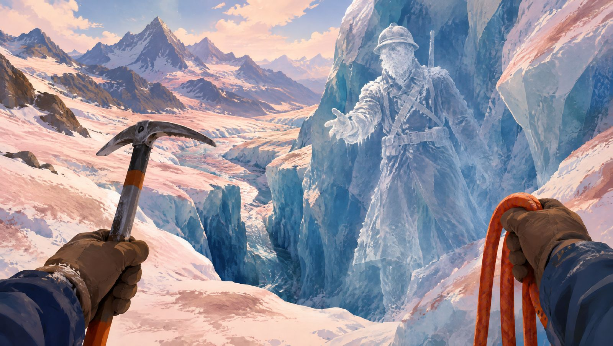
Estate 1991, al confine fra la Valtellina e la Svizzera italiana. La polvere del Sahara ha tinto di rosa la neve, il caldo fa il resto, e la Vedretta di Mezzaluna, il ghiacciaio che segna la frontiera, perde quaranta metri a settimana. Tu sei Marta Calgari, topografa di Airolo, salita da sola a ridisegnare il confine: se il ghiaccio si scioglie, la linea fra due Stati si sposta. La prima notte il ghiacciaio comincia a restituire i suoi morti. Quando caroti il ghiaccio, l'aria intrappolata si condensa in un eco, una figura di brina ferma a metà gesto, che hai novanta secondi per fotografare e misurare prima che svanisca: un alpino del 1916, una famiglia di profughi del 1943, uno spallone sparito nel 1956 con i soldi della colonna, una fotografa caduta col suo aereo nel 1968, e sotto tutto qualcosa di più antico. La valle è piccola e verticale, dal villaggio di Sorèc alla vetta del Sentinella, e ogni quota ha la sua luce e le sue regole: il paese dove si ascolta, la lingua di ghiaccio che cammina, il valico dei contrabbandieri, la conca col lago turchese. A metà estate, la notte dei falò del 1° agosto, una catastrofe che puoi prevedere ma non fermare cambia la mappa, la tua casa e perfino lo Stato a cui appartiene un pezzo di montagna. Per tutta l'estate ti accompagna una voce alla radio, Tavio, il vecchio guardiano della capanna, che conosce ogni crepaccio e sa di quei morti più di quanto dica; e misurando con pazienza dove guardavano gli echi scoprirai che la valle crede da sempre una storia sbagliata. Non si combatte: si sale, ci si cala nei mulini glaciali, si plana, si passa di notte fra le guardie, si sviluppano foto in camera oscura e si attribuiscono nomi e destini. Puoi diventare una guida che attraversa la montagna dritta, una passatrice che conosce sentieri, favori e silenzi, oppure una geometra che va esattamente dove dice il calcolo; ogni scelta di equipaggiamento esclude un'altra. Ci sono trenta piccoli echi nascosti fra le creste, una lampada che ogni sera lampeggia un messaggio cifrato, una lastra di pietra con quarantuno coppelle che è la prima carta della valle, un omaggio a Sant'Arianna e alle lettere di L., e un finale segreto per chi misura tutto. Alla fine dovrai firmare la linea, e quella firma deciderà che cosa la valle ricorderà.
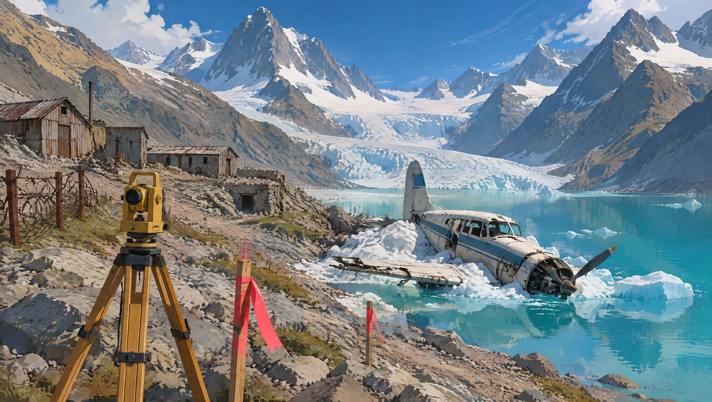
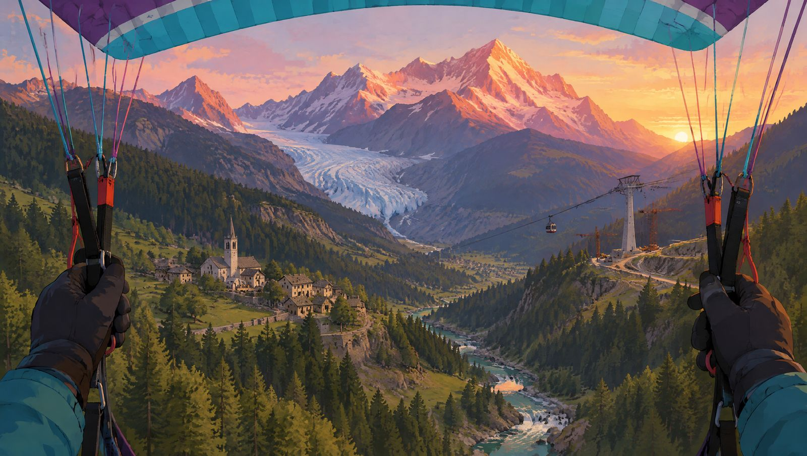
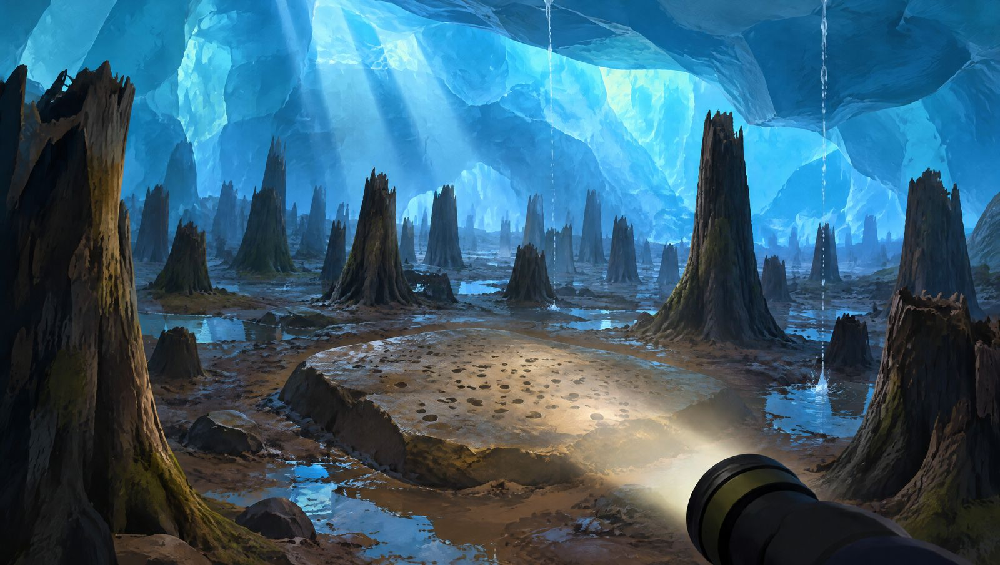
| Criterio | Critica | Produzione | Giocatore e mercato | Media |
|---|---|---|---|---|
| Originalità | 8 | 8 | 8 | 8,0 |
| Mondo | 8 | 8 | 8 | 8,0 |
| Trama | 7 | 8 | 8 | 7,7 |
| Missioni | 8 | 8 | 8 | 8,0 |
| Build | 7 | 7 | 7 | 7,0 |
| Segreti | 8 | 8 | 8 | 8,0 |
| Divertimento | 7 | 6 | 6 | 6,3 |
| Fattibilità | 5 | 5 | 5 | 5,0 |
| Mercato | 7 | 7 | 7 | 7,0 |
| Totale | 7,2 | 7,2 | 7,2 | 7,2 |
DISGELO è il concept narrativamente più maturo che si possa chiedere a questo brief: ha un luogo vero e mai visto, un verbo (misurare) che è anche il tema, un'invenzione poetica (gli echi di brina) che trasforma il limite tecnico in stile, una metà gioco che cambia davvero il mondo e una varietà di missioni da gioco premiato. Ha però i difetti tipici del giallo troppo costruito: il traditore alla radio si vede arrivare con ore di anticipo, quasi ogni personaggio ha una colpa nascosta, l'antagonista è di cartone, e alcune contraddizioni (le carte prima del 1970 contro il rullino, lo scorrimento del ghiaccio, Aldo che 'tornava') toccano proprio la precisione su cui il gioco fonda la propria credibilità. Sono difetti di revisione e non di struttura: con le correzioni proposte sulla trama si può arrivare a 8 o 9, e già così è un concept da sviluppare.
Sul piano visivo ed estetico DISGELO è un adattamento quasi perfetto ai vincoli: terreno, ghiaccio, cielo, nessun volto, umani ridotti a voci, brina e sagome. Sul piano dei sistemi invece si appoggia proprio alle cose difficili: arrampicata e corda in prima persona, ghiaccio volumetrico che cambia, acqua, stealth con umani e cani, un cane compagno, parapendio, voci recitate in italiano con accenti, tre vie per build in ogni missione. È fattibile solo con la corda trasformata in macchina a stati, il ghiacciaio fatto a strati e moduli, i sistemi monouso ridotti a script, una via base garantita in ogni missione e un piano voci realistico; con questi tagli resta lo stesso gioco, intero nella sua idea, da 16-20 ore.
Fra i concept di questo tipo è uno dei più forti che si possano presentare. Ha un hook immediato, un verbo nuovo (carotare e leggere gli echi) che porta insieme meccanica e tema, missioni davvero tutte diverse, un colpo di scena a metà gioco che cambia la mappa e una cura del dettaglio che risponde punto per punto alla richiesta dell'utente, che vive in Ticino e qui troverebbe casa sua. Il rischio sta nel divertimento minuto per minuto: dipende da arrampicata e corda in prima persona e da molta salita a piedi, mentre il calendario ambiguo, gli echi che si perdono per sempre e il parapendio esclusivo possono trasformare la tensione in frustrazione. Con il calendario a settimane, il viaggio rapido dentro il mondo, la fotogrammetria degli echi, una voce umana per Tavio e uno strato di echi minori, diventa un indie da premi con un pubblico di nicchia ma fedele.
Val Bregàna, valle immaginaria che sale dalla Valtellina verso nord fino al confine con la Svizzera italiana (Val Sorna, versante grigionese-ticinese). Dal 1° luglio al 19 settembre 1991, l'estate in cui la polvere del Sahara caduta a marzo ha tinto di rosa la neve e il caldo ha fatto il resto: la Vedretta di Mezzaluna, ghiacciaio a forma di falce che fa da spartiacque e quindi da confine di Stato, perde fino a 40 metri di fronte a settimana. Il landmark visibile da ovunque è il Pizzo Sentinella (3.412 m) con il Dente, una lama di roccia che da lontano sembra una sentinella col fucile in spalla; di notte si vede da tutta la valle la lampada della Capanna Sentinella, e di giorno i piloni rossi e bianchi della funivia estiva in costruzione, che crescono di uno a ogni settimana del calendario. Mondo continuo e compatto di circa 6 km² (3 x 2 km) con 1.700 metri di dislivello, dal villaggio di Sorèc (1.720 m) alla vetta: un mondo verticale più che largo, in cui ogni quota ha un clima, una luce e una regola. Il ghiacciaio ha due nature, e il gioco le insegna come regole: nella Conca, sul Gradino di quota 2.840 e alla Bocchetta il ghiaccio è freddo, incollato alla roccia e quasi immobile, quindi ciò che vi cade resta dov'è per secoli; sotto il Gradino, nella Lingua, il ghiaccio è temperato e scorre, 30 centimetri al giorno sotto il Gradino nelle settimane calde e pochi centimetri vicino alla fronte, una trentina di metri l'anno in media, e ciò che vi cade viaggia verso valle ruotando lentamente. Il mondo cambia per atti: la mappa di spessore del ghiaccio si assottiglia a ogni settimana (la fronte arretra, i ponti di neve spariscono, emergono oggetti) e la Rotta del 1° agosto separa due stati della valle, prima e dopo, con laghi svuotati, canyon aperti e un confine che, misurato davvero, passa altrove. Il tempo è un calendario a settimane che avanza solo con la storia (vedi come_si_gioca): le date vere ci sono, ma il mondo non ti corre dietro. Atmosfera: Buzzati e Rigoni Stern, attesa, silenzio, radio gracchianti, campanacci lontani, il ronzio dell'elicottero Lama della ditta, il ghiaccio che di notte schiocca come un fucile.
Il villaggio italiano: 210 abitanti nel 1991, erano 900 nel 1960, e la scuola chiude a settembre per mancanza di bambini. Chiesa di San Bernardo con l'ex voto dei soccorritori, il Monumento ai Caduti con il nome di Giacomo Bertolatti, la Casermetta della Guardia di Finanza, il Bar Alpino di Giuàn con il telefono a gettoni, il juke-box e le foto delle feste appese storte, il capannone della recuperante Lucia Fèr pieno di bossoli d'ottone, la stazione a valle della funivia della Società Alti Ghiacci con il cartellone 'Sentinella 3000 - lo sci d'estate torna a Sorèc'. Sopra, pascoli, lariceti, il torrente Bregàna color latte, le baite d'alpeggio dove i casari dell'Alpe fanno l'ultima stagione.
Cosa introduce. Il verbo dell'ascoltare: qui si raccolgono le piste da telefonate, bacheche, registri parrocchiali, radio, foto appese. Nessun pericolo fisico, ma ogni domanda fatta in paese cambia chi ti parla e chi smette di farlo. Qui c'è anche la prima linea di viaggio rapido: la vecchia teleferica del Genio, una volta riparata, collega l'Alpe alla Morena e alla Lingua.
Le morene grigie dell'ultimo secolo, il Lago Nero proglaciale, le trincee e le teleferiche arrugginite della Grande Guerra, i cippi di confine 41A-41C sul costone di roccia rifatto dalla frana del 1970. Qui c'è la prima base di Marta: una baracca militare del 1916 restaurata, con il tavolo da disegno, la camera oscura, lo stereoscopio, il teodolite, il registratore a cassette, la radio e un telefono da campo militare collegato alla linea del Bar.
Cosa introduce. Il verbo del misurare: teodolite, stazioni trigonometriche, triangolazione, la carta che si disegna da sé. Pericolo: frane di morena instabile, sassi che cadono nel pomeriggio quando il sole scalda il pendio.
La fronte e la lingua del ghiacciaio: crepacci, bédières (torrenti che corrono sul ghiaccio), mulini glaciali che scendono nel buio, la porta glaciale da cui esce il torrente, bande di polvere scura che affiorano in superficie come anelli di un albero coricato. In alto la Lingua termina contro il Gradino di quota 2.840, una barra di roccia su cui il ghiaccio freddo della Conca si appoggia prima di precipitare.
Cosa introduce. Ramponi, corda, crepacci nascosti; il carotatore e i primi echi. Due regole nuove: il ghiaccio cambia nel corso del giorno (i ponti di neve che reggono all'alba cedono alle tre del pomeriggio) e il ghiaccio della Lingua cammina e ruota, quindi un eco trovato qui non guarda più nella direzione in cui guardava chi è morto: va corretto misurando la velocità del ghiaccio con i paletti.
Il valico dei contrabbandieri, con il bivacco di lamiera, il libro del passo in una cassetta di latta (ogni spallone firmava con un soprannome di animale), il cippo 42 e il Posto di Guardia 41 delle guardie di confine svizzere; dall'altra parte, la Val Sorna e il Ticino. Il ghiaccio qui è freddo e fermo: i morti restano sul passo.
Cosa introduce. Il confine come regola di gioco: due o tre pattuglie per versante, a piedi su giri e orari fissi che si possono segnare col binocolo sulla carta; i cani si sentono prima di vederli. Essere visti significa essere riaccompagnati a valle e perdere ore, mai la vita né le prove. Nebbia e notte diventano alleati, e c'è sempre una via che non chiede di nascondersi.
Il bacino alto del ghiacciaio, una conca sovrascavata con il fondo a 2.700 metri, chiusa a valle dalla barra rocciosa del Gradino; ghiaccio freddo e immobile, con il lago epiglaciale turchese trattenuto da una diga di ghiaccio, il relitto del Piper caduto nel 1968 che affiora, il cantiere della stazione a monte della funivia. Dopo la Rotta il lago è vuoto: un canyon di ghiaccio blu e grotte in cui la luce passa attraverso il ghiaccio, e un fondo di fango in cui affiorano i primi ceppi neri.
Cosa introduce. Prima della svolta: lastroni galleggianti da saltare e corde tese fra un lastrone e l'altro; chi cade in acqua prende freddo e riparte dal lastrone più vicino. Dopo: grotte di ghiaccio, luce interna, eco acustica che deforma le voci; la Conca risulta in Svizzera secondo lo spartiacque nuovo, ci sono le guardie di Reto all'ingresso del canyon e gli uomini della Società al cantiere.
La seraccata che precipita dal Pizzo nella Conca, la parete nord, la cresta con le cornici di neve, la vetta con la croce e la stazione trigonometrica del 1890. Da qui si vede tutto il mondo di gioco, e da quattro creste segnate con un ometto di pietre si decolla in parapendio.
Cosa introduce. Il tempo come avversario: seracchi che crollano a orario quando il sole li colpisce, vento in quota letto dal fumo del cantiere, cornici che si staccano. La planata come verbo: tutti hanno la vela da metà dell'Atto I, e da qui la valle si scende in pochi minuti, ma non si risale in volo.
Si apre solo nell'ultimo atto, quando il ghiaccio della Conca si ritira oltre una soglia: centinaia di ceppi di larice e cembro di 7.000 anni fa, in piedi, scuri, nel fango glaciale; in mezzo, una lastra con 41 coppelle incise e il luogo dove la cacciatrice neolitica si è fermata con il fuoco alzato. Un'area piccola (circa 300 x 200 m), costruita come sotto-scena a sé.
Cosa introduce. Il silenzio: niente radio (il ghiaccio la scherma), niente confine, niente pattuglie. È l'unico luogo dove un eco si muove invece di restare immobile.
Realismo stilizzato d'alta quota, luce dura e trasparente come nelle foto di Vittorio Sella ma a colori. Palette: bianco sporco e grigio morena, il rosa della neve sahariana (il colore-firma del gioco), l'azzurro profondo del ghiaccio vecchio, il verde scuro dei larici, la ruggine delle reti e delle lamiere 1916; gli unici colori saturi sono umani e del 1991: la giacca viola e turchese di Marta, la corda arancione, il casco rosso, il nastro fluorescente dei paletti della Società. Luce: ciclo giorno-notte compresso (un giorno di gioco dura circa 40 minuti), enrosadira al tramonto, nebbia che sale dalla valle alle 14 e copre la Lingua, temporali di calore, stellate nitide. Materiali: roccia e ghiaia scansionate CC0 (Poly Haven, ambientCG) ricolorate con un'unica LUT, ghiaccio con finta dispersione sottosuperficiale e bande di polvere procedurali, neve con normal map e brillantini, lamiera, legno, ottone. Il ghiacciaio è fatto a strati: roccia di base in heightmap, mappa di spessore del ghiaccio che si assottiglia per settimana, e un kit di moduli volumetrici (crepacci, pozzi di mulino, sale di grotta, seracchi, bédières) generati per script in Blender e posati con regole. Gli echi sono figure di brina e ghiaccio traslucido, ferme a metà gesto: il volto è sempre coperto di galaverna, quindi nessun volto realistico per scelta poetica, non per limite. Un solo kit umano (uomo, donna, ragazzo, da base CC0 da verificare come MakeHuman/MPFB) con vestiti modellati per script e pose ottenute in Blender con IK; lo shader di brina uniforma tutto. Regola di regia scritta: sotto gli 8 metri una persona viva si vede solo di spalle, in controluce, mascherata o al buio (Pinna con la torcia in faccia, Lucia con la maschera da saldatore); i bambini esistono solo come voci e come echi di brina. Le persone le conosciamo soprattutto dalle voci alla radio e al telefono (filtri diversi per ciascuno: la televisione dietro Ruedi, il vento sul Posto 41, il motore del Lama dietro Corbellini), dalle lettere, dalle cassette, dalle foto in bianco e nero. Le mani di Marta portano sempre guanti spessi, e gli strumenti (teodolite, Leica, carotatore, stereoscopio) aprono una vista dedicata: l'oculare col reticolo, il mirino, il manometro. È fattibile perché il gioco è fatto al 90% di terreno, roccia, ghiaccio, cielo e meteo, esattamente ciò che three.js fa bene, e perché la valle è stretta: tutta la valle in bassa definizione resta sempre caricata (heightmap a 8 m, impostori di larici, landmark semplificati), le Alpi lontane sono un anello panoramico renderizzato offline, e il dettaglio entra per zona.
Marta Calgari, 31 anni, di Airolo, topografa dell'Ufficio federale di topografia di Wabern, alpinista con il brevetto di guida mancato per un esame di troppo. Sale da sola a Mezzaluna al posto del collega Ruedi Jenny, che si è rotto una gamba sul ghiacciaio il terzo giorno della campagna di giugno, per ritracciare il confine: per la convenzione italo-svizzera, sul ghiacciaio il confine segue lo spartiacque, e se il ghiaccio si scioglie lo spartiacque si sposta. Ha un teodolite Wild T2, una Leica a pellicola, uno stereoscopio da tavolo, un registratore a cassette, una radio portatile, il carotatore prestato dal Politecnico di Zurigo e un libretto di campagna. Non la vediamo mai: siamo lei. La sentiamo nei pensieri registrati sul nastro (il diario del gioco è la sua voce) e alla radio; ciò che di lei si vede sempre sono i guanti, le maniche della giacca, la piccozza e la corda, che il giocatore sceglie fra varianti d'epoca, e il tratto con cui disegna la carta. Carattere preciso, ironico, testardo; non crede ai fantasmi, crede alle misure. Non è una prescelta: è l'unica persona con il mestiere, gli strumenti e il mandato per dire dove passa una linea. Negli snodi decide lei: prevede la Rotta, deduce dove giace la cacciatrice, sceglie come far parlare Tavio. Alla fine del gioco dovrà firmare il verbale del confine, e quella firma è la scelta finale.
68 anni, guardiano della Capanna Sentinella sul versante svizzero e volontario del soccorso alpino. È la voce alla radio, canale 3: guida Marta, le racconta la valle, scherza, la rimprovera quando sale col brutto tempo. Dalla prima chiamata le chiede in che direzione guardano gli echi, e le spiega perché: 'i morti del ghiaccio guardano sempre quello che hanno lasciato', dice la leggenda delle anime della Vedretta. Dopo la Rotta è in ospedale a Sondalo con tre costole rotte e le lascia la capanna; a settembre torna in valle e si chiude nel bivacco della Bocchetta.
Come lo vedi. Una voce roca alla radio con il fruscio della valle dietro (registrata da un attore vero, vedi fattibilità); una sagoma con il cappello sul crinale opposto, sempre lontana; la lampada della capanna che si accende alle 21 in punto; le sue cartine disegnate a matita lasciate nei bivacchi. La sua confessione arriva su una cassetta.
Nel 1943 era passatore e portò in salvo una famiglia ebrea; nel 1956 era spallone e, preso dalla Finanza, firmò con il suo soprannome del libro del passo, 'Camoscio', la data del passaggio del suo migliore amico Tita Fogliani, e la notte dell'agguato il maresciallo Deiana lo portò sul crinale per riconoscerlo nel buio. Nel 1968 fu il primo a raggiungere il Piper caduto e si portò via il rullino della fotografa, che mostrava il corpo di Tita nel crepaccio. Aiuta Marta perché vuole che Tita torni giù col suo nome, e spera di non dover dire il resto.
54 anni, recuperante: raccoglie ottone, rame e filo spinato della Grande Guerra e li vende a peso. Conosce ogni crepaccio. Diffidente, poi alleata, insegna a Marta la corda e il metal detector.
Come lo vedi. Sempre di spalle o lontana, china sul ghiaccio con il passamontagna e la maschera da saldatore alzata; la sentiamo sul walkie-talkie e leggiamo i biglietti che lascia legati ai sacchi di ottone.
È la nipote dell'alpino Giacomo Bertolatti, l'eroe del monumento. In casa conserva il foglio del comando del 1917 che lo dichiara disertore, nascosto dalla bisnonna per salvare il sussidio e il nome. Due estati fa ha trovato il corpo del nonno affiorare vicino alla fronte e lo ha ricoperto di ghiaia. È una vergogna di famiglia, non un affare: non ha mai venduto un reperto che non fosse ottone.
Socio di Lucia nel recupero, 40 anni, simpatico e pieno di debiti. Piccolo antagonista secondario con un suo orologio: ogni settimana porta via qualcosa dai siti dove Marta non è ancora arrivata.
Come lo vedi. Il rumore del suo motocarro Ape sulla strada dell'Alpe, i suoi sacchi di juta col nome scritto a vernice, la sua voce sul canale dei recuperanti; da vicino solo di notte, con la frontale accesa che abbaglia.
A giugno, dentro una grotta della Conca, ha trovato la cacciatrice neolitica e l'ha venduta come notizia alla Società; intanto ne stacca i pezzi piccoli (l'ascia di rame, le perle d'osso) per un antiquario di Coira. Lucia non lo sa.
61 anni, padrone del Bar Alpino, uno dei sei spalloni sopravvissuti alla notte del febbraio 1956. Racconta, offre, organizza la gara delle bricolle di Ferragosto.
Come lo vedi. Dietro il bancone in controluce contro la finestra, sempre di spalle mentre lucida i bicchieri; la sua voce sopra il juke-box; le foto delle feste che ha appeso nel bar, una delle quali è grattata.
Il paese lo sospetta da trentacinque anni, perché nel 1957 comprò il bar: in realtà con l'eredità di uno zio emigrato in California, e la lettera del notaio è in un cassetto. Sa una sola cosa che non ha mai detto: quella notte sul crinale, accanto alle lanterne della Finanza, c'era un uomo con il cappello degli spalloni.
Guardia di Finanza della Casermetta di Sorèc, sardo, nostalgico del mare, onesto e stanco. Controlla chi passa e vuole chiudere il fascicolo Fogliani, aperto dal 1956.
Come lo vedi. Una mantella grigioverde sul crinale con il binocolo; la torcia puntata in faccia a Marta quando la ferma di notte; la sua voce sul canale della Finanza, che Marta può intercettare; i rapporti battuti a macchina con la e che salta.
Non una colpa: ha già firmato la domanda di trasferimento a Olbia per il 30 settembre e vuole sapere chi era 'Camoscio' prima di andarsene. Sa che il suo predecessore, il maresciallo Deiana, quella notte sparò, e sospetta che 'Camoscio' Deiana se lo sia inventato.
Guardia di confine svizzera al Posto 41, engadinese, parla un italiano lento. Ornitologo per passione: annota al minuto ogni volo dei gipeti appena reintrodotti, ogni volo dell'elicottero della Società e ogni 'disturbo luminoso' della notte.
Come lo vedi. Uniforme, occhiali scuri, il cannocchiale sempre puntato; il suo quaderno di osservazioni, preciso al minuto, è uno degli strumenti d'indagine più utili del gioco.
Da agosto lascia passare di notte Arben, arrivato dall'Albania; se lo scoprono perde il posto. È compassione, non corruzione, e il gioco non la punisce.
Direttore della Società Alti Ghiacci, che costruisce la funivia estiva Sentinella 3000. Antagonista con un argomento vero: la funivia è l'unico piano concreto per tenere aperta la valle (120 posti di lavoro, la scuola che potrebbe riaprire), e la Regione finanzia l'ultimo tratto solo se a monte nasce anche un Museo del Ghiaccio con un reperto che faccia venire la gente. Il suo piano avanza da solo, un pilone a settimana.
Come lo vedi. Una voce al megafono e alla radio della Società; l'elicottero Lama rosso con il nome della ditta sulla fiancata; le microcassette per la figlia che Marta trova nel cantiere; una sagoma con il casco bianco sempre circondata da operai.
La concessione è italiana: se il confine torna allo spartiacque vero, la stazione a monte e la grotta della cacciatrice finiscono in Svizzera e il progetto muore. Nel 1988, riordinando le carte del padre, ha scoperto che nel 1970 i cippi 41A-41C furono ricollocati sessanta metri più a nord con un rilievo falso. Ha deciso di riparare 'dopo', a funivia finita, con una permuta di terreni; nel frattempo copre la frode. Detta ogni sera una microcassetta per la figlia Chiara, che studia a Milano e non vuole più parlargli.
Il collega di Marta, a casa a Berna con la gamba ingessata. Le dà consigli tecnici al telefono, con umorismo bernese e la televisione accesa dietro.
Come lo vedi. Solo voce al telefono; le sue vecchie misure nel libretto, con una calligrafia che a un certo punto cambia.
Il segreto non è suo: nel 1990 ha misurato in buona fede sui cippi già spostati, e le ultime pagine del suo libretto del 1991, quelle con la calligrafia diversa, le ha completate un tecnico della Società, Sandro Gilardi, che si era offerto di riportare a valle lo strumento dopo la caduta. Ruedi firmò senza rileggere, con la morfina in corpo.
24 anni, pastore di Theth, nelle Alpi albanesi; nel 1990 ha già passato d'inverno il confine jugoslavo a piedi. Arrivato a Bari l'8 agosto 1991 sulla Vlora, fuggito dallo stadio, vuole raggiungere lo zio a Lucerna attraverso il ghiacciaio. È il presente che ripete il passato.
Come lo vedi. Una tuta da ginnastica troppo grande, regalata allo stadio, nella nebbia; le sue impronte di scarpe da tennis sulla neve; le pietre dritte che lascia sui percorsi; la sua voce alla radio di Reto, e i biglietti in un italiano imparato da Canale 5.
Conosce la montagna meglio di Marta: legge la neve di notte, segna la strada con pietre dritte come si fa a Theth. Gli mancano solo le carte e le scarpe. Nella grotta dove si è riparato ha visto una donna con un sacco di semi e un fuoco di pietra, e sa che è molto più vecchia di qualunque santo. Il suo italiano viene dalla televisione, e lo usa con ironia: cita le pubblicità per prendere in giro chi lo tratta da ingenuo.
I morti che il ghiaccio riconsegna: la cacciatrice neolitica (circa 3300 a.C.); l'alpino Giacomo Bertolatti (novembre 1916); Aldo Sacerdoti, profugo milanese (dicembre 1943); lo spallone Battista 'Tita' Fogliani (febbraio 1956); la fotogrammetrista Lisa Moor e il pilota Elio Zanetti del Piper HB-OTZ (agosto 1968).
Come lo vedi. Corpi coperti da teli, mai mostrati in volto; e soprattutto i loro echi, figure di brina immobili a metà gesto, con oggetti veri in mano (una piccozza, una bricolla, una macchina fotografica aerea, un contenitore di pietra ollare).
Ognuno ha attraversato lo stesso confine, e quasi nessuno nella direzione in cui la valle crede: al momento di morire tornavano indietro, per qualcuno. L'unico che stava davvero andandosene è Elio, e il gioco lo dice.
1° luglio 1991. Marta sale alla Baracca del Genio con il teodolite e un incarico burocratico: verificare la linea provvisoria di confine misurata l'anno prima da Ruedi e firmare il verbale entro il 19 settembre. Il primo giorno pianta una fila di paletti sulla fronte, come si fa per misurare quanto cammina il ghiaccio. La prima notte il ghiaccio schiocca, la mattina la fronte è arretrata di sei metri e dalla parete di una bédière sporge uno scarpone chiodato del 1916. Marta lo carota per datare il ghiaccio: l'aria che esce si condensa in una figura di brina, un alpino immobile a metà passo. Dura novanta secondi, poi si scioglie. Alla radio Tavio ride e dice che il ghiacciaio fa scherzi a chi dorme poco; poi, dopo un silenzio troppo lungo, le chiede in che direzione guardava l'alpino, perché 'i morti del ghiaccio guardano sempre quello che hanno lasciato'. L'alpino guardava verso la Svizzera.
Luglio, settimane 1-5. Il mandato (misurare il confine) e il mistero (chi sono gli echi) si intrecciano: ogni stazione trigonometrica che Marta piazza apre un pezzo di carta, e ogni pezzo di carta mostra qualcosa che il ghiaccio sta restituendo. Quattro piste parallele, affrontabili in qualsiasi ordine. PISTA DELL'ALPINO (Lingua e trincee): lo scarpone, la piastrina graffiata, il nome di Giacomo Bertolatti sul monumento di Sorèc, Lucia la Ferrina che lavora sempre nello stesso punto della fronte e non vuole testimoni. PISTA DELLO SPALLONE (Bocchetta): una cinghia di bricolla nel ghiaccio, il libro del passo con la firma 'Gipeto' (il soprannome di Tita) sull'ultima pagina del febbraio 1956, il brigadiere Pinna che vuole chiudere il fascicolo Fogliani e intercetta Marta alla Casermetta. PISTA DEL PIPER (Conca): la coda del Piper HB-OTZ che affiora dal lago epiglaciale, il libretto di campagna di Lisa Moor, collega dell'Ufficio morta nel 1968, con l'ultima riga 'macchia scura sul Gradino, 2.840, forse un uomo, torniamo indietro'; la camera aerea c'è, l'ultimo rullino no. PISTA DELLA CACCIATRICE (Seracchi e cantiere): schegge di selce e un frammento di pietra ollare annerita sulla morena, il motocarro di Bortolo che sale vuoto e scende carico, l'elicottero di Corbellini che a sera porta via casse da sotto i Seracchi; le dettature dell'ingegnere parlano del Museo del Ghiaccio, della Regione e di 'una signora di cinquemila anni'. Alla fine di questa pista Tavio presta a Marta la sua vela del 1985: da qui tutti possono planare. Ogni pista risolta dà un nome e apre una domanda che porta in un'altra zona. Intanto il piano della Società avanza: un pilone nuovo a ogni settimana, i paletti fluorescenti che si spostano, e una discrepanza strana nelle misure di Marta: la linea di Ruedi passa sessanta metri più a nord di dove dovrebbe, ma le carte vecchie, che sul ghiaccio tracciano il confine a tratteggio, non bastano a dire chi ha ragione.
LA ROTTA, notte del 1° agosto 1991, settecentesimo della Confederazione: su ogni cima svizzera ardono i falò e scoppiano i fuochi d'artificio. La Società ha fretta: la Regione vuole le fondazioni dell'ultimo pilone entro Ferragosto, e la notte dei fuochi è l'unica in cui le cariche non si sentono. Marta può prevederlo: nei giorni prima misura il lago epiglaciale che sale di 40 centimetri al giorno e la diga di ghiaccio che si crepa, e il giorno prima sceglie chi avvisare (Pinna, Reto, i casari dell'Alpe, Corbellini stesso, nessuno). La Rotta è inevitabile, ma chi viene avvisato cambia chi si salva, chi le deve un favore e chi la accusa. Le cariche fanno cedere la diga: in quaranta minuti due milioni di metri cubi d'acqua scendono per la Lingua. Il giocatore vive la Rotta in diretta (fuga dalla Baracca, poi soccorso dei casari dell'Alpe; Tavio, sceso dalla capanna per aiutare, si rompe tre costole e Marta deve portarlo al riparo). Il mondo cambia davvero: la Baracca del Genio è distrutta e Marta si trasferisce alla Capanna Sentinella, che Tavio le lascia mentre è all'ospedale di Sondalo, da dove le parla per telefono e per radio; la Lingua si spacca in due e il ponte di neve principale sparisce; la Conca svuotata rivela un canyon di ghiaccio blu e grotte interne; lo spartiacque si sposta, l'acqua della Conca ora scorre verso nord e la Conca diventa di fatto svizzera, con le guardie di Reto all'ingresso del canyon, la Società che recinta il cantiere con guardiani e cani e la Finanza che chiude il lato italiano. Il blocco di ghiaccio con la cacciatrice, che la Società voleva tagliare, è sparito nelle grotte trascinato dall'acqua: tutti ora lo cercano.
Agosto, settimane 6-9. Il mondo è più aperto in verticale (grotte, canyon) e più chiuso in orizzontale (pattuglie di tre corpi diversi, ciascuno con i suoi orari). Ricartografando la valle nuova Marta rimisura anche i paletti piantati il primo giorno, e scopre quanto cammina e quanto ruota la Lingua: corretto l'eco dell'alpino, Giacomo non guardava la Svizzera, guardava il fronte. Nelle grotte della Conca, dove il ghiaccio è fermo e non serve correggere nulla, ricostruisce il dicembre 1943 (la famiglia Sacerdoti divisa alla Bocchetta) e lo conferma: Aldo scendeva verso l'Italia, da solo, per lasciar entrare gli altri. Dopo l'8 agosto, giorno della Vlora a Bari, Arben compare nella nebbia della Bocchetta: il confine non è più storia, è adesso. Corbellini cambia strategia: la Società presenta a Berna un ricorso per togliere a Marta l'incarico ('vive nella capanna di un ex contrabbandiere, frequenta clandestini, lavora per una parte'); Berna le lascia fino al 19 settembre, poi la linea la firmerà Gilardi. Lucia riceve dalla Società un'offerta di lavoro pulito (il recupero ufficiale dei reperti per il museo) e smette per due settimane di lasciare biglietti. Pinna mostra a Marta la denuncia del 1956, firmata 'Camoscio', e i due sospetti di sempre: Giuàn, che comprò il bar l'anno dopo, e il maresciallo Deiana, che forse la fonte se l'è inventata. Il quaderno di Reto, i rapporti di Pinna e i biglietti di Lucia diventano gli strumenti per anticipare la Società. Marta scagiona Giuàn, scagiona Deiana, e capisce che 'Camoscio' era uno spallone che quella notte non era nella colonna. L'atto si chiude quando Marta, in fondo a un mulino sul Gradino, libera l'eco del febbraio 1956: sei spalloni di brina in fuga, Tita voltato verso il crinale, e sul crinale un'ottava sagoma vuota, un incavo nella brina con il cappello, accanto alle lanterne della Finanza. I quattro secondi di suono contengono la voce di Tita: 'Tavio, va' a ca'!'.
Settembre, settimane 10-11. Le prime nevi in quota, giornate corte, il ghiaccio della Conca che si ritira oltre la soglia e apre il Bosco Vecchio. Tavio, dimesso, è tornato in valle e si è chiuso nel bivacco della Bocchetta; ogni sera chiama, come sempre, e chiede 'allora, come guardava?'. Marta può rispondere, mentire o tacere, e da quella notte Tavio sa di essere stato scoperto: i suoi consigli alla radio restano esperti ma diventano ambigui. Giura che il rullino del 1968 lo ha bruciato nella stufa del bivacco, e indica a Marta zone dove non serve cercare. Anche Corbellini cerca quel rullino, perché dalle carte del padre sa che l'Ufficio federale ha a registro un volo del 1968 con un rullino mai consegnato. Marta lo trova da sola, nella ghiacciaia scavata sotto la capanna dove dorme da un mese, in una scatola di latta sigillata con la cera: sviluppato in camera oscura, mostra Tita nel crepaccio e, in coppie stereoscopiche, i cippi 41A-41C nella loro posizione originale, sessanta metri più a sud. Poi decide lei come far parlare Tavio: accusarlo sul canale aperto, lasciargli le stampe sul tavolo del bivacco, o tacere e aspettare. In ogni caso la confessione arriva su una cassetta, e la sua ultima frase è la sorpresa che nessuno vede arrivare: la culla di cembro nella bricolla di Tita era per Martino, il figlio di Tavio. Intanto Corbellini prepara il colpo finale: il 18 settembre, nella finestra di bel tempo prima della perturbazione d'equinozio, l'elicottero porterà via la cacciatrice ritrovata in fondo alle grotte. La missione finale è una sintesi: arrivare alla cacciatrice prima dell'elicottero con la propria build, ricostruire nel Bosco Vecchio l'ultimo eco (l'unico che si muove), capire che la cacciatrice era voltata per guidare gli altri col fuoco, e poi, il 19 settembre all'alba, sulla vetta del Sentinella, tracciare e firmare la linea.
1) Circa 5000 a.C., optimum climatico: a Mezzaluna non c'è ghiaccio. La Conca è un bosco di larici e cembri fino a 2.750 m; i cacciatori d'estate vi incidono una lastra con 41 coppelle che riproduce le cime intorno: la prima carta della valle. 2) Circa 3300 a.C.: il ghiaccio torna ad avanzare. Una donna di mezza età, cacciatrice e raccoglitrice, attraversa il passo in autunno davanti al suo gruppo, con una borsa di semi di larice e cembro da piantare più in basso, un contenitore di braci in pietra ollare, un arco e una punta di freccia spezzata nella borsa. Nella tormenta, ai piedi dei Seracchi, si ferma al margine alto del bosco e si volta verso valle con il fuoco alzato per guidare chi la segue. Muore così, girata all'indietro. Il ghiaccio freddo della Conca la copre e copre il bosco senza muoverli. 3) Novembre 1916: Giacomo Bertolatti, alpino di Sorèc al fronte dell'Ortles, riceve una lettera della moglie Teresa e risponde 'Torno a casa. Non vi faccio togliere niente'; la censura ferma la risposta nel sacco della teleferica del Genio. Giacomo diserta e attraversa la Vedretta verso la Svizzera neutrale; a metà ghiacciaio rilegge la lettera di Teresa ('a chi scappa tolgono il sussidio e il nome, e lo tolgono anche a noi') e torna indietro verso il fronte. Cade in un crepaccio della Lingua alta. Il comando lo dichiara disertore sulla base della lettera fermata; sua madre nasconde il foglio e dice al paese che è caduto in combattimento. Il paese ne scolpisce il nome sul monumento. In 75 anni il ghiaccio della Lingua lo porta per circa due chilometri e lo fa ruotare di quasi mezzo giro: nel 1989 affiora vicino alla fronte, e Lucia lo ricopre. 4) Dicembre 1943: Tavio Rusca, 20 anni, guida la famiglia Sacerdoti alla Bocchetta. Al Posto 41 le guardie svizzere accolgono la moglie Elena e i figli Bruno e Silvia, ma respingono il padre Aldo, uomo adulto e abile, e minacciano di rimandare indietro tutti se lui insiste. Aldo saluta la famiglia e torna verso l'Italia da solo, per lasciarli entrare; per evitare il sentiero sorvegliato scende dai Seracchi nella tormenta e muore ai piedi della seraccata, nel ghiaccio freddo della Conca. Tavio vede tutto dalle rocce. 5) Febbraio 1956: Tavio, ora spallone, viene preso dalla Finanza con 40 kg di sigarette; il maresciallo Deiana gli offre un patto e lui firma con il suo soprannome del libro del passo, 'Camoscio', la data del passaggio della colonna di Tita Fogliani, suo migliore amico; Deiana lo porta con sé sul crinale per riconoscere Tita nel buio. All'agguato, sul Gradino di quota 2.840, Tita invece di scappare torna su verso il ghiaccio per attirare il fuoco e dare tempo agli altri sei della colonna; si volta verso il crinale, riconosce il cappello di Tavio e gli grida 'Tavio, va' a ca'!', vattene a casa. Deiana spara un colpo, Tita cade nel crepaccio con la bricolla: dentro ci sono i soldi della colonna e una culla di cembro intagliata per Martino, il figlio di Tavio nato a gennaio. La neve di quell'inverno riempie il crepaccio. Il paese crede che Tita sia scappato con i soldi. 6) Agosto 1968: Lisa Moor, fotogrammetrista dell'Ufficio federale, rileva la Vedretta in coppie stereoscopiche dal Piper HB-OTZ del pilota Elio Zanetti, un ragazzo di Sorèc che quell'autunno doveva partire per il Canada e non tornare. Lisa vede una macchia scura sul Gradino, a quota 2.840, e chiede a Elio di invertire la rotta per tornare sul crepaccio; nella virata una corrente discendente li butta nella Conca. Elio muore subito; Lisa passa la notte viva. Tavio arriva all'alba, chiama il soccorso alla radio, la nebbia ferma l'elicottero fino a sera; lui la tiene finché muore e si porta via il rullino, che avrebbe riaperto il caso Fogliani. Lo chiude in una scatola di latta sigillata con la cera e lo mette nella ghiacciaia scavata sotto la capanna. 7) 1970: una frana rovina il costone dei cippi 41A-41C. La Società Alti Ghiacci di Corbellini padre ottiene la concessione italiana e chiede di ricollocarli: il suo geometra presenta un rilievo falso che li sposta sessanta metri più a nord, e la commissione mista lo ratifica sulla carta perché la neve precoce impedisce il sopralluogo. Nessuno se ne accorge: sulle carte al 25.000 sessanta metri sono due millimetri e mezzo, sul ghiaccio la linea è tracciata a tratteggio come 'approssimata', e dopo una frana nessuno sa dire dove fosse il sasso di prima. Solo le coppie stereoscopiche di Lisa, scattate nel 1968 alla scala di 1:8.000 con i cippi vecchi dipinti di bianco e rosso ben visibili, permettono di ricostruirne la posizione al decimetro: la bugia di Tavio ha reso possibile quella di Corbellini. 8) 1988: Corbellini figlio scopre la frode del padre e decide di tacere fino alla fine dei lavori. 9) 1990-1991: Ruedi Jenny misura in buona fede sui cippi spostati; a giugno 1991 cade sul ghiacciaio, e Gilardi, tecnico della Società, completa il suo libretto. Marzo 1991: la polvere del Sahara scurisce la neve; l'estate è torrida. A giugno Bortolo trova la cacciatrice in una grotta della Conca e la vende come notizia a Corbellini, che vuole farne il cuore del Museo del Ghiaccio. 10) Luglio 1991: arriva Marta. Tavio sa che il ghiaccio restituirà Tita, Lisa e la verità sul rullino. Decide di aiutarla a trovare Tita, sperando che il resto resti sepolto. 11) Gli echi: nessuno sa davvero cosa siano. Il ghiaccio intrappola l'aria degli anni in cui si è formato; quando la decompressione improvvisa del carotatore la libera, l'aria porta con sé l'ultimo istante di qualcuno che stava morendo o scegliendo in quel punto. Lo scioglimento naturale libera l'aria lentamente e produce solo un sibilo e una nebbiolina: per questo prima di Marta nessuno ha mai visto un eco. La leggenda alpina delle anime che scontano la pena nei ghiacciai è la versione popolare della stessa cosa. Il gioco non lo spiega mai del tutto.
Misurare (teodolite: stazioni, distanze, quote, azimut, velocità del ghiaccio), carotare (liberare gli echi dal ghiaccio), fotografare e restituire (quattro foto di un eco diventano una ricostruzione stereoscopica che si riesamina allo stereoscopio), ascoltare e registrare (radio, cassette, telefono), arrampicare e assicurarsi (corda, piccozza, ramponi, viti da ghiaccio), calarsi, planare, nascondersi e attendere (pattuglie, nebbia, notte), attribuire (libretto di campagna: nome, data, direzione, destino).
Leggere il ghiaccio (bande di polvere scura = anni, colore blu = ghiaccio vecchio, neve rosa = 1991, ghiaccio freddo o ghiaccio che cammina), scegliere un punto, piantare una vite e assicurarsi, calarsi nella bédière, carotare: l'aria esce con un sibilo e l'eco si forma in pochi secondi. Poi novanta secondi di tempo reale per girare intorno alla scena, scattare almeno quattro foto da angoli diversi, misurare l'azimut, registrare i quattro secondi di suono che l'eco contiene. L'eco si scioglie comunque, ma le quattro foto, sviluppate la sera, diventano una coppia stereoscopica da riesaminare quando si vuole: la tensione resta, la deduzione non dipende più da un minuto e mezzo. Poi la risalita, che lascia una corda fissa: ogni discesa diventa una via di ritorno.
Sessioni da 30-40 minuti, cioè un giorno di gioco. All'alba Tavio legge alla radio il bollettino meteo svizzero; Marta sceglie una pista dal diario e una via in base al tempo e all'ora (i ponti di neve reggono fino alle 14). Sale, misura, trova un eco o un corpo, compila parzialmente il libretto. La sera torna a una base: sviluppa le foto, telefona a Ruedi o a un testimone, ascolta la radio. Il calendario è a settimane: l'estate ne ha 11, e dentro una settimana i giorni sono liberi e infiniti (cambiano meteo e ore, non la data). La settimana avanza solo quando il giocatore ha completato una missione principale e sceglie di dormire in base: Tavio legge il bollettino del lunedì, la Società alza un pilone, il ghiaccio si assottiglia, gli echi minori nuovi emergono. Le date vere (la Rotta del 1° agosto, la Vlora dell'8, Ferragosto, il 18 e il 19 settembre) scattano per progresso e il diario le data comunque: l'urgenza è nella storia, non nell'orologio. Ogni attribuzione confermata (a gruppi di tre, come in Obra Dinn, per impedire di tirare a indovinare) dà avanzamento nella trama e pagine del libretto. Fra una pista e l'altra la valle è piena di 30 echi minori sparsi (un camoscio del 1950, un pellegrino del 1700 diretto a Einsiedeln, una cordata di inglesi del 1890, un recuperante del 1960, un soldato che scrive una lettera, due fidanzati che si dividono un panino): ciascuno è un micro-mistero di 5-10 minuti, e ogni tre risolti danno una pagina. Ogni cresta superata nasconde qualcosa.
Arrampicata a punti di presa generati sulle superfici con tag leggibili: la roccia con licheni arancioni tiene, la roccia bagnata e nera no, il ghiaccio blu richiede i ramponi, la neve marcia di pomeriggio cede; presa assistita generosa. La corda è una macchina a stati, non una simulazione: ancorato, in calata lungo una linea, in risalita, in traverso, in tirolese; si sceglie l'ancoraggio fra punti validi (spit, viti da ghiaccio, piccozza piantata) e il corpo si muove lungo una curva, mentre la corda disegnata reagisce solo alla vista. Parapendio per tutti da metà Atto I (la vela di Tavio): velocità costante, campo di vento per fascia oraria letto dal fumo dei comignoli e dal volo dei gipeti, decolli fissi da quattro creste con l'ometto; serve a scendere, non a salire. Viaggio rapido dentro il mondo, sbloccato giocando: la teleferica del Genio riparata collega Alpe, Morena e Lingua; le corde fisse lasciate dalle proprie calate diventano vie di ritorno; i telefoni da campo della Baracca, della Capanna e del bivacco chiamano chiunque; regola di progetto: dopo la prima salita a piedi verso una zona, il ritorno non supera mai tre minuti. Il freddo non è una barra di sopravvivenza: si vede come brina ai bordi dell'immagine e mani che tremano, che rendono più lente le manovre di corda e meno precise le misure; si recupera al sole, in capanna, nei bivacchi. Niente fame, niente crafting. Opzioni di comfort dal primo giorno: FOV, oscillazione della corda, vignettatura in planata, scuotimento della camera, presa automatica.
Nessuna arma e nessun combattimento: l'avversario è la montagna, e gli uomini sono ostacoli da evitare o da convincere. Pericoli sistemici con orari leggibili: crepacci nascosti (si sondano con la piccozza), seracchi che crollano quando il sole li scalda, frane di morena, temporali in cui la piccozza comincia a ronzare prima del fulmine, white-out. Pattuglie leggere: due o tre per zona, a orari e giri scritti, con il cono visivo ridotto da nebbia e notte; i giri si segnano sulla carta col binocolo, i cani si sentono soltanto. Se ti vedono, una dissolvenza e ti ritrovi a valle con qualche ora in meno; un oggetto o un rullino sequestrato resta alla Casermetta o al Posto 41 e si recupera con un favore a Pinna o a Reto, che è una piccola missione, mai una perdita. Cadere in un crepaccio avvia un autosoccorso giocato o, se fallisce, il soccorso di Lucia o di Reto via radio, che costa ore e un favore. Gli echi del percorso critico (alpino, 1943, 1956, Piper, cacciatrice) non si possono distruggere, e c'è un salvataggio automatico all'inizio di ogni discesa. Il fallimento è contenuto e diventa contenuto: un eco minore sciolto prima di averlo fotografato lascia tracce indirette (un oggetto, una macchia sulla foto, una riga nel quaderno di Reto) che bastano comunque per attribuirlo.
Nessuna minimappa e nessuna icona. La carta 1:25.000 è quella che Marta disegna: ogni stazione trigonometrica che piazza (ovunque, purché veda almeno due punti già noti) traccia le curve di livello della zona misurata, con errori visibili se la misura è fatta male. Non è una torre che rivela la mappa: è un mestiere, rivela solo quello che misuri. Dopo la Rotta solo le zone cambiate (Lingua e Conca) tornano a tratteggio grigio, il resto del lavoro resta valido. Le indicazioni nel diario sono scritte come le darebbe un alpinista: quota più azimut da un landmark ('2.840, sotto il Dente, dove la morena fa una S'). Strumenti: bussola, altimetro, binocolo. Il diario è la voce di Marta sulle cassette: ogni pista è una domanda ('Chi firmava Camoscio nel libro del passo?'), con indizi collegati a fili su una lavagna che ha anche un 'chi è chi' con le foto in bianco e nero di ogni nome e un glossario scritto con la voce di Marta (spallone, bricolla, cippo, Vlora). Il segnalino di posizione esiste come opzione di accessibilità, spento di default.
Le pagine del libretto di campagna sono la valuta, e arrivano da quattro fonti, così chi si blocca in una deduzione progredisce comunque: le attribuzioni confermate degli echi principali (circa 12), gli echi minori (una pagina ogni tre, fino a 10), la carta (una pagina ogni tre stazioni trigonometriche nuove, fino a 5) e le persone (Lucia, Reto e Arben ne danno una quando la loro secondaria si chiude). Chi segue solo la trama ottiene circa 15 pagine, un completista circa 30; l'albero intero ne costa 34, perché le abilità forti costano due pagine. Le 26 abilità si imparano da persone del mondo e aggiungono opzioni, mai numeri: nessuna abilità aumenta resistenza o velocità. Tutti hanno sempre il kit base (teodolite, carotatore, Leica, radio sul canale 3, corda, piccozza, ramponi base e, da metà Atto I, la vela), e la regola di progetto è che ogni obiettivo principale ha in ogni stato del ghiacciaio almeno una via percorribile con il solo kit base, più lenta o più lunga, e che ogni atto ha un percorso di attribuzioni completabile senza abilità. Nessun level scaling, nessun materiale bloccato per regione. Le abilità stanno nei rami; gli oggetti stanno solo nei bivi.
La montagna si attraversa dritta: il terreno impossibile è solo terreno non ancora salito. Insegnato da Lucia e da Tavio.
La montagna è fatta di persone: sentieri, favori, orari, silenzi. Insegnato da Giuàn e dagli spalloni vecchi, da Reto e da Arben.
Capire prima di muoversi: con la misura giusta non serve salire dove salgono gli altri, ma bisogna andare esattamente dove dice il calcolo. È il mestiere di Marta, insegnato da Ruedi e dai libretti di Lisa Moor.
Quattro bivi, come le capsule di Deus Ex, e riguardano solo l'equipaggiamento: si prende un oggetto e si perde l'altro per sempre. 1) Ramponi a 12 punte frontali (ghiaccio verticale; con la Doppia piccozza aprono le pareti blu) oppure ramponi leggeri e ciaspole (neve marcia, ponti di neve, velocità sulle creste). 2) Come si potenzia la vela che tutti hanno: vela lunga (termiche, decolli dalle creste più alte, si guadagna quota e si attraversa la valle) oppure carrucola dei recuperanti (scorrere su ogni cavo, dalle teleferiche di guerra ai cavi della funivia di notte, portando carichi pesanti). 3) Radio a scansione (sentire gli uomini: i canali di Finanza, guardie, Società e recuperanti, e trasmettere per depistare) oppure registratore binaurale (sentire il ghiaccio: un eco attraverso dieci metri di ghiaccio, un ponte che sta per cedere). 4) Il patto di metà gioco, dopo la Rotta: lasciapassare della Società, permesso della Finanza o fiducia degli spalloni; ognuno apre un'area e una fonte e ne chiude un'altra (chi ha il lasciapassare della Società non riceve più i biglietti di Lucia).
Il carotaggio profondo scioglie il ghiaccio intorno: ogni carota profonda apre un pozzo, che può far crollare un ponte di neve e spinge gli echi minori vicini più in basso, in un altro mulino, da ritrovare (il gioco lo segnala prima della scelta; gli echi del percorso critico non si toccano). L'esplosivo di Lucia (vecchia gelatina della Grande Guerra) apre passaggi ma provoca crolli, fa arrivare le pattuglie e fa dire in paese che Marta lavora per la Società. Brina trova tutto ma abbaia. Trasmettere sui canali intercettati permette di depistare, ma la Finanza triangola il segnale e la prossima pattuglia ti aspetta. Rispecializzazione limitata: una volta per atto si può disimparare un'abilità lasciando il suo oggetto come ex voto nella chiesa di San Bernardo, dove resta visibile per sempre; le pagine tornano disponibili.
Marta monta il teodolite, piazza la prima stazione sul cippo 41B, pianta una fila di sei paletti numerati sulla fronte (per sapere quanto cammina il ghiaccio) e la mattina dopo misura: la fronte è arretrata di sei metri in una notte. Seguendo una bédière trova lo scarpone chiodato, si assicura con la prima vite, si cala e carota il ghiaccio per datarlo. Nasce il primo eco: un alpino di brina a metà passo. Novanta secondi per girargli intorno e scattare le quattro foto che, sviluppate la sera, diventano la prima restituzione allo stereoscopio. Insegna arrampicata, corda come macchina a stati, carotaggio, fotografia, libretto. Vie: lineare, con il solo kit base. Svolta: alla radio Tavio chiede in che direzione guardava, e la bussola dice nord, verso la Svizzera. 'Un disertore', dice Tavio, e cambia discorso. Domanda nuova: chi era, e perché sul monumento di Sorèc c'è un nome del suo reggimento?
Pista dell'alpino. In paese Marta confronta il numero di matricola della piastrina con il registro dei caduti in sacrestia e con il monumento: Giacomo Bertolatti, 'caduto sul Gran Zebrù'. Ma il Gran Zebrù è a quaranta chilometri. Lucia la Ferrina, sua nipote, nega tutto; Marta la segue a distanza col binocolo fino a un punto della morena frontale dove la ghiaia è stata smossa a mano. Vie: la Cordata la segue dall'alto per le trincee della Lingua, la Passatrice si fa raccontare dai casari dove Lucia va ogni sera, la Geometra confronta le stazioni e trova la ghiaia smossa sulla carta (un rilievo 'sbagliato' di mezzo metro); la via base è aspettare in paese il motocarro e seguirlo a piedi. Svolta: sotto la ghiaia c'è il corpo, e Lucia sorprende Marta: invece di minacciarla, le chiede di aspettare prima di dirlo in paese. In cambio le insegna la corda dei recuperanti e le dice che sotto i Seracchi qualcuno scava di notte, 'e non è gente mia'.
Pista dello spallone. Il libro del passo è nel bivacco della Bocchetta, ma di giorno le guardie svizzere e la Finanza ci passano a turno. Marta ci va di notte, segnando dalle rocce col binocolo i giri delle due pattuglie e usando la nebbia che sale alle 22. Vie: la Cordata arriva dalla cresta est, fuori dai giri, calandosi sul tetto del bivacco; la Passatrice segue i segni incisi della vecchia via; la Geometra ascolta i cambi di turno e calcola la finestra di quattro minuti in cui nessuno vede la porta; la via base, senza nascondersi, è salire di giorno con il permesso di misurare il cippo 42 e leggere il libro sotto gli occhi di Reto, perdendo però la sua fiducia per una settimana. Nel libro gli spalloni firmano con soprannomi di animali: tutto l'inverno 1955-56 la colonna di 'Gipeto' (Tita) firma in otto, ma il 14 febbraio le firme sono sette. Manca 'Camoscio'. Poco sotto, nel ghiaccio, una cinghia di bricolla. Al ritorno il brigadiere Pinna la ferma con la torcia in faccia e invece di multarla le racconta il caso Fogliani: lo spallone sparito con i soldi della colonna. Svolta: chi era Camoscio, e perché quella notte non c'era?
Pista del Piper. La coda dell'HB-OTZ affiora dal lago turchese sopra la Conca, fra lastroni di ghiaccio galleggianti che girano col vento. Marta deve passare da un lastrone all'altro tendendo corde fra le viti da ghiaccio, leggendo quali lastroni reggono (il bianco sì, il grigio poroso no) e quando il vento li avvicina; chi cade in acqua prende freddo e riparte dal lastrone più vicino. Vie: la Cordata usa il pendolo da un blocco all'altro, la Passatrice aspetta la nebbia del mattino che ferma il vento e passa in silenzio con i ramponi leggeri, la Geometra calcola dal teodolite la rotazione dei lastroni e sceglie il momento in cui si allineano; la via base è il giro lungo sul bordo della diga di ghiaccio. Dentro la carlinga c'è la cassetta di Lisa Moor: il libretto di campagna con l'ultima riga 'macchia scura sul Gradino, 2.840, forse un uomo, torniamo indietro', e la camera aerea Wild RC8. Ruedi al telefono le racconta la leggenda di Lisa in ufficio. Svolta: la camera è intatta ma il magazzino dell'ultimo rullino non c'è, e i suoi ganci sono stati aperti a mano, non rotti dall'urto. Qualcuno è arrivato al Piper prima dei soccorsi ufficiali.
Pista della cacciatrice. Dal crinale Marta osserva per un giorno intero l'elicottero di Corbellini e il motocarro di Bortolo e annota sulla carta voli e viaggi; nella baracca del cantiere trova una microcassetta con le dettature dell'ingegnere ('la Regione paga l'ultimo tratto solo con il museo; la signora di cinquemila anni deve restare in Italia'). Poi deve raggiungere il punto sotto i seracchi dove gli operai hanno segnato il ghiaccio con la vernice, tra le 7 e le 10 del mattino, prima che il sole faccia crollare i blocchi. Vie: la Cordata sale la seraccata, la Passatrice segue di notte i segni degli operai e i giri dei guardiani, la Geometra calcola con la lettura del ghiaccio quali seracchi resteranno in piedi e passa sotto quelli; la via base è il canalone di sinistra, lento e sicuro solo prima delle 8. Svolta: sul fondo del mulino segnato, attraverso venti metri di ghiaccio blu, si vede una mano che stringe un contenitore di pietra ollare annerito, e accanto una manciata di semi; e la Società ha già piazzato cariche per le fondazioni del pilone in cima, a venti metri dalla diga di ghiaccio del lago. Tavio, alla radio, tace a lungo; poi le dice di scendere in volo e le lascia la sua vela del 1985 legata alla croce del bivacco. Da qui tutti planano.
Si apre quando tre piste dell'Atto I sono chiuse e almeno una settimana è passata, oppure subito dopo la quarta. Il giorno prima Marta misura con il teodolite il livello del lago sui segni della roccia: 40 centimetri al giorno, e la diga di ghiaccio che si crepa; può prevedere che la notte delle cariche il lago si romperà. Sceglie chi avvisare: Pinna (sgombera il greto, ma la Finanza chiude la strada e ferma lei), Reto (le guardie salgono ad aiutare e da lì in poi lo stimano), i casari (si salvano da soli e diventano la rete dell'Alpe), Corbellini (sospende le cariche di un'ora: l'onda arriva lo stesso ma il cantiere si salva, e lui le deve un favore), nessuno. La notte, su ogni cima svizzera ardono i falò del settecentesimo; sotto i fuochi d'artificio Marta sente le cariche e il ghiaccio che urla. Deve correre giù per la Lingua mentre l'acqua apre il ghiaccio dietro di lei, nel canyon buio illuminato dai fuochi, poi raggiungere Tavio, sceso dalla capanna ad aiutare e caduto in una bédière con tre costole rotte, e portarlo al riparo. Vie: la Cordata scende per cresta e lo tira fuori in corda, la Passatrice prende la vecchia via degli spalloni e chiama i casari col codice delle mucche, la Geometra calcola dalla carta il punto dove l'onda si allargherà e porta tutti sopra quella quota; la via base è la cresta della morena, più lunga, che regge sempre. Svolta: la Baracca del Genio è distrutta, Tavio va all'ospedale di Sondalo e le lascia la capanna. All'alba la Conca è vuota, lo spartiacque si è spostato e la cacciatrice è sparita nelle grotte.
Metà delle stazioni di Marta sono state spazzate via e la carta della Lingua e della Conca è tornata a tratteggio grigio. Dalla Capanna Sentinella, con Tavio che le parla al telefono dall'ospedale, deve ritriangolare la valle cambiata: tre punti nuovi da scegliere liberamente fra creste e rocce. Mentre la carta si ridisegna appaiono il canyon di ghiaccio, le grotte e i recinti della Società, e le guardie svizzere salgono a presidiare la Conca. Poi ritrova i sei paletti piantati il primo giorno: quattro sono scesi di tre metri verso valle e ruotati di due gradi (in settantacinque anni fanno circa due chilometri e quasi mezzo giro); con la loro velocità e la loro rotazione Marta corregge la restituzione dell'eco dell'alpino. Corretto, Giacomo non guardava la Svizzera: guardava il fronte. Vie: la Cordata piazza le stazioni sui pinnacoli della Lingua spaccata, la Passatrice usa i punti alti dei passatori e i casari che le portano lo strumento, la Geometra triangola a vista da tre creste prima della nebbia; la via base usa le tre stazioni sopravvissute più una sul tetto della capanna. Svolta: confrontando le misure con i cippi, Marta trova che il 41A, il 41B e il 41C sono sessanta metri più a nord di dove la linea dovrebbe correre; ma sulle carte prima del 1970 la linea sul ghiaccio è tratteggiata, 'approssimata', e la differenza sta dentro la tolleranza ufficiale ed è già stata attribuita alla frana del 1970 dalla commissione mista. Per dimostrare qualcosa serve una foto aerea anteriore al 1970 a grande scala. Berna risponde: l'unica esistente è quella del volo di Lisa Moor del 1968, e l'ultimo rullino non è mai stato consegnato.
Nelle grotte appena aperte sotto la Bocchetta, dove il ghiaccio è freddo e fermo, il carotaggio libera l'eco più grande trovato finora: sei figure su un ponte di neve, dove nel 1943 passava la linea; una guida giovane con il volto coperto di galaverna, una donna con due bambini, un uomo, due guardie con le mantelle. Come in Obra Dinn, Marta deve attribuire nomi e destini a gruppi di tre, usando la restituzione stereoscopica, il registro dei profughi della Val Sorna, il quaderno di Reto con i nomi delle guardie dell'epoca e una telefonata a Bruno Sacerdoti, oggi a Lugano, che era il bambino e ricorda solo che il papà disse 'vi raggiungo per un'altra strada'. Vie: la Cordata arriva dall'alto calandosi in un camino di ghiaccio, la Passatrice entra dal fondo del canyon passando fra le guardie di Reto nella nebbia, la Geometra carota in obliquo da una galleria laterale e lavora sulla restituzione; la via base è aspettare il cambio della guardia delle 6 ed entrare dal canale di scarico. Svolta: misurando l'azimut di ogni figura, senza bisogno di correzioni perché qui il ghiaccio non si muove, Marta vede che Aldo non fuggiva: respinto, voltava le spalle alla Svizzera e tornava verso l'Italia da solo, per lasciar entrare gli altri. Con l'alpino corretto sono due. Il gioco intero cambia lettura: e se anche Tita, che il paese dice scappato con i soldi, stava tornando?
Si apre dopo l'8 agosto. Reto chiama Marta di nascosto: un ragazzo albanese, Arben, è bloccato sulla Bocchetta in scarpe da ginnastica, e lui non può muoversi senza farsi scoprire. Arben conosce la montagna (a Theth ha passato d'inverno il confine jugoslavo) ma non ha mai visto un ghiacciaio. Questa volta la voce alla radio è Marta: dalla capanna, con la carta che ha disegnato e il binocolo, deve guidarlo passo dopo passo rispetto ai landmark ('vedi il Dente? tienilo a sinistra'), evitando i crepacci che ha misurato e le pattuglie della Società; Arben risponde con la sua lettura delle rocce e a volte ha ragione lui. Vie: la Cordata può scendere ad assicurarlo per l'ultimo tratto, la Passatrice gli fa seguire i segni incisi dei passatori, la Geometra gli dà distanze e azimut dalla carta; la via base è la sola voce, più lenta, con i landmark. Svolta: al sicuro, Arben racconta di essersi riparato in una grotta dove ha visto 'una donna con un sacco di semi e il fuoco dentro una pietra', molto più vecchia di qualunque santo. Non sa dov'era, ma ricorda tre cose: una cascata a sinistra, una luce verde e un odore di resina. Marta trasforma la testimonianza in un percorso: la luce verde vuol dire ghiaccio sottile sotto la morena, la resina vuol dire legno antico, la cascata a sinistra è lo scarico del vecchio lago. Scende lungo lo scarico seguendo il rumore dell'acqua (a orecchio, o con il registratore binaurale) finché, da fuori, vede attraverso il ghiaccio una macchia verde e sente l'odore: la grotta bassa sul fondo della Conca, a quota 2.710, vicino allo scarico, con l'ingresso ancora sott'acqua fino all'assottigliamento di settembre. La segna sulla carta. Arben le insegna il passo di notte e le pietre dritte; una settimana dopo il Lama comincia a girare sopra quel punto, perché Bortolo l'ha seguita.
Pinna mostra a Marta il fascicolo Fogliani: la denuncia del 1956 è firmata 'Camoscio' e contiene un dettaglio che solo uno spallone poteva sapere, la variante del Gradino, una via che Tita usava solo con i suoi. Nello stesso giorno arriva da Berna la notizia del ricorso della Società, che chiede di toglierle l'incarico: ha tempo fino al 19 settembre. Marta incrocia quattro archivi: il libro del passo, la foto della festa del 1955 appesa nel bar di Giuàn con i soprannomi scritti dietro, la lettera del notaio di Giuàn con l'eredità californiana, il registro di servizio di Deiana. Poi, per la linea, il libretto di Ruedi con la calligrafia che cambia e il quaderno di Reto con chi era sul ghiacciaio il giorno della sua caduta. Vie: è una deduzione, ma ogni build trova le carte a modo suo (la Cordata recupera il registro di Deiana dalla vecchia Casermetta crollata sull'Alpe, la Passatrice si fa aprire il cassetto di Giuàn con un favore, la Geometra chiede le copie all'Archivio); la via base è chiedere a Pinna, che le dà tutto ma un giorno dopo. Svolta doppia: Ruedi è innocente (le pagine finali le ha scritte Gilardi della Società, mentre Ruedi era sotto morfina), e i due sospetti di sempre cadono: Giuàn era nella colonna e firmava 'Tasso', Deiana non si è inventato niente perché Camoscio ha firmato il libro tutto l'inverno. Camoscio era uno spallone vicino a Tita che quella notte non camminava con lui. Giuàn, interrogato, dice solo: 'Chi era vicino a Tita? A quei tempi, tutti', e versa da bere. La risposta è dove Tita è caduto.
La quota del libretto di Lisa porta al Gradino, dove il ghiaccio freddo non si è mosso dal 1956 e dove quest'estate l'acqua della neve sporca ha aperto un mulino profondo trenta metri, che taglia il vecchio crepaccio riempito dalla neve di quell'inverno. Il riempimento ha due bande: la neve della notte del 14 febbraio e quella di una settimana dopo. Marta deve calarsi nel buio con l'acqua che scorre, scegliere la banda e carotarla. Sbagliare non fa perdere niente di essenziale: la banda di marzo libera un eco opzionale (tre spalloni, Giuàn fra loro, tornati di notte a cercare Tita), e quella di febbraio resta lì. Vie: la Cordata con la calata nel mulino, la Passatrice con Brina che fiuta la banda giusta dall'alto e la via di discesa che gli spalloni di marzo segnarono sulla parete, la Geometra con il registratore binaurale o il carotaggio obliquo da una galleria laterale; la via base è entrare alle 6 del mattino dal crepaccio laterale, quando l'acqua è al minimo, con due calate brevi invece di una lunga. Nella bricolla di Tita ci sono i soldi della colonna, tutti, e una piccola culla di cembro. L'eco è il più bello del gioco: sei spalloni che fuggono, Tita voltato verso il crinale con le braccia aperte per attirare il colpo, il lampo dello sparo congelato. Svolta: sul crinale, accanto alle lanterne della Finanza, c'è un'ottava forma, un incavo nella brina con un cappello e un binocolo; e i quattro secondi di suono contengono la voce di Tita che grida verso l'alto: 'Tavio, va' a ca'!'.
Tavio, dimesso, si è chiuso nel bivacco della Bocchetta e la sera chiama come sempre. Sa di essere stato scoperto, e lo dice senza dirlo: giura che il rullino di Lisa lo ha bruciato nel 1968 nella stufa del bivacco, e consiglia a Marta di cercare la verità altrove. Nella stufa, se Marta va a vedere, c'è davvero un rullino bruciato, ma è di un'altra pellicola, una marca che Lisa non usava: un depistaggio preparato ventitré anni prima. Marta cerca nella capanna dove dorme da un mese, leggendo il posto come un rilievo: il pavimento della dispensa è più freddo, il ghiaccio della ghiacciaia scavata sotto la capanna nel 1920 ha una toppa di ghiaccio più giovane. Vie: la Cordata si cala nella ghiacciaia dal pozzo esterno della neve, la Passatrice si fa raccontare da Giuàn dove Tavio nascondeva le sigarette nel '56, la Geometra misura la differenza di temperatura dei pavimenti e trova la toppa con la lettura del ghiaccio; la via base è svuotare la dispensa, più lenta. Dentro, una scatola di latta sigillata con la cera: il magazzino del rullino di Lisa. Sviluppato in camera oscura, mostra Tita nel crepaccio nel 1968 e, in coppie stereoscopiche, i cippi 41A-41C nella loro posizione originale, sessanta metri più a sud. Poi Marta sceglie: accusare Tavio sul canale 3 aperto, che ascoltano tutti; lasciargli le stampe sul tavolo del bivacco; o tacere e aspettare. Svolta: la confessione arriva sempre su una cassetta, con il fruscio e i silenzi lunghi di un uomo che parla da solo (il 1943, il patto con Deiana, il crinale, Lisa morta all'alba fra le sue braccia mentre la nebbia teneva a terra l'elicottero, il rullino); cambia chi altro la sente. L'ultima frase è: 'La culla era per Martino. Mio figlio. Tita è morto portando un regalo a mio figlio.'
La finestra è annunciata due settimane prima da tutti i bollettini, e il conto alla rovescia parte solo quando Marta entra nella missione: la perturbazione d'equinozio arriva il 19; il 18 c'è una sola mattina di bel tempo e Corbellini la usa per far estrarre la cacciatrice dalla grotta bassa, dove la Rotta l'ha incastrata, e portarla via con l'elicottero. Vie: la Guida scende in corda nel pozzo dove il blocco è incastrato e lo assicura alla roccia con le viti, così che non si possa sollevare senza ore di lavoro; la Passatrice convince gli spalloni vecchi e i casari a chiudere con le mandrie la pista del cantiere da cui devono salire gli operai; la Geometra dimostra con la livellazione che la grotta drena verso nord, quindi sta in Svizzera secondo lo spartiacque attuale, e manda a Reto i numeri per radio: le guardie chiudono il canyon e il Lama non può atterrare in territorio svizzero senza permesso (con la radio a scansione può anche trasmettere un falso bollettino di vento a 80 nodi); la via base è arrivare per prima dal canale di scarico e restare accanto al blocco: davanti a una testimone dell'Ufficio federale nessun operaio tocca niente. Gli alleati contano: Lucia, Pinna, Reto, i casari e Corbellini stesso, se lo ha avvisato la notte della Rotta, intervengono o no in base a quello che Marta ha fatto per loro; se Tavio ha avuto le stampe in privato, quella mattina la lampada della capanna lampeggia per avvisarla di dove sono gli operai. Svolta: liberato il blocco, il ghiaccio dietro cede e apre un passaggio verso il basso, nel fango, dove la luce cambia colore. Profuma di resina.
Il Bosco Vecchio: centinaia di ceppi di larice e cembro di 7.000 anni fa, niente radio, niente confini, solo i passi di Marta nel fango e il ghiaccio che gocciola. Si gioca senza fretta: ogni ceppo ha un anello di accrescimento che si può contare, e i semi della cacciatrice sono sparsi dove li ha fatti cadere. L'ultimo eco è l'unico che si muove: la cacciatrice si volta verso valle e alza il fuoco per chi viene dietro, mentre il vento muove i larici che non esistono più. La punta di freccia spezzata è nella sua borsa, non nel suo corpo. La lastra con 41 coppelle, letta con il teodolite, riproduce le cime intorno: è la prima carta della valle. Poi l'ultima salita, la notte fra il 18 e il 19 settembre, fino alla vetta del Sentinella. Vie: la Cordata sale la parete nord, la Passatrice la via dei pellegrini alla luce delle pietre dritte, la Geometra la cresta che ha misurato tutta l'estate leggendo le cornici con i suoi dati; la via base è la via normale, con la frontale, in cinque ore. In vetta Marta piazza l'ultima stazione e traccia la linea usando tutto ciò che sa: lo spartiacque misurato, i cippi spostati, i morti con i loro nomi e la loro direzione. La firma sul verbale decide il finale. All'alba la radio gracchia la notizia di un uomo trovato nel ghiaccio al Similaun, molto lontano da lì.
I paletti fluorescenti della Società si spostano, sempre verso valle. Pinna sospetta sabotaggi, Corbellini accusa gli spalloni, Lucia ride. Marta li misura a ogni settimana con il teodolite e raccoglie i dati in una tabella. Chi la gioca prima della missione 7 arriva da solo alla correzione dell'eco dell'alpino, prima che il gioco gliela chieda.
Nessuno li tocca: è il ghiacciaio, che sotto il Gradino corre a trenta centimetri al giorno e vicino alla fronte a nove, e che gira. Tranne uno: il paletto 7 è salito di due metri, contro corrente. Lo ha spostato Bortolo per coprire un buco dove ha scavato. Risoluzione: con la velocità misurata Marta calcola dove usciranno dal ghiaccio gli oggetti che vede in profondità, e il diario si riempie di appuntamenti futuri con il ghiaccio (uno porta a un eco minore, uno alla secondaria del casaro); il buco di Bortolo apre il suo filo.
Una luce si muove ogni notte sulla morena e i casari parlano del 'diavolo della Bregàna'. Marta la segue: è don Ermes, il parroco di 82 anni, che da solo con una lanterna rinnova il voto che il paese fece nel 1678 per fermare l'avanzata del ghiacciaio.
Don Ermes non prega più perché il ghiaccio si fermi: prega perché torni. Ha battezzato l'ultimo bambino di Sorèc nel 1983 e sa che senza ghiaccio non ci sarà neanche la valle. Risoluzione: Marta può accompagnarlo per tutta la processione con le lanterne, e il percorso antico del voto passa esattamente sopra tre echi minori che non si trovano in altro modo; l'ultima tappa è una cappelletta con gli ex voto, dove il giocatore ritrova gli ex voto che Marta ha lasciato in chiesa a ogni rispecializzazione, portati lassù da don Ermes.
Nell'archivio del Politecnico ci sono sei lastre fotografiche della Vedretta scattate nel 1911 dal fotografo Ernesto Peduzzi di Locarno. Marta deve ritrovare i punti esatti da cui furono scattate, usando il profilo delle montagne, e rifotografarle: una tecnica vera dei glaciologi.
Nella quinta lastra, sul ghiaccio, c'è un ometto di pietre che oggi non esiste più. Nella rifotografia del 1991 nello stesso punto c'è una macchia scura nel ghiaccio. Risoluzione: è un deposito di spalloni dell'Ottocento, con dentro un libro del passo più antico, del 1848, in cui i soprannomi sono gli stessi animali: Camoscio, Tasso, Gipeto. Gli spalloni se li tramandavano. È anche la prima riga del cifrario del Morse (vedi segreti).
A Ferragosto Sorèc organizza la gara degli spalloni: si sale con una bricolla di 20 kg sulla vecchia via fino all'Alpe. Marta può partecipare con la sua build (la Cordata taglia per le rocce, la Passatrice conosce le scorciatoie, la Geometra calcola la linea più breve sulla carta, il kit base corre la via normale e arriva a metà classifica).
All'arrivo gli spalloni vecchi brindano e Giuàn, che era nella colonna del 1956, racconta una cosa sola che non ha mai detto: quella notte sul crinale, accanto alle lanterne della Finanza, c'era un uomo con il cappello degli spalloni. Non ha visto il volto e non vuole fare nomi: 'un cappello è un cappello, ce l'avevamo tutti'. Se la secondaria si gioca dopo la missione 11 Giuàn dice invece 'allora era lui', e versa due bicchieri. Risoluzione: Giuàn diventa un alleato per la missione finale e il suo 'Un favore di Giuàn' si sblocca anche fuori dal ramo Contrabbando, una volta.
Un alpinista tedesco è bloccato sulla parete nord del Sentinella con un temporale in arrivo. Lucia coordina dalla radio dei recuperanti, Marta deve raggiungerlo e calarlo, chiuso nel suo sacco da bivacco, per tre tiri di corda. La Cordata lo cala dritto, la Passatrice lo guida per una cengia dei passatori, la Geometra calcola il tempo prima del fulmine dal ronzio della piccozza e la gola che resta al riparo.
Non è un turista: è un giornalista di una rivista di Amburgo, avvisato da un antiquario di Coira che cerca di vendere un'ascia di rame di cinquemila anni; nello zaino ha foto della cacciatrice scattate nella grotta, e i sacchi di Bortolo in un angolo. Risoluzione: Marta può dargli la storia, tenerla per sé o usarla per costringere Corbellini a fermare Bortolo; nel finale la stampa reagisce di conseguenza, e Lucia scopre che il suo socio la usava.
Reto vuole trovare la cengia dove uno dei gipeti appena liberati nel Parco Nazionale rompe le ossa lasciandole cadere sulle rocce. Marta deve seguirne il volo con il binocolo per giorni e capire, dalle ore e dai venti, dove va.
Sulla cengia, fra le ossa di camoscio, c'è un orologio d'aviatore: è di Elio Zanetti, il pilota del Piper, il cui corpo non fu mai ritrovato tutto. Nella cassa, piegato, c'è un biglietto della nave Genova-Halifax per l'ottobre 1968. Elio non tornava: se ne andava, ed è l'unico. Risoluzione: Marta porta l'orologio alla sorella di Elio, a Locarno, che da ventitré anni lascia accesa la luce del portico. Lei sapeva del biglietto e non gliel'aveva mai perdonato. Quella sera, se Marta passa dalla strada, la luce è spenta.
Lucia vuole calare a valle mezza tonnellata di ottone con la vecchia teleferica militare del 1916. Marta deve rimettere in tensione i cavi, liberare le pulegge dal ghiaccio e bilanciare i contrappesi sulle tre stazioni. Riparata, la teleferica diventa per sempre la linea di viaggio rapido fra Alpe, Morena e Lingua.
Nella stazione a monte, in un sacco della censura militare, ci sono le lettere mai partite di un reparto del 1916, fra cui la risposta di Giacomo alla moglie: 'Torno a casa. Non vi faccio togliere niente.' Prima della missione 7 sembra la confessione di un disertore; dopo, è la spiegazione: sul ghiaccio Giacomo capì che scappando le avrebbe tolto tutto, e tornò. Risoluzione: Marta sceglie se darla a Lucia o al museo; Lucia, se la riceve, smette di nascondere il corpo del nonno e mostra a Marta il foglio del comando che la bisnonna aveva nascosto.
Margrit Moor, sorella di Lisa, scrive all'ufficio di Marta: vorrebbe l'orologio della sorella, che non le fu mai restituito. Marta lo trova nel Piper e confronta il rapporto ufficiale del 1968 con le lettere di Margrit e con le foto del recupero.
L'orologio si è rotto alle 5.40 del mattino, diciannove ore dopo l'incidente: Lisa non morì nell'impatto come dice il rapporto. E nelle foto del recupero il suo corpo è coperto da una giacca di lana da uomo che non era né sua né di Elio. Qualcuno era con lei all'alba: anche il suo eco, sotto le fondazioni del cantiere, ha sulla spalla una mano guantata che entra nella bolla da fuori. Risoluzione: Marta può dirlo a Margrit subito o aspettare di sapere chi; la risposta arriva nella missione 12, e Margrit, se Marta glielo chiede, scrive a Tavio una lettera di due righe che lui legge alla radio.
Si apre dopo la missione 11. Nella bricolla di Tita c'è una piccola culla di cembro intagliata con una stella alpina, la lettera M. e il marchio di un falegname. Marta attraversa la Bocchetta fino alla Val Sorna per trovare la bottega, ancora aperta, oppure telefona e riceve una lettera con le foto.
Il falegname, oggi novantenne, ha ancora il libro degli ordini: 'culla, cembro, per B. Fogliani, consegna 10 febbraio 1956, intaglio: stella alpina e M.'. Non ricorda per chi fosse; ricorda che Tita la pagò il doppio perché era 'per un bambino appena nato, e per il suo papà, che ne aveva bisogno'. Il nome arriva solo con la cassetta di Tavio. Risoluzione: dopo la missione 12 Marta decide se portare la culla a Tavio, a Martino a Chiavenna, che non parla al padre dal 1975, o lasciarla sulla tomba vuota di Tita.
Con la radio a scansione o il telefono del bar, Marta capta i casari dell'Alpe che si parlano usando nomi di mucche ('la Bionda è scesa', 'la Stella ha il vitello'), come facevano gli spalloni negli anni Cinquanta per avvisarsi delle pattuglie.
Il codice è lo stesso del 1956, ma nel 1991 non passano sigarette: passano persone. I casari avvisano Reto quando un ragazzo della Vlora sale dalla Valtellina, come i loro padri facevano nel 1943. Solo una 'mucca' non torna: 'la Rossa porta legna vecchia' è Bortolo, che usa il codice per far passare i reperti, e i casari non lo sanno. Risoluzione: Marta sceglie se avvisare Pinna (e la via di Arben si chiude), avvisare i casari di Bortolo, o usare il codice per mandare a Bortolo un messaggio falso; ognuna delle tre scelte cambia chi la aiuterà nella missione 13.
Ernesto Pedroncelli, 74 anni, fa la sua ultima stagione all'Alpe Bregàna: il figlio lavora in fabbrica a Sondrio e non salirà. Racconta che nel 1946 suo padre, per scommessa, calò una forma di formaggio in un crepaccio della Lingua con una tavoletta di legno marchiata, e disse che il ghiaccio gliel'avrebbe restituita quando fosse stato vecchio. Marta, con la velocità del ghiaccio misurata, calcola dove e quando può uscire.
Dal ghiaccio esce la tavoletta, la forma no. Sul retro, a fuoco, il padre aveva scritto: 'Ernesto, se la trovi vuol dire che il ghiacciaio è andato via. Allora puoi andare via anche tu.' Risoluzione: Ernesto decide se scendere per sempre o restare un'altra estate, e la decisione dipende da cosa Marta gli racconta della valle; nell'epilogo di ogni finale c'è o non c'è il fumo della sua baita. È una storia che non riguarda nessun morto, e dà una pagina come le altre.
La sentinella sul Dente: dalla prima mattina, all'alba, da ogni punto della valle si vede in cima al Dente una figura immobile che sembra una sentinella. Irraggiungibile fino all'ultimo atto (serve la doppia piccozza, oppure un atterraggio con la vela lunga su una cengia larga tre metri con il vento da sud, oppure i segni dei passatori su una via dimenticata). È un eco del 1890: il topografo federale che piazzò la prima stazione trigonometrica sul Sentinella, con il suo segnale di legno, nell'istante in cui sceglie di restare lassù un'altra notte per finire la misura. Il primo collega di Marta.
La luce sulla parete nord: alcune notti si vede un lumino a metà della parete nord, dove non può esserci nessuno. È il riflesso della lampada della capanna sulla lamiera del bivacco fisso del 1932, sepolto e riemerso; dentro c'è il libro di vetta con firme dal 1890 al 1975, compresa quella di Lisa Moor nel 1966 ('torno a fotografarti dall'alto').
La foto del Bar Alpino: sopra il juke-box, visibile dalla prima ora, c'è la foto della festa degli spalloni del 1955. Sono otto; un volto è stato grattato via con un'unghia, e dietro anche il suo soprannome. Non vuol dire niente fino alla missione 11. Dopo, chi torna a guardarla nota che l'uomo grattato ha un binocolo al collo, e chi illumina il retro con la frontale di taglio legge nei solchi della grafite 'Camoscio'.
Il retro del cippo 41B: la prima stazione del gioco è piazzata su un cippo che, sul retro, ha inciso una piccola croce e le lettere T.F. Era il segno con cui Tita indicava agli altri spalloni il passaggio sicuro, inciso sul cippo vecchio e copiato da qualcuno su quello nuovo del 1970: chi ha voluto ricordarlo? Il giocatore ci passa accanto nel tutorial; la risposta è nella cassetta di Tavio.
La lampada delle 21: ogni sera la lampada della Capanna Sentinella si accende alle 21 in punto, ma non è fissa: lampeggia per pochi secondi prima di stabilizzarsi. Sembra un difetto del generatore, e Reto lo annota ogni sera nel suo quaderno come 'disturbo luminoso', con l'orario al secondo.
La ghiacciaia di Sorèc: sotto il Bar Alpino c'è la vecchia ghiacciaia del paese, con blocchi tagliati nel gennaio 1925 dal laghetto ghiacciato dove quel giorno si era ballato per un matrimonio. Nessuno ti dice che il carotatore funziona anche lì. Se lo provi, l'aria di quel ghiaccio porta l'istante di una scelta: la festa di nozze di Teresa, la vedova di Giacomo, che si risposa, con il paese intero che balla sul ghiaccio. È l'unico eco di gioia del gioco, e chi lo ha trovato capisce, settimane dopo, dove cercare nella capanna di Tavio.
Il cane della cacciatrice: se Brina entra nel Bosco Vecchio si siede e non si muove davanti a un ceppo. Carotando lì si trova l'eco di un cane neolitico accucciato, voltato anche lui verso valle: non era sola. Chi non ha Brina può arrivarci con il registratore binaurale, sentendo un guaito di cinquemila anni fa, o contando con la restituzione stereoscopica le impronte nel fango dell'eco principale: due piedi e quattro zampe.
Elio nella cabina: l'eco di Elio, liberato sul ghiaccio accanto al relitto, si forma tagliato a metà dalla lamiera e non si legge. Con il carotaggio obliquo, piantando il treppiede sotto l'ala, l'aria esce dentro la cabina e l'eco si forma al suo posto: Elio ai comandi, nella virata, la testa girata verso Lisa, che ride. Anche l'unico che se ne andava, quel giorno, era tornato indietro: per lei. Il diario di Marta aggiunge una riga alla secondaria del gipeto, e la sorella di Elio, se Marta glielo racconta, riaccende la luce del portico una sera sola.
La lettera della lampada: il lampeggio delle 21 è codice Morse e cambia ogni sera. Si registra da solo sulla cassetta di Marta se la lampada è in vista alle 21, ovunque lei sia, e le sere mancate si recuperano dal quaderno di Reto. In agosto, con Tavio in ospedale, la lampada continua: la muove un temporizzatore a camme che lui aveva costruito, e nell'Atto III Marta trova nella capanna il disco forato con l'intera sequenza. Ma il Morse non dà parole: dà animali e mucche, perché Tavio ha cifrato le 42 frasi con il codice degli spalloni, una sostituzione la cui chiave si ricompone dai soprannomi del libro del passo del 1848 (Le lastre del 1911) e dai nomi delle mucche dei casari (La radio dei casari). Si risolve in una partita con appunti e logica; la community è un acceleratore, non un requisito. È una lettera di Tavio a Tita, cominciata nel 1956 e mai finita, e l'ultima frase dice: 'Il 18 sera torno su dove ti ho lasciato.' Chi la decifra in tempo e sale al Gradino la sera del 18 settembre trova l'unica scena del gioco in cui Tavio è vicino: di spalle, al buio, seduto sul bordo del mulino con una lanterna. Non si volta. Dice solo 'va' a ca'', come Tita.
Le 41 coppelle: la lastra del Bosco Vecchio riproduce le cime intorno, ma tre coppelle non corrispondono a nessuna vetta. Sovrapponendo la lastra alla carta disegnata dal giocatore (in gioco con la carta da lucido, oppure fuori dal gioco con i propri appunti) le tre coppelle diventano tre punti di stazione: chi ci piazza il teodolite e misura gli angoli fra loro ottiene una quota e un azimut che portano al luogo del finale segreto. Non si forza a tentativi: i punti possibili sono migliaia, quelli giusti si trovano solo misurando.
LA VALLE VERDE. Si sblocca attribuendo tutti i restituiti e gli echi principali, anche solo da tracce indirette (non serve averli visti tutti), e risolvendo le 41 coppelle. Il 19 settembre all'alba, invece di salire in vetta a firmare, Marta va nel punto indicato dalle coppelle, nel fondo della Conca, e carota il ghiaccio di fondo, il più vecchio della valle. Non nasce un eco di morte o di scelta: per tre minuti la Conca diventa una mattina d'estate di settemila anni fa, verde, con il lago, i larici, il fumo di un fuoco e quattro figure lontane vicino all'acqua; le voci e le risate dei bambini che pescano arrivano da oltre la nebbia, che chiude la scena tutto intorno. È l'unico tableau che si muove con il suono pieno, e il giocatore può camminarci dentro finché l'aria finisce. Poi tutto torna grigio. Alla radio Tavio, che ha ascoltato la descrizione, dice soltanto: 'Allora il ghiaccio era un ospite.' Marta firma una linea che passa sulle tre coppelle mancanti, che nessuno capirà. L'epilogo salta al settembre 2091: il ghiaccio non c'è più, sulla morena crescono i primi larici giovani, sulla lastra delle coppelle qualcuno ha fissato una targa con i nomi dei restituiti, compreso quello di Ottavio Rusca, 'che li aspettava'. Ultima inquadratura: alle 21 la lampada della capanna, ormai un rudere, non si accende più, e dove cadeva la sua luce cresce un larice di un metro.
Trama principale 11-13 ore: Atto I 4-5 ore con le quattro piste in qualsiasi ordine, Atto II 4 ore, Atto III 3-4 ore. Completamento 22-25 ore: le 11 secondarie (circa 6-7 ore), i 30 echi minori (circa 3-4 ore), i segreti e il finale segreto (circa 2 ore). Con i tagli COULD descritti nella fattibilità, il completamento scende a 18-21 ore, sempre nel range. Il Morse e le 41 coppelle si risolvono in una sola partita; la community accelera, non è richiesta. Sessioni da 30-40 minuti, cioè un giorno di gioco, con salvataggio automatico al rientro in base e all'inizio di ogni discesa. L'estate ha 11 settimane di calendario che avanzano solo con le missioni principali, quindi nessuno resta senza estate.
Il gioco è fatto al 90% di ciò che three.js fa bene: terreno, roccia, ghiaccio, neve, cielo, nebbia, meteo. Mondo: un'unica heightmap a 16 bit di 3 x 2 km generata con erosione offline, divisa in chunk con LOD; tutta la valle in bassa definizione (10-20 MB) resta sempre caricata, così dalla vetta e in volo si vede tutto, e il dettaglio entra per zona; le Alpi lontane sono un anello panoramico renderizzato offline. Ghiacciaio a strati: roccia di base, mappa di spessore del ghiaccio che si assottiglia per settimana (arretramento continuo a costo quasi zero), un kit di moduli volumetrici (crepacci, pozzi di mulino, sale di grotta, bédières, seracchi) generati in Blender con SDF e marching cubes e posati con regole; due soli stati topologici, prima e dopo la Rotta, più il Bosco Vecchio come sotto-scena separata. I pozzi del carotaggio profondo sono mulini già piazzati e attivati a richiesta, niente modifiche della geometria in tempo reale. Ghiaccio: shader TSL con finta dispersione sottosuperficiale e bande di polvere procedurali. Acqua: la Rotta è un set piece notturno in un corridoio di canyon predefinito, con mesh animata, flowmap, schiuma e i fuochi d'artificio sopra (il buio copre i limiti); torrenti e bédières sono nastri su spline; il lago è un piano con fresnel; lo svuotamento avviene fuori scena. Corda come macchina a stati (ancorato, calata, risalita, traverso, tirolese) con movimento cinematico lungo una curva e una corda Verlet di 32 segmenti solo per la resa; arrampicata a punti di presa generati sulle superfici con tag. Parapendio minimo: velocità costante, campo di vento per fascia oraria, tre o quattro termiche disegnate, decolli fissi, volume di assistenza all'atterraggio. Persone: un kit umano unico (base CC0 da verificare, tre corporature), vestiti per script, pose degli echi ottenute in Blender con IK, shader di brina; regola dei vivi sotto gli 8 metri solo di spalle, in controluce, mascherati o al buio; bambini solo come voci e come echi. Brina è uno strumento, non un compagno libero: segue sul piano, aspetta alla base delle arrampicate, fiuta con un impulso. Niente nuoto; la mandria è audio più cinque o sei mucche su spline viste da lontano; il tedesco si cala in un sacco da bivacco rigido; le pattuglie sono due o tre agenti per zona su percorsi scritti nei dati, senza IA di ricerca. Mani e strumenti: guanti spessi, quattro-sei pose chiave per strumento interpolate con IK, viste dedicate (oculare, mirino, manometro) al posto delle animazioni delle dita; gli strumenti sono i primi asset hero. Voci: Tavio e la Marta del diario registrati da due attori non professionisti ticinesi (circa 2-3 ore di battute in tutto); per gli altri, un TTS con voci italiane e licenza commerciale scelto dopo un test d'ascolto con l'utente, frasi brevi, filtri e ambienti diversi per ciascuno; Arben, il giornalista tedesco e le parti in dialetto passano soprattutto per biglietti, lettere e sottotitoli; la confessione è una cassetta con fruscio e silenzi, dove la prosodia conta meno. Licenze: nessun logo reale sui modelli (la tuta di Arben ha un marchio inventato, gli strumenti incisioni generiche), solo musica di pubblico dominio riarrangiata. Il calendario è un indice di settimana: tutto ciò che è settimanale (piloni, paletti, spessore del ghiaccio, frase del Morse) è una funzione di quell'indice, testabile in Node. Matrice delle vie come file di dati: per ogni obiettivo principale, in ogni stato, almeno due vie di cui una con il solo kit base; un bot headless in Node con Rapier percorre il critical path con sei preset di build (tre pure e tre miste 'sfortunate') a ogni commit. Ordine dei prototipi con gate: (1) corda e comfort, con un go/no-go deciso dall'utente sul suo portatile; (2) ghiaccio e kit del ghiacciaio a 60 fps su GPU integrata a preset basso; (3) pipeline degli echi (posa, brina, 90 secondi, foto, restituzione, azimut); (4) teodolite e carta. Le missioni si scrivono solo dopo i quattro gate. Tagli decisi subito: MUST il loop centrale, le 14 missioni principali, i tre rami con le vie base; SHOULD sei secondarie (Il ghiaccio cammina, La processione al contrario, Le lastre del 1911, La teleferica del Genio, L'orologio di Lisa, La culla di cembro) e 20 echi minori; COULD la gara delle bricolle, il tedesco, il gipeto, la radio dei casari, l'ultima forma, gli altri 10 echi minori e la Valle Verde, che comunque è ridotta alla sola Conca chiusa da un muro di nebbia (palette e splat scambiati, larici riusati, un piano lago, fumo, quattro figure a 200 metri: circa un decimo del costo iniziale). Prologo gratuito nel browser: la missione 1 e la pista dell'alpino, circa 50 minuti, che obbliga a costruire subito i sistemi più rischiosi.
Punti forti
Problemi
Correzioni proposte
Punti forti
Problemi
Correzioni proposte
Punti forti
Problemi
Correzioni proposte